Date: 2019-12-25 20:17:15 CET, cola version: 1.3.2
Document is loading...
All available functions which can be applied to this res_list object:
res_list
#> A 'ConsensusPartitionList' object with 24 methods.
#> On a matrix with 8252 rows and 52 columns.
#> Top rows are extracted by 'SD, CV, MAD, ATC' methods.
#> Subgroups are detected by 'hclust, kmeans, skmeans, pam, mclust, NMF' method.
#> Number of partitions are tried for k = 2, 3, 4, 5, 6.
#> Performed in total 30000 partitions by row resampling.
#>
#> Following methods can be applied to this 'ConsensusPartitionList' object:
#> [1] "cola_report" "collect_classes" "collect_plots" "collect_stats"
#> [5] "colnames" "functional_enrichment" "get_anno_col" "get_anno"
#> [9] "get_classes" "get_matrix" "get_membership" "get_stats"
#> [13] "is_best_k" "is_stable_k" "ncol" "nrow"
#> [17] "rownames" "show" "suggest_best_k" "test_to_known_factors"
#> [21] "top_rows_heatmap" "top_rows_overlap"
#>
#> You can get result for a single method by, e.g. object["SD", "hclust"] or object["SD:hclust"]
#> or a subset of methods by object[c("SD", "CV")], c("hclust", "kmeans")]
The call of run_all_consensus_partition_methods() was:
#> run_all_consensus_partition_methods(data = mat, mc.cores = 4, anno = anno)
Dimension of the input matrix:
mat = get_matrix(res_list)
dim(mat)
#> [1] 8252 52
The density distribution for each sample is visualized as in one column in the following heatmap. The clustering is based on the distance which is the Kolmogorov-Smirnov statistic between two distributions.
library(ComplexHeatmap)
densityHeatmap(mat, top_annotation = HeatmapAnnotation(df = get_anno(res_list),
col = get_anno_col(res_list)), ylab = "value", cluster_columns = TRUE, show_column_names = FALSE,
mc.cores = 4)
Folowing table shows the best k (number of partitions) for each combination
of top-value methods and partition methods. Clicking on the method name in
the table goes to the section for a single combination of methods.
The cola vignette explains the definition of the metrics used for determining the best number of partitions.
suggest_best_k(res_list)
| The best k | 1-PAC | Mean silhouette | Concordance | Optional k | ||
|---|---|---|---|---|---|---|
| SD:skmeans | 3 | 1.000 | 0.961 | 0.985 | ** | |
| MAD:hclust | 6 | 1.000 | 0.987 | 0.991 | ** | 5 |
| MAD:skmeans | 3 | 1.000 | 0.961 | 0.985 | ** | |
| ATC:kmeans | 2 | 1.000 | 0.982 | 0.991 | ** | |
| ATC:skmeans | 2 | 1.000 | 0.975 | 0.989 | ** | |
| ATC:pam | 2 | 1.000 | 0.999 | 1.000 | ** | |
| SD:NMF | 6 | 0.975 | 0.928 | 0.967 | ** | 3,4,5 |
| MAD:mclust | 5 | 0.969 | 0.975 | 0.969 | ** | 3,4 |
| SD:hclust | 6 | 0.964 | 0.960 | 0.974 | ** | 4,5 |
| MAD:NMF | 6 | 0.963 | 0.934 | 0.965 | ** | 3,4,5 |
| SD:mclust | 4 | 0.962 | 0.970 | 0.984 | ** | |
| SD:pam | 6 | 0.924 | 0.733 | 0.877 | * | 5 |
| ATC:NMF | 2 | 0.918 | 0.935 | 0.971 | * | |
| MAD:pam | 5 | 0.898 | 0.855 | 0.932 | ||
| ATC:mclust | 5 | 0.805 | 0.819 | 0.877 | ||
| CV:pam | 2 | 0.743 | 0.938 | 0.963 | ||
| CV:NMF | 2 | 0.694 | 0.830 | 0.930 | ||
| CV:skmeans | 2 | 0.670 | 0.801 | 0.919 | ||
| MAD:kmeans | 3 | 0.562 | 0.882 | 0.864 | ||
| SD:kmeans | 3 | 0.530 | 0.842 | 0.838 | ||
| ATC:hclust | 3 | 0.482 | 0.457 | 0.793 | ||
| CV:hclust | 3 | 0.477 | 0.844 | 0.903 | ||
| CV:kmeans | 3 | 0.347 | 0.581 | 0.765 | ||
| CV:mclust | 2 | 0.299 | 0.737 | 0.859 |
**: 1-PAC > 0.95, *: 1-PAC > 0.9
Cumulative distribution function curves of consensus matrix for all methods.
collect_plots(res_list, fun = plot_ecdf)

Consensus heatmaps for all methods. (What is a consensus heatmap?)
collect_plots(res_list, k = 2, fun = consensus_heatmap, mc.cores = 4)
collect_plots(res_list, k = 3, fun = consensus_heatmap, mc.cores = 4)
collect_plots(res_list, k = 4, fun = consensus_heatmap, mc.cores = 4)
collect_plots(res_list, k = 5, fun = consensus_heatmap, mc.cores = 4)

collect_plots(res_list, k = 6, fun = consensus_heatmap, mc.cores = 4)
Membership heatmaps for all methods. (What is a membership heatmap?)
collect_plots(res_list, k = 2, fun = membership_heatmap, mc.cores = 4)
collect_plots(res_list, k = 3, fun = membership_heatmap, mc.cores = 4)
collect_plots(res_list, k = 4, fun = membership_heatmap, mc.cores = 4)
collect_plots(res_list, k = 5, fun = membership_heatmap, mc.cores = 4)
collect_plots(res_list, k = 6, fun = membership_heatmap, mc.cores = 4)
Signature heatmaps for all methods. (What is a signature heatmap?)
Note in following heatmaps, rows are scaled.
collect_plots(res_list, k = 2, fun = get_signatures, mc.cores = 4)
collect_plots(res_list, k = 3, fun = get_signatures, mc.cores = 4)
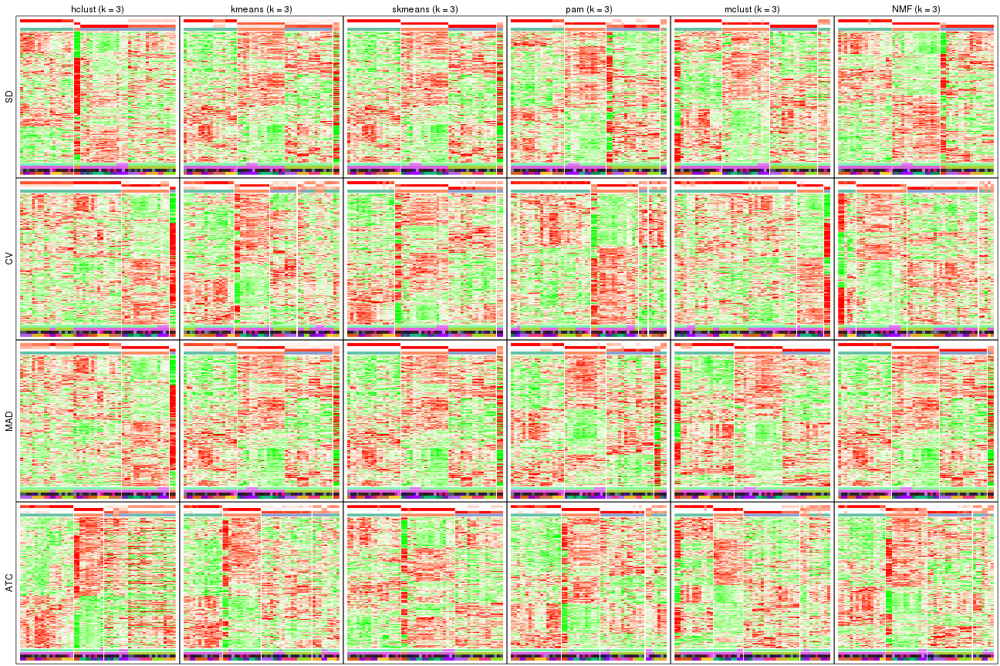
collect_plots(res_list, k = 4, fun = get_signatures, mc.cores = 4)

collect_plots(res_list, k = 5, fun = get_signatures, mc.cores = 4)
collect_plots(res_list, k = 6, fun = get_signatures, mc.cores = 4)
The statistics used for measuring the stability of consensus partitioning. (How are they defined?)
get_stats(res_list, k = 2)
#> k 1-PAC mean_silhouette concordance area_increased Rand Jaccard
#> SD:NMF 2 0.537 0.733 0.893 0.491 0.502 0.502
#> CV:NMF 2 0.694 0.830 0.930 0.501 0.497 0.497
#> MAD:NMF 2 0.600 0.782 0.912 0.496 0.491 0.491
#> ATC:NMF 2 0.918 0.935 0.971 0.475 0.517 0.517
#> SD:skmeans 2 0.614 0.898 0.946 0.495 0.490 0.490
#> CV:skmeans 2 0.670 0.801 0.919 0.505 0.491 0.491
#> MAD:skmeans 2 0.735 0.885 0.941 0.492 0.490 0.490
#> ATC:skmeans 2 1.000 0.975 0.989 0.485 0.517 0.517
#> SD:mclust 2 0.308 0.529 0.720 0.464 0.566 0.566
#> CV:mclust 2 0.299 0.737 0.859 0.331 0.618 0.618
#> MAD:mclust 2 0.321 0.777 0.840 0.463 0.517 0.517
#> ATC:mclust 2 0.172 0.366 0.683 0.386 0.527 0.527
#> SD:kmeans 2 0.207 0.655 0.721 0.427 0.538 0.538
#> CV:kmeans 2 0.279 0.705 0.843 0.414 0.551 0.551
#> MAD:kmeans 2 0.231 0.721 0.773 0.442 0.538 0.538
#> ATC:kmeans 2 1.000 0.982 0.991 0.436 0.566 0.566
#> SD:pam 2 0.520 0.819 0.863 0.440 0.551 0.551
#> CV:pam 2 0.743 0.938 0.963 0.436 0.566 0.566
#> MAD:pam 2 0.491 0.826 0.847 0.430 0.551 0.551
#> ATC:pam 2 1.000 0.999 1.000 0.419 0.581 0.581
#> SD:hclust 2 0.517 0.934 0.951 0.125 0.925 0.925
#> CV:hclust 2 0.693 0.936 0.958 0.132 0.925 0.925
#> MAD:hclust 2 0.275 0.856 0.839 0.382 0.538 0.538
#> ATC:hclust 2 0.746 0.870 0.950 0.405 0.581 0.581
get_stats(res_list, k = 3)
#> k 1-PAC mean_silhouette concordance area_increased Rand Jaccard
#> SD:NMF 3 1.000 0.944 0.964 0.377 0.695 0.460
#> CV:NMF 3 0.650 0.752 0.874 0.251 0.753 0.559
#> MAD:NMF 3 1.000 0.930 0.968 0.366 0.721 0.488
#> ATC:NMF 3 0.576 0.648 0.834 0.367 0.687 0.458
#> SD:skmeans 3 1.000 0.961 0.985 0.371 0.710 0.474
#> CV:skmeans 3 0.735 0.797 0.892 0.332 0.714 0.479
#> MAD:skmeans 3 1.000 0.961 0.985 0.379 0.735 0.507
#> ATC:skmeans 3 0.837 0.944 0.961 0.381 0.756 0.549
#> SD:mclust 3 0.878 0.901 0.960 0.452 0.759 0.573
#> CV:mclust 3 0.686 0.839 0.909 0.303 0.845 0.781
#> MAD:mclust 3 0.925 0.932 0.967 0.460 0.807 0.627
#> ATC:mclust 3 0.668 0.709 0.871 0.681 0.662 0.433
#> SD:kmeans 3 0.530 0.842 0.838 0.453 0.783 0.597
#> CV:kmeans 3 0.347 0.581 0.765 0.487 0.757 0.579
#> MAD:kmeans 3 0.562 0.882 0.864 0.431 0.783 0.597
#> ATC:kmeans 3 0.564 0.737 0.863 0.474 0.684 0.483
#> SD:pam 3 0.706 0.821 0.915 0.501 0.683 0.468
#> CV:pam 3 0.626 0.647 0.858 0.257 0.925 0.868
#> MAD:pam 3 0.675 0.784 0.900 0.530 0.708 0.501
#> ATC:pam 3 0.712 0.779 0.910 0.592 0.744 0.559
#> SD:hclust 3 0.590 0.882 0.922 3.007 0.566 0.530
#> CV:hclust 3 0.477 0.844 0.903 2.611 0.590 0.556
#> MAD:hclust 3 0.463 0.821 0.862 0.298 0.976 0.955
#> ATC:hclust 3 0.482 0.457 0.793 0.476 0.762 0.605
get_stats(res_list, k = 4)
#> k 1-PAC mean_silhouette concordance area_increased Rand Jaccard
#> SD:NMF 4 0.925 0.914 0.952 0.0646 0.962 0.881
#> CV:NMF 4 0.808 0.830 0.921 0.1757 0.752 0.441
#> MAD:NMF 4 0.925 0.920 0.956 0.0606 0.961 0.879
#> ATC:NMF 4 0.811 0.846 0.924 0.0998 0.811 0.529
#> SD:skmeans 4 0.825 0.829 0.825 0.0911 0.958 0.869
#> CV:skmeans 4 0.675 0.696 0.823 0.1120 0.940 0.812
#> MAD:skmeans 4 0.825 0.741 0.846 0.0893 0.885 0.668
#> ATC:skmeans 4 0.816 0.912 0.905 0.0855 0.933 0.795
#> SD:mclust 4 0.962 0.970 0.984 0.0476 0.973 0.916
#> CV:mclust 4 0.486 0.741 0.829 0.3649 0.725 0.575
#> MAD:mclust 4 0.962 0.965 0.985 0.0463 0.973 0.916
#> ATC:mclust 4 0.765 0.825 0.892 0.0709 0.931 0.803
#> SD:kmeans 4 0.741 0.786 0.830 0.1376 0.976 0.925
#> CV:kmeans 4 0.491 0.540 0.748 0.1444 0.840 0.612
#> MAD:kmeans 4 0.747 0.781 0.837 0.1338 0.976 0.925
#> ATC:kmeans 4 0.611 0.573 0.751 0.1349 0.928 0.791
#> SD:pam 4 0.890 0.851 0.925 0.1044 0.942 0.821
#> CV:pam 4 0.768 0.845 0.918 0.1253 0.882 0.765
#> MAD:pam 4 0.733 0.788 0.850 0.0941 0.952 0.853
#> ATC:pam 4 0.640 0.654 0.795 0.0809 0.959 0.875
#> SD:hclust 4 0.916 0.954 0.977 0.3934 0.807 0.606
#> CV:hclust 4 0.548 0.819 0.874 0.4057 0.783 0.578
#> MAD:hclust 4 0.813 0.882 0.951 0.4008 0.783 0.578
#> ATC:hclust 4 0.633 0.693 0.790 0.2011 0.792 0.516
get_stats(res_list, k = 5)
#> k 1-PAC mean_silhouette concordance area_increased Rand Jaccard
#> SD:NMF 5 0.913 0.910 0.951 0.0797 0.913 0.706
#> CV:NMF 5 0.726 0.656 0.814 0.0661 0.919 0.707
#> MAD:NMF 5 0.912 0.899 0.935 0.0805 0.913 0.706
#> ATC:NMF 5 0.787 0.837 0.884 0.0794 0.922 0.734
#> SD:skmeans 5 0.851 0.890 0.891 0.0591 0.940 0.784
#> CV:skmeans 5 0.662 0.612 0.745 0.0637 0.915 0.690
#> MAD:skmeans 5 0.896 0.866 0.879 0.0597 0.940 0.774
#> ATC:skmeans 5 0.846 0.877 0.894 0.0605 0.958 0.841
#> SD:mclust 5 0.878 0.951 0.938 0.0539 0.958 0.858
#> CV:mclust 5 0.531 0.561 0.754 0.2037 0.780 0.464
#> MAD:mclust 5 0.969 0.975 0.969 0.0502 0.958 0.858
#> ATC:mclust 5 0.805 0.819 0.877 0.0804 0.925 0.762
#> SD:kmeans 5 0.753 0.704 0.752 0.0797 0.910 0.707
#> CV:kmeans 5 0.542 0.484 0.707 0.0862 0.869 0.600
#> MAD:kmeans 5 0.735 0.665 0.735 0.0668 0.885 0.643
#> ATC:kmeans 5 0.622 0.549 0.716 0.0722 0.845 0.507
#> SD:pam 5 0.938 0.878 0.955 0.0669 0.933 0.757
#> CV:pam 5 0.674 0.785 0.871 0.1449 0.901 0.750
#> MAD:pam 5 0.898 0.855 0.932 0.0795 0.900 0.666
#> ATC:pam 5 0.753 0.647 0.814 0.0737 0.897 0.666
#> SD:hclust 5 0.922 0.952 0.966 0.0654 0.964 0.878
#> CV:hclust 5 0.662 0.820 0.843 0.1092 0.940 0.797
#> MAD:hclust 5 0.934 0.926 0.960 0.0809 0.964 0.878
#> ATC:hclust 5 0.751 0.635 0.791 0.0798 0.946 0.810
get_stats(res_list, k = 6)
#> k 1-PAC mean_silhouette concordance area_increased Rand Jaccard
#> SD:NMF 6 0.975 0.928 0.967 0.0437 0.924 0.685
#> CV:NMF 6 0.736 0.753 0.831 0.0422 0.943 0.742
#> MAD:NMF 6 0.963 0.934 0.965 0.0463 0.924 0.685
#> ATC:NMF 6 0.811 0.843 0.892 0.0522 0.948 0.773
#> SD:skmeans 6 0.883 0.912 0.884 0.0445 0.952 0.783
#> CV:skmeans 6 0.711 0.636 0.784 0.0424 0.933 0.697
#> MAD:skmeans 6 0.875 0.903 0.891 0.0467 0.952 0.783
#> ATC:skmeans 6 0.801 0.878 0.874 0.0431 0.970 0.865
#> SD:mclust 6 0.830 0.898 0.862 0.0585 0.952 0.814
#> CV:mclust 6 0.544 0.508 0.709 0.0742 0.863 0.524
#> MAD:mclust 6 0.869 0.891 0.886 0.0565 0.966 0.867
#> ATC:mclust 6 0.822 0.665 0.852 0.0508 0.902 0.641
#> SD:kmeans 6 0.769 0.752 0.764 0.0402 0.988 0.948
#> CV:kmeans 6 0.608 0.558 0.708 0.0493 0.894 0.588
#> MAD:kmeans 6 0.743 0.756 0.738 0.0477 0.919 0.665
#> ATC:kmeans 6 0.702 0.722 0.766 0.0491 0.915 0.618
#> SD:pam 6 0.924 0.733 0.877 0.0363 0.983 0.926
#> CV:pam 6 0.833 0.837 0.914 0.1329 0.853 0.549
#> MAD:pam 6 0.884 0.838 0.904 0.0425 0.955 0.795
#> ATC:pam 6 0.792 0.616 0.776 0.0506 0.913 0.643
#> SD:hclust 6 0.964 0.960 0.974 0.0546 0.958 0.838
#> CV:hclust 6 0.723 0.818 0.841 0.0709 0.952 0.796
#> MAD:hclust 6 1.000 0.987 0.991 0.0429 0.958 0.838
#> ATC:hclust 6 0.749 0.640 0.746 0.0452 0.876 0.566
Following heatmap plots the partition for each combination of methods and the lightness correspond to the silhouette scores for samples in each method. On top the consensus subgroup is inferred from all methods by taking the mean silhouette scores as weight.
collect_stats(res_list, k = 2)
collect_stats(res_list, k = 3)
collect_stats(res_list, k = 4)
collect_stats(res_list, k = 5)
collect_stats(res_list, k = 6)

Collect partitions from all methods:
collect_classes(res_list, k = 2)
collect_classes(res_list, k = 3)
collect_classes(res_list, k = 4)
collect_classes(res_list, k = 5)
collect_classes(res_list, k = 6)
Overlap of top rows from different top-row methods:
top_rows_overlap(res_list, top_n = 825, method = "euler")
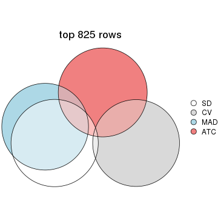
top_rows_overlap(res_list, top_n = 1650, method = "euler")
top_rows_overlap(res_list, top_n = 2476, method = "euler")
top_rows_overlap(res_list, top_n = 3301, method = "euler")
top_rows_overlap(res_list, top_n = 4126, method = "euler")
Also visualize the correspondance of rankings between different top-row methods:
top_rows_overlap(res_list, top_n = 825, method = "correspondance")

top_rows_overlap(res_list, top_n = 1650, method = "correspondance")
top_rows_overlap(res_list, top_n = 2476, method = "correspondance")
top_rows_overlap(res_list, top_n = 3301, method = "correspondance")
top_rows_overlap(res_list, top_n = 4126, method = "correspondance")
Heatmaps of the top rows:
top_rows_heatmap(res_list, top_n = 825)
top_rows_heatmap(res_list, top_n = 1650)
top_rows_heatmap(res_list, top_n = 2476)

top_rows_heatmap(res_list, top_n = 3301)
top_rows_heatmap(res_list, top_n = 4126)

Test correlation between subgroups and known annotations. If the known annotation is numeric, one-way ANOVA test is applied, and if the known annotation is discrete, chi-squared contingency table test is applied.
test_to_known_factors(res_list, k = 2)
#> n disease.state(p) other(p) protocol(p) specimen(p) k
#> SD:NMF 41 3.27e-06 3.40e-01 0.737 1.06e-04 2
#> CV:NMF 47 1.86e-03 1.91e-02 0.429 8.62e-05 2
#> MAD:NMF 46 5.23e-05 3.47e-01 0.804 3.96e-05 2
#> ATC:NMF 51 3.14e-04 4.58e-03 0.448 7.10e-06 2
#> SD:skmeans 52 6.52e-05 3.47e-01 0.846 1.35e-06 2
#> CV:skmeans 47 2.94e-04 2.63e-01 0.806 9.66e-06 2
#> MAD:skmeans 48 1.42e-04 2.08e-01 0.581 3.13e-06 2
#> ATC:skmeans 52 1.46e-03 2.33e-03 0.380 1.62e-05 2
#> SD:mclust 16 NA NA NA NA 2
#> CV:mclust 45 1.55e-01 5.62e-02 0.108 1.76e-03 2
#> MAD:mclust 52 4.15e-08 3.02e-04 0.560 1.35e-06 2
#> ATC:mclust 20 4.54e-05 1.14e-01 0.339 1.03e-02 2
#> SD:kmeans 40 5.69e-06 5.57e-02 0.514 1.69e-05 2
#> CV:kmeans 42 3.01e-03 6.56e-03 0.469 6.55e-05 2
#> MAD:kmeans 44 2.51e-04 1.13e-02 0.519 7.27e-06 2
#> ATC:kmeans 52 2.20e-03 1.27e-03 0.313 2.13e-05 2
#> SD:pam 51 2.65e-04 7.67e-03 0.218 9.98e-05 2
#> CV:pam 52 2.20e-03 7.06e-03 0.171 2.97e-04 2
#> MAD:pam 52 2.49e-04 5.76e-03 0.225 7.13e-05 2
#> ATC:pam 52 1.95e-03 1.60e-03 0.184 9.39e-05 2
#> SD:hclust 52 3.00e-11 5.11e-12 0.994 1.35e-06 2
#> CV:hclust 52 3.00e-11 5.11e-12 0.994 1.35e-06 2
#> MAD:hclust 52 2.92e-04 6.84e-04 0.383 1.35e-06 2
#> ATC:hclust 46 3.18e-03 1.78e-03 0.393 1.42e-05 2
test_to_known_factors(res_list, k = 3)
#> n disease.state(p) other(p) protocol(p) specimen(p) k
#> SD:NMF 52 2.46e-08 1.38e-10 0.307 2.75e-11 3
#> CV:NMF 47 2.66e-05 2.59e-04 0.467 8.56e-08 3
#> MAD:NMF 50 1.80e-08 1.39e-11 0.295 3.00e-11 3
#> ATC:NMF 45 4.91e-07 3.83e-08 0.199 1.37e-07 3
#> SD:skmeans 50 1.80e-08 1.39e-11 0.295 3.00e-11 3
#> CV:skmeans 50 1.05e-07 9.48e-11 0.235 1.28e-10 3
#> MAD:skmeans 50 1.80e-08 1.39e-11 0.295 3.00e-11 3
#> ATC:skmeans 52 2.67e-08 3.16e-11 0.293 2.75e-11 3
#> SD:mclust 48 4.95e-10 2.03e-10 0.290 1.43e-10 3
#> CV:mclust 52 2.37e-10 1.03e-11 0.756 3.99e-08 3
#> MAD:mclust 52 5.82e-08 4.24e-11 0.261 2.75e-11 3
#> ATC:mclust 42 1.23e-08 6.03e-07 0.110 6.80e-07 3
#> SD:kmeans 50 1.80e-08 1.39e-11 0.295 3.00e-11 3
#> CV:kmeans 38 1.13e-03 1.30e-04 0.267 5.69e-06 3
#> MAD:kmeans 50 1.80e-08 1.39e-11 0.295 3.00e-11 3
#> ATC:kmeans 43 9.68e-07 1.74e-06 0.313 5.73e-06 3
#> SD:pam 50 3.21e-08 3.61e-10 0.296 1.28e-10 3
#> CV:pam 46 1.76e-02 3.22e-02 0.330 1.85e-05 3
#> MAD:pam 48 2.12e-08 3.78e-11 0.280 1.43e-10 3
#> ATC:pam 45 1.29e-06 1.82e-07 0.206 5.87e-07 3
#> SD:hclust 52 7.16e-17 1.78e-13 0.942 2.75e-11 3
#> CV:hclust 52 9.77e-13 5.29e-13 0.838 2.75e-11 3
#> MAD:hclust 52 9.77e-13 5.29e-13 0.838 2.75e-11 3
#> ATC:hclust 29 4.77e-03 1.30e-01 0.978 5.68e-03 3
test_to_known_factors(res_list, k = 4)
#> n disease.state(p) other(p) protocol(p) specimen(p) k
#> SD:NMF 52 1.01e-12 2.42e-16 0.549 2.03e-13 4
#> CV:NMF 50 3.44e-09 2.59e-10 0.201 9.62e-11 4
#> MAD:NMF 52 1.01e-12 2.42e-16 0.549 2.03e-13 4
#> ATC:NMF 50 8.51e-17 1.36e-17 0.504 1.16e-12 4
#> SD:skmeans 46 1.43e-09 5.67e-10 0.217 8.49e-15 4
#> CV:skmeans 42 1.11e-05 4.01e-09 0.662 6.46e-12 4
#> MAD:skmeans 38 1.84e-08 5.60e-09 0.345 4.25e-09 4
#> ATC:skmeans 52 3.26e-07 2.74e-09 0.466 7.90e-15 4
#> SD:mclust 52 1.27e-16 3.67e-20 0.669 6.33e-16 4
#> CV:mclust 48 2.14e-11 2.40e-12 0.811 9.33e-10 4
#> MAD:mclust 51 7.14e-17 9.60e-20 0.628 1.99e-15 4
#> ATC:mclust 51 1.71e-16 2.97e-17 0.510 1.91e-13 4
#> SD:kmeans 48 4.15e-18 1.71e-18 0.676 7.40e-15 4
#> CV:kmeans 34 2.52e-09 1.05e-12 0.715 5.70e-09 4
#> MAD:kmeans 48 4.15e-18 1.71e-18 0.676 7.40e-15 4
#> ATC:kmeans 39 3.07e-06 1.48e-08 0.368 4.25e-07 4
#> SD:pam 49 1.57e-07 8.99e-10 0.723 1.93e-14 4
#> CV:pam 50 4.36e-10 1.32e-10 0.451 2.27e-10 4
#> MAD:pam 48 1.71e-10 2.13e-10 0.180 7.40e-15 4
#> ATC:pam 45 1.51e-05 1.74e-06 0.127 7.77e-11 4
#> SD:hclust 52 1.27e-16 3.67e-20 0.669 6.33e-16 4
#> CV:hclust 52 7.76e-15 2.17e-18 0.617 6.56e-15 4
#> MAD:hclust 52 1.27e-16 3.67e-20 0.669 6.33e-16 4
#> ATC:hclust 50 3.70e-09 1.45e-10 0.203 1.13e-09 4
test_to_known_factors(res_list, k = 5)
#> n disease.state(p) other(p) protocol(p) specimen(p) k
#> SD:NMF 52 1.76e-14 2.99e-13 0.452 6.35e-18 5
#> CV:NMF 41 5.90e-07 2.66e-08 0.371 1.62e-10 5
#> MAD:NMF 52 1.76e-14 2.99e-13 0.452 6.35e-18 5
#> ATC:NMF 51 1.06e-15 2.13e-16 0.549 1.05e-16 5
#> SD:skmeans 52 7.81e-10 1.65e-09 0.364 1.54e-20 5
#> CV:skmeans 37 9.98e-08 4.60e-08 0.379 3.16e-11 5
#> MAD:skmeans 50 1.25e-09 3.61e-10 0.396 1.86e-20 5
#> ATC:skmeans 52 2.28e-06 2.43e-08 0.556 1.90e-19 5
#> SD:mclust 52 2.27e-18 6.48e-19 0.436 1.54e-20 5
#> CV:mclust 43 4.60e-10 4.40e-12 0.685 4.82e-11 5
#> MAD:mclust 52 2.27e-18 6.48e-19 0.436 1.54e-20 5
#> ATC:mclust 50 1.45e-14 8.10e-16 0.444 8.88e-15 5
#> SD:kmeans 40 2.58e-14 3.57e-15 0.680 1.02e-12 5
#> CV:kmeans 28 5.05e-09 2.91e-10 0.668 5.17e-07 5
#> MAD:kmeans 40 2.58e-14 3.57e-15 0.865 1.02e-12 5
#> ATC:kmeans 41 5.08e-05 7.82e-06 0.150 6.22e-12 5
#> SD:pam 48 4.79e-09 1.60e-08 0.499 6.35e-18 5
#> CV:pam 49 2.80e-10 9.71e-12 0.311 8.53e-15 5
#> MAD:pam 48 4.79e-09 1.60e-08 0.499 6.35e-18 5
#> ATC:pam 38 1.00e-12 1.29e-11 0.646 1.74e-09 5
#> SD:hclust 52 4.19e-15 6.48e-19 0.623 1.54e-20 5
#> CV:hclust 52 1.15e-13 1.89e-17 0.864 4.76e-17 5
#> MAD:hclust 48 1.53e-16 2.80e-17 0.613 4.02e-19 5
#> ATC:hclust 42 4.30e-07 4.01e-09 0.413 5.68e-08 5
test_to_known_factors(res_list, k = 6)
#> n disease.state(p) other(p) protocol(p) specimen(p) k
#> SD:NMF 50 8.08e-13 1.19e-12 0.3234 7.48e-20 6
#> CV:NMF 47 1.67e-10 7.42e-09 0.1460 5.24e-16 6
#> MAD:NMF 52 1.48e-13 6.26e-12 0.2529 2.39e-18 6
#> ATC:NMF 50 4.73e-13 1.61e-11 0.2606 1.98e-18 6
#> SD:skmeans 52 4.03e-12 1.22e-08 0.2870 2.20e-21 6
#> CV:skmeans 37 5.72e-07 1.80e-07 0.2454 3.54e-13 6
#> MAD:skmeans 50 3.19e-12 1.39e-09 0.3278 2.27e-21 6
#> ATC:skmeans 50 9.33e-08 5.97e-08 0.3667 1.68e-23 6
#> SD:mclust 51 1.75e-16 2.17e-17 0.6154 2.55e-24 6
#> CV:mclust 26 2.98e-07 9.62e-08 0.4847 5.23e-08 6
#> MAD:mclust 51 1.63e-16 2.17e-17 0.5479 7.15e-20 6
#> ATC:mclust 36 1.34e-11 4.20e-10 0.3825 5.19e-11 6
#> SD:kmeans 48 3.74e-15 3.43e-16 0.4924 2.25e-23 6
#> CV:kmeans 30 1.30e-08 4.66e-10 0.0175 2.64e-06 6
#> MAD:kmeans 45 1.29e-11 1.45e-08 0.1825 1.61e-19 6
#> ATC:kmeans 47 3.43e-07 1.08e-07 0.2665 4.71e-15 6
#> SD:pam 45 1.03e-08 3.98e-09 0.5746 3.76e-17 6
#> CV:pam 50 7.84e-14 2.55e-14 0.2828 4.43e-19 6
#> MAD:pam 47 2.81e-12 5.68e-09 0.3867 1.66e-19 6
#> ATC:pam 36 5.15e-11 1.99e-10 0.1657 1.73e-10 6
#> SD:hclust 52 6.30e-17 8.60e-18 0.4235 3.84e-25 6
#> CV:hclust 52 2.26e-13 2.34e-16 0.6646 3.95e-21 6
#> MAD:hclust 52 6.30e-17 8.60e-18 0.4235 3.84e-25 6
#> ATC:hclust 36 2.36e-09 1.82e-11 0.5595 2.80e-11 6
The object with results only for a single top-value method and a single partition method can be extracted as:
res = res_list["SD", "hclust"]
# you can also extract it by
# res = res_list["SD:hclust"]
A summary of res and all the functions that can be applied to it:
res
#> A 'ConsensusPartition' object with k = 2, 3, 4, 5, 6.
#> On a matrix with 8252 rows and 52 columns.
#> Top rows (825, 1650, 2476, 3301, 4126) are extracted by 'SD' method.
#> Subgroups are detected by 'hclust' method.
#> Performed in total 1250 partitions by row resampling.
#> Best k for subgroups seems to be 6.
#>
#> Following methods can be applied to this 'ConsensusPartition' object:
#> [1] "cola_report" "collect_classes" "collect_plots"
#> [4] "collect_stats" "colnames" "compare_signatures"
#> [7] "consensus_heatmap" "dimension_reduction" "functional_enrichment"
#> [10] "get_anno_col" "get_anno" "get_classes"
#> [13] "get_consensus" "get_matrix" "get_membership"
#> [16] "get_param" "get_signatures" "get_stats"
#> [19] "is_best_k" "is_stable_k" "membership_heatmap"
#> [22] "ncol" "nrow" "plot_ecdf"
#> [25] "rownames" "select_partition_number" "show"
#> [28] "suggest_best_k" "test_to_known_factors"
collect_plots() function collects all the plots made from res for all k (number of partitions)
into one single page to provide an easy and fast comparison between different k.
collect_plots(res)
The plots are:
k and the heatmap of
predicted classes for each k.k.k.k.All the plots in panels can be made by individual functions and they are plotted later in this section.
select_partition_number() produces several plots showing different
statistics for choosing “optimized” k. There are following statistics:
k;k, the area increased is defined as \(A_k - A_{k-1}\).The detailed explanations of these statistics can be found in the cola vignette.
Generally speaking, lower PAC score, higher mean silhouette score or higher
concordance corresponds to better partition. Rand index and Jaccard index
measure how similar the current partition is compared to partition with k-1.
If they are too similar, we won't accept k is better than k-1.
select_partition_number(res)
The numeric values for all these statistics can be obtained by get_stats().
get_stats(res)
#> k 1-PAC mean_silhouette concordance area_increased Rand Jaccard
#> 2 2 0.517 0.934 0.951 0.1251 0.925 0.925
#> 3 3 0.590 0.882 0.922 3.0071 0.566 0.530
#> 4 4 0.916 0.954 0.977 0.3934 0.807 0.606
#> 5 5 0.922 0.952 0.966 0.0654 0.964 0.878
#> 6 6 0.964 0.960 0.974 0.0546 0.958 0.838
suggest_best_k() suggests the best \(k\) based on these statistics. The rules are as follows:
suggest_best_k(res)
#> [1] 6
#> attr(,"optional")
#> [1] 4 5
There is also optional best \(k\) = 4 5 that is worth to check.
Following shows the table of the partitions (You need to click the show/hide
code output link to see it). The membership matrix (columns with name p*)
is inferred by
clue::cl_consensus()
function with the SE method. Basically the value in the membership matrix
represents the probability to belong to a certain group. The finall class
label for an item is determined with the group with highest probability it
belongs to.
In get_classes() function, the entropy is calculated from the membership
matrix and the silhouette score is calculated from the consensus matrix.
cbind(get_classes(res, k = 2), get_membership(res, k = 2))
#> class entropy silhouette p1 p2
#> GSM92537 1 0.5408 0.905 0.876 0.124
#> GSM92539 1 0.5408 0.905 0.876 0.124
#> GSM92541 1 0.5408 0.905 0.876 0.124
#> GSM92543 1 0.5408 0.905 0.876 0.124
#> GSM92545 1 0.5408 0.905 0.876 0.124
#> GSM92546 1 0.5408 0.905 0.876 0.124
#> GSM92533 1 0.5408 0.905 0.876 0.124
#> GSM92535 1 0.5408 0.905 0.876 0.124
#> GSM92540 1 0.5408 0.905 0.876 0.124
#> GSM92538 1 0.5408 0.905 0.876 0.124
#> GSM92542 1 0.5408 0.905 0.876 0.124
#> GSM92544 1 0.5408 0.905 0.876 0.124
#> GSM92536 1 0.5408 0.905 0.876 0.124
#> GSM92534 1 0.5408 0.905 0.876 0.124
#> GSM92547 1 0.0376 0.946 0.996 0.004
#> GSM92549 1 0.0376 0.946 0.996 0.004
#> GSM92550 1 0.0376 0.946 0.996 0.004
#> GSM92548 1 0.0376 0.946 0.996 0.004
#> GSM92551 1 0.0376 0.946 0.996 0.004
#> GSM92553 1 0.0376 0.946 0.996 0.004
#> GSM92559 1 0.0376 0.946 0.996 0.004
#> GSM92561 1 0.0376 0.946 0.996 0.004
#> GSM92555 1 0.0000 0.947 1.000 0.000
#> GSM92557 1 0.0376 0.946 0.996 0.004
#> GSM92563 1 0.5408 0.905 0.876 0.124
#> GSM92565 1 0.5408 0.905 0.876 0.124
#> GSM92554 1 0.0376 0.946 0.996 0.004
#> GSM92564 1 0.5408 0.905 0.876 0.124
#> GSM92562 1 0.0376 0.946 0.996 0.004
#> GSM92558 1 0.0376 0.946 0.996 0.004
#> GSM92566 1 0.5408 0.905 0.876 0.124
#> GSM92552 1 0.0376 0.946 0.996 0.004
#> GSM92560 1 0.0000 0.947 1.000 0.000
#> GSM92556 1 0.0000 0.947 1.000 0.000
#> GSM92567 1 0.0000 0.947 1.000 0.000
#> GSM92569 1 0.0000 0.947 1.000 0.000
#> GSM92571 1 0.0000 0.947 1.000 0.000
#> GSM92573 1 0.0000 0.947 1.000 0.000
#> GSM92575 1 0.0000 0.947 1.000 0.000
#> GSM92577 1 0.0000 0.947 1.000 0.000
#> GSM92579 1 0.0000 0.947 1.000 0.000
#> GSM92581 1 0.0000 0.947 1.000 0.000
#> GSM92568 1 0.0000 0.947 1.000 0.000
#> GSM92576 1 0.0000 0.947 1.000 0.000
#> GSM92580 1 0.0000 0.947 1.000 0.000
#> GSM92578 1 0.0000 0.947 1.000 0.000
#> GSM92572 1 0.0000 0.947 1.000 0.000
#> GSM92574 1 0.0000 0.947 1.000 0.000
#> GSM92582 1 0.0000 0.947 1.000 0.000
#> GSM92570 1 0.0000 0.947 1.000 0.000
#> GSM92583 2 0.5408 1.000 0.124 0.876
#> GSM92584 2 0.5408 1.000 0.124 0.876
cbind(get_classes(res, k = 3), get_membership(res, k = 3))
#> class entropy silhouette p1 p2 p3
#> GSM92537 1 0.0000 0.969 1.000 0 0.000
#> GSM92539 1 0.0000 0.969 1.000 0 0.000
#> GSM92541 1 0.0000 0.969 1.000 0 0.000
#> GSM92543 1 0.0000 0.969 1.000 0 0.000
#> GSM92545 1 0.0000 0.969 1.000 0 0.000
#> GSM92546 1 0.0000 0.969 1.000 0 0.000
#> GSM92533 1 0.0000 0.969 1.000 0 0.000
#> GSM92535 1 0.0000 0.969 1.000 0 0.000
#> GSM92540 1 0.0000 0.969 1.000 0 0.000
#> GSM92538 1 0.0000 0.969 1.000 0 0.000
#> GSM92542 1 0.0000 0.969 1.000 0 0.000
#> GSM92544 1 0.0000 0.969 1.000 0 0.000
#> GSM92536 1 0.0000 0.969 1.000 0 0.000
#> GSM92534 1 0.0000 0.969 1.000 0 0.000
#> GSM92547 3 0.0000 0.841 0.000 0 1.000
#> GSM92549 3 0.0000 0.841 0.000 0 1.000
#> GSM92550 3 0.0000 0.841 0.000 0 1.000
#> GSM92548 3 0.0000 0.841 0.000 0 1.000
#> GSM92551 3 0.0000 0.841 0.000 0 1.000
#> GSM92553 3 0.0000 0.841 0.000 0 1.000
#> GSM92559 3 0.0000 0.841 0.000 0 1.000
#> GSM92561 3 0.0000 0.841 0.000 0 1.000
#> GSM92555 3 0.0424 0.842 0.008 0 0.992
#> GSM92557 3 0.0000 0.841 0.000 0 1.000
#> GSM92563 1 0.2625 0.889 0.916 0 0.084
#> GSM92565 1 0.2625 0.889 0.916 0 0.084
#> GSM92554 3 0.0000 0.841 0.000 0 1.000
#> GSM92564 1 0.2625 0.889 0.916 0 0.084
#> GSM92562 3 0.0000 0.841 0.000 0 1.000
#> GSM92558 3 0.0000 0.841 0.000 0 1.000
#> GSM92566 1 0.2625 0.889 0.916 0 0.084
#> GSM92552 3 0.0000 0.841 0.000 0 1.000
#> GSM92560 3 0.0424 0.842 0.008 0 0.992
#> GSM92556 3 0.0424 0.842 0.008 0 0.992
#> GSM92567 3 0.4654 0.842 0.208 0 0.792
#> GSM92569 3 0.4654 0.842 0.208 0 0.792
#> GSM92571 3 0.4931 0.833 0.232 0 0.768
#> GSM92573 3 0.4931 0.833 0.232 0 0.768
#> GSM92575 3 0.5058 0.825 0.244 0 0.756
#> GSM92577 3 0.5058 0.825 0.244 0 0.756
#> GSM92579 3 0.5058 0.825 0.244 0 0.756
#> GSM92581 3 0.5058 0.825 0.244 0 0.756
#> GSM92568 3 0.4654 0.842 0.208 0 0.792
#> GSM92576 3 0.5058 0.825 0.244 0 0.756
#> GSM92580 3 0.5058 0.825 0.244 0 0.756
#> GSM92578 3 0.5058 0.825 0.244 0 0.756
#> GSM92572 3 0.4931 0.833 0.232 0 0.768
#> GSM92574 3 0.4931 0.833 0.232 0 0.768
#> GSM92582 3 0.5058 0.825 0.244 0 0.756
#> GSM92570 3 0.4654 0.842 0.208 0 0.792
#> GSM92583 2 0.0000 1.000 0.000 1 0.000
#> GSM92584 2 0.0000 1.000 0.000 1 0.000
cbind(get_classes(res, k = 4), get_membership(res, k = 4))
#> class entropy silhouette p1 p2 p3 p4
#> GSM92537 1 0.0000 0.973 1.000 0.000 0.000 0
#> GSM92539 1 0.0000 0.973 1.000 0.000 0.000 0
#> GSM92541 1 0.0000 0.973 1.000 0.000 0.000 0
#> GSM92543 1 0.0000 0.973 1.000 0.000 0.000 0
#> GSM92545 1 0.0000 0.973 1.000 0.000 0.000 0
#> GSM92546 1 0.0000 0.973 1.000 0.000 0.000 0
#> GSM92533 1 0.0000 0.973 1.000 0.000 0.000 0
#> GSM92535 1 0.0000 0.973 1.000 0.000 0.000 0
#> GSM92540 1 0.0000 0.973 1.000 0.000 0.000 0
#> GSM92538 1 0.0000 0.973 1.000 0.000 0.000 0
#> GSM92542 1 0.0000 0.973 1.000 0.000 0.000 0
#> GSM92544 1 0.0000 0.973 1.000 0.000 0.000 0
#> GSM92536 1 0.0000 0.973 1.000 0.000 0.000 0
#> GSM92534 1 0.0000 0.973 1.000 0.000 0.000 0
#> GSM92547 2 0.0000 0.998 0.000 1.000 0.000 0
#> GSM92549 2 0.0000 0.998 0.000 1.000 0.000 0
#> GSM92550 2 0.0000 0.998 0.000 1.000 0.000 0
#> GSM92548 2 0.0000 0.998 0.000 1.000 0.000 0
#> GSM92551 2 0.0000 0.998 0.000 1.000 0.000 0
#> GSM92553 2 0.0000 0.998 0.000 1.000 0.000 0
#> GSM92559 2 0.0000 0.998 0.000 1.000 0.000 0
#> GSM92561 2 0.0000 0.998 0.000 1.000 0.000 0
#> GSM92555 2 0.0336 0.991 0.000 0.992 0.008 0
#> GSM92557 2 0.0000 0.998 0.000 1.000 0.000 0
#> GSM92563 1 0.2197 0.902 0.916 0.080 0.004 0
#> GSM92565 1 0.2197 0.902 0.916 0.080 0.004 0
#> GSM92554 2 0.0000 0.998 0.000 1.000 0.000 0
#> GSM92564 1 0.2197 0.902 0.916 0.080 0.004 0
#> GSM92562 2 0.0000 0.998 0.000 1.000 0.000 0
#> GSM92558 2 0.0000 0.998 0.000 1.000 0.000 0
#> GSM92566 1 0.2197 0.902 0.916 0.080 0.004 0
#> GSM92552 2 0.0000 0.998 0.000 1.000 0.000 0
#> GSM92560 2 0.0336 0.991 0.000 0.992 0.008 0
#> GSM92556 2 0.0336 0.991 0.000 0.992 0.008 0
#> GSM92567 3 0.1637 0.917 0.000 0.060 0.940 0
#> GSM92569 3 0.1637 0.917 0.000 0.060 0.940 0
#> GSM92571 3 0.3074 0.843 0.000 0.152 0.848 0
#> GSM92573 3 0.3074 0.843 0.000 0.152 0.848 0
#> GSM92575 3 0.0000 0.924 0.000 0.000 1.000 0
#> GSM92577 3 0.0000 0.924 0.000 0.000 1.000 0
#> GSM92579 3 0.0000 0.924 0.000 0.000 1.000 0
#> GSM92581 3 0.0000 0.924 0.000 0.000 1.000 0
#> GSM92568 3 0.1637 0.917 0.000 0.060 0.940 0
#> GSM92576 3 0.0000 0.924 0.000 0.000 1.000 0
#> GSM92580 3 0.0000 0.924 0.000 0.000 1.000 0
#> GSM92578 3 0.0000 0.924 0.000 0.000 1.000 0
#> GSM92572 3 0.3074 0.843 0.000 0.152 0.848 0
#> GSM92574 3 0.3074 0.843 0.000 0.152 0.848 0
#> GSM92582 3 0.0000 0.924 0.000 0.000 1.000 0
#> GSM92570 3 0.1637 0.917 0.000 0.060 0.940 0
#> GSM92583 4 0.0000 1.000 0.000 0.000 0.000 1
#> GSM92584 4 0.0000 1.000 0.000 0.000 0.000 1
cbind(get_classes(res, k = 5), get_membership(res, k = 5))
#> class entropy silhouette p1 p2 p3 p4 p5
#> GSM92537 1 0.0000 0.973 1.000 0.000 0.000 0 0.000
#> GSM92539 1 0.0000 0.973 1.000 0.000 0.000 0 0.000
#> GSM92541 1 0.0000 0.973 1.000 0.000 0.000 0 0.000
#> GSM92543 1 0.0000 0.973 1.000 0.000 0.000 0 0.000
#> GSM92545 1 0.0000 0.973 1.000 0.000 0.000 0 0.000
#> GSM92546 1 0.0000 0.973 1.000 0.000 0.000 0 0.000
#> GSM92533 1 0.0000 0.973 1.000 0.000 0.000 0 0.000
#> GSM92535 1 0.0000 0.973 1.000 0.000 0.000 0 0.000
#> GSM92540 1 0.0000 0.973 1.000 0.000 0.000 0 0.000
#> GSM92538 1 0.0000 0.973 1.000 0.000 0.000 0 0.000
#> GSM92542 1 0.0000 0.973 1.000 0.000 0.000 0 0.000
#> GSM92544 1 0.0000 0.973 1.000 0.000 0.000 0 0.000
#> GSM92536 1 0.0000 0.973 1.000 0.000 0.000 0 0.000
#> GSM92534 1 0.0000 0.973 1.000 0.000 0.000 0 0.000
#> GSM92547 2 0.0000 0.998 0.000 1.000 0.000 0 0.000
#> GSM92549 2 0.0000 0.998 0.000 1.000 0.000 0 0.000
#> GSM92550 2 0.0000 0.998 0.000 1.000 0.000 0 0.000
#> GSM92548 2 0.0000 0.998 0.000 1.000 0.000 0 0.000
#> GSM92551 2 0.0000 0.998 0.000 1.000 0.000 0 0.000
#> GSM92553 2 0.0000 0.998 0.000 1.000 0.000 0 0.000
#> GSM92559 2 0.0000 0.998 0.000 1.000 0.000 0 0.000
#> GSM92561 2 0.0000 0.998 0.000 1.000 0.000 0 0.000
#> GSM92555 2 0.0290 0.992 0.000 0.992 0.008 0 0.000
#> GSM92557 2 0.0000 0.998 0.000 1.000 0.000 0 0.000
#> GSM92563 1 0.2286 0.900 0.888 0.004 0.108 0 0.000
#> GSM92565 1 0.2286 0.900 0.888 0.004 0.108 0 0.000
#> GSM92554 2 0.0000 0.998 0.000 1.000 0.000 0 0.000
#> GSM92564 1 0.2286 0.900 0.888 0.004 0.108 0 0.000
#> GSM92562 2 0.0000 0.998 0.000 1.000 0.000 0 0.000
#> GSM92558 2 0.0000 0.998 0.000 1.000 0.000 0 0.000
#> GSM92566 1 0.2286 0.900 0.888 0.004 0.108 0 0.000
#> GSM92552 2 0.0000 0.998 0.000 1.000 0.000 0 0.000
#> GSM92560 2 0.0290 0.992 0.000 0.992 0.008 0 0.000
#> GSM92556 2 0.0290 0.992 0.000 0.992 0.008 0 0.000
#> GSM92567 5 0.3877 0.775 0.000 0.024 0.212 0 0.764
#> GSM92569 5 0.3877 0.775 0.000 0.024 0.212 0 0.764
#> GSM92571 3 0.0794 1.000 0.000 0.000 0.972 0 0.028
#> GSM92573 3 0.0794 1.000 0.000 0.000 0.972 0 0.028
#> GSM92575 5 0.0000 0.904 0.000 0.000 0.000 0 1.000
#> GSM92577 5 0.0000 0.904 0.000 0.000 0.000 0 1.000
#> GSM92579 5 0.0000 0.904 0.000 0.000 0.000 0 1.000
#> GSM92581 5 0.0000 0.904 0.000 0.000 0.000 0 1.000
#> GSM92568 5 0.3877 0.775 0.000 0.024 0.212 0 0.764
#> GSM92576 5 0.0000 0.904 0.000 0.000 0.000 0 1.000
#> GSM92580 5 0.0000 0.904 0.000 0.000 0.000 0 1.000
#> GSM92578 5 0.0000 0.904 0.000 0.000 0.000 0 1.000
#> GSM92572 3 0.0794 1.000 0.000 0.000 0.972 0 0.028
#> GSM92574 3 0.0794 1.000 0.000 0.000 0.972 0 0.028
#> GSM92582 5 0.0000 0.904 0.000 0.000 0.000 0 1.000
#> GSM92570 5 0.3877 0.775 0.000 0.024 0.212 0 0.764
#> GSM92583 4 0.0000 1.000 0.000 0.000 0.000 1 0.000
#> GSM92584 4 0.0000 1.000 0.000 0.000 0.000 1 0.000
cbind(get_classes(res, k = 6), get_membership(res, k = 6))
#> class entropy silhouette p1 p2 p3 p4 p5 p6
#> GSM92537 1 0.0000 1.000 1.000 0.000 0.000 0 0.00 0.000
#> GSM92539 1 0.0000 1.000 1.000 0.000 0.000 0 0.00 0.000
#> GSM92541 1 0.0000 1.000 1.000 0.000 0.000 0 0.00 0.000
#> GSM92543 1 0.0000 1.000 1.000 0.000 0.000 0 0.00 0.000
#> GSM92545 1 0.0000 1.000 1.000 0.000 0.000 0 0.00 0.000
#> GSM92546 1 0.0000 1.000 1.000 0.000 0.000 0 0.00 0.000
#> GSM92533 1 0.0000 1.000 1.000 0.000 0.000 0 0.00 0.000
#> GSM92535 1 0.0000 1.000 1.000 0.000 0.000 0 0.00 0.000
#> GSM92540 1 0.0000 1.000 1.000 0.000 0.000 0 0.00 0.000
#> GSM92538 1 0.0000 1.000 1.000 0.000 0.000 0 0.00 0.000
#> GSM92542 1 0.0000 1.000 1.000 0.000 0.000 0 0.00 0.000
#> GSM92544 1 0.0000 1.000 1.000 0.000 0.000 0 0.00 0.000
#> GSM92536 1 0.0000 1.000 1.000 0.000 0.000 0 0.00 0.000
#> GSM92534 1 0.0000 1.000 1.000 0.000 0.000 0 0.00 0.000
#> GSM92547 2 0.0632 0.983 0.000 0.976 0.000 0 0.00 0.024
#> GSM92549 2 0.0632 0.983 0.000 0.976 0.000 0 0.00 0.024
#> GSM92550 2 0.0632 0.983 0.000 0.976 0.000 0 0.00 0.024
#> GSM92548 2 0.0632 0.983 0.000 0.976 0.000 0 0.00 0.024
#> GSM92551 2 0.0000 0.987 0.000 1.000 0.000 0 0.00 0.000
#> GSM92553 2 0.0000 0.987 0.000 1.000 0.000 0 0.00 0.000
#> GSM92559 2 0.0000 0.987 0.000 1.000 0.000 0 0.00 0.000
#> GSM92561 2 0.0000 0.987 0.000 1.000 0.000 0 0.00 0.000
#> GSM92555 2 0.0891 0.978 0.000 0.968 0.008 0 0.00 0.024
#> GSM92557 2 0.0000 0.987 0.000 1.000 0.000 0 0.00 0.000
#> GSM92563 6 0.0632 1.000 0.024 0.000 0.000 0 0.00 0.976
#> GSM92565 6 0.0632 1.000 0.024 0.000 0.000 0 0.00 0.976
#> GSM92554 2 0.0000 0.987 0.000 1.000 0.000 0 0.00 0.000
#> GSM92564 6 0.0632 1.000 0.024 0.000 0.000 0 0.00 0.976
#> GSM92562 2 0.0000 0.987 0.000 1.000 0.000 0 0.00 0.000
#> GSM92558 2 0.0000 0.987 0.000 1.000 0.000 0 0.00 0.000
#> GSM92566 6 0.0632 1.000 0.024 0.000 0.000 0 0.00 0.976
#> GSM92552 2 0.0000 0.987 0.000 1.000 0.000 0 0.00 0.000
#> GSM92560 2 0.0891 0.978 0.000 0.968 0.008 0 0.00 0.024
#> GSM92556 2 0.0891 0.978 0.000 0.968 0.008 0 0.00 0.024
#> GSM92567 5 0.3645 0.754 0.000 0.000 0.236 0 0.74 0.024
#> GSM92569 5 0.3645 0.754 0.000 0.000 0.236 0 0.74 0.024
#> GSM92571 3 0.0000 1.000 0.000 0.000 1.000 0 0.00 0.000
#> GSM92573 3 0.0000 1.000 0.000 0.000 1.000 0 0.00 0.000
#> GSM92575 5 0.0000 0.894 0.000 0.000 0.000 0 1.00 0.000
#> GSM92577 5 0.0000 0.894 0.000 0.000 0.000 0 1.00 0.000
#> GSM92579 5 0.0000 0.894 0.000 0.000 0.000 0 1.00 0.000
#> GSM92581 5 0.0000 0.894 0.000 0.000 0.000 0 1.00 0.000
#> GSM92568 5 0.3645 0.754 0.000 0.000 0.236 0 0.74 0.024
#> GSM92576 5 0.0000 0.894 0.000 0.000 0.000 0 1.00 0.000
#> GSM92580 5 0.0000 0.894 0.000 0.000 0.000 0 1.00 0.000
#> GSM92578 5 0.0000 0.894 0.000 0.000 0.000 0 1.00 0.000
#> GSM92572 3 0.0000 1.000 0.000 0.000 1.000 0 0.00 0.000
#> GSM92574 3 0.0000 1.000 0.000 0.000 1.000 0 0.00 0.000
#> GSM92582 5 0.0000 0.894 0.000 0.000 0.000 0 1.00 0.000
#> GSM92570 5 0.3645 0.754 0.000 0.000 0.236 0 0.74 0.024
#> GSM92583 4 0.0000 1.000 0.000 0.000 0.000 1 0.00 0.000
#> GSM92584 4 0.0000 1.000 0.000 0.000 0.000 1 0.00 0.000
Heatmaps for the consensus matrix. It visualizes the probability of two samples to be in a same group.
consensus_heatmap(res, k = 2)
consensus_heatmap(res, k = 3)
consensus_heatmap(res, k = 4)
consensus_heatmap(res, k = 5)
consensus_heatmap(res, k = 6)
Heatmaps for the membership of samples in all partitions to see how consistent they are:
membership_heatmap(res, k = 2)
membership_heatmap(res, k = 3)
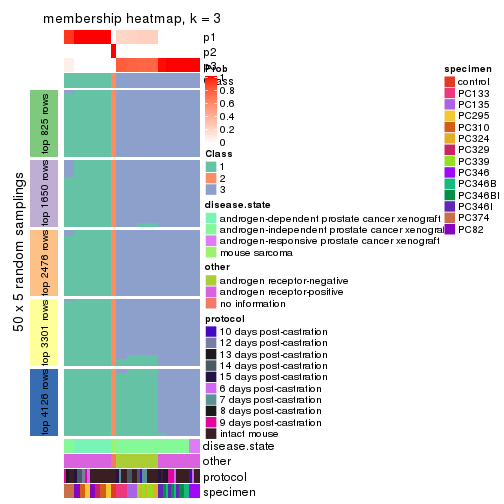
membership_heatmap(res, k = 4)
membership_heatmap(res, k = 5)
membership_heatmap(res, k = 6)
As soon as we have had the classes for columns, we can look for signatures which are significantly different between classes which can be candidate marks for certain classes. Following are the heatmaps for signatures.
Signature heatmaps where rows are scaled:
get_signatures(res, k = 2)
get_signatures(res, k = 3)
get_signatures(res, k = 4)
get_signatures(res, k = 5)
get_signatures(res, k = 6)
Signature heatmaps where rows are not scaled:
get_signatures(res, k = 2, scale_rows = FALSE)
get_signatures(res, k = 3, scale_rows = FALSE)
get_signatures(res, k = 4, scale_rows = FALSE)

get_signatures(res, k = 5, scale_rows = FALSE)
get_signatures(res, k = 6, scale_rows = FALSE)
Compare the overlap of signatures from different k:
compare_signatures(res)
get_signature() returns a data frame invisibly. TO get the list of signatures, the function
call should be assigned to a variable explicitly. In following code, if plot argument is set
to FALSE, no heatmap is plotted while only the differential analysis is performed.
# code only for demonstration
tb = get_signature(res, k = ..., plot = FALSE)
An example of the output of tb is:
#> which_row fdr mean_1 mean_2 scaled_mean_1 scaled_mean_2 km
#> 1 38 0.042760348 8.373488 9.131774 -0.5533452 0.5164555 1
#> 2 40 0.018707592 7.106213 8.469186 -0.6173731 0.5762149 1
#> 3 55 0.019134737 10.221463 11.207825 -0.6159697 0.5749050 1
#> 4 59 0.006059896 5.921854 7.869574 -0.6899429 0.6439467 1
#> 5 60 0.018055526 8.928898 10.211722 -0.6204761 0.5791110 1
#> 6 98 0.009384629 15.714769 14.887706 0.6635654 -0.6193277 2
...
The columns in tb are:
which_row: row indices corresponding to the input matrix.fdr: FDR for the differential test. mean_x: The mean value in group x.scaled_mean_x: The mean value in group x after rows are scaled.km: Row groups if k-means clustering is applied to rows.UMAP plot which shows how samples are separated.
dimension_reduction(res, k = 2, method = "UMAP")

dimension_reduction(res, k = 3, method = "UMAP")
dimension_reduction(res, k = 4, method = "UMAP")
dimension_reduction(res, k = 5, method = "UMAP")
dimension_reduction(res, k = 6, method = "UMAP")
Following heatmap shows how subgroups are split when increasing k:
collect_classes(res)
Test correlation between subgroups and known annotations. If the known annotation is numeric, one-way ANOVA test is applied, and if the known annotation is discrete, chi-squared contingency table test is applied.
test_to_known_factors(res)
#> n disease.state(p) other(p) protocol(p) specimen(p) k
#> SD:hclust 52 3.00e-11 5.11e-12 0.994 1.35e-06 2
#> SD:hclust 52 7.16e-17 1.78e-13 0.942 2.75e-11 3
#> SD:hclust 52 1.27e-16 3.67e-20 0.669 6.33e-16 4
#> SD:hclust 52 4.19e-15 6.48e-19 0.623 1.54e-20 5
#> SD:hclust 52 6.30e-17 8.60e-18 0.424 3.84e-25 6
If matrix rows can be associated to genes, consider to use functional_enrichment(res,
...) to perform function enrichment for the signature genes. See this vignette for more detailed explanations.
The object with results only for a single top-value method and a single partition method can be extracted as:
res = res_list["SD", "kmeans"]
# you can also extract it by
# res = res_list["SD:kmeans"]
A summary of res and all the functions that can be applied to it:
res
#> A 'ConsensusPartition' object with k = 2, 3, 4, 5, 6.
#> On a matrix with 8252 rows and 52 columns.
#> Top rows (825, 1650, 2476, 3301, 4126) are extracted by 'SD' method.
#> Subgroups are detected by 'kmeans' method.
#> Performed in total 1250 partitions by row resampling.
#> Best k for subgroups seems to be 3.
#>
#> Following methods can be applied to this 'ConsensusPartition' object:
#> [1] "cola_report" "collect_classes" "collect_plots"
#> [4] "collect_stats" "colnames" "compare_signatures"
#> [7] "consensus_heatmap" "dimension_reduction" "functional_enrichment"
#> [10] "get_anno_col" "get_anno" "get_classes"
#> [13] "get_consensus" "get_matrix" "get_membership"
#> [16] "get_param" "get_signatures" "get_stats"
#> [19] "is_best_k" "is_stable_k" "membership_heatmap"
#> [22] "ncol" "nrow" "plot_ecdf"
#> [25] "rownames" "select_partition_number" "show"
#> [28] "suggest_best_k" "test_to_known_factors"
collect_plots() function collects all the plots made from res for all k (number of partitions)
into one single page to provide an easy and fast comparison between different k.
collect_plots(res)
The plots are:
k and the heatmap of
predicted classes for each k.k.k.k.All the plots in panels can be made by individual functions and they are plotted later in this section.
select_partition_number() produces several plots showing different
statistics for choosing “optimized” k. There are following statistics:
k;k, the area increased is defined as \(A_k - A_{k-1}\).The detailed explanations of these statistics can be found in the cola vignette.
Generally speaking, lower PAC score, higher mean silhouette score or higher
concordance corresponds to better partition. Rand index and Jaccard index
measure how similar the current partition is compared to partition with k-1.
If they are too similar, we won't accept k is better than k-1.
select_partition_number(res)
The numeric values for all these statistics can be obtained by get_stats().
get_stats(res)
#> k 1-PAC mean_silhouette concordance area_increased Rand Jaccard
#> 2 2 0.207 0.655 0.721 0.4274 0.538 0.538
#> 3 3 0.530 0.842 0.838 0.4530 0.783 0.597
#> 4 4 0.741 0.786 0.830 0.1376 0.976 0.925
#> 5 5 0.753 0.704 0.752 0.0797 0.910 0.707
#> 6 6 0.769 0.752 0.764 0.0402 0.988 0.948
suggest_best_k() suggests the best \(k\) based on these statistics. The rules are as follows:
suggest_best_k(res)
#> [1] 3
Following shows the table of the partitions (You need to click the show/hide
code output link to see it). The membership matrix (columns with name p*)
is inferred by
clue::cl_consensus()
function with the SE method. Basically the value in the membership matrix
represents the probability to belong to a certain group. The finall class
label for an item is determined with the group with highest probability it
belongs to.
In get_classes() function, the entropy is calculated from the membership
matrix and the silhouette score is calculated from the consensus matrix.
cbind(get_classes(res, k = 2), get_membership(res, k = 2))
#> class entropy silhouette p1 p2
#> GSM92537 1 0.0672 0.949 0.992 0.008
#> GSM92539 1 0.0672 0.949 0.992 0.008
#> GSM92541 1 0.0672 0.949 0.992 0.008
#> GSM92543 1 0.0672 0.949 0.992 0.008
#> GSM92545 1 0.0672 0.949 0.992 0.008
#> GSM92546 1 0.0672 0.949 0.992 0.008
#> GSM92533 1 0.0672 0.949 0.992 0.008
#> GSM92535 1 0.0672 0.949 0.992 0.008
#> GSM92540 1 0.1414 0.935 0.980 0.020
#> GSM92538 1 0.1414 0.935 0.980 0.020
#> GSM92542 1 0.1184 0.940 0.984 0.016
#> GSM92544 1 0.0672 0.949 0.992 0.008
#> GSM92536 1 0.0672 0.949 0.992 0.008
#> GSM92534 1 0.0672 0.949 0.992 0.008
#> GSM92547 2 0.8207 0.634 0.256 0.744
#> GSM92549 2 0.8207 0.634 0.256 0.744
#> GSM92550 2 0.8207 0.634 0.256 0.744
#> GSM92548 2 0.8207 0.634 0.256 0.744
#> GSM92551 2 0.8267 0.633 0.260 0.740
#> GSM92553 2 0.8267 0.633 0.260 0.740
#> GSM92559 2 0.8267 0.633 0.260 0.740
#> GSM92561 2 0.8267 0.633 0.260 0.740
#> GSM92555 2 0.8207 0.634 0.256 0.744
#> GSM92557 2 0.8267 0.633 0.260 0.740
#> GSM92563 1 0.5178 0.808 0.884 0.116
#> GSM92565 1 0.5178 0.808 0.884 0.116
#> GSM92554 2 0.8267 0.633 0.260 0.740
#> GSM92564 1 0.5178 0.808 0.884 0.116
#> GSM92562 2 0.8267 0.633 0.260 0.740
#> GSM92558 2 0.8267 0.633 0.260 0.740
#> GSM92566 1 0.5178 0.808 0.884 0.116
#> GSM92552 2 0.8267 0.633 0.260 0.740
#> GSM92560 2 0.8207 0.634 0.256 0.744
#> GSM92556 2 0.8207 0.634 0.256 0.744
#> GSM92567 2 0.9552 0.503 0.376 0.624
#> GSM92569 2 0.9522 0.506 0.372 0.628
#> GSM92571 2 0.9710 0.472 0.400 0.600
#> GSM92573 2 0.9710 0.472 0.400 0.600
#> GSM92575 2 1.0000 0.255 0.496 0.504
#> GSM92577 2 1.0000 0.255 0.496 0.504
#> GSM92579 2 0.9963 0.345 0.464 0.536
#> GSM92581 2 0.9963 0.345 0.464 0.536
#> GSM92568 2 0.9552 0.503 0.376 0.624
#> GSM92576 2 1.0000 0.255 0.496 0.504
#> GSM92580 2 0.9963 0.345 0.464 0.536
#> GSM92578 2 1.0000 0.255 0.496 0.504
#> GSM92572 2 0.9710 0.472 0.400 0.600
#> GSM92574 2 0.9710 0.472 0.400 0.600
#> GSM92582 2 0.9963 0.345 0.464 0.536
#> GSM92570 2 0.9522 0.506 0.372 0.628
#> GSM92583 2 0.8081 0.556 0.248 0.752
#> GSM92584 2 0.8081 0.556 0.248 0.752
cbind(get_classes(res, k = 3), get_membership(res, k = 3))
#> class entropy silhouette p1 p2 p3
#> GSM92537 1 0.0829 0.918 0.984 0.012 0.004
#> GSM92539 1 0.0829 0.918 0.984 0.012 0.004
#> GSM92541 1 0.0661 0.918 0.988 0.008 0.004
#> GSM92543 1 0.0661 0.918 0.988 0.008 0.004
#> GSM92545 1 0.0661 0.918 0.988 0.008 0.004
#> GSM92546 1 0.0661 0.918 0.988 0.008 0.004
#> GSM92533 1 0.0661 0.918 0.988 0.008 0.004
#> GSM92535 1 0.0661 0.918 0.988 0.008 0.004
#> GSM92540 1 0.0661 0.912 0.988 0.008 0.004
#> GSM92538 1 0.0661 0.912 0.988 0.008 0.004
#> GSM92542 1 0.0237 0.915 0.996 0.000 0.004
#> GSM92544 1 0.0661 0.918 0.988 0.008 0.004
#> GSM92536 1 0.0661 0.918 0.988 0.008 0.004
#> GSM92534 1 0.0475 0.917 0.992 0.004 0.004
#> GSM92547 2 0.5891 0.909 0.052 0.780 0.168
#> GSM92549 2 0.5891 0.909 0.052 0.780 0.168
#> GSM92550 2 0.5891 0.909 0.052 0.780 0.168
#> GSM92548 2 0.5891 0.909 0.052 0.780 0.168
#> GSM92551 2 0.5473 0.913 0.052 0.808 0.140
#> GSM92553 2 0.5473 0.913 0.052 0.808 0.140
#> GSM92559 2 0.5473 0.913 0.052 0.808 0.140
#> GSM92561 2 0.5473 0.913 0.052 0.808 0.140
#> GSM92555 2 0.5891 0.909 0.052 0.780 0.168
#> GSM92557 2 0.5473 0.913 0.052 0.808 0.140
#> GSM92563 1 0.7584 0.636 0.676 0.104 0.220
#> GSM92565 1 0.7584 0.636 0.676 0.104 0.220
#> GSM92554 2 0.5473 0.913 0.052 0.808 0.140
#> GSM92564 1 0.7584 0.636 0.676 0.104 0.220
#> GSM92562 2 0.5473 0.913 0.052 0.808 0.140
#> GSM92558 2 0.5473 0.913 0.052 0.808 0.140
#> GSM92566 1 0.7584 0.636 0.676 0.104 0.220
#> GSM92552 2 0.5473 0.913 0.052 0.808 0.140
#> GSM92560 2 0.5947 0.907 0.052 0.776 0.172
#> GSM92556 2 0.5947 0.907 0.052 0.776 0.172
#> GSM92567 3 0.5343 0.876 0.052 0.132 0.816
#> GSM92569 3 0.5343 0.876 0.052 0.132 0.816
#> GSM92571 3 0.6122 0.859 0.072 0.152 0.776
#> GSM92573 3 0.6122 0.859 0.072 0.152 0.776
#> GSM92575 3 0.4015 0.893 0.096 0.028 0.876
#> GSM92577 3 0.4015 0.893 0.096 0.028 0.876
#> GSM92579 3 0.4709 0.897 0.092 0.056 0.852
#> GSM92581 3 0.4709 0.897 0.092 0.056 0.852
#> GSM92568 3 0.5343 0.876 0.052 0.132 0.816
#> GSM92576 3 0.4015 0.893 0.096 0.028 0.876
#> GSM92580 3 0.4709 0.897 0.092 0.056 0.852
#> GSM92578 3 0.4015 0.893 0.096 0.028 0.876
#> GSM92572 3 0.6122 0.859 0.072 0.152 0.776
#> GSM92574 3 0.6122 0.859 0.072 0.152 0.776
#> GSM92582 3 0.4709 0.897 0.092 0.056 0.852
#> GSM92570 3 0.5343 0.876 0.052 0.132 0.816
#> GSM92583 2 0.7777 -0.138 0.052 0.532 0.416
#> GSM92584 2 0.7777 -0.138 0.052 0.532 0.416
cbind(get_classes(res, k = 4), get_membership(res, k = 4))
#> class entropy silhouette p1 p2 p3 p4
#> GSM92537 1 0.0564 0.875 0.988 0.004 0.004 0.004
#> GSM92539 1 0.0564 0.875 0.988 0.004 0.004 0.004
#> GSM92541 1 0.0188 0.875 0.996 0.004 0.000 0.000
#> GSM92543 1 0.0188 0.875 0.996 0.004 0.000 0.000
#> GSM92545 1 0.1305 0.873 0.960 0.004 0.000 0.036
#> GSM92546 1 0.1305 0.873 0.960 0.004 0.000 0.036
#> GSM92533 1 0.1585 0.873 0.952 0.004 0.004 0.040
#> GSM92535 1 0.1305 0.873 0.960 0.004 0.000 0.036
#> GSM92540 1 0.0859 0.874 0.980 0.004 0.008 0.008
#> GSM92538 1 0.0859 0.874 0.980 0.004 0.008 0.008
#> GSM92542 1 0.0564 0.875 0.988 0.004 0.004 0.004
#> GSM92544 1 0.0564 0.875 0.988 0.004 0.004 0.004
#> GSM92536 1 0.1585 0.873 0.952 0.004 0.004 0.040
#> GSM92534 1 0.1732 0.873 0.948 0.004 0.008 0.040
#> GSM92547 2 0.4012 0.851 0.016 0.800 0.000 0.184
#> GSM92549 2 0.4012 0.851 0.016 0.800 0.000 0.184
#> GSM92550 2 0.4012 0.851 0.016 0.800 0.000 0.184
#> GSM92548 2 0.4095 0.846 0.016 0.792 0.000 0.192
#> GSM92551 2 0.0779 0.889 0.016 0.980 0.004 0.000
#> GSM92553 2 0.0779 0.889 0.016 0.980 0.004 0.000
#> GSM92559 2 0.0592 0.889 0.016 0.984 0.000 0.000
#> GSM92561 2 0.0592 0.889 0.016 0.984 0.000 0.000
#> GSM92555 2 0.3925 0.854 0.016 0.808 0.000 0.176
#> GSM92557 2 0.0592 0.889 0.016 0.984 0.000 0.000
#> GSM92563 1 0.8194 0.481 0.548 0.068 0.148 0.236
#> GSM92565 1 0.8194 0.481 0.548 0.068 0.148 0.236
#> GSM92554 2 0.0779 0.889 0.016 0.980 0.004 0.000
#> GSM92564 1 0.8194 0.481 0.548 0.068 0.148 0.236
#> GSM92562 2 0.0592 0.889 0.016 0.984 0.000 0.000
#> GSM92558 2 0.0592 0.889 0.016 0.984 0.000 0.000
#> GSM92566 1 0.8194 0.481 0.548 0.068 0.148 0.236
#> GSM92552 2 0.0779 0.889 0.016 0.980 0.004 0.000
#> GSM92560 2 0.4395 0.833 0.016 0.776 0.004 0.204
#> GSM92556 2 0.4395 0.833 0.016 0.776 0.004 0.204
#> GSM92567 3 0.6349 0.658 0.024 0.080 0.684 0.212
#> GSM92569 3 0.6280 0.662 0.024 0.080 0.692 0.204
#> GSM92571 3 0.7172 0.592 0.036 0.076 0.580 0.308
#> GSM92573 3 0.7172 0.592 0.036 0.076 0.580 0.308
#> GSM92575 3 0.3387 0.735 0.048 0.040 0.888 0.024
#> GSM92577 3 0.3387 0.735 0.048 0.040 0.888 0.024
#> GSM92579 3 0.4020 0.712 0.040 0.044 0.860 0.056
#> GSM92581 3 0.4020 0.712 0.040 0.044 0.860 0.056
#> GSM92568 3 0.6349 0.658 0.024 0.080 0.684 0.212
#> GSM92576 3 0.3387 0.735 0.048 0.040 0.888 0.024
#> GSM92580 3 0.4020 0.712 0.040 0.044 0.860 0.056
#> GSM92578 3 0.3387 0.735 0.048 0.040 0.888 0.024
#> GSM92572 3 0.7172 0.592 0.036 0.076 0.580 0.308
#> GSM92574 3 0.7172 0.592 0.036 0.076 0.580 0.308
#> GSM92582 3 0.4020 0.712 0.040 0.044 0.860 0.056
#> GSM92570 3 0.6280 0.662 0.024 0.080 0.692 0.204
#> GSM92583 4 0.8368 0.998 0.032 0.236 0.268 0.464
#> GSM92584 4 0.8384 0.998 0.032 0.236 0.272 0.460
cbind(get_classes(res, k = 5), get_membership(res, k = 5))
#> class entropy silhouette p1 p2 p3 p4 p5
#> GSM92537 1 0.1299 0.9554 0.960 0.008 0.020 0.012 0.000
#> GSM92539 1 0.1299 0.9554 0.960 0.008 0.020 0.012 0.000
#> GSM92541 1 0.0867 0.9619 0.976 0.008 0.008 0.008 0.000
#> GSM92543 1 0.0867 0.9619 0.976 0.008 0.008 0.008 0.000
#> GSM92545 1 0.1869 0.9590 0.936 0.008 0.028 0.028 0.000
#> GSM92546 1 0.1869 0.9590 0.936 0.008 0.028 0.028 0.000
#> GSM92533 1 0.1690 0.9594 0.944 0.008 0.024 0.024 0.000
#> GSM92535 1 0.1780 0.9591 0.940 0.008 0.024 0.028 0.000
#> GSM92540 1 0.1186 0.9554 0.964 0.008 0.020 0.008 0.000
#> GSM92538 1 0.1186 0.9554 0.964 0.008 0.020 0.008 0.000
#> GSM92542 1 0.0740 0.9620 0.980 0.008 0.008 0.004 0.000
#> GSM92544 1 0.0740 0.9620 0.980 0.008 0.008 0.004 0.000
#> GSM92536 1 0.1690 0.9594 0.944 0.008 0.024 0.024 0.000
#> GSM92534 1 0.1690 0.9594 0.944 0.008 0.024 0.024 0.000
#> GSM92547 2 0.3816 0.7585 0.000 0.696 0.000 0.304 0.000
#> GSM92549 2 0.3816 0.7585 0.000 0.696 0.000 0.304 0.000
#> GSM92550 2 0.3816 0.7585 0.000 0.696 0.000 0.304 0.000
#> GSM92548 2 0.3837 0.7556 0.000 0.692 0.000 0.308 0.000
#> GSM92551 2 0.0162 0.8201 0.000 0.996 0.004 0.000 0.000
#> GSM92553 2 0.0162 0.8201 0.000 0.996 0.004 0.000 0.000
#> GSM92559 2 0.0000 0.8202 0.000 1.000 0.000 0.000 0.000
#> GSM92561 2 0.0000 0.8202 0.000 1.000 0.000 0.000 0.000
#> GSM92555 2 0.3816 0.7585 0.000 0.696 0.000 0.304 0.000
#> GSM92557 2 0.0000 0.8202 0.000 1.000 0.000 0.000 0.000
#> GSM92563 3 0.6656 0.3056 0.376 0.036 0.496 0.004 0.088
#> GSM92565 3 0.6656 0.3056 0.376 0.036 0.496 0.004 0.088
#> GSM92554 2 0.0162 0.8201 0.000 0.996 0.004 0.000 0.000
#> GSM92564 3 0.6656 0.3056 0.376 0.036 0.496 0.004 0.088
#> GSM92562 2 0.0000 0.8202 0.000 1.000 0.000 0.000 0.000
#> GSM92558 2 0.0000 0.8202 0.000 1.000 0.000 0.000 0.000
#> GSM92566 3 0.6656 0.3056 0.376 0.036 0.496 0.004 0.088
#> GSM92552 2 0.0162 0.8201 0.000 0.996 0.004 0.000 0.000
#> GSM92560 2 0.4675 0.7088 0.000 0.640 0.020 0.336 0.004
#> GSM92556 2 0.4675 0.7088 0.000 0.640 0.020 0.336 0.004
#> GSM92567 5 0.7196 0.4131 0.004 0.028 0.264 0.220 0.484
#> GSM92569 5 0.7090 0.4371 0.004 0.028 0.264 0.200 0.504
#> GSM92571 3 0.7217 0.0351 0.000 0.020 0.400 0.272 0.308
#> GSM92573 3 0.7217 0.0351 0.000 0.020 0.400 0.272 0.308
#> GSM92575 5 0.3887 0.6970 0.016 0.004 0.136 0.028 0.816
#> GSM92577 5 0.3887 0.6970 0.016 0.004 0.136 0.028 0.816
#> GSM92579 5 0.1248 0.6837 0.016 0.004 0.008 0.008 0.964
#> GSM92581 5 0.1248 0.6837 0.016 0.004 0.008 0.008 0.964
#> GSM92568 5 0.7196 0.4131 0.004 0.028 0.264 0.220 0.484
#> GSM92576 5 0.3887 0.6970 0.016 0.004 0.136 0.028 0.816
#> GSM92580 5 0.1248 0.6837 0.016 0.004 0.008 0.008 0.964
#> GSM92578 5 0.3887 0.6970 0.016 0.004 0.136 0.028 0.816
#> GSM92572 3 0.7217 0.0351 0.000 0.020 0.400 0.272 0.308
#> GSM92574 3 0.7217 0.0351 0.000 0.020 0.400 0.272 0.308
#> GSM92582 5 0.1248 0.6837 0.016 0.004 0.008 0.008 0.964
#> GSM92570 5 0.7090 0.4371 0.004 0.028 0.264 0.200 0.504
#> GSM92583 4 0.7340 0.9953 0.000 0.160 0.168 0.548 0.124
#> GSM92584 4 0.7280 0.9953 0.000 0.160 0.160 0.556 0.124
cbind(get_classes(res, k = 6), get_membership(res, k = 6))
#> class entropy silhouette p1 p2 p3 p4 p5 p6
#> GSM92537 1 0.1716 0.871 0.932 0.000 0.028 0.004 0.000 0.036
#> GSM92539 1 0.1716 0.871 0.932 0.000 0.028 0.004 0.000 0.036
#> GSM92541 1 0.0820 0.886 0.972 0.000 0.000 0.012 0.000 0.016
#> GSM92543 1 0.0820 0.886 0.972 0.000 0.000 0.012 0.000 0.016
#> GSM92545 1 0.3539 0.862 0.840 0.000 0.040 0.068 0.008 0.044
#> GSM92546 1 0.3539 0.862 0.840 0.000 0.040 0.068 0.008 0.044
#> GSM92533 1 0.3234 0.865 0.856 0.000 0.036 0.064 0.004 0.040
#> GSM92535 1 0.3484 0.861 0.840 0.000 0.040 0.072 0.004 0.044
#> GSM92540 1 0.1572 0.870 0.936 0.000 0.036 0.000 0.000 0.028
#> GSM92538 1 0.1572 0.870 0.936 0.000 0.036 0.000 0.000 0.028
#> GSM92542 1 0.0779 0.886 0.976 0.000 0.008 0.008 0.000 0.008
#> GSM92544 1 0.0767 0.886 0.976 0.000 0.004 0.008 0.000 0.012
#> GSM92536 1 0.3428 0.861 0.844 0.000 0.044 0.068 0.004 0.040
#> GSM92534 1 0.3304 0.865 0.852 0.000 0.040 0.064 0.004 0.040
#> GSM92547 2 0.4100 0.698 0.000 0.600 0.388 0.004 0.000 0.008
#> GSM92549 2 0.4100 0.698 0.000 0.600 0.388 0.004 0.000 0.008
#> GSM92550 2 0.4100 0.698 0.000 0.600 0.388 0.004 0.000 0.008
#> GSM92548 2 0.3975 0.697 0.000 0.600 0.392 0.000 0.000 0.008
#> GSM92551 2 0.0713 0.770 0.000 0.972 0.000 0.000 0.000 0.028
#> GSM92553 2 0.0713 0.770 0.000 0.972 0.000 0.000 0.000 0.028
#> GSM92559 2 0.0000 0.771 0.000 1.000 0.000 0.000 0.000 0.000
#> GSM92561 2 0.0000 0.771 0.000 1.000 0.000 0.000 0.000 0.000
#> GSM92555 2 0.4131 0.698 0.000 0.600 0.384 0.000 0.000 0.016
#> GSM92557 2 0.0000 0.771 0.000 1.000 0.000 0.000 0.000 0.000
#> GSM92563 6 0.4903 0.997 0.220 0.012 0.004 0.000 0.084 0.680
#> GSM92565 6 0.4766 0.999 0.220 0.012 0.000 0.000 0.084 0.684
#> GSM92554 2 0.0713 0.770 0.000 0.972 0.000 0.000 0.000 0.028
#> GSM92564 6 0.4766 0.999 0.220 0.012 0.000 0.000 0.084 0.684
#> GSM92562 2 0.0000 0.771 0.000 1.000 0.000 0.000 0.000 0.000
#> GSM92558 2 0.0000 0.771 0.000 1.000 0.000 0.000 0.000 0.000
#> GSM92566 6 0.4766 0.999 0.220 0.012 0.000 0.000 0.084 0.684
#> GSM92552 2 0.0713 0.770 0.000 0.972 0.000 0.000 0.000 0.028
#> GSM92560 2 0.4364 0.660 0.000 0.556 0.424 0.008 0.000 0.012
#> GSM92556 2 0.4364 0.660 0.000 0.556 0.424 0.008 0.000 0.012
#> GSM92567 5 0.7510 0.102 0.000 0.016 0.252 0.176 0.428 0.128
#> GSM92569 5 0.7498 0.118 0.000 0.016 0.248 0.176 0.432 0.128
#> GSM92571 3 0.7532 1.000 0.004 0.020 0.444 0.112 0.260 0.160
#> GSM92573 3 0.7532 1.000 0.004 0.020 0.444 0.112 0.260 0.160
#> GSM92575 5 0.1964 0.595 0.000 0.008 0.004 0.012 0.920 0.056
#> GSM92577 5 0.1964 0.595 0.000 0.008 0.004 0.012 0.920 0.056
#> GSM92579 5 0.3561 0.594 0.000 0.008 0.028 0.076 0.836 0.052
#> GSM92581 5 0.3537 0.594 0.000 0.008 0.024 0.080 0.836 0.052
#> GSM92568 5 0.7510 0.102 0.000 0.016 0.252 0.176 0.428 0.128
#> GSM92576 5 0.1964 0.595 0.000 0.008 0.004 0.012 0.920 0.056
#> GSM92580 5 0.3561 0.594 0.000 0.008 0.028 0.076 0.836 0.052
#> GSM92578 5 0.1964 0.595 0.000 0.008 0.004 0.012 0.920 0.056
#> GSM92572 3 0.7532 1.000 0.004 0.020 0.444 0.112 0.260 0.160
#> GSM92574 3 0.7532 1.000 0.004 0.020 0.444 0.112 0.260 0.160
#> GSM92582 5 0.3537 0.594 0.000 0.008 0.024 0.080 0.836 0.052
#> GSM92570 5 0.7498 0.118 0.000 0.016 0.248 0.176 0.432 0.128
#> GSM92583 4 0.4967 0.995 0.000 0.088 0.060 0.752 0.068 0.032
#> GSM92584 4 0.4820 0.995 0.000 0.088 0.060 0.760 0.068 0.024
Heatmaps for the consensus matrix. It visualizes the probability of two samples to be in a same group.
consensus_heatmap(res, k = 2)
consensus_heatmap(res, k = 3)
consensus_heatmap(res, k = 4)
consensus_heatmap(res, k = 5)
consensus_heatmap(res, k = 6)
Heatmaps for the membership of samples in all partitions to see how consistent they are:
membership_heatmap(res, k = 2)
membership_heatmap(res, k = 3)
membership_heatmap(res, k = 4)
membership_heatmap(res, k = 5)

membership_heatmap(res, k = 6)
As soon as we have had the classes for columns, we can look for signatures which are significantly different between classes which can be candidate marks for certain classes. Following are the heatmaps for signatures.
Signature heatmaps where rows are scaled:
get_signatures(res, k = 2)
get_signatures(res, k = 3)
get_signatures(res, k = 4)
get_signatures(res, k = 5)

get_signatures(res, k = 6)
Signature heatmaps where rows are not scaled:
get_signatures(res, k = 2, scale_rows = FALSE)
get_signatures(res, k = 3, scale_rows = FALSE)
get_signatures(res, k = 4, scale_rows = FALSE)
get_signatures(res, k = 5, scale_rows = FALSE)
get_signatures(res, k = 6, scale_rows = FALSE)
Compare the overlap of signatures from different k:
compare_signatures(res)
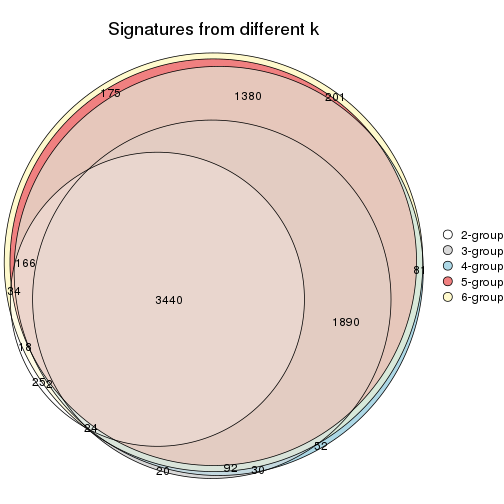
get_signature() returns a data frame invisibly. TO get the list of signatures, the function
call should be assigned to a variable explicitly. In following code, if plot argument is set
to FALSE, no heatmap is plotted while only the differential analysis is performed.
# code only for demonstration
tb = get_signature(res, k = ..., plot = FALSE)
An example of the output of tb is:
#> which_row fdr mean_1 mean_2 scaled_mean_1 scaled_mean_2 km
#> 1 38 0.042760348 8.373488 9.131774 -0.5533452 0.5164555 1
#> 2 40 0.018707592 7.106213 8.469186 -0.6173731 0.5762149 1
#> 3 55 0.019134737 10.221463 11.207825 -0.6159697 0.5749050 1
#> 4 59 0.006059896 5.921854 7.869574 -0.6899429 0.6439467 1
#> 5 60 0.018055526 8.928898 10.211722 -0.6204761 0.5791110 1
#> 6 98 0.009384629 15.714769 14.887706 0.6635654 -0.6193277 2
...
The columns in tb are:
which_row: row indices corresponding to the input matrix.fdr: FDR for the differential test. mean_x: The mean value in group x.scaled_mean_x: The mean value in group x after rows are scaled.km: Row groups if k-means clustering is applied to rows.UMAP plot which shows how samples are separated.
dimension_reduction(res, k = 2, method = "UMAP")
dimension_reduction(res, k = 3, method = "UMAP")
dimension_reduction(res, k = 4, method = "UMAP")
dimension_reduction(res, k = 5, method = "UMAP")
dimension_reduction(res, k = 6, method = "UMAP")
Following heatmap shows how subgroups are split when increasing k:
collect_classes(res)
Test correlation between subgroups and known annotations. If the known annotation is numeric, one-way ANOVA test is applied, and if the known annotation is discrete, chi-squared contingency table test is applied.
test_to_known_factors(res)
#> n disease.state(p) other(p) protocol(p) specimen(p) k
#> SD:kmeans 40 5.69e-06 5.57e-02 0.514 1.69e-05 2
#> SD:kmeans 50 1.80e-08 1.39e-11 0.295 3.00e-11 3
#> SD:kmeans 48 4.15e-18 1.71e-18 0.676 7.40e-15 4
#> SD:kmeans 40 2.58e-14 3.57e-15 0.680 1.02e-12 5
#> SD:kmeans 48 3.74e-15 3.43e-16 0.492 2.25e-23 6
If matrix rows can be associated to genes, consider to use functional_enrichment(res,
...) to perform function enrichment for the signature genes. See this vignette for more detailed explanations.
The object with results only for a single top-value method and a single partition method can be extracted as:
res = res_list["SD", "skmeans"]
# you can also extract it by
# res = res_list["SD:skmeans"]
A summary of res and all the functions that can be applied to it:
res
#> A 'ConsensusPartition' object with k = 2, 3, 4, 5, 6.
#> On a matrix with 8252 rows and 52 columns.
#> Top rows (825, 1650, 2476, 3301, 4126) are extracted by 'SD' method.
#> Subgroups are detected by 'skmeans' method.
#> Performed in total 1250 partitions by row resampling.
#> Best k for subgroups seems to be 3.
#>
#> Following methods can be applied to this 'ConsensusPartition' object:
#> [1] "cola_report" "collect_classes" "collect_plots"
#> [4] "collect_stats" "colnames" "compare_signatures"
#> [7] "consensus_heatmap" "dimension_reduction" "functional_enrichment"
#> [10] "get_anno_col" "get_anno" "get_classes"
#> [13] "get_consensus" "get_matrix" "get_membership"
#> [16] "get_param" "get_signatures" "get_stats"
#> [19] "is_best_k" "is_stable_k" "membership_heatmap"
#> [22] "ncol" "nrow" "plot_ecdf"
#> [25] "rownames" "select_partition_number" "show"
#> [28] "suggest_best_k" "test_to_known_factors"
collect_plots() function collects all the plots made from res for all k (number of partitions)
into one single page to provide an easy and fast comparison between different k.
collect_plots(res)
The plots are:
k and the heatmap of
predicted classes for each k.k.k.k.All the plots in panels can be made by individual functions and they are plotted later in this section.
select_partition_number() produces several plots showing different
statistics for choosing “optimized” k. There are following statistics:
k;k, the area increased is defined as \(A_k - A_{k-1}\).The detailed explanations of these statistics can be found in the cola vignette.
Generally speaking, lower PAC score, higher mean silhouette score or higher
concordance corresponds to better partition. Rand index and Jaccard index
measure how similar the current partition is compared to partition with k-1.
If they are too similar, we won't accept k is better than k-1.
select_partition_number(res)
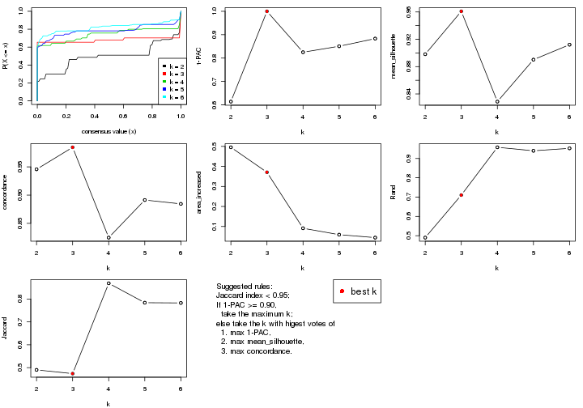
The numeric values for all these statistics can be obtained by get_stats().
get_stats(res)
#> k 1-PAC mean_silhouette concordance area_increased Rand Jaccard
#> 2 2 0.614 0.898 0.946 0.4954 0.490 0.490
#> 3 3 1.000 0.961 0.985 0.3707 0.710 0.474
#> 4 4 0.825 0.829 0.825 0.0911 0.958 0.869
#> 5 5 0.851 0.890 0.891 0.0591 0.940 0.784
#> 6 6 0.883 0.912 0.884 0.0445 0.952 0.783
suggest_best_k() suggests the best \(k\) based on these statistics. The rules are as follows:
suggest_best_k(res)
#> [1] 3
Following shows the table of the partitions (You need to click the show/hide
code output link to see it). The membership matrix (columns with name p*)
is inferred by
clue::cl_consensus()
function with the SE method. Basically the value in the membership matrix
represents the probability to belong to a certain group. The finall class
label for an item is determined with the group with highest probability it
belongs to.
In get_classes() function, the entropy is calculated from the membership
matrix and the silhouette score is calculated from the consensus matrix.
cbind(get_classes(res, k = 2), get_membership(res, k = 2))
#> class entropy silhouette p1 p2
#> GSM92537 1 0.000 0.920 1.000 0.000
#> GSM92539 1 0.000 0.920 1.000 0.000
#> GSM92541 1 0.000 0.920 1.000 0.000
#> GSM92543 1 0.000 0.920 1.000 0.000
#> GSM92545 1 0.000 0.920 1.000 0.000
#> GSM92546 1 0.000 0.920 1.000 0.000
#> GSM92533 1 0.000 0.920 1.000 0.000
#> GSM92535 1 0.000 0.920 1.000 0.000
#> GSM92540 1 0.000 0.920 1.000 0.000
#> GSM92538 1 0.000 0.920 1.000 0.000
#> GSM92542 1 0.000 0.920 1.000 0.000
#> GSM92544 1 0.000 0.920 1.000 0.000
#> GSM92536 1 0.000 0.920 1.000 0.000
#> GSM92534 1 0.000 0.920 1.000 0.000
#> GSM92547 2 0.000 0.952 0.000 1.000
#> GSM92549 2 0.000 0.952 0.000 1.000
#> GSM92550 2 0.000 0.952 0.000 1.000
#> GSM92548 2 0.000 0.952 0.000 1.000
#> GSM92551 2 0.000 0.952 0.000 1.000
#> GSM92553 2 0.000 0.952 0.000 1.000
#> GSM92559 2 0.000 0.952 0.000 1.000
#> GSM92561 2 0.000 0.952 0.000 1.000
#> GSM92555 2 0.000 0.952 0.000 1.000
#> GSM92557 2 0.000 0.952 0.000 1.000
#> GSM92563 1 0.000 0.920 1.000 0.000
#> GSM92565 1 0.000 0.920 1.000 0.000
#> GSM92554 2 0.000 0.952 0.000 1.000
#> GSM92564 1 0.000 0.920 1.000 0.000
#> GSM92562 2 0.000 0.952 0.000 1.000
#> GSM92558 2 0.000 0.952 0.000 1.000
#> GSM92566 1 0.000 0.920 1.000 0.000
#> GSM92552 2 0.000 0.952 0.000 1.000
#> GSM92560 2 0.000 0.952 0.000 1.000
#> GSM92556 2 0.000 0.952 0.000 1.000
#> GSM92567 2 0.327 0.921 0.060 0.940
#> GSM92569 2 0.327 0.921 0.060 0.940
#> GSM92571 2 0.714 0.776 0.196 0.804
#> GSM92573 2 0.714 0.776 0.196 0.804
#> GSM92575 1 0.760 0.780 0.780 0.220
#> GSM92577 1 0.760 0.780 0.780 0.220
#> GSM92579 1 0.760 0.780 0.780 0.220
#> GSM92581 1 0.760 0.780 0.780 0.220
#> GSM92568 2 0.327 0.921 0.060 0.940
#> GSM92576 1 0.760 0.780 0.780 0.220
#> GSM92580 1 0.760 0.780 0.780 0.220
#> GSM92578 1 0.760 0.780 0.780 0.220
#> GSM92572 2 0.714 0.776 0.196 0.804
#> GSM92574 2 0.714 0.776 0.196 0.804
#> GSM92582 1 0.760 0.780 0.780 0.220
#> GSM92570 2 0.327 0.921 0.060 0.940
#> GSM92583 2 0.141 0.942 0.020 0.980
#> GSM92584 2 0.141 0.942 0.020 0.980
cbind(get_classes(res, k = 3), get_membership(res, k = 3))
#> class entropy silhouette p1 p2 p3
#> GSM92537 1 0.000 1.000 1 0.0 0.0
#> GSM92539 1 0.000 1.000 1 0.0 0.0
#> GSM92541 1 0.000 1.000 1 0.0 0.0
#> GSM92543 1 0.000 1.000 1 0.0 0.0
#> GSM92545 1 0.000 1.000 1 0.0 0.0
#> GSM92546 1 0.000 1.000 1 0.0 0.0
#> GSM92533 1 0.000 1.000 1 0.0 0.0
#> GSM92535 1 0.000 1.000 1 0.0 0.0
#> GSM92540 1 0.000 1.000 1 0.0 0.0
#> GSM92538 1 0.000 1.000 1 0.0 0.0
#> GSM92542 1 0.000 1.000 1 0.0 0.0
#> GSM92544 1 0.000 1.000 1 0.0 0.0
#> GSM92536 1 0.000 1.000 1 0.0 0.0
#> GSM92534 1 0.000 1.000 1 0.0 0.0
#> GSM92547 2 0.000 1.000 0 1.0 0.0
#> GSM92549 2 0.000 1.000 0 1.0 0.0
#> GSM92550 2 0.000 1.000 0 1.0 0.0
#> GSM92548 2 0.000 1.000 0 1.0 0.0
#> GSM92551 2 0.000 1.000 0 1.0 0.0
#> GSM92553 2 0.000 1.000 0 1.0 0.0
#> GSM92559 2 0.000 1.000 0 1.0 0.0
#> GSM92561 2 0.000 1.000 0 1.0 0.0
#> GSM92555 2 0.000 1.000 0 1.0 0.0
#> GSM92557 2 0.000 1.000 0 1.0 0.0
#> GSM92563 1 0.000 1.000 1 0.0 0.0
#> GSM92565 1 0.000 1.000 1 0.0 0.0
#> GSM92554 2 0.000 1.000 0 1.0 0.0
#> GSM92564 1 0.000 1.000 1 0.0 0.0
#> GSM92562 2 0.000 1.000 0 1.0 0.0
#> GSM92558 2 0.000 1.000 0 1.0 0.0
#> GSM92566 1 0.000 1.000 1 0.0 0.0
#> GSM92552 2 0.000 1.000 0 1.0 0.0
#> GSM92560 2 0.000 1.000 0 1.0 0.0
#> GSM92556 2 0.000 1.000 0 1.0 0.0
#> GSM92567 3 0.000 0.952 0 0.0 1.0
#> GSM92569 3 0.000 0.952 0 0.0 1.0
#> GSM92571 3 0.000 0.952 0 0.0 1.0
#> GSM92573 3 0.000 0.952 0 0.0 1.0
#> GSM92575 3 0.000 0.952 0 0.0 1.0
#> GSM92577 3 0.000 0.952 0 0.0 1.0
#> GSM92579 3 0.000 0.952 0 0.0 1.0
#> GSM92581 3 0.000 0.952 0 0.0 1.0
#> GSM92568 3 0.000 0.952 0 0.0 1.0
#> GSM92576 3 0.000 0.952 0 0.0 1.0
#> GSM92580 3 0.000 0.952 0 0.0 1.0
#> GSM92578 3 0.000 0.952 0 0.0 1.0
#> GSM92572 3 0.000 0.952 0 0.0 1.0
#> GSM92574 3 0.000 0.952 0 0.0 1.0
#> GSM92582 3 0.000 0.952 0 0.0 1.0
#> GSM92570 3 0.000 0.952 0 0.0 1.0
#> GSM92583 3 0.613 0.373 0 0.4 0.6
#> GSM92584 3 0.613 0.373 0 0.4 0.6
cbind(get_classes(res, k = 4), get_membership(res, k = 4))
#> class entropy silhouette p1 p2 p3 p4
#> GSM92537 1 0.4605 1.000 0.664 0.000 0.000 0.336
#> GSM92539 1 0.4605 1.000 0.664 0.000 0.000 0.336
#> GSM92541 1 0.4605 1.000 0.664 0.000 0.000 0.336
#> GSM92543 1 0.4605 1.000 0.664 0.000 0.000 0.336
#> GSM92545 1 0.4605 1.000 0.664 0.000 0.000 0.336
#> GSM92546 1 0.4605 1.000 0.664 0.000 0.000 0.336
#> GSM92533 1 0.4605 1.000 0.664 0.000 0.000 0.336
#> GSM92535 1 0.4605 1.000 0.664 0.000 0.000 0.336
#> GSM92540 1 0.4605 1.000 0.664 0.000 0.000 0.336
#> GSM92538 1 0.4605 1.000 0.664 0.000 0.000 0.336
#> GSM92542 1 0.4605 1.000 0.664 0.000 0.000 0.336
#> GSM92544 1 0.4605 1.000 0.664 0.000 0.000 0.336
#> GSM92536 1 0.4605 1.000 0.664 0.000 0.000 0.336
#> GSM92534 1 0.4605 1.000 0.664 0.000 0.000 0.336
#> GSM92547 2 0.0592 0.992 0.000 0.984 0.000 0.016
#> GSM92549 2 0.0592 0.992 0.000 0.984 0.000 0.016
#> GSM92550 2 0.0592 0.992 0.000 0.984 0.000 0.016
#> GSM92548 2 0.0592 0.992 0.000 0.984 0.000 0.016
#> GSM92551 2 0.0000 0.994 0.000 1.000 0.000 0.000
#> GSM92553 2 0.0000 0.994 0.000 1.000 0.000 0.000
#> GSM92559 2 0.0000 0.994 0.000 1.000 0.000 0.000
#> GSM92561 2 0.0000 0.994 0.000 1.000 0.000 0.000
#> GSM92555 2 0.0592 0.992 0.000 0.984 0.000 0.016
#> GSM92557 2 0.0000 0.994 0.000 1.000 0.000 0.000
#> GSM92563 4 0.0592 1.000 0.016 0.000 0.000 0.984
#> GSM92565 4 0.0592 1.000 0.016 0.000 0.000 0.984
#> GSM92554 2 0.0000 0.994 0.000 1.000 0.000 0.000
#> GSM92564 4 0.0592 1.000 0.016 0.000 0.000 0.984
#> GSM92562 2 0.0000 0.994 0.000 1.000 0.000 0.000
#> GSM92558 2 0.0000 0.994 0.000 1.000 0.000 0.000
#> GSM92566 4 0.0592 1.000 0.016 0.000 0.000 0.984
#> GSM92552 2 0.0000 0.994 0.000 1.000 0.000 0.000
#> GSM92560 2 0.0592 0.992 0.000 0.984 0.000 0.016
#> GSM92556 2 0.0592 0.992 0.000 0.984 0.000 0.016
#> GSM92567 3 0.0000 0.600 0.000 0.000 1.000 0.000
#> GSM92569 3 0.0000 0.600 0.000 0.000 1.000 0.000
#> GSM92571 3 0.4761 0.272 0.000 0.000 0.628 0.372
#> GSM92573 3 0.4761 0.272 0.000 0.000 0.628 0.372
#> GSM92575 3 0.6584 0.610 0.336 0.000 0.568 0.096
#> GSM92577 3 0.6584 0.610 0.336 0.000 0.568 0.096
#> GSM92579 3 0.6634 0.609 0.336 0.000 0.564 0.100
#> GSM92581 3 0.6634 0.609 0.336 0.000 0.564 0.100
#> GSM92568 3 0.0000 0.600 0.000 0.000 1.000 0.000
#> GSM92576 3 0.6584 0.610 0.336 0.000 0.568 0.096
#> GSM92580 3 0.6634 0.609 0.336 0.000 0.564 0.100
#> GSM92578 3 0.6584 0.610 0.336 0.000 0.568 0.096
#> GSM92572 3 0.4761 0.272 0.000 0.000 0.628 0.372
#> GSM92574 3 0.4761 0.272 0.000 0.000 0.628 0.372
#> GSM92582 3 0.6634 0.609 0.336 0.000 0.564 0.100
#> GSM92570 3 0.0000 0.600 0.000 0.000 1.000 0.000
#> GSM92583 3 0.4372 0.424 0.000 0.268 0.728 0.004
#> GSM92584 3 0.4372 0.424 0.000 0.268 0.728 0.004
cbind(get_classes(res, k = 5), get_membership(res, k = 5))
#> class entropy silhouette p1 p2 p3 p4 p5
#> GSM92537 1 0.0912 0.975 0.972 0.000 0.012 0.016 0.000
#> GSM92539 1 0.0912 0.975 0.972 0.000 0.012 0.016 0.000
#> GSM92541 1 0.0000 0.989 1.000 0.000 0.000 0.000 0.000
#> GSM92543 1 0.0000 0.989 1.000 0.000 0.000 0.000 0.000
#> GSM92545 1 0.0000 0.989 1.000 0.000 0.000 0.000 0.000
#> GSM92546 1 0.0000 0.989 1.000 0.000 0.000 0.000 0.000
#> GSM92533 1 0.0000 0.989 1.000 0.000 0.000 0.000 0.000
#> GSM92535 1 0.0000 0.989 1.000 0.000 0.000 0.000 0.000
#> GSM92540 1 0.1012 0.972 0.968 0.000 0.012 0.020 0.000
#> GSM92538 1 0.1216 0.966 0.960 0.000 0.020 0.020 0.000
#> GSM92542 1 0.0000 0.989 1.000 0.000 0.000 0.000 0.000
#> GSM92544 1 0.0000 0.989 1.000 0.000 0.000 0.000 0.000
#> GSM92536 1 0.0000 0.989 1.000 0.000 0.000 0.000 0.000
#> GSM92534 1 0.0000 0.989 1.000 0.000 0.000 0.000 0.000
#> GSM92547 2 0.4522 0.819 0.000 0.708 0.044 0.248 0.000
#> GSM92549 2 0.4522 0.819 0.000 0.708 0.044 0.248 0.000
#> GSM92550 2 0.4522 0.819 0.000 0.708 0.044 0.248 0.000
#> GSM92548 2 0.4589 0.817 0.000 0.704 0.048 0.248 0.000
#> GSM92551 2 0.0000 0.867 0.000 1.000 0.000 0.000 0.000
#> GSM92553 2 0.0000 0.867 0.000 1.000 0.000 0.000 0.000
#> GSM92559 2 0.0000 0.867 0.000 1.000 0.000 0.000 0.000
#> GSM92561 2 0.0000 0.867 0.000 1.000 0.000 0.000 0.000
#> GSM92555 2 0.4297 0.824 0.000 0.728 0.036 0.236 0.000
#> GSM92557 2 0.0000 0.867 0.000 1.000 0.000 0.000 0.000
#> GSM92563 4 0.5313 1.000 0.120 0.000 0.116 0.728 0.036
#> GSM92565 4 0.5313 1.000 0.120 0.000 0.116 0.728 0.036
#> GSM92554 2 0.0000 0.867 0.000 1.000 0.000 0.000 0.000
#> GSM92564 4 0.5313 1.000 0.120 0.000 0.116 0.728 0.036
#> GSM92562 2 0.0000 0.867 0.000 1.000 0.000 0.000 0.000
#> GSM92558 2 0.0000 0.867 0.000 1.000 0.000 0.000 0.000
#> GSM92566 4 0.5313 1.000 0.120 0.000 0.116 0.728 0.036
#> GSM92552 2 0.0000 0.867 0.000 1.000 0.000 0.000 0.000
#> GSM92560 2 0.4681 0.813 0.000 0.696 0.052 0.252 0.000
#> GSM92556 2 0.4681 0.813 0.000 0.696 0.052 0.252 0.000
#> GSM92567 3 0.3579 0.752 0.000 0.000 0.756 0.004 0.240
#> GSM92569 3 0.3741 0.734 0.000 0.000 0.732 0.004 0.264
#> GSM92571 3 0.3359 0.726 0.000 0.000 0.840 0.108 0.052
#> GSM92573 3 0.3359 0.726 0.000 0.000 0.840 0.108 0.052
#> GSM92575 5 0.1251 0.973 0.000 0.000 0.036 0.008 0.956
#> GSM92577 5 0.1251 0.973 0.000 0.000 0.036 0.008 0.956
#> GSM92579 5 0.0000 0.973 0.000 0.000 0.000 0.000 1.000
#> GSM92581 5 0.0000 0.973 0.000 0.000 0.000 0.000 1.000
#> GSM92568 3 0.3579 0.752 0.000 0.000 0.756 0.004 0.240
#> GSM92576 5 0.1251 0.973 0.000 0.000 0.036 0.008 0.956
#> GSM92580 5 0.0000 0.973 0.000 0.000 0.000 0.000 1.000
#> GSM92578 5 0.1251 0.973 0.000 0.000 0.036 0.008 0.956
#> GSM92572 3 0.3359 0.726 0.000 0.000 0.840 0.108 0.052
#> GSM92574 3 0.3359 0.726 0.000 0.000 0.840 0.108 0.052
#> GSM92582 5 0.0000 0.973 0.000 0.000 0.000 0.000 1.000
#> GSM92570 3 0.3741 0.734 0.000 0.000 0.732 0.004 0.264
#> GSM92583 3 0.5407 0.659 0.000 0.184 0.700 0.024 0.092
#> GSM92584 3 0.5407 0.659 0.000 0.184 0.700 0.024 0.092
cbind(get_classes(res, k = 6), get_membership(res, k = 6))
#> class entropy silhouette p1 p2 p3 p4 p5 p6
#> GSM92537 1 0.2462 0.891 0.876 0.000 0.000 0.096 0.000 0.028
#> GSM92539 1 0.2462 0.891 0.876 0.000 0.000 0.096 0.000 0.028
#> GSM92541 1 0.0146 0.952 0.996 0.000 0.000 0.004 0.000 0.000
#> GSM92543 1 0.0146 0.952 0.996 0.000 0.000 0.004 0.000 0.000
#> GSM92545 1 0.0000 0.953 1.000 0.000 0.000 0.000 0.000 0.000
#> GSM92546 1 0.0000 0.953 1.000 0.000 0.000 0.000 0.000 0.000
#> GSM92533 1 0.0000 0.953 1.000 0.000 0.000 0.000 0.000 0.000
#> GSM92535 1 0.0000 0.953 1.000 0.000 0.000 0.000 0.000 0.000
#> GSM92540 1 0.2957 0.868 0.844 0.000 0.004 0.120 0.000 0.032
#> GSM92538 1 0.3424 0.825 0.796 0.000 0.004 0.168 0.000 0.032
#> GSM92542 1 0.0146 0.952 0.996 0.000 0.000 0.004 0.000 0.000
#> GSM92544 1 0.0146 0.952 0.996 0.000 0.000 0.004 0.000 0.000
#> GSM92536 1 0.0000 0.953 1.000 0.000 0.000 0.000 0.000 0.000
#> GSM92534 1 0.0000 0.953 1.000 0.000 0.000 0.000 0.000 0.000
#> GSM92547 4 0.3672 0.973 0.000 0.368 0.000 0.632 0.000 0.000
#> GSM92549 4 0.3672 0.973 0.000 0.368 0.000 0.632 0.000 0.000
#> GSM92550 4 0.3672 0.973 0.000 0.368 0.000 0.632 0.000 0.000
#> GSM92548 4 0.3672 0.973 0.000 0.368 0.000 0.632 0.000 0.000
#> GSM92551 2 0.0000 1.000 0.000 1.000 0.000 0.000 0.000 0.000
#> GSM92553 2 0.0000 1.000 0.000 1.000 0.000 0.000 0.000 0.000
#> GSM92559 2 0.0000 1.000 0.000 1.000 0.000 0.000 0.000 0.000
#> GSM92561 2 0.0000 1.000 0.000 1.000 0.000 0.000 0.000 0.000
#> GSM92555 4 0.3838 0.852 0.000 0.448 0.000 0.552 0.000 0.000
#> GSM92557 2 0.0000 1.000 0.000 1.000 0.000 0.000 0.000 0.000
#> GSM92563 6 0.1082 1.000 0.040 0.000 0.000 0.000 0.004 0.956
#> GSM92565 6 0.1082 1.000 0.040 0.000 0.000 0.000 0.004 0.956
#> GSM92554 2 0.0000 1.000 0.000 1.000 0.000 0.000 0.000 0.000
#> GSM92564 6 0.1082 1.000 0.040 0.000 0.000 0.000 0.004 0.956
#> GSM92562 2 0.0000 1.000 0.000 1.000 0.000 0.000 0.000 0.000
#> GSM92558 2 0.0000 1.000 0.000 1.000 0.000 0.000 0.000 0.000
#> GSM92566 6 0.1082 1.000 0.040 0.000 0.000 0.000 0.004 0.956
#> GSM92552 2 0.0000 1.000 0.000 1.000 0.000 0.000 0.000 0.000
#> GSM92560 4 0.3874 0.962 0.000 0.356 0.008 0.636 0.000 0.000
#> GSM92556 4 0.3782 0.967 0.000 0.360 0.004 0.636 0.000 0.000
#> GSM92567 3 0.1858 0.758 0.000 0.000 0.904 0.004 0.092 0.000
#> GSM92569 3 0.2100 0.751 0.000 0.000 0.884 0.004 0.112 0.000
#> GSM92571 3 0.4291 0.738 0.000 0.000 0.752 0.152 0.016 0.080
#> GSM92573 3 0.4291 0.738 0.000 0.000 0.752 0.152 0.016 0.080
#> GSM92575 5 0.1053 0.962 0.000 0.000 0.012 0.004 0.964 0.020
#> GSM92577 5 0.1053 0.962 0.000 0.000 0.012 0.004 0.964 0.020
#> GSM92579 5 0.1049 0.963 0.000 0.000 0.008 0.032 0.960 0.000
#> GSM92581 5 0.1049 0.963 0.000 0.000 0.008 0.032 0.960 0.000
#> GSM92568 3 0.1858 0.758 0.000 0.000 0.904 0.004 0.092 0.000
#> GSM92576 5 0.1053 0.962 0.000 0.000 0.012 0.004 0.964 0.020
#> GSM92580 5 0.1049 0.963 0.000 0.000 0.008 0.032 0.960 0.000
#> GSM92578 5 0.1053 0.962 0.000 0.000 0.012 0.004 0.964 0.020
#> GSM92572 3 0.4291 0.738 0.000 0.000 0.752 0.152 0.016 0.080
#> GSM92574 3 0.4291 0.738 0.000 0.000 0.752 0.152 0.016 0.080
#> GSM92582 5 0.1049 0.963 0.000 0.000 0.008 0.032 0.960 0.000
#> GSM92570 3 0.2100 0.751 0.000 0.000 0.884 0.004 0.112 0.000
#> GSM92583 3 0.5941 0.544 0.000 0.128 0.616 0.208 0.016 0.032
#> GSM92584 3 0.5941 0.544 0.000 0.128 0.616 0.208 0.016 0.032
Heatmaps for the consensus matrix. It visualizes the probability of two samples to be in a same group.
consensus_heatmap(res, k = 2)
consensus_heatmap(res, k = 3)

consensus_heatmap(res, k = 4)
consensus_heatmap(res, k = 5)
consensus_heatmap(res, k = 6)
Heatmaps for the membership of samples in all partitions to see how consistent they are:
membership_heatmap(res, k = 2)
membership_heatmap(res, k = 3)
membership_heatmap(res, k = 4)
membership_heatmap(res, k = 5)
membership_heatmap(res, k = 6)
As soon as we have had the classes for columns, we can look for signatures which are significantly different between classes which can be candidate marks for certain classes. Following are the heatmaps for signatures.
Signature heatmaps where rows are scaled:
get_signatures(res, k = 2)
get_signatures(res, k = 3)
get_signatures(res, k = 4)
get_signatures(res, k = 5)
get_signatures(res, k = 6)
Signature heatmaps where rows are not scaled:
get_signatures(res, k = 2, scale_rows = FALSE)
get_signatures(res, k = 3, scale_rows = FALSE)
get_signatures(res, k = 4, scale_rows = FALSE)
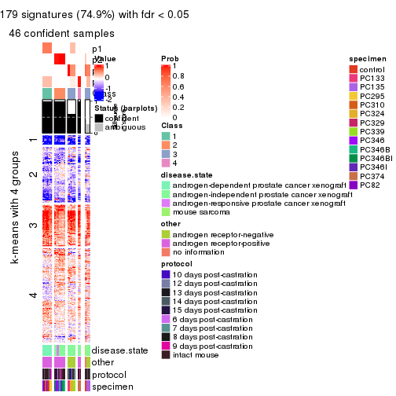
get_signatures(res, k = 5, scale_rows = FALSE)
get_signatures(res, k = 6, scale_rows = FALSE)
Compare the overlap of signatures from different k:
compare_signatures(res)
get_signature() returns a data frame invisibly. TO get the list of signatures, the function
call should be assigned to a variable explicitly. In following code, if plot argument is set
to FALSE, no heatmap is plotted while only the differential analysis is performed.
# code only for demonstration
tb = get_signature(res, k = ..., plot = FALSE)
An example of the output of tb is:
#> which_row fdr mean_1 mean_2 scaled_mean_1 scaled_mean_2 km
#> 1 38 0.042760348 8.373488 9.131774 -0.5533452 0.5164555 1
#> 2 40 0.018707592 7.106213 8.469186 -0.6173731 0.5762149 1
#> 3 55 0.019134737 10.221463 11.207825 -0.6159697 0.5749050 1
#> 4 59 0.006059896 5.921854 7.869574 -0.6899429 0.6439467 1
#> 5 60 0.018055526 8.928898 10.211722 -0.6204761 0.5791110 1
#> 6 98 0.009384629 15.714769 14.887706 0.6635654 -0.6193277 2
...
The columns in tb are:
which_row: row indices corresponding to the input matrix.fdr: FDR for the differential test. mean_x: The mean value in group x.scaled_mean_x: The mean value in group x after rows are scaled.km: Row groups if k-means clustering is applied to rows.UMAP plot which shows how samples are separated.
dimension_reduction(res, k = 2, method = "UMAP")
dimension_reduction(res, k = 3, method = "UMAP")
dimension_reduction(res, k = 4, method = "UMAP")
dimension_reduction(res, k = 5, method = "UMAP")
dimension_reduction(res, k = 6, method = "UMAP")
Following heatmap shows how subgroups are split when increasing k:
collect_classes(res)
Test correlation between subgroups and known annotations. If the known annotation is numeric, one-way ANOVA test is applied, and if the known annotation is discrete, chi-squared contingency table test is applied.
test_to_known_factors(res)
#> n disease.state(p) other(p) protocol(p) specimen(p) k
#> SD:skmeans 52 6.52e-05 3.47e-01 0.846 1.35e-06 2
#> SD:skmeans 50 1.80e-08 1.39e-11 0.295 3.00e-11 3
#> SD:skmeans 46 1.43e-09 5.67e-10 0.217 8.49e-15 4
#> SD:skmeans 52 7.81e-10 1.65e-09 0.364 1.54e-20 5
#> SD:skmeans 52 4.03e-12 1.22e-08 0.287 2.20e-21 6
If matrix rows can be associated to genes, consider to use functional_enrichment(res,
...) to perform function enrichment for the signature genes. See this vignette for more detailed explanations.
The object with results only for a single top-value method and a single partition method can be extracted as:
res = res_list["SD", "pam"]
# you can also extract it by
# res = res_list["SD:pam"]
A summary of res and all the functions that can be applied to it:
res
#> A 'ConsensusPartition' object with k = 2, 3, 4, 5, 6.
#> On a matrix with 8252 rows and 52 columns.
#> Top rows (825, 1650, 2476, 3301, 4126) are extracted by 'SD' method.
#> Subgroups are detected by 'pam' method.
#> Performed in total 1250 partitions by row resampling.
#> Best k for subgroups seems to be 6.
#>
#> Following methods can be applied to this 'ConsensusPartition' object:
#> [1] "cola_report" "collect_classes" "collect_plots"
#> [4] "collect_stats" "colnames" "compare_signatures"
#> [7] "consensus_heatmap" "dimension_reduction" "functional_enrichment"
#> [10] "get_anno_col" "get_anno" "get_classes"
#> [13] "get_consensus" "get_matrix" "get_membership"
#> [16] "get_param" "get_signatures" "get_stats"
#> [19] "is_best_k" "is_stable_k" "membership_heatmap"
#> [22] "ncol" "nrow" "plot_ecdf"
#> [25] "rownames" "select_partition_number" "show"
#> [28] "suggest_best_k" "test_to_known_factors"
collect_plots() function collects all the plots made from res for all k (number of partitions)
into one single page to provide an easy and fast comparison between different k.
collect_plots(res)
The plots are:
k and the heatmap of
predicted classes for each k.k.k.k.All the plots in panels can be made by individual functions and they are plotted later in this section.
select_partition_number() produces several plots showing different
statistics for choosing “optimized” k. There are following statistics:
k;k, the area increased is defined as \(A_k - A_{k-1}\).The detailed explanations of these statistics can be found in the cola vignette.
Generally speaking, lower PAC score, higher mean silhouette score or higher
concordance corresponds to better partition. Rand index and Jaccard index
measure how similar the current partition is compared to partition with k-1.
If they are too similar, we won't accept k is better than k-1.
select_partition_number(res)
The numeric values for all these statistics can be obtained by get_stats().
get_stats(res)
#> k 1-PAC mean_silhouette concordance area_increased Rand Jaccard
#> 2 2 0.520 0.819 0.863 0.4400 0.551 0.551
#> 3 3 0.706 0.821 0.915 0.5009 0.683 0.468
#> 4 4 0.890 0.851 0.925 0.1044 0.942 0.821
#> 5 5 0.938 0.878 0.955 0.0669 0.933 0.757
#> 6 6 0.924 0.733 0.877 0.0363 0.983 0.926
suggest_best_k() suggests the best \(k\) based on these statistics. The rules are as follows:
suggest_best_k(res)
#> [1] 6
#> attr(,"optional")
#> [1] 5
There is also optional best \(k\) = 5 that is worth to check.
Following shows the table of the partitions (You need to click the show/hide
code output link to see it). The membership matrix (columns with name p*)
is inferred by
clue::cl_consensus()
function with the SE method. Basically the value in the membership matrix
represents the probability to belong to a certain group. The finall class
label for an item is determined with the group with highest probability it
belongs to.
In get_classes() function, the entropy is calculated from the membership
matrix and the silhouette score is calculated from the consensus matrix.
cbind(get_classes(res, k = 2), get_membership(res, k = 2))
#> class entropy silhouette p1 p2
#> GSM92537 1 0.7883 0.758 0.764 0.236
#> GSM92539 1 0.7883 0.758 0.764 0.236
#> GSM92541 1 0.7883 0.758 0.764 0.236
#> GSM92543 1 0.7883 0.758 0.764 0.236
#> GSM92545 1 0.7883 0.758 0.764 0.236
#> GSM92546 1 0.7883 0.758 0.764 0.236
#> GSM92533 1 0.7883 0.758 0.764 0.236
#> GSM92535 1 0.7883 0.758 0.764 0.236
#> GSM92540 1 0.7883 0.758 0.764 0.236
#> GSM92538 1 0.6438 0.769 0.836 0.164
#> GSM92542 1 0.7883 0.758 0.764 0.236
#> GSM92544 1 0.7883 0.758 0.764 0.236
#> GSM92536 1 0.7883 0.758 0.764 0.236
#> GSM92534 1 0.7883 0.758 0.764 0.236
#> GSM92547 2 0.8016 0.981 0.244 0.756
#> GSM92549 2 0.8016 0.981 0.244 0.756
#> GSM92550 2 0.8016 0.981 0.244 0.756
#> GSM92548 2 0.8955 0.893 0.312 0.688
#> GSM92551 2 0.7883 0.983 0.236 0.764
#> GSM92553 2 0.7883 0.983 0.236 0.764
#> GSM92559 2 0.7883 0.983 0.236 0.764
#> GSM92561 2 0.7883 0.983 0.236 0.764
#> GSM92555 2 0.7950 0.982 0.240 0.760
#> GSM92557 2 0.7883 0.983 0.236 0.764
#> GSM92563 1 0.0938 0.788 0.988 0.012
#> GSM92565 1 0.0938 0.788 0.988 0.012
#> GSM92554 2 0.7883 0.983 0.236 0.764
#> GSM92564 1 0.4022 0.777 0.920 0.080
#> GSM92562 2 0.7883 0.983 0.236 0.764
#> GSM92558 2 0.7883 0.983 0.236 0.764
#> GSM92566 1 0.0000 0.788 1.000 0.000
#> GSM92552 2 0.7883 0.983 0.236 0.764
#> GSM92560 1 0.7299 0.590 0.796 0.204
#> GSM92556 1 0.5408 0.729 0.876 0.124
#> GSM92567 1 0.4022 0.777 0.920 0.080
#> GSM92569 1 0.9393 0.120 0.644 0.356
#> GSM92571 1 0.4022 0.777 0.920 0.080
#> GSM92573 2 0.8386 0.960 0.268 0.732
#> GSM92575 1 0.4161 0.773 0.916 0.084
#> GSM92577 1 0.4022 0.777 0.920 0.080
#> GSM92579 1 0.4022 0.777 0.920 0.080
#> GSM92581 1 0.3274 0.783 0.940 0.060
#> GSM92568 1 0.4022 0.777 0.920 0.080
#> GSM92576 1 0.4022 0.777 0.920 0.080
#> GSM92580 1 0.4022 0.777 0.920 0.080
#> GSM92578 1 0.2778 0.785 0.952 0.048
#> GSM92572 1 0.4022 0.777 0.920 0.080
#> GSM92574 1 0.4022 0.777 0.920 0.080
#> GSM92582 1 0.3431 0.782 0.936 0.064
#> GSM92570 1 0.5519 0.721 0.872 0.128
#> GSM92583 2 0.8386 0.961 0.268 0.732
#> GSM92584 2 0.8443 0.956 0.272 0.728
cbind(get_classes(res, k = 3), get_membership(res, k = 3))
#> class entropy silhouette p1 p2 p3
#> GSM92537 1 0.0000 0.9164 1.000 0.000 0.000
#> GSM92539 1 0.0000 0.9164 1.000 0.000 0.000
#> GSM92541 1 0.0000 0.9164 1.000 0.000 0.000
#> GSM92543 1 0.0000 0.9164 1.000 0.000 0.000
#> GSM92545 1 0.0000 0.9164 1.000 0.000 0.000
#> GSM92546 1 0.0000 0.9164 1.000 0.000 0.000
#> GSM92533 1 0.0000 0.9164 1.000 0.000 0.000
#> GSM92535 1 0.0000 0.9164 1.000 0.000 0.000
#> GSM92540 1 0.0000 0.9164 1.000 0.000 0.000
#> GSM92538 1 0.0000 0.9164 1.000 0.000 0.000
#> GSM92542 1 0.0000 0.9164 1.000 0.000 0.000
#> GSM92544 1 0.0000 0.9164 1.000 0.000 0.000
#> GSM92536 1 0.0000 0.9164 1.000 0.000 0.000
#> GSM92534 1 0.0000 0.9164 1.000 0.000 0.000
#> GSM92547 2 0.0000 0.9524 0.000 1.000 0.000
#> GSM92549 2 0.0000 0.9524 0.000 1.000 0.000
#> GSM92550 2 0.0000 0.9524 0.000 1.000 0.000
#> GSM92548 2 0.2066 0.8914 0.060 0.940 0.000
#> GSM92551 2 0.0000 0.9524 0.000 1.000 0.000
#> GSM92553 2 0.0000 0.9524 0.000 1.000 0.000
#> GSM92559 2 0.0000 0.9524 0.000 1.000 0.000
#> GSM92561 2 0.0000 0.9524 0.000 1.000 0.000
#> GSM92555 2 0.0000 0.9524 0.000 1.000 0.000
#> GSM92557 2 0.0000 0.9524 0.000 1.000 0.000
#> GSM92563 1 0.4861 0.7267 0.800 0.008 0.192
#> GSM92565 1 0.5156 0.6919 0.776 0.008 0.216
#> GSM92554 2 0.0000 0.9524 0.000 1.000 0.000
#> GSM92564 1 0.5012 0.7098 0.788 0.008 0.204
#> GSM92562 2 0.0000 0.9524 0.000 1.000 0.000
#> GSM92558 2 0.0000 0.9524 0.000 1.000 0.000
#> GSM92566 1 0.4473 0.7619 0.828 0.008 0.164
#> GSM92552 2 0.0000 0.9524 0.000 1.000 0.000
#> GSM92560 2 0.6308 -0.0957 0.492 0.508 0.000
#> GSM92556 1 0.6274 0.1692 0.544 0.456 0.000
#> GSM92567 3 0.5580 0.7169 0.256 0.008 0.736
#> GSM92569 3 0.3879 0.7934 0.152 0.000 0.848
#> GSM92571 3 0.6180 0.5999 0.332 0.008 0.660
#> GSM92573 3 0.5698 0.6921 0.012 0.252 0.736
#> GSM92575 3 0.0000 0.8346 0.000 0.000 1.000
#> GSM92577 3 0.0000 0.8346 0.000 0.000 1.000
#> GSM92579 3 0.0000 0.8346 0.000 0.000 1.000
#> GSM92581 3 0.0000 0.8346 0.000 0.000 1.000
#> GSM92568 3 0.5580 0.7169 0.256 0.008 0.736
#> GSM92576 3 0.0000 0.8346 0.000 0.000 1.000
#> GSM92580 3 0.0000 0.8346 0.000 0.000 1.000
#> GSM92578 3 0.0000 0.8346 0.000 0.000 1.000
#> GSM92572 3 0.5656 0.7070 0.264 0.008 0.728
#> GSM92574 3 0.5580 0.7169 0.256 0.008 0.736
#> GSM92582 3 0.0237 0.8334 0.004 0.000 0.996
#> GSM92570 3 0.3619 0.8009 0.136 0.000 0.864
#> GSM92583 3 0.5678 0.6128 0.000 0.316 0.684
#> GSM92584 3 0.5785 0.5873 0.000 0.332 0.668
cbind(get_classes(res, k = 4), get_membership(res, k = 4))
#> class entropy silhouette p1 p2 p3 p4
#> GSM92537 1 0.0000 0.9383 1.000 0.000 0.000 0.000
#> GSM92539 1 0.0000 0.9383 1.000 0.000 0.000 0.000
#> GSM92541 1 0.0000 0.9383 1.000 0.000 0.000 0.000
#> GSM92543 1 0.0000 0.9383 1.000 0.000 0.000 0.000
#> GSM92545 1 0.0000 0.9383 1.000 0.000 0.000 0.000
#> GSM92546 1 0.0000 0.9383 1.000 0.000 0.000 0.000
#> GSM92533 1 0.0000 0.9383 1.000 0.000 0.000 0.000
#> GSM92535 1 0.0000 0.9383 1.000 0.000 0.000 0.000
#> GSM92540 1 0.0000 0.9383 1.000 0.000 0.000 0.000
#> GSM92538 1 0.0000 0.9383 1.000 0.000 0.000 0.000
#> GSM92542 1 0.0000 0.9383 1.000 0.000 0.000 0.000
#> GSM92544 1 0.0000 0.9383 1.000 0.000 0.000 0.000
#> GSM92536 1 0.0000 0.9383 1.000 0.000 0.000 0.000
#> GSM92534 1 0.0000 0.9383 1.000 0.000 0.000 0.000
#> GSM92547 2 0.0000 0.9508 0.000 1.000 0.000 0.000
#> GSM92549 2 0.0000 0.9508 0.000 1.000 0.000 0.000
#> GSM92550 2 0.0000 0.9508 0.000 1.000 0.000 0.000
#> GSM92548 2 0.1637 0.8875 0.060 0.940 0.000 0.000
#> GSM92551 2 0.0000 0.9508 0.000 1.000 0.000 0.000
#> GSM92553 2 0.0000 0.9508 0.000 1.000 0.000 0.000
#> GSM92559 2 0.0000 0.9508 0.000 1.000 0.000 0.000
#> GSM92561 2 0.0000 0.9508 0.000 1.000 0.000 0.000
#> GSM92555 2 0.0000 0.9508 0.000 1.000 0.000 0.000
#> GSM92557 2 0.0000 0.9508 0.000 1.000 0.000 0.000
#> GSM92563 1 0.3833 0.8522 0.848 0.000 0.072 0.080
#> GSM92565 1 0.3833 0.8522 0.848 0.000 0.072 0.080
#> GSM92554 2 0.0000 0.9508 0.000 1.000 0.000 0.000
#> GSM92564 1 0.4298 0.8425 0.832 0.008 0.080 0.080
#> GSM92562 2 0.0000 0.9508 0.000 1.000 0.000 0.000
#> GSM92558 2 0.0000 0.9508 0.000 1.000 0.000 0.000
#> GSM92566 1 0.3833 0.8522 0.848 0.000 0.072 0.080
#> GSM92552 2 0.0000 0.9508 0.000 1.000 0.000 0.000
#> GSM92560 2 0.4998 -0.0107 0.488 0.512 0.000 0.000
#> GSM92556 1 0.4977 0.0977 0.540 0.460 0.000 0.000
#> GSM92567 3 0.1867 0.8772 0.072 0.000 0.928 0.000
#> GSM92569 3 0.2101 0.8733 0.060 0.000 0.928 0.012
#> GSM92571 3 0.1867 0.8772 0.072 0.000 0.928 0.000
#> GSM92573 3 0.0188 0.8215 0.000 0.004 0.996 0.000
#> GSM92575 4 0.1940 0.9196 0.000 0.000 0.076 0.924
#> GSM92577 4 0.4790 0.5186 0.000 0.000 0.380 0.620
#> GSM92579 4 0.1940 0.9196 0.000 0.000 0.076 0.924
#> GSM92581 4 0.1940 0.9196 0.000 0.000 0.076 0.924
#> GSM92568 3 0.1867 0.8772 0.072 0.000 0.928 0.000
#> GSM92576 3 0.4981 0.0342 0.000 0.000 0.536 0.464
#> GSM92580 4 0.1940 0.9196 0.000 0.000 0.076 0.924
#> GSM92578 4 0.3400 0.8419 0.000 0.000 0.180 0.820
#> GSM92572 3 0.1867 0.8772 0.072 0.000 0.928 0.000
#> GSM92574 3 0.1867 0.8772 0.072 0.000 0.928 0.000
#> GSM92582 4 0.1940 0.9196 0.000 0.000 0.076 0.924
#> GSM92570 3 0.2101 0.8733 0.060 0.000 0.928 0.012
#> GSM92583 3 0.3400 0.7261 0.000 0.180 0.820 0.000
#> GSM92584 3 0.3400 0.7261 0.000 0.180 0.820 0.000
cbind(get_classes(res, k = 5), get_membership(res, k = 5))
#> class entropy silhouette p1 p2 p3 p4 p5
#> GSM92537 1 0.000 1.0000 1.000 0.000 0.000 0 0.000
#> GSM92539 1 0.000 1.0000 1.000 0.000 0.000 0 0.000
#> GSM92541 1 0.000 1.0000 1.000 0.000 0.000 0 0.000
#> GSM92543 1 0.000 1.0000 1.000 0.000 0.000 0 0.000
#> GSM92545 1 0.000 1.0000 1.000 0.000 0.000 0 0.000
#> GSM92546 1 0.000 1.0000 1.000 0.000 0.000 0 0.000
#> GSM92533 1 0.000 1.0000 1.000 0.000 0.000 0 0.000
#> GSM92535 1 0.000 1.0000 1.000 0.000 0.000 0 0.000
#> GSM92540 1 0.000 1.0000 1.000 0.000 0.000 0 0.000
#> GSM92538 1 0.000 1.0000 1.000 0.000 0.000 0 0.000
#> GSM92542 1 0.000 1.0000 1.000 0.000 0.000 0 0.000
#> GSM92544 1 0.000 1.0000 1.000 0.000 0.000 0 0.000
#> GSM92536 1 0.000 1.0000 1.000 0.000 0.000 0 0.000
#> GSM92534 1 0.000 1.0000 1.000 0.000 0.000 0 0.000
#> GSM92547 2 0.000 0.9166 0.000 1.000 0.000 0 0.000
#> GSM92549 2 0.000 0.9166 0.000 1.000 0.000 0 0.000
#> GSM92550 2 0.000 0.9166 0.000 1.000 0.000 0 0.000
#> GSM92548 2 0.120 0.8718 0.048 0.952 0.000 0 0.000
#> GSM92551 2 0.000 0.9166 0.000 1.000 0.000 0 0.000
#> GSM92553 2 0.000 0.9166 0.000 1.000 0.000 0 0.000
#> GSM92559 2 0.000 0.9166 0.000 1.000 0.000 0 0.000
#> GSM92561 2 0.000 0.9166 0.000 1.000 0.000 0 0.000
#> GSM92555 2 0.000 0.9166 0.000 1.000 0.000 0 0.000
#> GSM92557 2 0.000 0.9166 0.000 1.000 0.000 0 0.000
#> GSM92563 4 0.000 1.0000 0.000 0.000 0.000 1 0.000
#> GSM92565 4 0.000 1.0000 0.000 0.000 0.000 1 0.000
#> GSM92554 2 0.000 0.9166 0.000 1.000 0.000 0 0.000
#> GSM92564 4 0.000 1.0000 0.000 0.000 0.000 1 0.000
#> GSM92562 2 0.000 0.9166 0.000 1.000 0.000 0 0.000
#> GSM92558 2 0.000 0.9166 0.000 1.000 0.000 0 0.000
#> GSM92566 4 0.000 1.0000 0.000 0.000 0.000 1 0.000
#> GSM92552 2 0.000 0.9166 0.000 1.000 0.000 0 0.000
#> GSM92560 2 0.463 0.2251 0.448 0.540 0.012 0 0.000
#> GSM92556 2 0.474 0.1326 0.476 0.508 0.016 0 0.000
#> GSM92567 3 0.000 0.9047 0.000 0.000 1.000 0 0.000
#> GSM92569 3 0.000 0.9047 0.000 0.000 1.000 0 0.000
#> GSM92571 3 0.000 0.9047 0.000 0.000 1.000 0 0.000
#> GSM92573 3 0.000 0.9047 0.000 0.000 1.000 0 0.000
#> GSM92575 5 0.000 0.8920 0.000 0.000 0.000 0 1.000
#> GSM92577 5 0.415 0.4032 0.000 0.000 0.388 0 0.612
#> GSM92579 5 0.000 0.8920 0.000 0.000 0.000 0 1.000
#> GSM92581 5 0.000 0.8920 0.000 0.000 0.000 0 1.000
#> GSM92568 3 0.000 0.9047 0.000 0.000 1.000 0 0.000
#> GSM92576 3 0.430 0.0648 0.000 0.000 0.512 0 0.488
#> GSM92580 5 0.000 0.8920 0.000 0.000 0.000 0 1.000
#> GSM92578 5 0.247 0.7963 0.000 0.000 0.136 0 0.864
#> GSM92572 3 0.000 0.9047 0.000 0.000 1.000 0 0.000
#> GSM92574 3 0.000 0.9047 0.000 0.000 1.000 0 0.000
#> GSM92582 5 0.000 0.8920 0.000 0.000 0.000 0 1.000
#> GSM92570 3 0.000 0.9047 0.000 0.000 1.000 0 0.000
#> GSM92583 3 0.265 0.7731 0.000 0.152 0.848 0 0.000
#> GSM92584 3 0.265 0.7731 0.000 0.152 0.848 0 0.000
cbind(get_classes(res, k = 6), get_membership(res, k = 6))
#> class entropy silhouette p1 p2 p3 p4 p5 p6
#> GSM92537 1 0.000 0.999 1.000 0.000 0.000 0.000 0.000 0
#> GSM92539 1 0.000 0.999 1.000 0.000 0.000 0.000 0.000 0
#> GSM92541 1 0.000 0.999 1.000 0.000 0.000 0.000 0.000 0
#> GSM92543 1 0.000 0.999 1.000 0.000 0.000 0.000 0.000 0
#> GSM92545 1 0.000 0.999 1.000 0.000 0.000 0.000 0.000 0
#> GSM92546 1 0.000 0.999 1.000 0.000 0.000 0.000 0.000 0
#> GSM92533 1 0.000 0.999 1.000 0.000 0.000 0.000 0.000 0
#> GSM92535 1 0.000 0.999 1.000 0.000 0.000 0.000 0.000 0
#> GSM92540 1 0.000 0.999 1.000 0.000 0.000 0.000 0.000 0
#> GSM92538 1 0.026 0.991 0.992 0.008 0.000 0.000 0.000 0
#> GSM92542 1 0.000 0.999 1.000 0.000 0.000 0.000 0.000 0
#> GSM92544 1 0.000 0.999 1.000 0.000 0.000 0.000 0.000 0
#> GSM92536 1 0.000 0.999 1.000 0.000 0.000 0.000 0.000 0
#> GSM92534 1 0.000 0.999 1.000 0.000 0.000 0.000 0.000 0
#> GSM92547 2 0.000 0.585 0.000 1.000 0.000 0.000 0.000 0
#> GSM92549 2 0.000 0.585 0.000 1.000 0.000 0.000 0.000 0
#> GSM92550 2 0.000 0.585 0.000 1.000 0.000 0.000 0.000 0
#> GSM92548 2 0.107 0.548 0.048 0.952 0.000 0.000 0.000 0
#> GSM92551 2 0.380 0.759 0.000 0.576 0.000 0.424 0.000 0
#> GSM92553 2 0.380 0.759 0.000 0.576 0.000 0.424 0.000 0
#> GSM92559 2 0.380 0.759 0.000 0.576 0.000 0.424 0.000 0
#> GSM92561 2 0.380 0.759 0.000 0.576 0.000 0.424 0.000 0
#> GSM92555 2 0.355 0.731 0.000 0.668 0.000 0.332 0.000 0
#> GSM92557 2 0.380 0.759 0.000 0.576 0.000 0.424 0.000 0
#> GSM92563 6 0.000 1.000 0.000 0.000 0.000 0.000 0.000 1
#> GSM92565 6 0.000 1.000 0.000 0.000 0.000 0.000 0.000 1
#> GSM92554 2 0.380 0.759 0.000 0.576 0.000 0.424 0.000 0
#> GSM92564 6 0.000 1.000 0.000 0.000 0.000 0.000 0.000 1
#> GSM92562 2 0.380 0.759 0.000 0.576 0.000 0.424 0.000 0
#> GSM92558 2 0.380 0.759 0.000 0.576 0.000 0.424 0.000 0
#> GSM92566 6 0.000 1.000 0.000 0.000 0.000 0.000 0.000 1
#> GSM92552 2 0.380 0.759 0.000 0.576 0.000 0.424 0.000 0
#> GSM92560 2 0.415 -0.131 0.440 0.548 0.000 0.012 0.000 0
#> GSM92556 2 0.425 -0.180 0.456 0.528 0.000 0.016 0.000 0
#> GSM92567 3 0.381 0.845 0.000 0.000 0.572 0.428 0.000 0
#> GSM92569 3 0.381 0.845 0.000 0.000 0.572 0.428 0.000 0
#> GSM92571 3 0.383 0.842 0.000 0.000 0.560 0.440 0.000 0
#> GSM92573 3 0.406 0.838 0.000 0.008 0.552 0.440 0.000 0
#> GSM92575 5 0.222 0.609 0.000 0.000 0.000 0.136 0.864 0
#> GSM92577 4 0.430 0.000 0.000 0.000 0.020 0.548 0.432 0
#> GSM92579 5 0.000 0.719 0.000 0.000 0.000 0.000 1.000 0
#> GSM92581 5 0.000 0.719 0.000 0.000 0.000 0.000 1.000 0
#> GSM92568 3 0.381 0.845 0.000 0.000 0.572 0.428 0.000 0
#> GSM92576 5 0.543 -0.090 0.000 0.000 0.320 0.140 0.540 0
#> GSM92580 5 0.000 0.719 0.000 0.000 0.000 0.000 1.000 0
#> GSM92578 5 0.373 -0.378 0.000 0.000 0.000 0.388 0.612 0
#> GSM92572 3 0.383 0.842 0.000 0.000 0.560 0.440 0.000 0
#> GSM92574 3 0.383 0.842 0.000 0.000 0.560 0.440 0.000 0
#> GSM92582 5 0.000 0.719 0.000 0.000 0.000 0.000 1.000 0
#> GSM92570 3 0.381 0.845 0.000 0.000 0.572 0.428 0.000 0
#> GSM92583 3 0.026 0.408 0.000 0.008 0.992 0.000 0.000 0
#> GSM92584 3 0.026 0.408 0.000 0.008 0.992 0.000 0.000 0
Heatmaps for the consensus matrix. It visualizes the probability of two samples to be in a same group.
consensus_heatmap(res, k = 2)
consensus_heatmap(res, k = 3)
consensus_heatmap(res, k = 4)
consensus_heatmap(res, k = 5)
consensus_heatmap(res, k = 6)
Heatmaps for the membership of samples in all partitions to see how consistent they are:
membership_heatmap(res, k = 2)

membership_heatmap(res, k = 3)
membership_heatmap(res, k = 4)
membership_heatmap(res, k = 5)
membership_heatmap(res, k = 6)
As soon as we have had the classes for columns, we can look for signatures which are significantly different between classes which can be candidate marks for certain classes. Following are the heatmaps for signatures.
Signature heatmaps where rows are scaled:
get_signatures(res, k = 2)
get_signatures(res, k = 3)
get_signatures(res, k = 4)

get_signatures(res, k = 5)
get_signatures(res, k = 6)
Signature heatmaps where rows are not scaled:
get_signatures(res, k = 2, scale_rows = FALSE)
get_signatures(res, k = 3, scale_rows = FALSE)
get_signatures(res, k = 4, scale_rows = FALSE)
get_signatures(res, k = 5, scale_rows = FALSE)
get_signatures(res, k = 6, scale_rows = FALSE)
Compare the overlap of signatures from different k:
compare_signatures(res)
get_signature() returns a data frame invisibly. TO get the list of signatures, the function
call should be assigned to a variable explicitly. In following code, if plot argument is set
to FALSE, no heatmap is plotted while only the differential analysis is performed.
# code only for demonstration
tb = get_signature(res, k = ..., plot = FALSE)
An example of the output of tb is:
#> which_row fdr mean_1 mean_2 scaled_mean_1 scaled_mean_2 km
#> 1 38 0.042760348 8.373488 9.131774 -0.5533452 0.5164555 1
#> 2 40 0.018707592 7.106213 8.469186 -0.6173731 0.5762149 1
#> 3 55 0.019134737 10.221463 11.207825 -0.6159697 0.5749050 1
#> 4 59 0.006059896 5.921854 7.869574 -0.6899429 0.6439467 1
#> 5 60 0.018055526 8.928898 10.211722 -0.6204761 0.5791110 1
#> 6 98 0.009384629 15.714769 14.887706 0.6635654 -0.6193277 2
...
The columns in tb are:
which_row: row indices corresponding to the input matrix.fdr: FDR for the differential test. mean_x: The mean value in group x.scaled_mean_x: The mean value in group x after rows are scaled.km: Row groups if k-means clustering is applied to rows.UMAP plot which shows how samples are separated.
dimension_reduction(res, k = 2, method = "UMAP")
dimension_reduction(res, k = 3, method = "UMAP")
dimension_reduction(res, k = 4, method = "UMAP")
dimension_reduction(res, k = 5, method = "UMAP")
dimension_reduction(res, k = 6, method = "UMAP")
Following heatmap shows how subgroups are split when increasing k:
collect_classes(res)
Test correlation between subgroups and known annotations. If the known annotation is numeric, one-way ANOVA test is applied, and if the known annotation is discrete, chi-squared contingency table test is applied.
test_to_known_factors(res)
#> n disease.state(p) other(p) protocol(p) specimen(p) k
#> SD:pam 51 2.65e-04 7.67e-03 0.218 9.98e-05 2
#> SD:pam 50 3.21e-08 3.61e-10 0.296 1.28e-10 3
#> SD:pam 49 1.57e-07 8.99e-10 0.723 1.93e-14 4
#> SD:pam 48 4.79e-09 1.60e-08 0.499 6.35e-18 5
#> SD:pam 45 1.03e-08 3.98e-09 0.575 3.76e-17 6
If matrix rows can be associated to genes, consider to use functional_enrichment(res,
...) to perform function enrichment for the signature genes. See this vignette for more detailed explanations.
The object with results only for a single top-value method and a single partition method can be extracted as:
res = res_list["SD", "mclust"]
# you can also extract it by
# res = res_list["SD:mclust"]
A summary of res and all the functions that can be applied to it:
res
#> A 'ConsensusPartition' object with k = 2, 3, 4, 5, 6.
#> On a matrix with 8252 rows and 52 columns.
#> Top rows (825, 1650, 2476, 3301, 4126) are extracted by 'SD' method.
#> Subgroups are detected by 'mclust' method.
#> Performed in total 1250 partitions by row resampling.
#> Best k for subgroups seems to be 4.
#>
#> Following methods can be applied to this 'ConsensusPartition' object:
#> [1] "cola_report" "collect_classes" "collect_plots"
#> [4] "collect_stats" "colnames" "compare_signatures"
#> [7] "consensus_heatmap" "dimension_reduction" "functional_enrichment"
#> [10] "get_anno_col" "get_anno" "get_classes"
#> [13] "get_consensus" "get_matrix" "get_membership"
#> [16] "get_param" "get_signatures" "get_stats"
#> [19] "is_best_k" "is_stable_k" "membership_heatmap"
#> [22] "ncol" "nrow" "plot_ecdf"
#> [25] "rownames" "select_partition_number" "show"
#> [28] "suggest_best_k" "test_to_known_factors"
collect_plots() function collects all the plots made from res for all k (number of partitions)
into one single page to provide an easy and fast comparison between different k.
collect_plots(res)
The plots are:
k and the heatmap of
predicted classes for each k.k.k.k.All the plots in panels can be made by individual functions and they are plotted later in this section.
select_partition_number() produces several plots showing different
statistics for choosing “optimized” k. There are following statistics:
k;k, the area increased is defined as \(A_k - A_{k-1}\).The detailed explanations of these statistics can be found in the cola vignette.
Generally speaking, lower PAC score, higher mean silhouette score or higher
concordance corresponds to better partition. Rand index and Jaccard index
measure how similar the current partition is compared to partition with k-1.
If they are too similar, we won't accept k is better than k-1.
select_partition_number(res)
The numeric values for all these statistics can be obtained by get_stats().
get_stats(res)
#> k 1-PAC mean_silhouette concordance area_increased Rand Jaccard
#> 2 2 0.308 0.529 0.720 0.4643 0.566 0.566
#> 3 3 0.878 0.901 0.960 0.4515 0.759 0.573
#> 4 4 0.962 0.970 0.984 0.0476 0.973 0.916
#> 5 5 0.878 0.951 0.938 0.0539 0.958 0.858
#> 6 6 0.830 0.898 0.862 0.0585 0.952 0.814
suggest_best_k() suggests the best \(k\) based on these statistics. The rules are as follows:
suggest_best_k(res)
#> [1] 4
Following shows the table of the partitions (You need to click the show/hide
code output link to see it). The membership matrix (columns with name p*)
is inferred by
clue::cl_consensus()
function with the SE method. Basically the value in the membership matrix
represents the probability to belong to a certain group. The finall class
label for an item is determined with the group with highest probability it
belongs to.
In get_classes() function, the entropy is calculated from the membership
matrix and the silhouette score is calculated from the consensus matrix.
cbind(get_classes(res, k = 2), get_membership(res, k = 2))
#> class entropy silhouette p1 p2
#> GSM92537 1 0.936 0.422 0.648 0.352
#> GSM92539 1 0.936 0.422 0.648 0.352
#> GSM92541 1 0.936 0.422 0.648 0.352
#> GSM92543 1 0.936 0.422 0.648 0.352
#> GSM92545 1 0.936 0.422 0.648 0.352
#> GSM92546 1 0.936 0.422 0.648 0.352
#> GSM92533 1 0.936 0.422 0.648 0.352
#> GSM92535 1 0.936 0.422 0.648 0.352
#> GSM92540 1 0.936 0.422 0.648 0.352
#> GSM92538 1 0.936 0.422 0.648 0.352
#> GSM92542 1 0.936 0.422 0.648 0.352
#> GSM92544 1 0.936 0.422 0.648 0.352
#> GSM92536 1 0.936 0.422 0.648 0.352
#> GSM92534 1 0.936 0.422 0.648 0.352
#> GSM92547 2 0.000 1.000 0.000 1.000
#> GSM92549 2 0.000 1.000 0.000 1.000
#> GSM92550 2 0.000 1.000 0.000 1.000
#> GSM92548 2 0.000 1.000 0.000 1.000
#> GSM92551 2 0.000 1.000 0.000 1.000
#> GSM92553 2 0.000 1.000 0.000 1.000
#> GSM92559 2 0.000 1.000 0.000 1.000
#> GSM92561 2 0.000 1.000 0.000 1.000
#> GSM92555 2 0.000 1.000 0.000 1.000
#> GSM92557 2 0.000 1.000 0.000 1.000
#> GSM92563 1 0.939 0.419 0.644 0.356
#> GSM92565 1 0.939 0.419 0.644 0.356
#> GSM92554 2 0.000 1.000 0.000 1.000
#> GSM92564 1 1.000 0.217 0.504 0.496
#> GSM92562 2 0.000 1.000 0.000 1.000
#> GSM92558 2 0.000 1.000 0.000 1.000
#> GSM92566 1 0.939 0.419 0.644 0.356
#> GSM92552 2 0.000 1.000 0.000 1.000
#> GSM92560 2 0.000 1.000 0.000 1.000
#> GSM92556 2 0.000 1.000 0.000 1.000
#> GSM92567 1 0.993 0.211 0.548 0.452
#> GSM92569 1 0.993 0.211 0.548 0.452
#> GSM92571 1 0.993 0.211 0.548 0.452
#> GSM92573 1 0.993 0.211 0.548 0.452
#> GSM92575 1 0.993 0.211 0.548 0.452
#> GSM92577 1 0.993 0.211 0.548 0.452
#> GSM92579 1 0.993 0.211 0.548 0.452
#> GSM92581 1 0.993 0.211 0.548 0.452
#> GSM92568 1 0.993 0.211 0.548 0.452
#> GSM92576 1 0.993 0.211 0.548 0.452
#> GSM92580 1 0.993 0.211 0.548 0.452
#> GSM92578 1 0.993 0.211 0.548 0.452
#> GSM92572 1 0.993 0.211 0.548 0.452
#> GSM92574 1 0.993 0.211 0.548 0.452
#> GSM92582 1 0.993 0.211 0.548 0.452
#> GSM92570 1 0.993 0.211 0.548 0.452
#> GSM92583 1 0.163 0.375 0.976 0.024
#> GSM92584 1 0.163 0.375 0.976 0.024
cbind(get_classes(res, k = 3), get_membership(res, k = 3))
#> class entropy silhouette p1 p2 p3
#> GSM92537 1 0.0000 0.904 1.000 0.000 0.000
#> GSM92539 1 0.0000 0.904 1.000 0.000 0.000
#> GSM92541 1 0.0000 0.904 1.000 0.000 0.000
#> GSM92543 1 0.0000 0.904 1.000 0.000 0.000
#> GSM92545 1 0.0000 0.904 1.000 0.000 0.000
#> GSM92546 1 0.0000 0.904 1.000 0.000 0.000
#> GSM92533 1 0.0000 0.904 1.000 0.000 0.000
#> GSM92535 1 0.0000 0.904 1.000 0.000 0.000
#> GSM92540 1 0.0000 0.904 1.000 0.000 0.000
#> GSM92538 1 0.0000 0.904 1.000 0.000 0.000
#> GSM92542 1 0.0000 0.904 1.000 0.000 0.000
#> GSM92544 1 0.0000 0.904 1.000 0.000 0.000
#> GSM92536 1 0.0000 0.904 1.000 0.000 0.000
#> GSM92534 1 0.0000 0.904 1.000 0.000 0.000
#> GSM92547 2 0.0000 0.965 0.000 1.000 0.000
#> GSM92549 2 0.0000 0.965 0.000 1.000 0.000
#> GSM92550 2 0.0000 0.965 0.000 1.000 0.000
#> GSM92548 2 0.4291 0.773 0.180 0.820 0.000
#> GSM92551 2 0.0000 0.965 0.000 1.000 0.000
#> GSM92553 2 0.0000 0.965 0.000 1.000 0.000
#> GSM92559 2 0.4291 0.773 0.180 0.820 0.000
#> GSM92561 2 0.0000 0.965 0.000 1.000 0.000
#> GSM92555 2 0.0424 0.961 0.008 0.992 0.000
#> GSM92557 2 0.0000 0.965 0.000 1.000 0.000
#> GSM92563 1 0.6095 0.405 0.608 0.392 0.000
#> GSM92565 1 0.6095 0.405 0.608 0.392 0.000
#> GSM92554 2 0.0000 0.965 0.000 1.000 0.000
#> GSM92564 1 0.6280 0.215 0.540 0.460 0.000
#> GSM92562 2 0.0000 0.965 0.000 1.000 0.000
#> GSM92558 2 0.0000 0.965 0.000 1.000 0.000
#> GSM92566 1 0.6095 0.405 0.608 0.392 0.000
#> GSM92552 2 0.0000 0.965 0.000 1.000 0.000
#> GSM92560 2 0.0424 0.961 0.008 0.992 0.000
#> GSM92556 2 0.2537 0.897 0.080 0.920 0.000
#> GSM92567 3 0.0000 1.000 0.000 0.000 1.000
#> GSM92569 3 0.0000 1.000 0.000 0.000 1.000
#> GSM92571 3 0.0000 1.000 0.000 0.000 1.000
#> GSM92573 3 0.0000 1.000 0.000 0.000 1.000
#> GSM92575 3 0.0000 1.000 0.000 0.000 1.000
#> GSM92577 3 0.0000 1.000 0.000 0.000 1.000
#> GSM92579 3 0.0000 1.000 0.000 0.000 1.000
#> GSM92581 3 0.0000 1.000 0.000 0.000 1.000
#> GSM92568 3 0.0000 1.000 0.000 0.000 1.000
#> GSM92576 3 0.0000 1.000 0.000 0.000 1.000
#> GSM92580 3 0.0000 1.000 0.000 0.000 1.000
#> GSM92578 3 0.0000 1.000 0.000 0.000 1.000
#> GSM92572 3 0.0000 1.000 0.000 0.000 1.000
#> GSM92574 3 0.0000 1.000 0.000 0.000 1.000
#> GSM92582 3 0.0000 1.000 0.000 0.000 1.000
#> GSM92570 3 0.0000 1.000 0.000 0.000 1.000
#> GSM92583 1 0.0237 0.902 0.996 0.000 0.004
#> GSM92584 1 0.0237 0.902 0.996 0.000 0.004
cbind(get_classes(res, k = 4), get_membership(res, k = 4))
#> class entropy silhouette p1 p2 p3 p4
#> GSM92537 1 0.0000 0.967 1.000 0.000 0 0.000
#> GSM92539 1 0.0000 0.967 1.000 0.000 0 0.000
#> GSM92541 1 0.0000 0.967 1.000 0.000 0 0.000
#> GSM92543 1 0.0000 0.967 1.000 0.000 0 0.000
#> GSM92545 1 0.0000 0.967 1.000 0.000 0 0.000
#> GSM92546 1 0.0000 0.967 1.000 0.000 0 0.000
#> GSM92533 1 0.0000 0.967 1.000 0.000 0 0.000
#> GSM92535 1 0.0000 0.967 1.000 0.000 0 0.000
#> GSM92540 1 0.0336 0.965 0.992 0.000 0 0.008
#> GSM92538 1 0.0336 0.965 0.992 0.000 0 0.008
#> GSM92542 1 0.0000 0.967 1.000 0.000 0 0.000
#> GSM92544 1 0.0000 0.967 1.000 0.000 0 0.000
#> GSM92536 1 0.0000 0.967 1.000 0.000 0 0.000
#> GSM92534 1 0.0336 0.965 0.992 0.000 0 0.008
#> GSM92547 2 0.0000 0.974 0.000 1.000 0 0.000
#> GSM92549 2 0.0000 0.974 0.000 1.000 0 0.000
#> GSM92550 2 0.0000 0.974 0.000 1.000 0 0.000
#> GSM92548 2 0.1557 0.942 0.056 0.944 0 0.000
#> GSM92551 2 0.0000 0.974 0.000 1.000 0 0.000
#> GSM92553 2 0.0000 0.974 0.000 1.000 0 0.000
#> GSM92559 2 0.1557 0.942 0.056 0.944 0 0.000
#> GSM92561 2 0.0000 0.974 0.000 1.000 0 0.000
#> GSM92555 2 0.1557 0.942 0.056 0.944 0 0.000
#> GSM92557 2 0.0000 0.974 0.000 1.000 0 0.000
#> GSM92563 1 0.2773 0.887 0.880 0.004 0 0.116
#> GSM92565 1 0.2773 0.887 0.880 0.004 0 0.116
#> GSM92554 2 0.0000 0.974 0.000 1.000 0 0.000
#> GSM92564 1 0.3934 0.840 0.836 0.048 0 0.116
#> GSM92562 2 0.0000 0.974 0.000 1.000 0 0.000
#> GSM92558 2 0.0000 0.974 0.000 1.000 0 0.000
#> GSM92566 1 0.2773 0.887 0.880 0.004 0 0.116
#> GSM92552 2 0.0000 0.974 0.000 1.000 0 0.000
#> GSM92560 2 0.1557 0.942 0.056 0.944 0 0.000
#> GSM92556 2 0.1557 0.942 0.056 0.944 0 0.000
#> GSM92567 3 0.0000 1.000 0.000 0.000 1 0.000
#> GSM92569 3 0.0000 1.000 0.000 0.000 1 0.000
#> GSM92571 3 0.0000 1.000 0.000 0.000 1 0.000
#> GSM92573 3 0.0000 1.000 0.000 0.000 1 0.000
#> GSM92575 3 0.0000 1.000 0.000 0.000 1 0.000
#> GSM92577 3 0.0000 1.000 0.000 0.000 1 0.000
#> GSM92579 3 0.0000 1.000 0.000 0.000 1 0.000
#> GSM92581 3 0.0000 1.000 0.000 0.000 1 0.000
#> GSM92568 3 0.0000 1.000 0.000 0.000 1 0.000
#> GSM92576 3 0.0000 1.000 0.000 0.000 1 0.000
#> GSM92580 3 0.0000 1.000 0.000 0.000 1 0.000
#> GSM92578 3 0.0000 1.000 0.000 0.000 1 0.000
#> GSM92572 3 0.0000 1.000 0.000 0.000 1 0.000
#> GSM92574 3 0.0000 1.000 0.000 0.000 1 0.000
#> GSM92582 3 0.0000 1.000 0.000 0.000 1 0.000
#> GSM92570 3 0.0000 1.000 0.000 0.000 1 0.000
#> GSM92583 4 0.0000 1.000 0.000 0.000 0 1.000
#> GSM92584 4 0.0000 1.000 0.000 0.000 0 1.000
cbind(get_classes(res, k = 5), get_membership(res, k = 5))
#> class entropy silhouette p1 p2 p3 p4 p5
#> GSM92537 1 0.0000 0.969 1.000 0.000 0.000 0.000 0.000
#> GSM92539 1 0.0000 0.969 1.000 0.000 0.000 0.000 0.000
#> GSM92541 1 0.0000 0.969 1.000 0.000 0.000 0.000 0.000
#> GSM92543 1 0.0000 0.969 1.000 0.000 0.000 0.000 0.000
#> GSM92545 1 0.0000 0.969 1.000 0.000 0.000 0.000 0.000
#> GSM92546 1 0.0000 0.969 1.000 0.000 0.000 0.000 0.000
#> GSM92533 1 0.0000 0.969 1.000 0.000 0.000 0.000 0.000
#> GSM92535 1 0.0000 0.969 1.000 0.000 0.000 0.000 0.000
#> GSM92540 1 0.2424 0.805 0.868 0.000 0.132 0.000 0.000
#> GSM92538 1 0.2424 0.805 0.868 0.000 0.132 0.000 0.000
#> GSM92542 1 0.0000 0.969 1.000 0.000 0.000 0.000 0.000
#> GSM92544 1 0.0000 0.969 1.000 0.000 0.000 0.000 0.000
#> GSM92536 1 0.0000 0.969 1.000 0.000 0.000 0.000 0.000
#> GSM92534 1 0.0162 0.964 0.996 0.000 0.004 0.000 0.000
#> GSM92547 2 0.0000 0.951 0.000 1.000 0.000 0.000 0.000
#> GSM92549 2 0.0404 0.950 0.000 0.988 0.012 0.000 0.000
#> GSM92550 2 0.0404 0.950 0.000 0.988 0.012 0.000 0.000
#> GSM92548 2 0.0404 0.950 0.000 0.988 0.012 0.000 0.000
#> GSM92551 2 0.0000 0.951 0.000 1.000 0.000 0.000 0.000
#> GSM92553 2 0.2179 0.922 0.000 0.888 0.112 0.000 0.000
#> GSM92559 2 0.0162 0.951 0.000 0.996 0.004 0.000 0.000
#> GSM92561 2 0.2179 0.922 0.000 0.888 0.112 0.000 0.000
#> GSM92555 2 0.0404 0.950 0.000 0.988 0.012 0.000 0.000
#> GSM92557 2 0.2179 0.922 0.000 0.888 0.112 0.000 0.000
#> GSM92563 3 0.4030 1.000 0.352 0.000 0.648 0.000 0.000
#> GSM92565 3 0.4030 1.000 0.352 0.000 0.648 0.000 0.000
#> GSM92554 2 0.2179 0.922 0.000 0.888 0.112 0.000 0.000
#> GSM92564 3 0.4030 1.000 0.352 0.000 0.648 0.000 0.000
#> GSM92562 2 0.2179 0.922 0.000 0.888 0.112 0.000 0.000
#> GSM92558 2 0.2179 0.922 0.000 0.888 0.112 0.000 0.000
#> GSM92566 3 0.4030 1.000 0.352 0.000 0.648 0.000 0.000
#> GSM92552 2 0.0000 0.951 0.000 1.000 0.000 0.000 0.000
#> GSM92560 2 0.0404 0.950 0.000 0.988 0.012 0.000 0.000
#> GSM92556 2 0.0404 0.950 0.000 0.988 0.012 0.000 0.000
#> GSM92567 5 0.0290 0.950 0.000 0.000 0.008 0.000 0.992
#> GSM92569 5 0.0000 0.951 0.000 0.000 0.000 0.000 1.000
#> GSM92571 5 0.0290 0.950 0.000 0.000 0.008 0.000 0.992
#> GSM92573 5 0.0290 0.950 0.000 0.000 0.008 0.000 0.992
#> GSM92575 5 0.2068 0.946 0.000 0.000 0.092 0.004 0.904
#> GSM92577 5 0.2068 0.946 0.000 0.000 0.092 0.004 0.904
#> GSM92579 5 0.1357 0.950 0.000 0.000 0.048 0.004 0.948
#> GSM92581 5 0.2068 0.946 0.000 0.000 0.092 0.004 0.904
#> GSM92568 5 0.0290 0.950 0.000 0.000 0.008 0.000 0.992
#> GSM92576 5 0.2011 0.946 0.000 0.000 0.088 0.004 0.908
#> GSM92580 5 0.2068 0.946 0.000 0.000 0.092 0.004 0.904
#> GSM92578 5 0.2068 0.946 0.000 0.000 0.092 0.004 0.904
#> GSM92572 5 0.0290 0.950 0.000 0.000 0.008 0.000 0.992
#> GSM92574 5 0.0290 0.950 0.000 0.000 0.008 0.000 0.992
#> GSM92582 5 0.2068 0.946 0.000 0.000 0.092 0.004 0.904
#> GSM92570 5 0.0000 0.951 0.000 0.000 0.000 0.000 1.000
#> GSM92583 4 0.0162 1.000 0.000 0.000 0.004 0.996 0.000
#> GSM92584 4 0.0162 1.000 0.000 0.000 0.004 0.996 0.000
cbind(get_classes(res, k = 6), get_membership(res, k = 6))
#> class entropy silhouette p1 p2 p3 p4 p5 p6
#> GSM92537 1 0.0000 0.901 1.000 0.000 0.000 0 0.000 0.000
#> GSM92539 1 0.0000 0.901 1.000 0.000 0.000 0 0.000 0.000
#> GSM92541 1 0.1765 0.889 0.904 0.000 0.000 0 0.096 0.000
#> GSM92543 1 0.0000 0.901 1.000 0.000 0.000 0 0.000 0.000
#> GSM92545 1 0.1765 0.889 0.904 0.000 0.000 0 0.096 0.000
#> GSM92546 1 0.1765 0.889 0.904 0.000 0.000 0 0.096 0.000
#> GSM92533 1 0.0146 0.900 0.996 0.000 0.000 0 0.004 0.000
#> GSM92535 1 0.1765 0.889 0.904 0.000 0.000 0 0.096 0.000
#> GSM92540 1 0.3584 0.653 0.688 0.000 0.000 0 0.308 0.004
#> GSM92538 1 0.3584 0.653 0.688 0.000 0.000 0 0.308 0.004
#> GSM92542 1 0.2135 0.828 0.872 0.000 0.000 0 0.128 0.000
#> GSM92544 1 0.0790 0.900 0.968 0.000 0.000 0 0.032 0.000
#> GSM92536 1 0.1765 0.889 0.904 0.000 0.000 0 0.096 0.000
#> GSM92534 1 0.0146 0.900 0.996 0.000 0.000 0 0.004 0.000
#> GSM92547 2 0.1471 0.902 0.000 0.932 0.000 0 0.004 0.064
#> GSM92549 2 0.1531 0.901 0.000 0.928 0.000 0 0.004 0.068
#> GSM92550 2 0.1531 0.901 0.000 0.928 0.000 0 0.004 0.068
#> GSM92548 2 0.2871 0.851 0.000 0.804 0.000 0 0.004 0.192
#> GSM92551 2 0.0000 0.907 0.000 1.000 0.000 0 0.000 0.000
#> GSM92553 2 0.1168 0.901 0.000 0.956 0.000 0 0.016 0.028
#> GSM92559 2 0.2871 0.851 0.000 0.804 0.000 0 0.004 0.192
#> GSM92561 2 0.1168 0.901 0.000 0.956 0.000 0 0.016 0.028
#> GSM92555 2 0.2595 0.869 0.000 0.836 0.000 0 0.004 0.160
#> GSM92557 2 0.1168 0.901 0.000 0.956 0.000 0 0.016 0.028
#> GSM92563 6 0.1814 0.992 0.100 0.000 0.000 0 0.000 0.900
#> GSM92565 6 0.1814 0.992 0.100 0.000 0.000 0 0.000 0.900
#> GSM92554 2 0.1168 0.901 0.000 0.956 0.000 0 0.016 0.028
#> GSM92564 6 0.1663 0.976 0.088 0.000 0.000 0 0.000 0.912
#> GSM92562 2 0.1168 0.901 0.000 0.956 0.000 0 0.016 0.028
#> GSM92558 2 0.1168 0.901 0.000 0.956 0.000 0 0.016 0.028
#> GSM92566 6 0.1814 0.992 0.100 0.000 0.000 0 0.000 0.900
#> GSM92552 2 0.0000 0.907 0.000 1.000 0.000 0 0.000 0.000
#> GSM92560 2 0.2871 0.851 0.000 0.804 0.000 0 0.004 0.192
#> GSM92556 2 0.2871 0.851 0.000 0.804 0.000 0 0.004 0.192
#> GSM92567 3 0.0000 0.935 0.000 0.000 1.000 0 0.000 0.000
#> GSM92569 3 0.0547 0.922 0.000 0.000 0.980 0 0.020 0.000
#> GSM92571 3 0.0000 0.935 0.000 0.000 1.000 0 0.000 0.000
#> GSM92573 3 0.0000 0.935 0.000 0.000 1.000 0 0.000 0.000
#> GSM92575 5 0.3804 0.982 0.000 0.000 0.424 0 0.576 0.000
#> GSM92577 5 0.3804 0.982 0.000 0.000 0.424 0 0.576 0.000
#> GSM92579 3 0.3023 0.333 0.000 0.000 0.768 0 0.232 0.000
#> GSM92581 5 0.3810 0.982 0.000 0.000 0.428 0 0.572 0.000
#> GSM92568 3 0.0000 0.935 0.000 0.000 1.000 0 0.000 0.000
#> GSM92576 5 0.3857 0.910 0.000 0.000 0.468 0 0.532 0.000
#> GSM92580 5 0.3810 0.982 0.000 0.000 0.428 0 0.572 0.000
#> GSM92578 5 0.3804 0.982 0.000 0.000 0.424 0 0.576 0.000
#> GSM92572 3 0.0000 0.935 0.000 0.000 1.000 0 0.000 0.000
#> GSM92574 3 0.0363 0.927 0.000 0.000 0.988 0 0.012 0.000
#> GSM92582 5 0.3810 0.982 0.000 0.000 0.428 0 0.572 0.000
#> GSM92570 3 0.0547 0.922 0.000 0.000 0.980 0 0.020 0.000
#> GSM92583 4 0.0000 1.000 0.000 0.000 0.000 1 0.000 0.000
#> GSM92584 4 0.0000 1.000 0.000 0.000 0.000 1 0.000 0.000
Heatmaps for the consensus matrix. It visualizes the probability of two samples to be in a same group.
consensus_heatmap(res, k = 2)
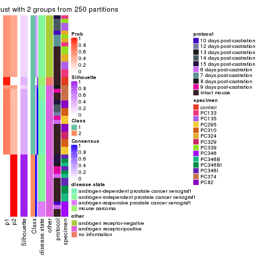
consensus_heatmap(res, k = 3)
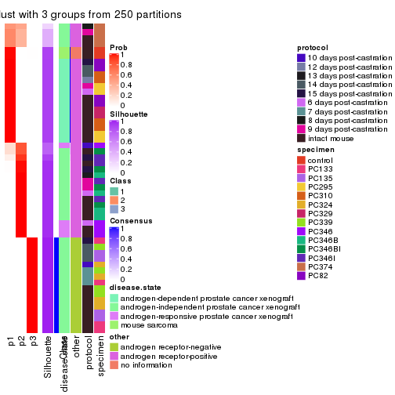
consensus_heatmap(res, k = 4)
consensus_heatmap(res, k = 5)
consensus_heatmap(res, k = 6)
Heatmaps for the membership of samples in all partitions to see how consistent they are:
membership_heatmap(res, k = 2)
membership_heatmap(res, k = 3)
membership_heatmap(res, k = 4)
membership_heatmap(res, k = 5)
membership_heatmap(res, k = 6)
As soon as we have had the classes for columns, we can look for signatures which are significantly different between classes which can be candidate marks for certain classes. Following are the heatmaps for signatures.
Signature heatmaps where rows are scaled:
get_signatures(res, k = 2)

get_signatures(res, k = 3)
get_signatures(res, k = 4)
get_signatures(res, k = 5)
get_signatures(res, k = 6)
Signature heatmaps where rows are not scaled:
get_signatures(res, k = 2, scale_rows = FALSE)

get_signatures(res, k = 3, scale_rows = FALSE)

get_signatures(res, k = 4, scale_rows = FALSE)
get_signatures(res, k = 5, scale_rows = FALSE)
get_signatures(res, k = 6, scale_rows = FALSE)

Compare the overlap of signatures from different k:
compare_signatures(res)
get_signature() returns a data frame invisibly. TO get the list of signatures, the function
call should be assigned to a variable explicitly. In following code, if plot argument is set
to FALSE, no heatmap is plotted while only the differential analysis is performed.
# code only for demonstration
tb = get_signature(res, k = ..., plot = FALSE)
An example of the output of tb is:
#> which_row fdr mean_1 mean_2 scaled_mean_1 scaled_mean_2 km
#> 1 38 0.042760348 8.373488 9.131774 -0.5533452 0.5164555 1
#> 2 40 0.018707592 7.106213 8.469186 -0.6173731 0.5762149 1
#> 3 55 0.019134737 10.221463 11.207825 -0.6159697 0.5749050 1
#> 4 59 0.006059896 5.921854 7.869574 -0.6899429 0.6439467 1
#> 5 60 0.018055526 8.928898 10.211722 -0.6204761 0.5791110 1
#> 6 98 0.009384629 15.714769 14.887706 0.6635654 -0.6193277 2
...
The columns in tb are:
which_row: row indices corresponding to the input matrix.fdr: FDR for the differential test. mean_x: The mean value in group x.scaled_mean_x: The mean value in group x after rows are scaled.km: Row groups if k-means clustering is applied to rows.UMAP plot which shows how samples are separated.
dimension_reduction(res, k = 2, method = "UMAP")

dimension_reduction(res, k = 3, method = "UMAP")
dimension_reduction(res, k = 4, method = "UMAP")
dimension_reduction(res, k = 5, method = "UMAP")
dimension_reduction(res, k = 6, method = "UMAP")
Following heatmap shows how subgroups are split when increasing k:
collect_classes(res)
Test correlation between subgroups and known annotations. If the known annotation is numeric, one-way ANOVA test is applied, and if the known annotation is discrete, chi-squared contingency table test is applied.
test_to_known_factors(res)
#> n disease.state(p) other(p) protocol(p) specimen(p) k
#> SD:mclust 16 NA NA NA NA 2
#> SD:mclust 48 4.95e-10 2.03e-10 0.290 1.43e-10 3
#> SD:mclust 52 1.27e-16 3.67e-20 0.669 6.33e-16 4
#> SD:mclust 52 2.27e-18 6.48e-19 0.436 1.54e-20 5
#> SD:mclust 51 1.75e-16 2.17e-17 0.615 2.55e-24 6
If matrix rows can be associated to genes, consider to use functional_enrichment(res,
...) to perform function enrichment for the signature genes. See this vignette for more detailed explanations.
The object with results only for a single top-value method and a single partition method can be extracted as:
res = res_list["SD", "NMF"]
# you can also extract it by
# res = res_list["SD:NMF"]
A summary of res and all the functions that can be applied to it:
res
#> A 'ConsensusPartition' object with k = 2, 3, 4, 5, 6.
#> On a matrix with 8252 rows and 52 columns.
#> Top rows (825, 1650, 2476, 3301, 4126) are extracted by 'SD' method.
#> Subgroups are detected by 'NMF' method.
#> Performed in total 1250 partitions by row resampling.
#> Best k for subgroups seems to be 6.
#>
#> Following methods can be applied to this 'ConsensusPartition' object:
#> [1] "cola_report" "collect_classes" "collect_plots"
#> [4] "collect_stats" "colnames" "compare_signatures"
#> [7] "consensus_heatmap" "dimension_reduction" "functional_enrichment"
#> [10] "get_anno_col" "get_anno" "get_classes"
#> [13] "get_consensus" "get_matrix" "get_membership"
#> [16] "get_param" "get_signatures" "get_stats"
#> [19] "is_best_k" "is_stable_k" "membership_heatmap"
#> [22] "ncol" "nrow" "plot_ecdf"
#> [25] "rownames" "select_partition_number" "show"
#> [28] "suggest_best_k" "test_to_known_factors"
collect_plots() function collects all the plots made from res for all k (number of partitions)
into one single page to provide an easy and fast comparison between different k.
collect_plots(res)
The plots are:
k and the heatmap of
predicted classes for each k.k.k.k.All the plots in panels can be made by individual functions and they are plotted later in this section.
select_partition_number() produces several plots showing different
statistics for choosing “optimized” k. There are following statistics:
k;k, the area increased is defined as \(A_k - A_{k-1}\).The detailed explanations of these statistics can be found in the cola vignette.
Generally speaking, lower PAC score, higher mean silhouette score or higher
concordance corresponds to better partition. Rand index and Jaccard index
measure how similar the current partition is compared to partition with k-1.
If they are too similar, we won't accept k is better than k-1.
select_partition_number(res)
The numeric values for all these statistics can be obtained by get_stats().
get_stats(res)
#> k 1-PAC mean_silhouette concordance area_increased Rand Jaccard
#> 2 2 0.537 0.733 0.893 0.4913 0.502 0.502
#> 3 3 1.000 0.944 0.964 0.3768 0.695 0.460
#> 4 4 0.925 0.914 0.952 0.0646 0.962 0.881
#> 5 5 0.913 0.910 0.951 0.0797 0.913 0.706
#> 6 6 0.975 0.928 0.967 0.0437 0.924 0.685
suggest_best_k() suggests the best \(k\) based on these statistics. The rules are as follows:
suggest_best_k(res)
#> [1] 6
#> attr(,"optional")
#> [1] 3 4 5
There is also optional best \(k\) = 3 4 5 that is worth to check.
Following shows the table of the partitions (You need to click the show/hide
code output link to see it). The membership matrix (columns with name p*)
is inferred by
clue::cl_consensus()
function with the SE method. Basically the value in the membership matrix
represents the probability to belong to a certain group. The finall class
label for an item is determined with the group with highest probability it
belongs to.
In get_classes() function, the entropy is calculated from the membership
matrix and the silhouette score is calculated from the consensus matrix.
cbind(get_classes(res, k = 2), get_membership(res, k = 2))
#> class entropy silhouette p1 p2
#> GSM92537 1 0.0000 0.9058 1.000 0.000
#> GSM92539 1 0.0000 0.9058 1.000 0.000
#> GSM92541 1 0.0000 0.9058 1.000 0.000
#> GSM92543 1 0.0000 0.9058 1.000 0.000
#> GSM92545 1 0.0000 0.9058 1.000 0.000
#> GSM92546 1 0.0000 0.9058 1.000 0.000
#> GSM92533 1 0.0000 0.9058 1.000 0.000
#> GSM92535 1 0.0000 0.9058 1.000 0.000
#> GSM92540 1 0.0000 0.9058 1.000 0.000
#> GSM92538 1 0.0000 0.9058 1.000 0.000
#> GSM92542 1 0.0000 0.9058 1.000 0.000
#> GSM92544 1 0.0000 0.9058 1.000 0.000
#> GSM92536 1 0.0000 0.9058 1.000 0.000
#> GSM92534 1 0.0000 0.9058 1.000 0.000
#> GSM92547 2 0.0000 0.8377 0.000 1.000
#> GSM92549 2 0.0000 0.8377 0.000 1.000
#> GSM92550 2 0.0000 0.8377 0.000 1.000
#> GSM92548 2 0.0000 0.8377 0.000 1.000
#> GSM92551 2 0.0000 0.8377 0.000 1.000
#> GSM92553 2 0.0000 0.8377 0.000 1.000
#> GSM92559 2 0.0000 0.8377 0.000 1.000
#> GSM92561 2 0.0000 0.8377 0.000 1.000
#> GSM92555 2 0.0000 0.8377 0.000 1.000
#> GSM92557 2 0.0000 0.8377 0.000 1.000
#> GSM92563 1 0.2603 0.8793 0.956 0.044
#> GSM92565 1 0.0938 0.8997 0.988 0.012
#> GSM92554 2 0.0000 0.8377 0.000 1.000
#> GSM92564 2 0.9933 0.2602 0.452 0.548
#> GSM92562 2 0.0000 0.8377 0.000 1.000
#> GSM92558 2 0.0000 0.8377 0.000 1.000
#> GSM92566 1 0.2603 0.8790 0.956 0.044
#> GSM92552 2 0.0000 0.8377 0.000 1.000
#> GSM92560 2 0.0000 0.8377 0.000 1.000
#> GSM92556 2 0.0000 0.8377 0.000 1.000
#> GSM92567 2 0.8267 0.6284 0.260 0.740
#> GSM92569 2 0.0000 0.8377 0.000 1.000
#> GSM92571 1 0.9323 0.3943 0.652 0.348
#> GSM92573 2 0.3274 0.8073 0.060 0.940
#> GSM92575 1 0.9983 -0.0566 0.524 0.476
#> GSM92577 2 0.9996 0.1257 0.488 0.512
#> GSM92579 2 0.9608 0.4284 0.384 0.616
#> GSM92581 2 0.9996 0.1296 0.488 0.512
#> GSM92568 2 0.5629 0.7601 0.132 0.868
#> GSM92576 1 0.6801 0.7297 0.820 0.180
#> GSM92580 2 0.9522 0.4444 0.372 0.628
#> GSM92578 1 0.9129 0.4489 0.672 0.328
#> GSM92572 1 0.5842 0.7818 0.860 0.140
#> GSM92574 2 0.9815 0.3361 0.420 0.580
#> GSM92582 2 0.7602 0.6742 0.220 0.780
#> GSM92570 2 0.0376 0.8361 0.004 0.996
#> GSM92583 2 0.9460 0.4129 0.364 0.636
#> GSM92584 2 0.9522 0.3969 0.372 0.628
cbind(get_classes(res, k = 3), get_membership(res, k = 3))
#> class entropy silhouette p1 p2 p3
#> GSM92537 1 0.1289 0.958 0.968 0.000 0.032
#> GSM92539 1 0.1289 0.958 0.968 0.000 0.032
#> GSM92541 1 0.0237 0.971 0.996 0.000 0.004
#> GSM92543 1 0.0592 0.967 0.988 0.000 0.012
#> GSM92545 1 0.0237 0.971 0.996 0.000 0.004
#> GSM92546 1 0.0237 0.971 0.996 0.000 0.004
#> GSM92533 1 0.0237 0.971 0.996 0.000 0.004
#> GSM92535 1 0.0237 0.971 0.996 0.000 0.004
#> GSM92540 1 0.1289 0.958 0.968 0.000 0.032
#> GSM92538 1 0.1753 0.949 0.952 0.000 0.048
#> GSM92542 1 0.0237 0.971 0.996 0.000 0.004
#> GSM92544 1 0.0237 0.971 0.996 0.000 0.004
#> GSM92536 1 0.0237 0.971 0.996 0.000 0.004
#> GSM92534 1 0.0237 0.971 0.996 0.000 0.004
#> GSM92547 2 0.0000 0.997 0.000 1.000 0.000
#> GSM92549 2 0.0000 0.997 0.000 1.000 0.000
#> GSM92550 2 0.0000 0.997 0.000 1.000 0.000
#> GSM92548 2 0.0000 0.997 0.000 1.000 0.000
#> GSM92551 2 0.0000 0.997 0.000 1.000 0.000
#> GSM92553 2 0.0000 0.997 0.000 1.000 0.000
#> GSM92559 2 0.1525 0.963 0.004 0.964 0.032
#> GSM92561 2 0.0000 0.997 0.000 1.000 0.000
#> GSM92555 2 0.0000 0.997 0.000 1.000 0.000
#> GSM92557 2 0.0000 0.997 0.000 1.000 0.000
#> GSM92563 1 0.0983 0.964 0.980 0.016 0.004
#> GSM92565 1 0.0475 0.970 0.992 0.004 0.004
#> GSM92554 2 0.0000 0.997 0.000 1.000 0.000
#> GSM92564 1 0.5864 0.600 0.704 0.288 0.008
#> GSM92562 2 0.0000 0.997 0.000 1.000 0.000
#> GSM92558 2 0.0000 0.997 0.000 1.000 0.000
#> GSM92566 1 0.0983 0.964 0.980 0.016 0.004
#> GSM92552 2 0.0000 0.997 0.000 1.000 0.000
#> GSM92560 2 0.0424 0.989 0.000 0.992 0.008
#> GSM92556 2 0.0000 0.997 0.000 1.000 0.000
#> GSM92567 3 0.1399 0.942 0.004 0.028 0.968
#> GSM92569 3 0.1753 0.935 0.000 0.048 0.952
#> GSM92571 3 0.1647 0.940 0.036 0.004 0.960
#> GSM92573 3 0.1529 0.939 0.000 0.040 0.960
#> GSM92575 3 0.1529 0.938 0.040 0.000 0.960
#> GSM92577 3 0.1711 0.942 0.032 0.008 0.960
#> GSM92579 3 0.1525 0.942 0.004 0.032 0.964
#> GSM92581 3 0.1781 0.944 0.020 0.020 0.960
#> GSM92568 3 0.1411 0.939 0.000 0.036 0.964
#> GSM92576 3 0.1529 0.938 0.040 0.000 0.960
#> GSM92580 3 0.1774 0.944 0.016 0.024 0.960
#> GSM92578 3 0.1643 0.936 0.044 0.000 0.956
#> GSM92572 3 0.1529 0.938 0.040 0.000 0.960
#> GSM92574 3 0.1999 0.941 0.036 0.012 0.952
#> GSM92582 3 0.1832 0.942 0.008 0.036 0.956
#> GSM92570 3 0.1643 0.937 0.000 0.044 0.956
#> GSM92583 3 0.5956 0.519 0.004 0.324 0.672
#> GSM92584 3 0.5588 0.611 0.004 0.276 0.720
cbind(get_classes(res, k = 4), get_membership(res, k = 4))
#> class entropy silhouette p1 p2 p3 p4
#> GSM92537 1 0.0000 0.910 1.000 0.000 0.000 0.000
#> GSM92539 1 0.0000 0.910 1.000 0.000 0.000 0.000
#> GSM92541 1 0.0000 0.910 1.000 0.000 0.000 0.000
#> GSM92543 1 0.0000 0.910 1.000 0.000 0.000 0.000
#> GSM92545 1 0.0000 0.910 1.000 0.000 0.000 0.000
#> GSM92546 1 0.0000 0.910 1.000 0.000 0.000 0.000
#> GSM92533 1 0.0000 0.910 1.000 0.000 0.000 0.000
#> GSM92535 1 0.0000 0.910 1.000 0.000 0.000 0.000
#> GSM92540 1 0.1389 0.869 0.952 0.000 0.000 0.048
#> GSM92538 4 0.3975 0.636 0.240 0.000 0.000 0.760
#> GSM92542 1 0.0000 0.910 1.000 0.000 0.000 0.000
#> GSM92544 1 0.0000 0.910 1.000 0.000 0.000 0.000
#> GSM92536 1 0.0000 0.910 1.000 0.000 0.000 0.000
#> GSM92534 1 0.0000 0.910 1.000 0.000 0.000 0.000
#> GSM92547 2 0.0000 0.998 0.000 1.000 0.000 0.000
#> GSM92549 2 0.0000 0.998 0.000 1.000 0.000 0.000
#> GSM92550 2 0.0000 0.998 0.000 1.000 0.000 0.000
#> GSM92548 2 0.0000 0.998 0.000 1.000 0.000 0.000
#> GSM92551 2 0.0000 0.998 0.000 1.000 0.000 0.000
#> GSM92553 2 0.0000 0.998 0.000 1.000 0.000 0.000
#> GSM92559 2 0.0188 0.995 0.000 0.996 0.000 0.004
#> GSM92561 2 0.0000 0.998 0.000 1.000 0.000 0.000
#> GSM92555 2 0.0000 0.998 0.000 1.000 0.000 0.000
#> GSM92557 2 0.0000 0.998 0.000 1.000 0.000 0.000
#> GSM92563 1 0.5530 0.680 0.712 0.000 0.076 0.212
#> GSM92565 1 0.4951 0.713 0.744 0.000 0.044 0.212
#> GSM92554 2 0.0000 0.998 0.000 1.000 0.000 0.000
#> GSM92564 1 0.7743 0.513 0.596 0.060 0.132 0.212
#> GSM92562 2 0.0000 0.998 0.000 1.000 0.000 0.000
#> GSM92558 2 0.0000 0.998 0.000 1.000 0.000 0.000
#> GSM92566 1 0.5530 0.680 0.712 0.000 0.076 0.212
#> GSM92552 2 0.0000 0.998 0.000 1.000 0.000 0.000
#> GSM92560 2 0.0779 0.976 0.000 0.980 0.016 0.004
#> GSM92556 2 0.0000 0.998 0.000 1.000 0.000 0.000
#> GSM92567 3 0.0469 0.952 0.000 0.000 0.988 0.012
#> GSM92569 3 0.0000 0.959 0.000 0.000 1.000 0.000
#> GSM92571 3 0.1389 0.928 0.000 0.000 0.952 0.048
#> GSM92573 3 0.3266 0.801 0.000 0.000 0.832 0.168
#> GSM92575 3 0.0000 0.959 0.000 0.000 1.000 0.000
#> GSM92577 3 0.0000 0.959 0.000 0.000 1.000 0.000
#> GSM92579 3 0.0188 0.958 0.000 0.000 0.996 0.004
#> GSM92581 3 0.0188 0.958 0.000 0.000 0.996 0.004
#> GSM92568 3 0.1389 0.918 0.000 0.000 0.952 0.048
#> GSM92576 3 0.0000 0.959 0.000 0.000 1.000 0.000
#> GSM92580 3 0.0188 0.958 0.000 0.000 0.996 0.004
#> GSM92578 3 0.0000 0.959 0.000 0.000 1.000 0.000
#> GSM92572 3 0.1302 0.931 0.000 0.000 0.956 0.044
#> GSM92574 3 0.3311 0.796 0.000 0.000 0.828 0.172
#> GSM92582 3 0.0188 0.958 0.000 0.000 0.996 0.004
#> GSM92570 3 0.0000 0.959 0.000 0.000 1.000 0.000
#> GSM92583 4 0.4301 0.830 0.008 0.012 0.192 0.788
#> GSM92584 4 0.4301 0.830 0.008 0.012 0.192 0.788
cbind(get_classes(res, k = 5), get_membership(res, k = 5))
#> class entropy silhouette p1 p2 p3 p4 p5
#> GSM92537 1 0.0000 0.998 1.000 0.000 0.000 0.000 0.000
#> GSM92539 1 0.0000 0.998 1.000 0.000 0.000 0.000 0.000
#> GSM92541 1 0.0000 0.998 1.000 0.000 0.000 0.000 0.000
#> GSM92543 1 0.0000 0.998 1.000 0.000 0.000 0.000 0.000
#> GSM92545 1 0.0000 0.998 1.000 0.000 0.000 0.000 0.000
#> GSM92546 1 0.0000 0.998 1.000 0.000 0.000 0.000 0.000
#> GSM92533 1 0.0000 0.998 1.000 0.000 0.000 0.000 0.000
#> GSM92535 1 0.0000 0.998 1.000 0.000 0.000 0.000 0.000
#> GSM92540 1 0.0609 0.979 0.980 0.000 0.000 0.020 0.000
#> GSM92538 4 0.0703 0.965 0.024 0.000 0.000 0.976 0.000
#> GSM92542 1 0.0000 0.998 1.000 0.000 0.000 0.000 0.000
#> GSM92544 1 0.0000 0.998 1.000 0.000 0.000 0.000 0.000
#> GSM92536 1 0.0000 0.998 1.000 0.000 0.000 0.000 0.000
#> GSM92534 1 0.0000 0.998 1.000 0.000 0.000 0.000 0.000
#> GSM92547 2 0.0162 0.962 0.000 0.996 0.004 0.000 0.000
#> GSM92549 2 0.0162 0.962 0.000 0.996 0.004 0.000 0.000
#> GSM92550 2 0.0162 0.962 0.000 0.996 0.004 0.000 0.000
#> GSM92548 2 0.0162 0.962 0.000 0.996 0.004 0.000 0.000
#> GSM92551 2 0.0000 0.963 0.000 1.000 0.000 0.000 0.000
#> GSM92553 2 0.0000 0.963 0.000 1.000 0.000 0.000 0.000
#> GSM92559 2 0.0000 0.963 0.000 1.000 0.000 0.000 0.000
#> GSM92561 2 0.0000 0.963 0.000 1.000 0.000 0.000 0.000
#> GSM92555 2 0.1341 0.921 0.000 0.944 0.056 0.000 0.000
#> GSM92557 2 0.0000 0.963 0.000 1.000 0.000 0.000 0.000
#> GSM92563 3 0.3787 0.792 0.168 0.000 0.800 0.012 0.020
#> GSM92565 3 0.3521 0.793 0.172 0.000 0.808 0.012 0.008
#> GSM92554 2 0.0000 0.963 0.000 1.000 0.000 0.000 0.000
#> GSM92564 3 0.3238 0.830 0.096 0.008 0.864 0.012 0.020
#> GSM92562 2 0.0000 0.963 0.000 1.000 0.000 0.000 0.000
#> GSM92558 2 0.0000 0.963 0.000 1.000 0.000 0.000 0.000
#> GSM92566 3 0.3489 0.812 0.148 0.000 0.824 0.012 0.016
#> GSM92552 2 0.0000 0.963 0.000 1.000 0.000 0.000 0.000
#> GSM92560 2 0.3522 0.743 0.000 0.780 0.212 0.004 0.004
#> GSM92556 2 0.3300 0.758 0.000 0.792 0.204 0.004 0.000
#> GSM92567 5 0.3890 0.751 0.000 0.000 0.252 0.012 0.736
#> GSM92569 5 0.3662 0.755 0.000 0.000 0.252 0.004 0.744
#> GSM92571 3 0.2011 0.769 0.000 0.000 0.908 0.004 0.088
#> GSM92573 3 0.0162 0.824 0.000 0.000 0.996 0.000 0.004
#> GSM92575 5 0.0000 0.886 0.000 0.000 0.000 0.000 1.000
#> GSM92577 5 0.0000 0.886 0.000 0.000 0.000 0.000 1.000
#> GSM92579 5 0.0000 0.886 0.000 0.000 0.000 0.000 1.000
#> GSM92581 5 0.0000 0.886 0.000 0.000 0.000 0.000 1.000
#> GSM92568 5 0.5191 0.687 0.000 0.000 0.252 0.088 0.660
#> GSM92576 5 0.0000 0.886 0.000 0.000 0.000 0.000 1.000
#> GSM92580 5 0.0000 0.886 0.000 0.000 0.000 0.000 1.000
#> GSM92578 5 0.0404 0.882 0.000 0.000 0.012 0.000 0.988
#> GSM92572 3 0.0898 0.822 0.000 0.000 0.972 0.008 0.020
#> GSM92574 3 0.0955 0.820 0.000 0.000 0.968 0.004 0.028
#> GSM92582 5 0.0000 0.886 0.000 0.000 0.000 0.000 1.000
#> GSM92570 5 0.3635 0.759 0.000 0.000 0.248 0.004 0.748
#> GSM92583 4 0.0510 0.983 0.000 0.000 0.000 0.984 0.016
#> GSM92584 4 0.0510 0.983 0.000 0.000 0.000 0.984 0.016
cbind(get_classes(res, k = 6), get_membership(res, k = 6))
#> class entropy silhouette p1 p2 p3 p4 p5 p6
#> GSM92537 1 0.0146 0.996 0.996 0.000 0.000 0.004 0.000 0.000
#> GSM92539 1 0.0146 0.996 0.996 0.000 0.000 0.004 0.000 0.000
#> GSM92541 1 0.0000 0.998 1.000 0.000 0.000 0.000 0.000 0.000
#> GSM92543 1 0.0000 0.998 1.000 0.000 0.000 0.000 0.000 0.000
#> GSM92545 1 0.0000 0.998 1.000 0.000 0.000 0.000 0.000 0.000
#> GSM92546 1 0.0000 0.998 1.000 0.000 0.000 0.000 0.000 0.000
#> GSM92533 1 0.0000 0.998 1.000 0.000 0.000 0.000 0.000 0.000
#> GSM92535 1 0.0000 0.998 1.000 0.000 0.000 0.000 0.000 0.000
#> GSM92540 1 0.0363 0.989 0.988 0.000 0.000 0.012 0.000 0.000
#> GSM92538 4 0.0363 0.979 0.012 0.000 0.000 0.988 0.000 0.000
#> GSM92542 1 0.0000 0.998 1.000 0.000 0.000 0.000 0.000 0.000
#> GSM92544 1 0.0000 0.998 1.000 0.000 0.000 0.000 0.000 0.000
#> GSM92536 1 0.0000 0.998 1.000 0.000 0.000 0.000 0.000 0.000
#> GSM92534 1 0.0000 0.998 1.000 0.000 0.000 0.000 0.000 0.000
#> GSM92547 2 0.0935 0.965 0.000 0.964 0.032 0.004 0.000 0.000
#> GSM92549 2 0.0692 0.971 0.000 0.976 0.020 0.004 0.000 0.000
#> GSM92550 2 0.0858 0.967 0.000 0.968 0.028 0.004 0.000 0.000
#> GSM92548 2 0.0935 0.965 0.000 0.964 0.032 0.004 0.000 0.000
#> GSM92551 2 0.0000 0.979 0.000 1.000 0.000 0.000 0.000 0.000
#> GSM92553 2 0.0000 0.979 0.000 1.000 0.000 0.000 0.000 0.000
#> GSM92559 2 0.0000 0.979 0.000 1.000 0.000 0.000 0.000 0.000
#> GSM92561 2 0.0000 0.979 0.000 1.000 0.000 0.000 0.000 0.000
#> GSM92555 2 0.2442 0.838 0.000 0.852 0.144 0.004 0.000 0.000
#> GSM92557 2 0.0000 0.979 0.000 1.000 0.000 0.000 0.000 0.000
#> GSM92563 6 0.0146 0.891 0.004 0.000 0.000 0.000 0.000 0.996
#> GSM92565 6 0.0146 0.891 0.004 0.000 0.000 0.000 0.000 0.996
#> GSM92554 2 0.0000 0.979 0.000 1.000 0.000 0.000 0.000 0.000
#> GSM92564 6 0.0000 0.888 0.000 0.000 0.000 0.000 0.000 1.000
#> GSM92562 2 0.0000 0.979 0.000 1.000 0.000 0.000 0.000 0.000
#> GSM92558 2 0.0000 0.979 0.000 1.000 0.000 0.000 0.000 0.000
#> GSM92566 6 0.0146 0.891 0.004 0.000 0.000 0.000 0.000 0.996
#> GSM92552 2 0.0146 0.978 0.000 0.996 0.004 0.000 0.000 0.000
#> GSM92560 3 0.3081 0.637 0.000 0.220 0.776 0.004 0.000 0.000
#> GSM92556 3 0.3819 0.394 0.000 0.372 0.624 0.004 0.000 0.000
#> GSM92567 3 0.1036 0.839 0.000 0.000 0.964 0.008 0.024 0.004
#> GSM92569 3 0.0713 0.838 0.000 0.000 0.972 0.000 0.028 0.000
#> GSM92571 3 0.1615 0.823 0.000 0.000 0.928 0.004 0.004 0.064
#> GSM92573 6 0.3684 0.482 0.000 0.000 0.332 0.000 0.004 0.664
#> GSM92575 5 0.0000 0.998 0.000 0.000 0.000 0.000 1.000 0.000
#> GSM92577 5 0.0000 0.998 0.000 0.000 0.000 0.000 1.000 0.000
#> GSM92579 5 0.0000 0.998 0.000 0.000 0.000 0.000 1.000 0.000
#> GSM92581 5 0.0000 0.998 0.000 0.000 0.000 0.000 1.000 0.000
#> GSM92568 3 0.1036 0.839 0.000 0.000 0.964 0.008 0.024 0.004
#> GSM92576 5 0.0000 0.998 0.000 0.000 0.000 0.000 1.000 0.000
#> GSM92580 5 0.0000 0.998 0.000 0.000 0.000 0.000 1.000 0.000
#> GSM92578 5 0.0363 0.985 0.000 0.000 0.012 0.000 0.988 0.000
#> GSM92572 3 0.2308 0.792 0.000 0.000 0.880 0.004 0.008 0.108
#> GSM92574 3 0.1866 0.814 0.000 0.000 0.908 0.000 0.008 0.084
#> GSM92582 5 0.0000 0.998 0.000 0.000 0.000 0.000 1.000 0.000
#> GSM92570 3 0.0865 0.836 0.000 0.000 0.964 0.000 0.036 0.000
#> GSM92583 4 0.0291 0.990 0.000 0.000 0.000 0.992 0.004 0.004
#> GSM92584 4 0.0291 0.990 0.000 0.000 0.000 0.992 0.004 0.004
Heatmaps for the consensus matrix. It visualizes the probability of two samples to be in a same group.
consensus_heatmap(res, k = 2)
consensus_heatmap(res, k = 3)
consensus_heatmap(res, k = 4)
consensus_heatmap(res, k = 5)
consensus_heatmap(res, k = 6)
Heatmaps for the membership of samples in all partitions to see how consistent they are:
membership_heatmap(res, k = 2)
membership_heatmap(res, k = 3)
membership_heatmap(res, k = 4)
membership_heatmap(res, k = 5)
membership_heatmap(res, k = 6)
As soon as we have had the classes for columns, we can look for signatures which are significantly different between classes which can be candidate marks for certain classes. Following are the heatmaps for signatures.
Signature heatmaps where rows are scaled:
get_signatures(res, k = 2)
get_signatures(res, k = 3)
get_signatures(res, k = 4)
get_signatures(res, k = 5)
get_signatures(res, k = 6)
Signature heatmaps where rows are not scaled:
get_signatures(res, k = 2, scale_rows = FALSE)
get_signatures(res, k = 3, scale_rows = FALSE)
get_signatures(res, k = 4, scale_rows = FALSE)
get_signatures(res, k = 5, scale_rows = FALSE)

get_signatures(res, k = 6, scale_rows = FALSE)
Compare the overlap of signatures from different k:
compare_signatures(res)
get_signature() returns a data frame invisibly. TO get the list of signatures, the function
call should be assigned to a variable explicitly. In following code, if plot argument is set
to FALSE, no heatmap is plotted while only the differential analysis is performed.
# code only for demonstration
tb = get_signature(res, k = ..., plot = FALSE)
An example of the output of tb is:
#> which_row fdr mean_1 mean_2 scaled_mean_1 scaled_mean_2 km
#> 1 38 0.042760348 8.373488 9.131774 -0.5533452 0.5164555 1
#> 2 40 0.018707592 7.106213 8.469186 -0.6173731 0.5762149 1
#> 3 55 0.019134737 10.221463 11.207825 -0.6159697 0.5749050 1
#> 4 59 0.006059896 5.921854 7.869574 -0.6899429 0.6439467 1
#> 5 60 0.018055526 8.928898 10.211722 -0.6204761 0.5791110 1
#> 6 98 0.009384629 15.714769 14.887706 0.6635654 -0.6193277 2
...
The columns in tb are:
which_row: row indices corresponding to the input matrix.fdr: FDR for the differential test. mean_x: The mean value in group x.scaled_mean_x: The mean value in group x after rows are scaled.km: Row groups if k-means clustering is applied to rows.UMAP plot which shows how samples are separated.
dimension_reduction(res, k = 2, method = "UMAP")

dimension_reduction(res, k = 3, method = "UMAP")
dimension_reduction(res, k = 4, method = "UMAP")
dimension_reduction(res, k = 5, method = "UMAP")
dimension_reduction(res, k = 6, method = "UMAP")
Following heatmap shows how subgroups are split when increasing k:
collect_classes(res)
Test correlation between subgroups and known annotations. If the known annotation is numeric, one-way ANOVA test is applied, and if the known annotation is discrete, chi-squared contingency table test is applied.
test_to_known_factors(res)
#> n disease.state(p) other(p) protocol(p) specimen(p) k
#> SD:NMF 41 3.27e-06 3.40e-01 0.737 1.06e-04 2
#> SD:NMF 52 2.46e-08 1.38e-10 0.307 2.75e-11 3
#> SD:NMF 52 1.01e-12 2.42e-16 0.549 2.03e-13 4
#> SD:NMF 52 1.76e-14 2.99e-13 0.452 6.35e-18 5
#> SD:NMF 50 8.08e-13 1.19e-12 0.323 7.48e-20 6
If matrix rows can be associated to genes, consider to use functional_enrichment(res,
...) to perform function enrichment for the signature genes. See this vignette for more detailed explanations.
The object with results only for a single top-value method and a single partition method can be extracted as:
res = res_list["CV", "hclust"]
# you can also extract it by
# res = res_list["CV:hclust"]
A summary of res and all the functions that can be applied to it:
res
#> A 'ConsensusPartition' object with k = 2, 3, 4, 5, 6.
#> On a matrix with 8252 rows and 52 columns.
#> Top rows (825, 1650, 2476, 3301, 4126) are extracted by 'CV' method.
#> Subgroups are detected by 'hclust' method.
#> Performed in total 1250 partitions by row resampling.
#> Best k for subgroups seems to be 3.
#>
#> Following methods can be applied to this 'ConsensusPartition' object:
#> [1] "cola_report" "collect_classes" "collect_plots"
#> [4] "collect_stats" "colnames" "compare_signatures"
#> [7] "consensus_heatmap" "dimension_reduction" "functional_enrichment"
#> [10] "get_anno_col" "get_anno" "get_classes"
#> [13] "get_consensus" "get_matrix" "get_membership"
#> [16] "get_param" "get_signatures" "get_stats"
#> [19] "is_best_k" "is_stable_k" "membership_heatmap"
#> [22] "ncol" "nrow" "plot_ecdf"
#> [25] "rownames" "select_partition_number" "show"
#> [28] "suggest_best_k" "test_to_known_factors"
collect_plots() function collects all the plots made from res for all k (number of partitions)
into one single page to provide an easy and fast comparison between different k.
collect_plots(res)
The plots are:
k and the heatmap of
predicted classes for each k.k.k.k.All the plots in panels can be made by individual functions and they are plotted later in this section.
select_partition_number() produces several plots showing different
statistics for choosing “optimized” k. There are following statistics:
k;k, the area increased is defined as \(A_k - A_{k-1}\).The detailed explanations of these statistics can be found in the cola vignette.
Generally speaking, lower PAC score, higher mean silhouette score or higher
concordance corresponds to better partition. Rand index and Jaccard index
measure how similar the current partition is compared to partition with k-1.
If they are too similar, we won't accept k is better than k-1.
select_partition_number(res)
The numeric values for all these statistics can be obtained by get_stats().
get_stats(res)
#> k 1-PAC mean_silhouette concordance area_increased Rand Jaccard
#> 2 2 0.693 0.936 0.958 0.1321 0.925 0.925
#> 3 3 0.477 0.844 0.903 2.6108 0.590 0.556
#> 4 4 0.548 0.819 0.874 0.4057 0.783 0.578
#> 5 5 0.662 0.820 0.843 0.1092 0.940 0.797
#> 6 6 0.723 0.818 0.841 0.0709 0.952 0.796
suggest_best_k() suggests the best \(k\) based on these statistics. The rules are as follows:
suggest_best_k(res)
#> [1] 3
Following shows the table of the partitions (You need to click the show/hide
code output link to see it). The membership matrix (columns with name p*)
is inferred by
clue::cl_consensus()
function with the SE method. Basically the value in the membership matrix
represents the probability to belong to a certain group. The finall class
label for an item is determined with the group with highest probability it
belongs to.
In get_classes() function, the entropy is calculated from the membership
matrix and the silhouette score is calculated from the consensus matrix.
cbind(get_classes(res, k = 2), get_membership(res, k = 2))
#> class entropy silhouette p1 p2
#> GSM92537 1 0.118 0.954 0.984 0.016
#> GSM92539 1 0.118 0.954 0.984 0.016
#> GSM92541 1 0.000 0.956 1.000 0.000
#> GSM92543 1 0.000 0.956 1.000 0.000
#> GSM92545 1 0.000 0.956 1.000 0.000
#> GSM92546 1 0.000 0.956 1.000 0.000
#> GSM92533 1 0.118 0.954 0.984 0.016
#> GSM92535 1 0.000 0.956 1.000 0.000
#> GSM92540 1 0.141 0.954 0.980 0.020
#> GSM92538 1 0.184 0.951 0.972 0.028
#> GSM92542 1 0.000 0.956 1.000 0.000
#> GSM92544 1 0.000 0.956 1.000 0.000
#> GSM92536 1 0.000 0.956 1.000 0.000
#> GSM92534 1 0.118 0.954 0.984 0.016
#> GSM92547 1 0.671 0.851 0.824 0.176
#> GSM92549 1 0.204 0.949 0.968 0.032
#> GSM92550 1 0.204 0.949 0.968 0.032
#> GSM92548 1 0.204 0.949 0.968 0.032
#> GSM92551 1 0.494 0.906 0.892 0.108
#> GSM92553 1 0.671 0.851 0.824 0.176
#> GSM92559 1 0.671 0.851 0.824 0.176
#> GSM92561 1 0.671 0.851 0.824 0.176
#> GSM92555 1 0.574 0.884 0.864 0.136
#> GSM92557 1 0.671 0.851 0.824 0.176
#> GSM92563 1 0.000 0.956 1.000 0.000
#> GSM92565 1 0.000 0.956 1.000 0.000
#> GSM92554 1 0.671 0.851 0.824 0.176
#> GSM92564 1 0.000 0.956 1.000 0.000
#> GSM92562 1 0.671 0.851 0.824 0.176
#> GSM92558 1 0.671 0.851 0.824 0.176
#> GSM92566 1 0.000 0.956 1.000 0.000
#> GSM92552 1 0.494 0.906 0.892 0.108
#> GSM92560 1 0.416 0.921 0.916 0.084
#> GSM92556 1 0.416 0.921 0.916 0.084
#> GSM92567 1 0.118 0.954 0.984 0.016
#> GSM92569 1 0.000 0.956 1.000 0.000
#> GSM92571 1 0.118 0.954 0.984 0.016
#> GSM92573 1 0.000 0.956 1.000 0.000
#> GSM92575 1 0.000 0.956 1.000 0.000
#> GSM92577 1 0.000 0.956 1.000 0.000
#> GSM92579 1 0.000 0.956 1.000 0.000
#> GSM92581 1 0.000 0.956 1.000 0.000
#> GSM92568 1 0.118 0.954 0.984 0.016
#> GSM92576 1 0.000 0.956 1.000 0.000
#> GSM92580 1 0.000 0.956 1.000 0.000
#> GSM92578 1 0.000 0.956 1.000 0.000
#> GSM92572 1 0.118 0.954 0.984 0.016
#> GSM92574 1 0.000 0.956 1.000 0.000
#> GSM92582 1 0.000 0.956 1.000 0.000
#> GSM92570 1 0.000 0.956 1.000 0.000
#> GSM92583 2 0.000 1.000 0.000 1.000
#> GSM92584 2 0.000 1.000 0.000 1.000
cbind(get_classes(res, k = 3), get_membership(res, k = 3))
#> class entropy silhouette p1 p2 p3
#> GSM92537 1 0.1529 0.872 0.960 0.040 0.000
#> GSM92539 1 0.1529 0.872 0.960 0.040 0.000
#> GSM92541 1 0.1031 0.872 0.976 0.000 0.024
#> GSM92543 1 0.0829 0.878 0.984 0.012 0.004
#> GSM92545 1 0.1031 0.872 0.976 0.000 0.024
#> GSM92546 1 0.1031 0.872 0.976 0.000 0.024
#> GSM92533 1 0.3619 0.870 0.864 0.136 0.000
#> GSM92535 1 0.1031 0.872 0.976 0.000 0.024
#> GSM92540 1 0.1753 0.869 0.952 0.048 0.000
#> GSM92538 1 0.2165 0.862 0.936 0.064 0.000
#> GSM92542 1 0.1031 0.872 0.976 0.000 0.024
#> GSM92544 1 0.0829 0.878 0.984 0.012 0.004
#> GSM92536 1 0.1031 0.872 0.976 0.000 0.024
#> GSM92534 1 0.3619 0.870 0.864 0.136 0.000
#> GSM92547 2 0.0000 0.844 0.000 1.000 0.000
#> GSM92549 2 0.5810 0.513 0.336 0.664 0.000
#> GSM92550 2 0.5810 0.513 0.336 0.664 0.000
#> GSM92548 2 0.5810 0.513 0.336 0.664 0.000
#> GSM92551 2 0.2261 0.837 0.068 0.932 0.000
#> GSM92553 2 0.0000 0.844 0.000 1.000 0.000
#> GSM92559 2 0.0237 0.844 0.004 0.996 0.000
#> GSM92561 2 0.0000 0.844 0.000 1.000 0.000
#> GSM92555 2 0.1860 0.840 0.052 0.948 0.000
#> GSM92557 2 0.0000 0.844 0.000 1.000 0.000
#> GSM92563 1 0.0424 0.881 0.992 0.008 0.000
#> GSM92565 1 0.0424 0.881 0.992 0.008 0.000
#> GSM92554 2 0.0000 0.844 0.000 1.000 0.000
#> GSM92564 1 0.0424 0.881 0.992 0.008 0.000
#> GSM92562 2 0.0000 0.844 0.000 1.000 0.000
#> GSM92558 2 0.0000 0.844 0.000 1.000 0.000
#> GSM92566 1 0.0424 0.881 0.992 0.008 0.000
#> GSM92552 2 0.2261 0.837 0.068 0.932 0.000
#> GSM92560 2 0.3192 0.810 0.112 0.888 0.000
#> GSM92556 2 0.3192 0.810 0.112 0.888 0.000
#> GSM92567 1 0.3879 0.866 0.848 0.152 0.000
#> GSM92569 1 0.4291 0.856 0.820 0.180 0.000
#> GSM92571 1 0.4291 0.860 0.820 0.180 0.000
#> GSM92573 1 0.4121 0.864 0.832 0.168 0.000
#> GSM92575 1 0.4921 0.866 0.816 0.164 0.020
#> GSM92577 1 0.4921 0.866 0.816 0.164 0.020
#> GSM92579 1 0.4504 0.843 0.804 0.196 0.000
#> GSM92581 1 0.4504 0.843 0.804 0.196 0.000
#> GSM92568 1 0.3879 0.866 0.848 0.152 0.000
#> GSM92576 1 0.4921 0.866 0.816 0.164 0.020
#> GSM92580 1 0.4504 0.843 0.804 0.196 0.000
#> GSM92578 1 0.4921 0.866 0.816 0.164 0.020
#> GSM92572 1 0.4291 0.860 0.820 0.180 0.000
#> GSM92574 1 0.4121 0.864 0.832 0.168 0.000
#> GSM92582 1 0.4504 0.843 0.804 0.196 0.000
#> GSM92570 1 0.4291 0.856 0.820 0.180 0.000
#> GSM92583 3 0.1031 1.000 0.000 0.024 0.976
#> GSM92584 3 0.1031 1.000 0.000 0.024 0.976
cbind(get_classes(res, k = 4), get_membership(res, k = 4))
#> class entropy silhouette p1 p2 p3 p4
#> GSM92537 1 0.4745 0.842 0.756 0.036 0.208 0
#> GSM92539 1 0.4745 0.842 0.756 0.036 0.208 0
#> GSM92541 1 0.2281 0.855 0.904 0.000 0.096 0
#> GSM92543 1 0.3672 0.869 0.824 0.012 0.164 0
#> GSM92545 1 0.2281 0.855 0.904 0.000 0.096 0
#> GSM92546 1 0.2281 0.855 0.904 0.000 0.096 0
#> GSM92533 3 0.4974 0.625 0.224 0.040 0.736 0
#> GSM92535 1 0.2281 0.855 0.904 0.000 0.096 0
#> GSM92540 1 0.4237 0.804 0.808 0.040 0.152 0
#> GSM92538 1 0.4423 0.789 0.792 0.040 0.168 0
#> GSM92542 1 0.0592 0.774 0.984 0.000 0.016 0
#> GSM92544 1 0.3672 0.869 0.824 0.012 0.164 0
#> GSM92536 1 0.2281 0.855 0.904 0.000 0.096 0
#> GSM92534 3 0.4974 0.625 0.224 0.040 0.736 0
#> GSM92547 2 0.0000 0.865 0.000 1.000 0.000 0
#> GSM92549 2 0.6201 0.613 0.124 0.664 0.212 0
#> GSM92550 2 0.6201 0.613 0.124 0.664 0.212 0
#> GSM92548 2 0.6201 0.613 0.124 0.664 0.212 0
#> GSM92551 2 0.1792 0.854 0.000 0.932 0.068 0
#> GSM92553 2 0.0000 0.865 0.000 1.000 0.000 0
#> GSM92559 2 0.0817 0.857 0.000 0.976 0.024 0
#> GSM92561 2 0.0000 0.865 0.000 1.000 0.000 0
#> GSM92555 2 0.2081 0.847 0.000 0.916 0.084 0
#> GSM92557 2 0.0000 0.865 0.000 1.000 0.000 0
#> GSM92563 1 0.3873 0.845 0.772 0.000 0.228 0
#> GSM92565 1 0.3873 0.845 0.772 0.000 0.228 0
#> GSM92554 2 0.0000 0.865 0.000 1.000 0.000 0
#> GSM92564 1 0.3873 0.845 0.772 0.000 0.228 0
#> GSM92562 2 0.0000 0.865 0.000 1.000 0.000 0
#> GSM92558 2 0.0000 0.865 0.000 1.000 0.000 0
#> GSM92566 1 0.3873 0.845 0.772 0.000 0.228 0
#> GSM92552 2 0.1792 0.854 0.000 0.932 0.068 0
#> GSM92560 2 0.2973 0.818 0.000 0.856 0.144 0
#> GSM92556 2 0.2973 0.818 0.000 0.856 0.144 0
#> GSM92567 3 0.4716 0.667 0.196 0.040 0.764 0
#> GSM92569 3 0.2089 0.851 0.048 0.020 0.932 0
#> GSM92571 3 0.1661 0.830 0.052 0.004 0.944 0
#> GSM92573 3 0.1022 0.848 0.032 0.000 0.968 0
#> GSM92575 3 0.3123 0.801 0.156 0.000 0.844 0
#> GSM92577 3 0.3123 0.801 0.156 0.000 0.844 0
#> GSM92579 3 0.2926 0.845 0.048 0.056 0.896 0
#> GSM92581 3 0.2926 0.845 0.048 0.056 0.896 0
#> GSM92568 3 0.4716 0.667 0.196 0.040 0.764 0
#> GSM92576 3 0.3123 0.801 0.156 0.000 0.844 0
#> GSM92580 3 0.2926 0.845 0.048 0.056 0.896 0
#> GSM92578 3 0.3123 0.801 0.156 0.000 0.844 0
#> GSM92572 3 0.1661 0.830 0.052 0.004 0.944 0
#> GSM92574 3 0.1022 0.848 0.032 0.000 0.968 0
#> GSM92582 3 0.2926 0.845 0.048 0.056 0.896 0
#> GSM92570 3 0.2089 0.851 0.048 0.020 0.932 0
#> GSM92583 4 0.0000 1.000 0.000 0.000 0.000 1
#> GSM92584 4 0.0000 1.000 0.000 0.000 0.000 1
cbind(get_classes(res, k = 5), get_membership(res, k = 5))
#> class entropy silhouette p1 p2 p3 p4 p5
#> GSM92537 1 0.4378 0.814 0.800 0.032 0.080 0 0.088
#> GSM92539 1 0.4378 0.814 0.800 0.032 0.080 0 0.088
#> GSM92541 1 0.1043 0.843 0.960 0.000 0.000 0 0.040
#> GSM92543 1 0.3154 0.850 0.860 0.012 0.024 0 0.104
#> GSM92545 1 0.1043 0.843 0.960 0.000 0.000 0 0.040
#> GSM92546 1 0.1043 0.843 0.960 0.000 0.000 0 0.040
#> GSM92533 3 0.4779 0.768 0.212 0.036 0.728 0 0.024
#> GSM92535 1 0.1043 0.843 0.960 0.000 0.000 0 0.040
#> GSM92540 1 0.5256 0.685 0.724 0.036 0.164 0 0.076
#> GSM92538 1 0.5197 0.659 0.720 0.036 0.184 0 0.060
#> GSM92542 1 0.2079 0.777 0.916 0.000 0.020 0 0.064
#> GSM92544 1 0.3154 0.850 0.860 0.012 0.024 0 0.104
#> GSM92536 1 0.1043 0.843 0.960 0.000 0.000 0 0.040
#> GSM92534 3 0.4779 0.768 0.212 0.036 0.728 0 0.024
#> GSM92547 2 0.0000 0.878 0.000 1.000 0.000 0 0.000
#> GSM92549 2 0.5896 0.620 0.184 0.656 0.024 0 0.136
#> GSM92550 2 0.5896 0.620 0.184 0.656 0.024 0 0.136
#> GSM92548 2 0.5896 0.620 0.184 0.656 0.024 0 0.136
#> GSM92551 2 0.1638 0.863 0.000 0.932 0.004 0 0.064
#> GSM92553 2 0.0000 0.878 0.000 1.000 0.000 0 0.000
#> GSM92559 2 0.0703 0.868 0.000 0.976 0.024 0 0.000
#> GSM92561 2 0.0000 0.878 0.000 1.000 0.000 0 0.000
#> GSM92555 2 0.2171 0.849 0.000 0.912 0.064 0 0.024
#> GSM92557 2 0.0000 0.878 0.000 1.000 0.000 0 0.000
#> GSM92563 1 0.3449 0.821 0.812 0.000 0.024 0 0.164
#> GSM92565 1 0.3449 0.821 0.812 0.000 0.024 0 0.164
#> GSM92554 2 0.0000 0.878 0.000 1.000 0.000 0 0.000
#> GSM92564 1 0.3449 0.821 0.812 0.000 0.024 0 0.164
#> GSM92562 2 0.0000 0.878 0.000 1.000 0.000 0 0.000
#> GSM92558 2 0.0000 0.878 0.000 1.000 0.000 0 0.000
#> GSM92566 1 0.3449 0.821 0.812 0.000 0.024 0 0.164
#> GSM92552 2 0.1638 0.863 0.000 0.932 0.004 0 0.064
#> GSM92560 2 0.3362 0.828 0.000 0.844 0.076 0 0.080
#> GSM92556 2 0.3362 0.828 0.000 0.844 0.076 0 0.080
#> GSM92567 3 0.4549 0.783 0.184 0.036 0.756 0 0.024
#> GSM92569 5 0.2388 0.888 0.072 0.000 0.028 0 0.900
#> GSM92571 3 0.1197 0.742 0.048 0.000 0.952 0 0.000
#> GSM92573 3 0.3053 0.622 0.008 0.000 0.828 0 0.164
#> GSM92575 5 0.4021 0.858 0.200 0.000 0.036 0 0.764
#> GSM92577 5 0.4021 0.858 0.200 0.000 0.036 0 0.764
#> GSM92579 5 0.2388 0.892 0.072 0.028 0.000 0 0.900
#> GSM92581 5 0.2388 0.892 0.072 0.028 0.000 0 0.900
#> GSM92568 3 0.4549 0.783 0.184 0.036 0.756 0 0.024
#> GSM92576 5 0.4021 0.858 0.200 0.000 0.036 0 0.764
#> GSM92580 5 0.2388 0.892 0.072 0.028 0.000 0 0.900
#> GSM92578 5 0.4021 0.858 0.200 0.000 0.036 0 0.764
#> GSM92572 3 0.1197 0.742 0.048 0.000 0.952 0 0.000
#> GSM92574 3 0.3053 0.622 0.008 0.000 0.828 0 0.164
#> GSM92582 5 0.2388 0.892 0.072 0.028 0.000 0 0.900
#> GSM92570 5 0.2388 0.888 0.072 0.000 0.028 0 0.900
#> GSM92583 4 0.0000 1.000 0.000 0.000 0.000 1 0.000
#> GSM92584 4 0.0000 1.000 0.000 0.000 0.000 1 0.000
cbind(get_classes(res, k = 6), get_membership(res, k = 6))
#> class entropy silhouette p1 p2 p3 p4 p5 p6
#> GSM92537 6 0.5452 0.803 0.196 0.004 0.056 0 0.080 0.664
#> GSM92539 6 0.5452 0.803 0.196 0.004 0.056 0 0.080 0.664
#> GSM92541 1 0.0865 0.917 0.964 0.000 0.000 0 0.036 0.000
#> GSM92543 1 0.2955 0.839 0.860 0.000 0.016 0 0.088 0.036
#> GSM92545 1 0.0865 0.917 0.964 0.000 0.000 0 0.036 0.000
#> GSM92546 1 0.0865 0.917 0.964 0.000 0.000 0 0.036 0.000
#> GSM92533 3 0.4377 0.770 0.024 0.024 0.760 0 0.028 0.164
#> GSM92535 1 0.0865 0.917 0.964 0.000 0.000 0 0.036 0.000
#> GSM92540 6 0.5492 0.651 0.196 0.004 0.152 0 0.016 0.632
#> GSM92538 6 0.5226 0.624 0.196 0.004 0.172 0 0.000 0.628
#> GSM92542 1 0.2664 0.727 0.816 0.000 0.000 0 0.000 0.184
#> GSM92544 1 0.2955 0.839 0.860 0.000 0.016 0 0.088 0.036
#> GSM92536 1 0.1408 0.904 0.944 0.000 0.000 0 0.036 0.020
#> GSM92534 3 0.4377 0.770 0.024 0.024 0.760 0 0.028 0.164
#> GSM92547 2 0.0000 0.881 0.000 1.000 0.000 0 0.000 0.000
#> GSM92549 2 0.5926 0.627 0.064 0.644 0.012 0 0.128 0.152
#> GSM92550 2 0.5926 0.627 0.064 0.644 0.012 0 0.128 0.152
#> GSM92548 2 0.5926 0.627 0.064 0.644 0.012 0 0.128 0.152
#> GSM92551 2 0.1779 0.864 0.000 0.920 0.000 0 0.064 0.016
#> GSM92553 2 0.0000 0.881 0.000 1.000 0.000 0 0.000 0.000
#> GSM92559 2 0.0632 0.871 0.000 0.976 0.024 0 0.000 0.000
#> GSM92561 2 0.0000 0.881 0.000 1.000 0.000 0 0.000 0.000
#> GSM92555 2 0.2486 0.850 0.000 0.896 0.040 0 0.024 0.040
#> GSM92557 2 0.0000 0.881 0.000 1.000 0.000 0 0.000 0.000
#> GSM92563 6 0.5462 0.832 0.176 0.000 0.044 0 0.124 0.656
#> GSM92565 6 0.5462 0.832 0.176 0.000 0.044 0 0.124 0.656
#> GSM92554 2 0.0000 0.881 0.000 1.000 0.000 0 0.000 0.000
#> GSM92564 6 0.5462 0.832 0.176 0.000 0.044 0 0.124 0.656
#> GSM92562 2 0.0000 0.881 0.000 1.000 0.000 0 0.000 0.000
#> GSM92558 2 0.0000 0.881 0.000 1.000 0.000 0 0.000 0.000
#> GSM92566 6 0.5462 0.832 0.176 0.000 0.044 0 0.124 0.656
#> GSM92552 2 0.1779 0.864 0.000 0.920 0.000 0 0.064 0.016
#> GSM92560 2 0.3577 0.829 0.000 0.828 0.052 0 0.080 0.040
#> GSM92556 2 0.3577 0.829 0.000 0.828 0.052 0 0.080 0.040
#> GSM92567 3 0.4070 0.780 0.016 0.024 0.784 0 0.028 0.148
#> GSM92569 5 0.0777 0.849 0.000 0.000 0.024 0 0.972 0.004
#> GSM92571 3 0.0777 0.768 0.000 0.000 0.972 0 0.004 0.024
#> GSM92573 3 0.3992 0.620 0.004 0.000 0.756 0 0.064 0.176
#> GSM92575 5 0.3712 0.799 0.204 0.000 0.032 0 0.760 0.004
#> GSM92577 5 0.3712 0.799 0.204 0.000 0.032 0 0.760 0.004
#> GSM92579 5 0.0777 0.853 0.000 0.024 0.000 0 0.972 0.004
#> GSM92581 5 0.0777 0.853 0.000 0.024 0.000 0 0.972 0.004
#> GSM92568 3 0.4070 0.780 0.016 0.024 0.784 0 0.028 0.148
#> GSM92576 5 0.3712 0.799 0.204 0.000 0.032 0 0.760 0.004
#> GSM92580 5 0.0777 0.853 0.000 0.024 0.000 0 0.972 0.004
#> GSM92578 5 0.3712 0.799 0.204 0.000 0.032 0 0.760 0.004
#> GSM92572 3 0.0777 0.768 0.000 0.000 0.972 0 0.004 0.024
#> GSM92574 3 0.3992 0.620 0.004 0.000 0.756 0 0.064 0.176
#> GSM92582 5 0.0777 0.853 0.000 0.024 0.000 0 0.972 0.004
#> GSM92570 5 0.0777 0.849 0.000 0.000 0.024 0 0.972 0.004
#> GSM92583 4 0.0000 1.000 0.000 0.000 0.000 1 0.000 0.000
#> GSM92584 4 0.0000 1.000 0.000 0.000 0.000 1 0.000 0.000
Heatmaps for the consensus matrix. It visualizes the probability of two samples to be in a same group.
consensus_heatmap(res, k = 2)
consensus_heatmap(res, k = 3)
consensus_heatmap(res, k = 4)
consensus_heatmap(res, k = 5)
consensus_heatmap(res, k = 6)
Heatmaps for the membership of samples in all partitions to see how consistent they are:
membership_heatmap(res, k = 2)
membership_heatmap(res, k = 3)
membership_heatmap(res, k = 4)
membership_heatmap(res, k = 5)
membership_heatmap(res, k = 6)
As soon as we have had the classes for columns, we can look for signatures which are significantly different between classes which can be candidate marks for certain classes. Following are the heatmaps for signatures.
Signature heatmaps where rows are scaled:
get_signatures(res, k = 2)
get_signatures(res, k = 3)
get_signatures(res, k = 4)
get_signatures(res, k = 5)
get_signatures(res, k = 6)
Signature heatmaps where rows are not scaled:
get_signatures(res, k = 2, scale_rows = FALSE)
get_signatures(res, k = 3, scale_rows = FALSE)
get_signatures(res, k = 4, scale_rows = FALSE)
get_signatures(res, k = 5, scale_rows = FALSE)
get_signatures(res, k = 6, scale_rows = FALSE)
Compare the overlap of signatures from different k:
compare_signatures(res)
get_signature() returns a data frame invisibly. TO get the list of signatures, the function
call should be assigned to a variable explicitly. In following code, if plot argument is set
to FALSE, no heatmap is plotted while only the differential analysis is performed.
# code only for demonstration
tb = get_signature(res, k = ..., plot = FALSE)
An example of the output of tb is:
#> which_row fdr mean_1 mean_2 scaled_mean_1 scaled_mean_2 km
#> 1 38 0.042760348 8.373488 9.131774 -0.5533452 0.5164555 1
#> 2 40 0.018707592 7.106213 8.469186 -0.6173731 0.5762149 1
#> 3 55 0.019134737 10.221463 11.207825 -0.6159697 0.5749050 1
#> 4 59 0.006059896 5.921854 7.869574 -0.6899429 0.6439467 1
#> 5 60 0.018055526 8.928898 10.211722 -0.6204761 0.5791110 1
#> 6 98 0.009384629 15.714769 14.887706 0.6635654 -0.6193277 2
...
The columns in tb are:
which_row: row indices corresponding to the input matrix.fdr: FDR for the differential test. mean_x: The mean value in group x.scaled_mean_x: The mean value in group x after rows are scaled.km: Row groups if k-means clustering is applied to rows.UMAP plot which shows how samples are separated.
dimension_reduction(res, k = 2, method = "UMAP")
dimension_reduction(res, k = 3, method = "UMAP")
dimension_reduction(res, k = 4, method = "UMAP")
dimension_reduction(res, k = 5, method = "UMAP")

dimension_reduction(res, k = 6, method = "UMAP")
Following heatmap shows how subgroups are split when increasing k:
collect_classes(res)
Test correlation between subgroups and known annotations. If the known annotation is numeric, one-way ANOVA test is applied, and if the known annotation is discrete, chi-squared contingency table test is applied.
test_to_known_factors(res)
#> n disease.state(p) other(p) protocol(p) specimen(p) k
#> CV:hclust 52 3.00e-11 5.11e-12 0.994 1.35e-06 2
#> CV:hclust 52 9.77e-13 5.29e-13 0.838 2.75e-11 3
#> CV:hclust 52 7.76e-15 2.17e-18 0.617 6.56e-15 4
#> CV:hclust 52 1.15e-13 1.89e-17 0.864 4.76e-17 5
#> CV:hclust 52 2.26e-13 2.34e-16 0.665 3.95e-21 6
If matrix rows can be associated to genes, consider to use functional_enrichment(res,
...) to perform function enrichment for the signature genes. See this vignette for more detailed explanations.
The object with results only for a single top-value method and a single partition method can be extracted as:
res = res_list["CV", "kmeans"]
# you can also extract it by
# res = res_list["CV:kmeans"]
A summary of res and all the functions that can be applied to it:
res
#> A 'ConsensusPartition' object with k = 2, 3, 4, 5, 6.
#> On a matrix with 8252 rows and 52 columns.
#> Top rows (825, 1650, 2476, 3301, 4126) are extracted by 'CV' method.
#> Subgroups are detected by 'kmeans' method.
#> Performed in total 1250 partitions by row resampling.
#> Best k for subgroups seems to be 3.
#>
#> Following methods can be applied to this 'ConsensusPartition' object:
#> [1] "cola_report" "collect_classes" "collect_plots"
#> [4] "collect_stats" "colnames" "compare_signatures"
#> [7] "consensus_heatmap" "dimension_reduction" "functional_enrichment"
#> [10] "get_anno_col" "get_anno" "get_classes"
#> [13] "get_consensus" "get_matrix" "get_membership"
#> [16] "get_param" "get_signatures" "get_stats"
#> [19] "is_best_k" "is_stable_k" "membership_heatmap"
#> [22] "ncol" "nrow" "plot_ecdf"
#> [25] "rownames" "select_partition_number" "show"
#> [28] "suggest_best_k" "test_to_known_factors"
collect_plots() function collects all the plots made from res for all k (number of partitions)
into one single page to provide an easy and fast comparison between different k.
collect_plots(res)
The plots are:
k and the heatmap of
predicted classes for each k.k.k.k.All the plots in panels can be made by individual functions and they are plotted later in this section.
select_partition_number() produces several plots showing different
statistics for choosing “optimized” k. There are following statistics:
k;k, the area increased is defined as \(A_k - A_{k-1}\).The detailed explanations of these statistics can be found in the cola vignette.
Generally speaking, lower PAC score, higher mean silhouette score or higher
concordance corresponds to better partition. Rand index and Jaccard index
measure how similar the current partition is compared to partition with k-1.
If they are too similar, we won't accept k is better than k-1.
select_partition_number(res)
The numeric values for all these statistics can be obtained by get_stats().
get_stats(res)
#> k 1-PAC mean_silhouette concordance area_increased Rand Jaccard
#> 2 2 0.279 0.705 0.843 0.4139 0.551 0.551
#> 3 3 0.347 0.581 0.765 0.4867 0.757 0.579
#> 4 4 0.491 0.540 0.748 0.1444 0.840 0.612
#> 5 5 0.542 0.484 0.707 0.0862 0.869 0.600
#> 6 6 0.608 0.558 0.708 0.0493 0.894 0.588
suggest_best_k() suggests the best \(k\) based on these statistics. The rules are as follows:
suggest_best_k(res)
#> [1] 3
Following shows the table of the partitions (You need to click the show/hide
code output link to see it). The membership matrix (columns with name p*)
is inferred by
clue::cl_consensus()
function with the SE method. Basically the value in the membership matrix
represents the probability to belong to a certain group. The finall class
label for an item is determined with the group with highest probability it
belongs to.
In get_classes() function, the entropy is calculated from the membership
matrix and the silhouette score is calculated from the consensus matrix.
cbind(get_classes(res, k = 2), get_membership(res, k = 2))
#> class entropy silhouette p1 p2
#> GSM92537 1 0.000 0.832 1.000 0.000
#> GSM92539 1 0.563 0.764 0.868 0.132
#> GSM92541 1 0.000 0.832 1.000 0.000
#> GSM92543 1 0.000 0.832 1.000 0.000
#> GSM92545 1 0.000 0.832 1.000 0.000
#> GSM92546 1 0.141 0.828 0.980 0.020
#> GSM92533 1 0.563 0.789 0.868 0.132
#> GSM92535 1 0.000 0.832 1.000 0.000
#> GSM92540 1 0.443 0.803 0.908 0.092
#> GSM92538 1 0.730 0.693 0.796 0.204
#> GSM92542 1 0.141 0.824 0.980 0.020
#> GSM92544 1 0.000 0.832 1.000 0.000
#> GSM92536 1 0.000 0.832 1.000 0.000
#> GSM92534 1 0.605 0.779 0.852 0.148
#> GSM92547 2 0.595 0.840 0.144 0.856
#> GSM92549 1 0.991 -0.072 0.556 0.444
#> GSM92550 2 0.999 0.259 0.484 0.516
#> GSM92548 2 0.996 0.300 0.464 0.536
#> GSM92551 2 0.644 0.848 0.164 0.836
#> GSM92553 2 0.644 0.848 0.164 0.836
#> GSM92559 2 0.518 0.822 0.116 0.884
#> GSM92561 2 0.644 0.848 0.164 0.836
#> GSM92555 2 0.552 0.828 0.128 0.872
#> GSM92557 2 0.644 0.848 0.164 0.836
#> GSM92563 1 0.163 0.835 0.976 0.024
#> GSM92565 1 0.163 0.835 0.976 0.024
#> GSM92554 2 0.644 0.848 0.164 0.836
#> GSM92564 1 0.358 0.824 0.932 0.068
#> GSM92562 2 0.644 0.848 0.164 0.836
#> GSM92558 2 0.644 0.848 0.164 0.836
#> GSM92566 1 0.163 0.835 0.976 0.024
#> GSM92552 2 0.644 0.848 0.164 0.836
#> GSM92560 2 0.992 0.273 0.448 0.552
#> GSM92556 2 0.966 0.418 0.392 0.608
#> GSM92567 1 0.991 0.281 0.556 0.444
#> GSM92569 1 0.802 0.650 0.756 0.244
#> GSM92571 1 0.993 0.274 0.548 0.452
#> GSM92573 1 0.985 0.291 0.572 0.428
#> GSM92575 1 0.163 0.835 0.976 0.024
#> GSM92577 1 0.327 0.826 0.940 0.060
#> GSM92579 1 0.469 0.811 0.900 0.100
#> GSM92581 1 0.311 0.833 0.944 0.056
#> GSM92568 1 0.991 0.281 0.556 0.444
#> GSM92576 1 0.163 0.835 0.976 0.024
#> GSM92580 1 0.204 0.835 0.968 0.032
#> GSM92578 1 0.327 0.826 0.940 0.060
#> GSM92572 1 0.993 0.274 0.548 0.452
#> GSM92574 1 0.662 0.750 0.828 0.172
#> GSM92582 1 0.204 0.835 0.968 0.032
#> GSM92570 1 0.802 0.650 0.756 0.244
#> GSM92583 2 0.295 0.740 0.052 0.948
#> GSM92584 2 0.295 0.740 0.052 0.948
cbind(get_classes(res, k = 3), get_membership(res, k = 3))
#> class entropy silhouette p1 p2 p3
#> GSM92537 1 0.4015 0.686 0.876 0.028 0.096
#> GSM92539 1 0.7444 0.473 0.684 0.096 0.220
#> GSM92541 1 0.0592 0.711 0.988 0.000 0.012
#> GSM92543 1 0.1289 0.714 0.968 0.000 0.032
#> GSM92545 1 0.0424 0.712 0.992 0.000 0.008
#> GSM92546 1 0.0747 0.711 0.984 0.000 0.016
#> GSM92533 1 0.7329 0.193 0.544 0.032 0.424
#> GSM92535 1 0.0424 0.712 0.992 0.000 0.008
#> GSM92540 1 0.3879 0.667 0.848 0.000 0.152
#> GSM92538 1 0.7234 0.417 0.640 0.048 0.312
#> GSM92542 1 0.0892 0.710 0.980 0.000 0.020
#> GSM92544 1 0.1163 0.714 0.972 0.000 0.028
#> GSM92536 1 0.0424 0.712 0.992 0.000 0.008
#> GSM92534 1 0.7353 0.165 0.532 0.032 0.436
#> GSM92547 2 0.1163 0.798 0.028 0.972 0.000
#> GSM92549 2 0.8668 0.125 0.132 0.564 0.304
#> GSM92550 2 0.8548 0.132 0.120 0.568 0.312
#> GSM92548 2 0.9301 -0.185 0.168 0.472 0.360
#> GSM92551 2 0.1585 0.795 0.028 0.964 0.008
#> GSM92553 2 0.1163 0.798 0.028 0.972 0.000
#> GSM92559 2 0.2318 0.779 0.028 0.944 0.028
#> GSM92561 2 0.1163 0.798 0.028 0.972 0.000
#> GSM92555 2 0.5763 0.495 0.008 0.716 0.276
#> GSM92557 2 0.1163 0.798 0.028 0.972 0.000
#> GSM92563 1 0.5298 0.669 0.804 0.032 0.164
#> GSM92565 1 0.5298 0.669 0.804 0.032 0.164
#> GSM92554 2 0.1163 0.798 0.028 0.972 0.000
#> GSM92564 1 0.8155 0.410 0.580 0.088 0.332
#> GSM92562 2 0.1163 0.798 0.028 0.972 0.000
#> GSM92558 2 0.1399 0.797 0.028 0.968 0.004
#> GSM92566 1 0.5298 0.669 0.804 0.032 0.164
#> GSM92552 2 0.1585 0.795 0.028 0.964 0.008
#> GSM92560 3 0.7918 0.560 0.076 0.328 0.596
#> GSM92556 3 0.8069 0.206 0.064 0.460 0.476
#> GSM92567 3 0.6511 0.780 0.104 0.136 0.760
#> GSM92569 3 0.8058 0.717 0.212 0.140 0.648
#> GSM92571 3 0.6448 0.779 0.104 0.132 0.764
#> GSM92573 3 0.6621 0.780 0.100 0.148 0.752
#> GSM92575 1 0.5681 0.609 0.748 0.016 0.236
#> GSM92577 1 0.6954 0.126 0.500 0.016 0.484
#> GSM92579 3 0.8185 0.020 0.428 0.072 0.500
#> GSM92581 1 0.7533 0.436 0.600 0.052 0.348
#> GSM92568 3 0.6511 0.780 0.104 0.136 0.760
#> GSM92576 1 0.5763 0.607 0.740 0.016 0.244
#> GSM92580 1 0.6539 0.552 0.684 0.028 0.288
#> GSM92578 1 0.6753 0.341 0.596 0.016 0.388
#> GSM92572 3 0.6448 0.779 0.104 0.132 0.764
#> GSM92574 3 0.7814 0.667 0.244 0.104 0.652
#> GSM92582 1 0.7218 0.527 0.652 0.052 0.296
#> GSM92570 3 0.8058 0.717 0.212 0.140 0.648
#> GSM92583 2 0.6839 0.506 0.024 0.624 0.352
#> GSM92584 2 0.6839 0.506 0.024 0.624 0.352
cbind(get_classes(res, k = 4), get_membership(res, k = 4))
#> class entropy silhouette p1 p2 p3 p4
#> GSM92537 1 0.5044 0.6355 0.792 0.016 0.084 0.108
#> GSM92539 1 0.6835 0.5120 0.668 0.032 0.164 0.136
#> GSM92541 1 0.0336 0.6957 0.992 0.008 0.000 0.000
#> GSM92543 1 0.2364 0.6895 0.928 0.008 0.028 0.036
#> GSM92545 1 0.0336 0.6957 0.992 0.008 0.000 0.000
#> GSM92546 1 0.0336 0.6957 0.992 0.008 0.000 0.000
#> GSM92533 3 0.6044 0.1357 0.416 0.004 0.544 0.036
#> GSM92535 1 0.0336 0.6957 0.992 0.008 0.000 0.000
#> GSM92540 1 0.5627 0.5985 0.752 0.016 0.120 0.112
#> GSM92538 1 0.6524 0.4832 0.664 0.016 0.216 0.104
#> GSM92542 1 0.0712 0.6938 0.984 0.008 0.004 0.004
#> GSM92544 1 0.2364 0.6895 0.928 0.008 0.028 0.036
#> GSM92536 1 0.0336 0.6957 0.992 0.008 0.000 0.000
#> GSM92534 3 0.6326 0.1477 0.412 0.004 0.532 0.052
#> GSM92547 2 0.0188 0.7963 0.000 0.996 0.000 0.004
#> GSM92549 2 0.7366 0.3631 0.036 0.620 0.164 0.180
#> GSM92550 2 0.7321 0.3633 0.032 0.620 0.168 0.180
#> GSM92548 3 0.9055 0.2153 0.112 0.356 0.392 0.140
#> GSM92551 2 0.1118 0.7754 0.000 0.964 0.000 0.036
#> GSM92553 2 0.0000 0.7976 0.000 1.000 0.000 0.000
#> GSM92559 2 0.0188 0.7916 0.000 0.996 0.004 0.000
#> GSM92561 2 0.0000 0.7976 0.000 1.000 0.000 0.000
#> GSM92555 2 0.6334 0.2076 0.000 0.592 0.328 0.080
#> GSM92557 2 0.0000 0.7976 0.000 1.000 0.000 0.000
#> GSM92563 1 0.7255 0.5260 0.572 0.012 0.144 0.272
#> GSM92565 1 0.6879 0.5477 0.628 0.012 0.140 0.220
#> GSM92554 2 0.0000 0.7976 0.000 1.000 0.000 0.000
#> GSM92564 1 0.8104 0.3575 0.440 0.012 0.264 0.284
#> GSM92562 2 0.0000 0.7976 0.000 1.000 0.000 0.000
#> GSM92558 2 0.0188 0.7968 0.000 0.996 0.000 0.004
#> GSM92566 1 0.6879 0.5477 0.628 0.012 0.140 0.220
#> GSM92552 2 0.1118 0.7754 0.000 0.964 0.000 0.036
#> GSM92560 3 0.7014 0.4430 0.012 0.216 0.616 0.156
#> GSM92556 3 0.7327 0.3824 0.012 0.264 0.568 0.156
#> GSM92567 3 0.3331 0.6029 0.016 0.040 0.888 0.056
#> GSM92569 3 0.4814 0.6153 0.028 0.040 0.804 0.128
#> GSM92571 3 0.3791 0.5962 0.016 0.032 0.860 0.092
#> GSM92573 3 0.2990 0.6169 0.016 0.036 0.904 0.044
#> GSM92575 1 0.7219 0.3009 0.552 0.004 0.284 0.160
#> GSM92577 3 0.7450 0.2413 0.280 0.000 0.504 0.216
#> GSM92579 3 0.7032 0.3345 0.232 0.016 0.616 0.136
#> GSM92581 3 0.8172 -0.0330 0.364 0.020 0.416 0.200
#> GSM92568 3 0.3331 0.6029 0.016 0.040 0.888 0.056
#> GSM92576 1 0.7256 0.2831 0.540 0.004 0.300 0.156
#> GSM92580 1 0.8041 0.0787 0.424 0.016 0.368 0.192
#> GSM92578 3 0.7524 0.0160 0.408 0.000 0.408 0.184
#> GSM92572 3 0.3791 0.5962 0.016 0.032 0.860 0.092
#> GSM92574 3 0.5099 0.6124 0.068 0.024 0.792 0.116
#> GSM92582 1 0.8231 0.0512 0.404 0.020 0.364 0.212
#> GSM92570 3 0.4814 0.6153 0.028 0.040 0.804 0.128
#> GSM92583 4 0.6587 0.9975 0.004 0.388 0.072 0.536
#> GSM92584 4 0.6528 0.9975 0.004 0.388 0.068 0.540
cbind(get_classes(res, k = 5), get_membership(res, k = 5))
#> class entropy silhouette p1 p2 p3 p4 p5
#> GSM92537 1 0.4705 0.6534 0.724 0.000 0.008 0.052 0.216
#> GSM92539 1 0.5684 0.6031 0.672 0.000 0.060 0.048 0.220
#> GSM92541 1 0.0162 0.7431 0.996 0.000 0.000 0.004 0.000
#> GSM92543 1 0.2517 0.7255 0.884 0.000 0.004 0.008 0.104
#> GSM92545 1 0.0510 0.7440 0.984 0.000 0.000 0.016 0.000
#> GSM92546 1 0.0510 0.7440 0.984 0.000 0.000 0.016 0.000
#> GSM92533 3 0.5509 0.2947 0.328 0.000 0.600 0.008 0.064
#> GSM92535 1 0.0510 0.7440 0.984 0.000 0.000 0.016 0.000
#> GSM92540 1 0.5042 0.6543 0.728 0.000 0.040 0.044 0.188
#> GSM92538 1 0.6011 0.4784 0.620 0.000 0.268 0.040 0.072
#> GSM92542 1 0.0162 0.7409 0.996 0.000 0.000 0.000 0.004
#> GSM92544 1 0.2517 0.7255 0.884 0.000 0.004 0.008 0.104
#> GSM92536 1 0.0510 0.7440 0.984 0.000 0.000 0.016 0.000
#> GSM92534 3 0.5509 0.2947 0.328 0.000 0.600 0.008 0.064
#> GSM92547 2 0.1877 0.7199 0.000 0.924 0.000 0.012 0.064
#> GSM92549 2 0.6715 0.2772 0.008 0.508 0.060 0.056 0.368
#> GSM92550 2 0.6715 0.2772 0.008 0.508 0.060 0.056 0.368
#> GSM92548 3 0.8585 0.0240 0.044 0.288 0.316 0.056 0.296
#> GSM92551 2 0.1082 0.7587 0.000 0.964 0.000 0.008 0.028
#> GSM92553 2 0.0000 0.7735 0.000 1.000 0.000 0.000 0.000
#> GSM92559 2 0.0000 0.7735 0.000 1.000 0.000 0.000 0.000
#> GSM92561 2 0.0000 0.7735 0.000 1.000 0.000 0.000 0.000
#> GSM92555 2 0.7931 0.0680 0.000 0.444 0.216 0.116 0.224
#> GSM92557 2 0.0000 0.7735 0.000 1.000 0.000 0.000 0.000
#> GSM92563 5 0.7738 -0.1515 0.372 0.004 0.080 0.152 0.392
#> GSM92565 1 0.7732 0.0420 0.404 0.004 0.080 0.152 0.360
#> GSM92554 2 0.0000 0.7735 0.000 1.000 0.000 0.000 0.000
#> GSM92564 5 0.7966 -0.0581 0.300 0.004 0.104 0.168 0.424
#> GSM92562 2 0.0000 0.7735 0.000 1.000 0.000 0.000 0.000
#> GSM92558 2 0.0162 0.7724 0.000 0.996 0.000 0.004 0.000
#> GSM92566 1 0.7732 0.0420 0.404 0.004 0.080 0.152 0.360
#> GSM92552 2 0.1082 0.7587 0.000 0.964 0.000 0.008 0.028
#> GSM92560 5 0.7890 -0.1480 0.000 0.144 0.284 0.136 0.436
#> GSM92556 5 0.8013 -0.1391 0.000 0.164 0.272 0.140 0.424
#> GSM92567 3 0.2520 0.5604 0.000 0.012 0.888 0.004 0.096
#> GSM92569 3 0.6132 0.2840 0.000 0.012 0.496 0.092 0.400
#> GSM92571 3 0.0960 0.5623 0.000 0.008 0.972 0.016 0.004
#> GSM92573 3 0.2609 0.5524 0.000 0.008 0.896 0.068 0.028
#> GSM92575 5 0.6895 0.4195 0.348 0.000 0.164 0.024 0.464
#> GSM92577 5 0.6308 0.3313 0.100 0.000 0.236 0.048 0.616
#> GSM92579 3 0.7221 -0.1264 0.092 0.008 0.440 0.064 0.396
#> GSM92581 5 0.7191 0.3973 0.152 0.008 0.208 0.068 0.564
#> GSM92568 3 0.2520 0.5604 0.000 0.012 0.888 0.004 0.096
#> GSM92576 5 0.7037 0.4009 0.336 0.000 0.192 0.024 0.448
#> GSM92580 5 0.7396 0.4215 0.176 0.008 0.188 0.080 0.548
#> GSM92578 5 0.7008 0.3439 0.224 0.000 0.188 0.048 0.540
#> GSM92572 3 0.0960 0.5623 0.000 0.008 0.972 0.016 0.004
#> GSM92574 3 0.5155 0.4251 0.000 0.008 0.700 0.092 0.200
#> GSM92582 5 0.7158 0.4197 0.168 0.008 0.184 0.068 0.572
#> GSM92570 3 0.6132 0.2840 0.000 0.012 0.496 0.092 0.400
#> GSM92583 4 0.6008 0.9931 0.012 0.312 0.064 0.596 0.016
#> GSM92584 4 0.5698 0.9931 0.012 0.312 0.064 0.608 0.004
cbind(get_classes(res, k = 6), get_membership(res, k = 6))
#> class entropy silhouette p1 p2 p3 p4 p5 p6
#> GSM92537 1 0.5450 0.663 0.652 0.000 0.000 0.036 0.140 0.172
#> GSM92539 1 0.5956 0.634 0.616 0.000 0.012 0.036 0.144 0.192
#> GSM92541 1 0.0653 0.795 0.980 0.000 0.004 0.012 0.000 0.004
#> GSM92543 1 0.3291 0.770 0.848 0.000 0.004 0.020 0.076 0.052
#> GSM92545 1 0.0767 0.797 0.976 0.000 0.004 0.008 0.000 0.012
#> GSM92546 1 0.0767 0.797 0.976 0.000 0.004 0.008 0.000 0.012
#> GSM92533 3 0.6014 0.451 0.292 0.000 0.568 0.008 0.072 0.060
#> GSM92535 1 0.0767 0.797 0.976 0.000 0.004 0.008 0.000 0.012
#> GSM92540 1 0.5740 0.667 0.648 0.000 0.016 0.032 0.136 0.168
#> GSM92538 1 0.6620 0.478 0.556 0.000 0.244 0.024 0.076 0.100
#> GSM92542 1 0.1363 0.791 0.952 0.000 0.004 0.028 0.004 0.012
#> GSM92544 1 0.3291 0.770 0.848 0.000 0.004 0.020 0.076 0.052
#> GSM92536 1 0.0767 0.797 0.976 0.000 0.004 0.008 0.000 0.012
#> GSM92534 3 0.6014 0.451 0.292 0.000 0.568 0.008 0.072 0.060
#> GSM92547 2 0.2553 0.693 0.000 0.848 0.000 0.000 0.008 0.144
#> GSM92549 2 0.6397 0.216 0.000 0.480 0.016 0.016 0.164 0.324
#> GSM92550 2 0.6397 0.216 0.000 0.480 0.016 0.016 0.164 0.324
#> GSM92548 2 0.8152 -0.196 0.012 0.304 0.204 0.016 0.160 0.304
#> GSM92551 2 0.1492 0.777 0.000 0.940 0.000 0.000 0.024 0.036
#> GSM92553 2 0.0508 0.786 0.000 0.984 0.000 0.000 0.012 0.004
#> GSM92559 2 0.0146 0.787 0.000 0.996 0.000 0.000 0.004 0.000
#> GSM92561 2 0.0000 0.788 0.000 1.000 0.000 0.000 0.000 0.000
#> GSM92555 6 0.5473 0.271 0.000 0.348 0.108 0.008 0.000 0.536
#> GSM92557 2 0.0000 0.788 0.000 1.000 0.000 0.000 0.000 0.000
#> GSM92563 5 0.8326 0.266 0.276 0.004 0.088 0.088 0.348 0.196
#> GSM92565 5 0.8321 0.259 0.296 0.004 0.088 0.088 0.336 0.188
#> GSM92554 2 0.0622 0.786 0.000 0.980 0.000 0.000 0.012 0.008
#> GSM92564 5 0.8480 0.290 0.220 0.004 0.108 0.092 0.348 0.228
#> GSM92562 2 0.0000 0.788 0.000 1.000 0.000 0.000 0.000 0.000
#> GSM92558 2 0.0260 0.789 0.000 0.992 0.000 0.000 0.000 0.008
#> GSM92566 5 0.8321 0.259 0.296 0.004 0.088 0.088 0.336 0.188
#> GSM92552 2 0.1492 0.777 0.000 0.940 0.000 0.000 0.024 0.036
#> GSM92560 6 0.4706 0.592 0.000 0.084 0.156 0.008 0.020 0.732
#> GSM92556 6 0.4730 0.593 0.000 0.092 0.148 0.008 0.020 0.732
#> GSM92567 3 0.3213 0.611 0.000 0.000 0.836 0.004 0.084 0.076
#> GSM92569 6 0.6257 0.341 0.000 0.000 0.348 0.028 0.164 0.460
#> GSM92571 3 0.0291 0.645 0.000 0.000 0.992 0.004 0.004 0.000
#> GSM92573 3 0.2655 0.559 0.000 0.000 0.872 0.020 0.012 0.096
#> GSM92575 5 0.6457 0.442 0.232 0.000 0.140 0.036 0.564 0.028
#> GSM92577 5 0.6826 0.314 0.056 0.000 0.168 0.036 0.552 0.188
#> GSM92579 5 0.5823 0.199 0.024 0.000 0.292 0.020 0.584 0.080
#> GSM92581 5 0.5895 0.364 0.052 0.000 0.108 0.020 0.648 0.172
#> GSM92568 3 0.3213 0.611 0.000 0.000 0.836 0.004 0.084 0.076
#> GSM92576 5 0.6457 0.439 0.220 0.000 0.148 0.036 0.568 0.028
#> GSM92580 5 0.5835 0.367 0.052 0.000 0.108 0.020 0.656 0.164
#> GSM92578 5 0.7390 0.356 0.172 0.000 0.160 0.036 0.504 0.128
#> GSM92572 3 0.0291 0.645 0.000 0.000 0.992 0.004 0.004 0.000
#> GSM92574 3 0.4950 0.218 0.004 0.000 0.688 0.040 0.048 0.220
#> GSM92582 5 0.5847 0.365 0.056 0.000 0.100 0.016 0.648 0.180
#> GSM92570 6 0.6257 0.341 0.000 0.000 0.348 0.028 0.164 0.460
#> GSM92583 4 0.3967 0.995 0.000 0.164 0.052 0.772 0.004 0.008
#> GSM92584 4 0.3718 0.995 0.000 0.164 0.052 0.780 0.000 0.004
Heatmaps for the consensus matrix. It visualizes the probability of two samples to be in a same group.
consensus_heatmap(res, k = 2)

consensus_heatmap(res, k = 3)
consensus_heatmap(res, k = 4)
consensus_heatmap(res, k = 5)
consensus_heatmap(res, k = 6)
Heatmaps for the membership of samples in all partitions to see how consistent they are:
membership_heatmap(res, k = 2)
membership_heatmap(res, k = 3)
membership_heatmap(res, k = 4)
membership_heatmap(res, k = 5)
membership_heatmap(res, k = 6)
As soon as we have had the classes for columns, we can look for signatures which are significantly different between classes which can be candidate marks for certain classes. Following are the heatmaps for signatures.
Signature heatmaps where rows are scaled:
get_signatures(res, k = 2)
get_signatures(res, k = 3)
get_signatures(res, k = 4)
get_signatures(res, k = 5)
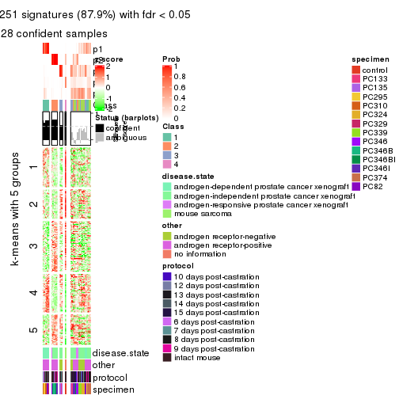
get_signatures(res, k = 6)
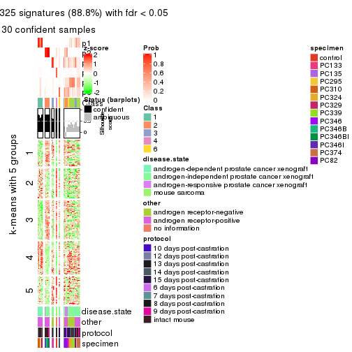
Signature heatmaps where rows are not scaled:
get_signatures(res, k = 2, scale_rows = FALSE)
get_signatures(res, k = 3, scale_rows = FALSE)
get_signatures(res, k = 4, scale_rows = FALSE)
get_signatures(res, k = 5, scale_rows = FALSE)

get_signatures(res, k = 6, scale_rows = FALSE)
Compare the overlap of signatures from different k:
compare_signatures(res)
get_signature() returns a data frame invisibly. TO get the list of signatures, the function
call should be assigned to a variable explicitly. In following code, if plot argument is set
to FALSE, no heatmap is plotted while only the differential analysis is performed.
# code only for demonstration
tb = get_signature(res, k = ..., plot = FALSE)
An example of the output of tb is:
#> which_row fdr mean_1 mean_2 scaled_mean_1 scaled_mean_2 km
#> 1 38 0.042760348 8.373488 9.131774 -0.5533452 0.5164555 1
#> 2 40 0.018707592 7.106213 8.469186 -0.6173731 0.5762149 1
#> 3 55 0.019134737 10.221463 11.207825 -0.6159697 0.5749050 1
#> 4 59 0.006059896 5.921854 7.869574 -0.6899429 0.6439467 1
#> 5 60 0.018055526 8.928898 10.211722 -0.6204761 0.5791110 1
#> 6 98 0.009384629 15.714769 14.887706 0.6635654 -0.6193277 2
...
The columns in tb are:
which_row: row indices corresponding to the input matrix.fdr: FDR for the differential test. mean_x: The mean value in group x.scaled_mean_x: The mean value in group x after rows are scaled.km: Row groups if k-means clustering is applied to rows.UMAP plot which shows how samples are separated.
dimension_reduction(res, k = 2, method = "UMAP")
dimension_reduction(res, k = 3, method = "UMAP")
dimension_reduction(res, k = 4, method = "UMAP")
dimension_reduction(res, k = 5, method = "UMAP")
dimension_reduction(res, k = 6, method = "UMAP")
Following heatmap shows how subgroups are split when increasing k:
collect_classes(res)
Test correlation between subgroups and known annotations. If the known annotation is numeric, one-way ANOVA test is applied, and if the known annotation is discrete, chi-squared contingency table test is applied.
test_to_known_factors(res)
#> n disease.state(p) other(p) protocol(p) specimen(p) k
#> CV:kmeans 42 3.01e-03 6.56e-03 0.4691 6.55e-05 2
#> CV:kmeans 38 1.13e-03 1.30e-04 0.2674 5.69e-06 3
#> CV:kmeans 34 2.52e-09 1.05e-12 0.7150 5.70e-09 4
#> CV:kmeans 28 5.05e-09 2.91e-10 0.6675 5.17e-07 5
#> CV:kmeans 30 1.30e-08 4.66e-10 0.0175 2.64e-06 6
If matrix rows can be associated to genes, consider to use functional_enrichment(res,
...) to perform function enrichment for the signature genes. See this vignette for more detailed explanations.
The object with results only for a single top-value method and a single partition method can be extracted as:
res = res_list["CV", "skmeans"]
# you can also extract it by
# res = res_list["CV:skmeans"]
A summary of res and all the functions that can be applied to it:
res
#> A 'ConsensusPartition' object with k = 2, 3, 4, 5, 6.
#> On a matrix with 8252 rows and 52 columns.
#> Top rows (825, 1650, 2476, 3301, 4126) are extracted by 'CV' method.
#> Subgroups are detected by 'skmeans' method.
#> Performed in total 1250 partitions by row resampling.
#> Best k for subgroups seems to be 2.
#>
#> Following methods can be applied to this 'ConsensusPartition' object:
#> [1] "cola_report" "collect_classes" "collect_plots"
#> [4] "collect_stats" "colnames" "compare_signatures"
#> [7] "consensus_heatmap" "dimension_reduction" "functional_enrichment"
#> [10] "get_anno_col" "get_anno" "get_classes"
#> [13] "get_consensus" "get_matrix" "get_membership"
#> [16] "get_param" "get_signatures" "get_stats"
#> [19] "is_best_k" "is_stable_k" "membership_heatmap"
#> [22] "ncol" "nrow" "plot_ecdf"
#> [25] "rownames" "select_partition_number" "show"
#> [28] "suggest_best_k" "test_to_known_factors"
collect_plots() function collects all the plots made from res for all k (number of partitions)
into one single page to provide an easy and fast comparison between different k.
collect_plots(res)
The plots are:
k and the heatmap of
predicted classes for each k.k.k.k.All the plots in panels can be made by individual functions and they are plotted later in this section.
select_partition_number() produces several plots showing different
statistics for choosing “optimized” k. There are following statistics:
k;k, the area increased is defined as \(A_k - A_{k-1}\).The detailed explanations of these statistics can be found in the cola vignette.
Generally speaking, lower PAC score, higher mean silhouette score or higher
concordance corresponds to better partition. Rand index and Jaccard index
measure how similar the current partition is compared to partition with k-1.
If they are too similar, we won't accept k is better than k-1.
select_partition_number(res)
The numeric values for all these statistics can be obtained by get_stats().
get_stats(res)
#> k 1-PAC mean_silhouette concordance area_increased Rand Jaccard
#> 2 2 0.670 0.801 0.919 0.5049 0.491 0.491
#> 3 3 0.735 0.797 0.892 0.3325 0.714 0.479
#> 4 4 0.675 0.696 0.823 0.1120 0.940 0.812
#> 5 5 0.662 0.612 0.745 0.0637 0.915 0.690
#> 6 6 0.711 0.636 0.784 0.0424 0.933 0.697
suggest_best_k() suggests the best \(k\) based on these statistics. The rules are as follows:
suggest_best_k(res)
#> [1] 2
Following shows the table of the partitions (You need to click the show/hide
code output link to see it). The membership matrix (columns with name p*)
is inferred by
clue::cl_consensus()
function with the SE method. Basically the value in the membership matrix
represents the probability to belong to a certain group. The finall class
label for an item is determined with the group with highest probability it
belongs to.
In get_classes() function, the entropy is calculated from the membership
matrix and the silhouette score is calculated from the consensus matrix.
cbind(get_classes(res, k = 2), get_membership(res, k = 2))
#> class entropy silhouette p1 p2
#> GSM92537 1 0.8081 0.64294 0.752 0.248
#> GSM92539 1 0.9896 0.26597 0.560 0.440
#> GSM92541 1 0.0000 0.92006 1.000 0.000
#> GSM92543 1 0.0000 0.92006 1.000 0.000
#> GSM92545 1 0.0000 0.92006 1.000 0.000
#> GSM92546 1 0.0000 0.92006 1.000 0.000
#> GSM92533 1 0.0672 0.91474 0.992 0.008
#> GSM92535 1 0.0000 0.92006 1.000 0.000
#> GSM92540 1 0.7674 0.67739 0.776 0.224
#> GSM92538 1 0.9710 0.34925 0.600 0.400
#> GSM92542 1 0.0000 0.92006 1.000 0.000
#> GSM92544 1 0.0000 0.92006 1.000 0.000
#> GSM92536 1 0.0000 0.92006 1.000 0.000
#> GSM92534 1 0.0672 0.91474 0.992 0.008
#> GSM92547 2 0.0000 0.88713 0.000 1.000
#> GSM92549 2 0.1414 0.87485 0.020 0.980
#> GSM92550 2 0.0000 0.88713 0.000 1.000
#> GSM92548 2 0.0000 0.88713 0.000 1.000
#> GSM92551 2 0.0000 0.88713 0.000 1.000
#> GSM92553 2 0.0000 0.88713 0.000 1.000
#> GSM92559 2 0.0000 0.88713 0.000 1.000
#> GSM92561 2 0.0000 0.88713 0.000 1.000
#> GSM92555 2 0.0000 0.88713 0.000 1.000
#> GSM92557 2 0.0000 0.88713 0.000 1.000
#> GSM92563 1 0.0000 0.92006 1.000 0.000
#> GSM92565 1 0.0000 0.92006 1.000 0.000
#> GSM92554 2 0.0000 0.88713 0.000 1.000
#> GSM92564 1 0.0000 0.92006 1.000 0.000
#> GSM92562 2 0.0000 0.88713 0.000 1.000
#> GSM92558 2 0.0000 0.88713 0.000 1.000
#> GSM92566 1 0.0000 0.92006 1.000 0.000
#> GSM92552 2 0.0000 0.88713 0.000 1.000
#> GSM92560 2 0.0376 0.88481 0.004 0.996
#> GSM92556 2 0.0000 0.88713 0.000 1.000
#> GSM92567 2 0.9087 0.57862 0.324 0.676
#> GSM92569 2 1.0000 0.17610 0.496 0.504
#> GSM92571 2 0.9087 0.57862 0.324 0.676
#> GSM92573 2 0.7219 0.73364 0.200 0.800
#> GSM92575 1 0.0000 0.92006 1.000 0.000
#> GSM92577 1 0.0000 0.92006 1.000 0.000
#> GSM92579 1 0.0672 0.91474 0.992 0.008
#> GSM92581 1 0.0000 0.92006 1.000 0.000
#> GSM92568 2 0.7674 0.70865 0.224 0.776
#> GSM92576 1 0.0000 0.92006 1.000 0.000
#> GSM92580 1 0.0000 0.92006 1.000 0.000
#> GSM92578 1 0.0000 0.92006 1.000 0.000
#> GSM92572 2 0.9087 0.57862 0.324 0.676
#> GSM92574 1 0.9896 -0.00288 0.560 0.440
#> GSM92582 1 0.0000 0.92006 1.000 0.000
#> GSM92570 2 1.0000 0.17610 0.496 0.504
#> GSM92583 2 0.0000 0.88713 0.000 1.000
#> GSM92584 2 0.0000 0.88713 0.000 1.000
cbind(get_classes(res, k = 3), get_membership(res, k = 3))
#> class entropy silhouette p1 p2 p3
#> GSM92537 1 0.0747 0.9002 0.984 0.016 0.000
#> GSM92539 1 0.7918 0.5244 0.660 0.204 0.136
#> GSM92541 1 0.0000 0.9123 1.000 0.000 0.000
#> GSM92543 1 0.0000 0.9123 1.000 0.000 0.000
#> GSM92545 1 0.0000 0.9123 1.000 0.000 0.000
#> GSM92546 1 0.0000 0.9123 1.000 0.000 0.000
#> GSM92533 3 0.6215 0.0303 0.428 0.000 0.572
#> GSM92535 1 0.0000 0.9123 1.000 0.000 0.000
#> GSM92540 1 0.4178 0.7286 0.828 0.000 0.172
#> GSM92538 1 0.5953 0.5678 0.708 0.012 0.280
#> GSM92542 1 0.0000 0.9123 1.000 0.000 0.000
#> GSM92544 1 0.0000 0.9123 1.000 0.000 0.000
#> GSM92536 1 0.0000 0.9123 1.000 0.000 0.000
#> GSM92534 3 0.6215 0.0303 0.428 0.000 0.572
#> GSM92547 2 0.0000 0.9688 0.000 1.000 0.000
#> GSM92549 2 0.0000 0.9688 0.000 1.000 0.000
#> GSM92550 2 0.0000 0.9688 0.000 1.000 0.000
#> GSM92548 2 0.1289 0.9501 0.000 0.968 0.032
#> GSM92551 2 0.0000 0.9688 0.000 1.000 0.000
#> GSM92553 2 0.0000 0.9688 0.000 1.000 0.000
#> GSM92559 2 0.0000 0.9688 0.000 1.000 0.000
#> GSM92561 2 0.0000 0.9688 0.000 1.000 0.000
#> GSM92555 2 0.0237 0.9669 0.000 0.996 0.004
#> GSM92557 2 0.0000 0.9688 0.000 1.000 0.000
#> GSM92563 1 0.0424 0.9077 0.992 0.000 0.008
#> GSM92565 1 0.0424 0.9077 0.992 0.000 0.008
#> GSM92554 2 0.0000 0.9688 0.000 1.000 0.000
#> GSM92564 1 0.2537 0.8514 0.920 0.000 0.080
#> GSM92562 2 0.0000 0.9688 0.000 1.000 0.000
#> GSM92558 2 0.0000 0.9688 0.000 1.000 0.000
#> GSM92566 1 0.0424 0.9077 0.992 0.000 0.008
#> GSM92552 2 0.0000 0.9688 0.000 1.000 0.000
#> GSM92560 2 0.1860 0.9330 0.000 0.948 0.052
#> GSM92556 2 0.0892 0.9574 0.000 0.980 0.020
#> GSM92567 3 0.0000 0.7047 0.000 0.000 1.000
#> GSM92569 3 0.4702 0.7219 0.212 0.000 0.788
#> GSM92571 3 0.0000 0.7047 0.000 0.000 1.000
#> GSM92573 3 0.0000 0.7047 0.000 0.000 1.000
#> GSM92575 3 0.6244 0.5546 0.440 0.000 0.560
#> GSM92577 3 0.5926 0.6595 0.356 0.000 0.644
#> GSM92579 3 0.0747 0.7039 0.016 0.000 0.984
#> GSM92581 3 0.5591 0.6904 0.304 0.000 0.696
#> GSM92568 3 0.0000 0.7047 0.000 0.000 1.000
#> GSM92576 3 0.6180 0.5945 0.416 0.000 0.584
#> GSM92580 3 0.6062 0.6390 0.384 0.000 0.616
#> GSM92578 3 0.6026 0.6426 0.376 0.000 0.624
#> GSM92572 3 0.0000 0.7047 0.000 0.000 1.000
#> GSM92574 3 0.4654 0.7222 0.208 0.000 0.792
#> GSM92582 3 0.6062 0.6390 0.384 0.000 0.616
#> GSM92570 3 0.4702 0.7219 0.212 0.000 0.788
#> GSM92583 2 0.4750 0.7722 0.000 0.784 0.216
#> GSM92584 2 0.4750 0.7722 0.000 0.784 0.216
cbind(get_classes(res, k = 4), get_membership(res, k = 4))
#> class entropy silhouette p1 p2 p3 p4
#> GSM92537 1 0.299 0.7296 0.880 0.000 0.016 0.104
#> GSM92539 1 0.665 0.5875 0.708 0.080 0.096 0.116
#> GSM92541 1 0.121 0.7951 0.960 0.000 0.000 0.040
#> GSM92543 1 0.121 0.7951 0.960 0.000 0.000 0.040
#> GSM92545 1 0.121 0.7951 0.960 0.000 0.000 0.040
#> GSM92546 1 0.121 0.7951 0.960 0.000 0.000 0.040
#> GSM92533 3 0.459 0.4967 0.280 0.000 0.712 0.008
#> GSM92535 1 0.121 0.7951 0.960 0.000 0.000 0.040
#> GSM92540 1 0.516 0.6529 0.776 0.008 0.104 0.112
#> GSM92538 1 0.714 0.2200 0.512 0.008 0.372 0.108
#> GSM92542 1 0.121 0.7951 0.960 0.000 0.000 0.040
#> GSM92544 1 0.121 0.7951 0.960 0.000 0.000 0.040
#> GSM92536 1 0.121 0.7951 0.960 0.000 0.000 0.040
#> GSM92534 3 0.457 0.4992 0.276 0.000 0.716 0.008
#> GSM92547 2 0.000 0.8741 0.000 1.000 0.000 0.000
#> GSM92549 2 0.250 0.8465 0.016 0.924 0.020 0.040
#> GSM92550 2 0.238 0.8484 0.012 0.928 0.020 0.040
#> GSM92548 2 0.273 0.8339 0.000 0.896 0.088 0.016
#> GSM92551 2 0.000 0.8741 0.000 1.000 0.000 0.000
#> GSM92553 2 0.000 0.8741 0.000 1.000 0.000 0.000
#> GSM92559 2 0.238 0.8360 0.000 0.916 0.016 0.068
#> GSM92561 2 0.000 0.8741 0.000 1.000 0.000 0.000
#> GSM92555 2 0.278 0.8250 0.000 0.896 0.084 0.020
#> GSM92557 2 0.000 0.8741 0.000 1.000 0.000 0.000
#> GSM92563 1 0.563 0.5435 0.704 0.000 0.080 0.216
#> GSM92565 1 0.563 0.5435 0.704 0.000 0.080 0.216
#> GSM92554 2 0.000 0.8741 0.000 1.000 0.000 0.000
#> GSM92564 1 0.623 0.5177 0.660 0.000 0.124 0.216
#> GSM92562 2 0.000 0.8741 0.000 1.000 0.000 0.000
#> GSM92558 2 0.000 0.8741 0.000 1.000 0.000 0.000
#> GSM92566 1 0.563 0.5435 0.704 0.000 0.080 0.216
#> GSM92552 2 0.000 0.8741 0.000 1.000 0.000 0.000
#> GSM92560 2 0.759 0.0652 0.008 0.440 0.400 0.152
#> GSM92556 2 0.587 0.6698 0.004 0.708 0.184 0.104
#> GSM92567 3 0.253 0.7129 0.000 0.000 0.888 0.112
#> GSM92569 3 0.586 0.2582 0.032 0.000 0.488 0.480
#> GSM92571 3 0.179 0.7183 0.000 0.000 0.932 0.068
#> GSM92573 3 0.228 0.7124 0.000 0.000 0.904 0.096
#> GSM92575 4 0.369 0.8398 0.208 0.000 0.000 0.792
#> GSM92577 4 0.386 0.8637 0.152 0.000 0.024 0.824
#> GSM92579 4 0.480 0.4544 0.012 0.000 0.292 0.696
#> GSM92581 4 0.406 0.8331 0.108 0.000 0.060 0.832
#> GSM92568 3 0.253 0.7129 0.000 0.000 0.888 0.112
#> GSM92576 4 0.387 0.8397 0.208 0.000 0.004 0.788
#> GSM92580 4 0.376 0.8612 0.144 0.000 0.024 0.832
#> GSM92578 4 0.391 0.8629 0.156 0.000 0.024 0.820
#> GSM92572 3 0.179 0.7183 0.000 0.000 0.932 0.068
#> GSM92574 3 0.636 0.3944 0.084 0.000 0.596 0.320
#> GSM92582 4 0.371 0.8592 0.140 0.000 0.024 0.836
#> GSM92570 3 0.586 0.2582 0.032 0.000 0.488 0.480
#> GSM92583 2 0.677 0.4015 0.000 0.544 0.348 0.108
#> GSM92584 2 0.677 0.4015 0.000 0.544 0.348 0.108
cbind(get_classes(res, k = 5), get_membership(res, k = 5))
#> class entropy silhouette p1 p2 p3 p4 p5
#> GSM92537 4 0.3969 0.108 0.304 0.000 0.000 0.692 0.004
#> GSM92539 4 0.3660 0.414 0.176 0.016 0.008 0.800 0.000
#> GSM92541 1 0.5260 0.659 0.604 0.000 0.000 0.332 0.064
#> GSM92543 1 0.5218 0.654 0.604 0.000 0.000 0.336 0.060
#> GSM92545 1 0.5260 0.659 0.604 0.000 0.000 0.332 0.064
#> GSM92546 1 0.5260 0.659 0.604 0.000 0.000 0.332 0.064
#> GSM92533 3 0.5341 0.341 0.124 0.000 0.664 0.212 0.000
#> GSM92535 1 0.5260 0.659 0.604 0.000 0.000 0.332 0.064
#> GSM92540 4 0.3548 0.391 0.188 0.004 0.012 0.796 0.000
#> GSM92538 4 0.5180 0.432 0.112 0.004 0.188 0.696 0.000
#> GSM92542 1 0.5260 0.659 0.604 0.000 0.000 0.332 0.064
#> GSM92544 1 0.5260 0.659 0.604 0.000 0.000 0.332 0.064
#> GSM92536 1 0.5260 0.659 0.604 0.000 0.000 0.332 0.064
#> GSM92534 3 0.5312 0.351 0.124 0.000 0.668 0.208 0.000
#> GSM92547 2 0.2077 0.806 0.000 0.908 0.008 0.084 0.000
#> GSM92549 2 0.5233 0.705 0.100 0.756 0.008 0.084 0.052
#> GSM92550 2 0.5177 0.709 0.100 0.760 0.008 0.080 0.052
#> GSM92548 2 0.5741 0.706 0.084 0.728 0.056 0.112 0.020
#> GSM92551 2 0.0000 0.842 0.000 1.000 0.000 0.000 0.000
#> GSM92553 2 0.0000 0.842 0.000 1.000 0.000 0.000 0.000
#> GSM92559 2 0.3561 0.607 0.000 0.740 0.000 0.260 0.000
#> GSM92561 2 0.0000 0.842 0.000 1.000 0.000 0.000 0.000
#> GSM92555 2 0.5740 0.570 0.000 0.656 0.120 0.208 0.016
#> GSM92557 2 0.0000 0.842 0.000 1.000 0.000 0.000 0.000
#> GSM92563 1 0.4512 0.373 0.788 0.000 0.036 0.060 0.116
#> GSM92565 1 0.4512 0.373 0.788 0.000 0.036 0.060 0.116
#> GSM92554 2 0.0000 0.842 0.000 1.000 0.000 0.000 0.000
#> GSM92564 1 0.4981 0.344 0.760 0.000 0.052 0.072 0.116
#> GSM92562 2 0.0000 0.842 0.000 1.000 0.000 0.000 0.000
#> GSM92558 2 0.0000 0.842 0.000 1.000 0.000 0.000 0.000
#> GSM92566 1 0.4512 0.373 0.788 0.000 0.036 0.060 0.116
#> GSM92552 2 0.0000 0.842 0.000 1.000 0.000 0.000 0.000
#> GSM92560 3 0.9006 0.301 0.048 0.192 0.388 0.220 0.152
#> GSM92556 2 0.8747 0.108 0.044 0.332 0.204 0.332 0.088
#> GSM92567 3 0.1197 0.703 0.000 0.000 0.952 0.000 0.048
#> GSM92569 3 0.6147 0.501 0.024 0.000 0.568 0.088 0.320
#> GSM92571 3 0.0693 0.701 0.008 0.000 0.980 0.000 0.012
#> GSM92573 3 0.3232 0.688 0.064 0.008 0.876 0.028 0.024
#> GSM92575 5 0.3086 0.827 0.180 0.000 0.004 0.000 0.816
#> GSM92577 5 0.3734 0.827 0.128 0.000 0.028 0.020 0.824
#> GSM92579 5 0.3863 0.619 0.012 0.000 0.248 0.000 0.740
#> GSM92581 5 0.2853 0.827 0.076 0.000 0.040 0.004 0.880
#> GSM92568 3 0.1197 0.703 0.000 0.000 0.952 0.000 0.048
#> GSM92576 5 0.3086 0.827 0.180 0.000 0.004 0.000 0.816
#> GSM92580 5 0.2390 0.838 0.084 0.000 0.020 0.000 0.896
#> GSM92578 5 0.3649 0.830 0.136 0.000 0.020 0.020 0.824
#> GSM92572 3 0.0693 0.701 0.008 0.000 0.980 0.000 0.012
#> GSM92574 3 0.5979 0.582 0.128 0.000 0.672 0.048 0.152
#> GSM92582 5 0.2490 0.836 0.080 0.000 0.020 0.004 0.896
#> GSM92570 3 0.6161 0.496 0.024 0.000 0.564 0.088 0.324
#> GSM92583 4 0.6655 0.159 0.000 0.348 0.200 0.448 0.004
#> GSM92584 4 0.6655 0.159 0.000 0.348 0.200 0.448 0.004
cbind(get_classes(res, k = 6), get_membership(res, k = 6))
#> class entropy silhouette p1 p2 p3 p4 p5 p6
#> GSM92537 1 0.6046 0.12150 0.488 0.000 0.000 0.256 0.008 0.248
#> GSM92539 1 0.6487 -0.20981 0.380 0.012 0.000 0.376 0.008 0.224
#> GSM92541 1 0.0000 0.84473 1.000 0.000 0.000 0.000 0.000 0.000
#> GSM92543 1 0.0291 0.84120 0.992 0.000 0.000 0.004 0.000 0.004
#> GSM92545 1 0.0000 0.84473 1.000 0.000 0.000 0.000 0.000 0.000
#> GSM92546 1 0.0000 0.84473 1.000 0.000 0.000 0.000 0.000 0.000
#> GSM92533 3 0.4062 0.36817 0.344 0.000 0.640 0.004 0.000 0.012
#> GSM92535 1 0.0000 0.84473 1.000 0.000 0.000 0.000 0.000 0.000
#> GSM92540 4 0.6149 -0.01889 0.380 0.000 0.000 0.400 0.008 0.212
#> GSM92538 4 0.7560 0.24298 0.268 0.004 0.144 0.412 0.008 0.164
#> GSM92542 1 0.0000 0.84473 1.000 0.000 0.000 0.000 0.000 0.000
#> GSM92544 1 0.0291 0.84120 0.992 0.000 0.000 0.004 0.000 0.004
#> GSM92536 1 0.0000 0.84473 1.000 0.000 0.000 0.000 0.000 0.000
#> GSM92534 3 0.4019 0.38233 0.332 0.000 0.652 0.004 0.000 0.012
#> GSM92547 2 0.2597 0.72474 0.000 0.824 0.000 0.176 0.000 0.000
#> GSM92549 2 0.5353 0.56533 0.000 0.628 0.000 0.252 0.028 0.092
#> GSM92550 2 0.5265 0.57283 0.000 0.636 0.000 0.252 0.028 0.084
#> GSM92548 2 0.6282 0.42807 0.000 0.512 0.036 0.352 0.036 0.064
#> GSM92551 2 0.0146 0.80808 0.000 0.996 0.000 0.004 0.000 0.000
#> GSM92553 2 0.0000 0.80897 0.000 1.000 0.000 0.000 0.000 0.000
#> GSM92559 2 0.4326 0.41965 0.000 0.656 0.000 0.300 0.000 0.044
#> GSM92561 2 0.0000 0.80897 0.000 1.000 0.000 0.000 0.000 0.000
#> GSM92555 2 0.6024 0.17691 0.000 0.448 0.088 0.428 0.024 0.012
#> GSM92557 2 0.0000 0.80897 0.000 1.000 0.000 0.000 0.000 0.000
#> GSM92563 6 0.3198 0.98792 0.188 0.000 0.008 0.000 0.008 0.796
#> GSM92565 6 0.3198 0.98792 0.188 0.000 0.008 0.000 0.008 0.796
#> GSM92554 2 0.0000 0.80897 0.000 1.000 0.000 0.000 0.000 0.000
#> GSM92564 6 0.3349 0.96344 0.164 0.000 0.024 0.000 0.008 0.804
#> GSM92562 2 0.0000 0.80897 0.000 1.000 0.000 0.000 0.000 0.000
#> GSM92558 2 0.0000 0.80897 0.000 1.000 0.000 0.000 0.000 0.000
#> GSM92566 6 0.3198 0.98792 0.188 0.000 0.008 0.000 0.008 0.796
#> GSM92552 2 0.0146 0.80808 0.000 0.996 0.000 0.004 0.000 0.000
#> GSM92560 4 0.6918 -0.00348 0.004 0.076 0.204 0.568 0.100 0.048
#> GSM92556 4 0.5780 0.18205 0.000 0.112 0.112 0.680 0.068 0.028
#> GSM92567 3 0.0405 0.69099 0.000 0.000 0.988 0.004 0.008 0.000
#> GSM92569 3 0.6398 0.41042 0.012 0.000 0.508 0.264 0.196 0.020
#> GSM92571 3 0.0363 0.69205 0.000 0.000 0.988 0.000 0.000 0.012
#> GSM92573 3 0.2908 0.66136 0.000 0.000 0.864 0.048 0.012 0.076
#> GSM92575 5 0.4962 0.78383 0.184 0.000 0.004 0.012 0.688 0.112
#> GSM92577 5 0.5913 0.77038 0.120 0.000 0.016 0.092 0.660 0.112
#> GSM92579 5 0.2234 0.74010 0.004 0.000 0.124 0.000 0.872 0.000
#> GSM92581 5 0.1327 0.81577 0.064 0.000 0.000 0.000 0.936 0.000
#> GSM92568 3 0.0405 0.69099 0.000 0.000 0.988 0.004 0.008 0.000
#> GSM92576 5 0.4962 0.78383 0.184 0.000 0.004 0.012 0.688 0.112
#> GSM92580 5 0.1444 0.81719 0.072 0.000 0.000 0.000 0.928 0.000
#> GSM92578 5 0.6290 0.75254 0.144 0.000 0.020 0.100 0.624 0.112
#> GSM92572 3 0.0363 0.69205 0.000 0.000 0.988 0.000 0.000 0.012
#> GSM92574 3 0.6037 0.55077 0.060 0.000 0.660 0.148 0.052 0.080
#> GSM92582 5 0.1327 0.81577 0.064 0.000 0.000 0.000 0.936 0.000
#> GSM92570 3 0.6419 0.40624 0.012 0.000 0.504 0.264 0.200 0.020
#> GSM92583 4 0.6874 0.45736 0.000 0.184 0.152 0.508 0.000 0.156
#> GSM92584 4 0.6874 0.45736 0.000 0.184 0.152 0.508 0.000 0.156
Heatmaps for the consensus matrix. It visualizes the probability of two samples to be in a same group.
consensus_heatmap(res, k = 2)
consensus_heatmap(res, k = 3)
consensus_heatmap(res, k = 4)
consensus_heatmap(res, k = 5)
consensus_heatmap(res, k = 6)
Heatmaps for the membership of samples in all partitions to see how consistent they are:
membership_heatmap(res, k = 2)
membership_heatmap(res, k = 3)
membership_heatmap(res, k = 4)
membership_heatmap(res, k = 5)
membership_heatmap(res, k = 6)
As soon as we have had the classes for columns, we can look for signatures which are significantly different between classes which can be candidate marks for certain classes. Following are the heatmaps for signatures.
Signature heatmaps where rows are scaled:
get_signatures(res, k = 2)
get_signatures(res, k = 3)
get_signatures(res, k = 4)

get_signatures(res, k = 5)
get_signatures(res, k = 6)
Signature heatmaps where rows are not scaled:
get_signatures(res, k = 2, scale_rows = FALSE)
get_signatures(res, k = 3, scale_rows = FALSE)
get_signatures(res, k = 4, scale_rows = FALSE)
get_signatures(res, k = 5, scale_rows = FALSE)
get_signatures(res, k = 6, scale_rows = FALSE)
Compare the overlap of signatures from different k:
compare_signatures(res)
get_signature() returns a data frame invisibly. TO get the list of signatures, the function
call should be assigned to a variable explicitly. In following code, if plot argument is set
to FALSE, no heatmap is plotted while only the differential analysis is performed.
# code only for demonstration
tb = get_signature(res, k = ..., plot = FALSE)
An example of the output of tb is:
#> which_row fdr mean_1 mean_2 scaled_mean_1 scaled_mean_2 km
#> 1 38 0.042760348 8.373488 9.131774 -0.5533452 0.5164555 1
#> 2 40 0.018707592 7.106213 8.469186 -0.6173731 0.5762149 1
#> 3 55 0.019134737 10.221463 11.207825 -0.6159697 0.5749050 1
#> 4 59 0.006059896 5.921854 7.869574 -0.6899429 0.6439467 1
#> 5 60 0.018055526 8.928898 10.211722 -0.6204761 0.5791110 1
#> 6 98 0.009384629 15.714769 14.887706 0.6635654 -0.6193277 2
...
The columns in tb are:
which_row: row indices corresponding to the input matrix.fdr: FDR for the differential test. mean_x: The mean value in group x.scaled_mean_x: The mean value in group x after rows are scaled.km: Row groups if k-means clustering is applied to rows.UMAP plot which shows how samples are separated.
dimension_reduction(res, k = 2, method = "UMAP")
dimension_reduction(res, k = 3, method = "UMAP")
dimension_reduction(res, k = 4, method = "UMAP")
dimension_reduction(res, k = 5, method = "UMAP")

dimension_reduction(res, k = 6, method = "UMAP")
Following heatmap shows how subgroups are split when increasing k:
collect_classes(res)
Test correlation between subgroups and known annotations. If the known annotation is numeric, one-way ANOVA test is applied, and if the known annotation is discrete, chi-squared contingency table test is applied.
test_to_known_factors(res)
#> n disease.state(p) other(p) protocol(p) specimen(p) k
#> CV:skmeans 47 2.94e-04 2.63e-01 0.806 9.66e-06 2
#> CV:skmeans 50 1.05e-07 9.48e-11 0.235 1.28e-10 3
#> CV:skmeans 42 1.11e-05 4.01e-09 0.662 6.46e-12 4
#> CV:skmeans 37 9.98e-08 4.60e-08 0.379 3.16e-11 5
#> CV:skmeans 37 5.72e-07 1.80e-07 0.245 3.54e-13 6
If matrix rows can be associated to genes, consider to use functional_enrichment(res,
...) to perform function enrichment for the signature genes. See this vignette for more detailed explanations.
The object with results only for a single top-value method and a single partition method can be extracted as:
res = res_list["CV", "pam"]
# you can also extract it by
# res = res_list["CV:pam"]
A summary of res and all the functions that can be applied to it:
res
#> A 'ConsensusPartition' object with k = 2, 3, 4, 5, 6.
#> On a matrix with 8252 rows and 52 columns.
#> Top rows (825, 1650, 2476, 3301, 4126) are extracted by 'CV' method.
#> Subgroups are detected by 'pam' method.
#> Performed in total 1250 partitions by row resampling.
#> Best k for subgroups seems to be 2.
#>
#> Following methods can be applied to this 'ConsensusPartition' object:
#> [1] "cola_report" "collect_classes" "collect_plots"
#> [4] "collect_stats" "colnames" "compare_signatures"
#> [7] "consensus_heatmap" "dimension_reduction" "functional_enrichment"
#> [10] "get_anno_col" "get_anno" "get_classes"
#> [13] "get_consensus" "get_matrix" "get_membership"
#> [16] "get_param" "get_signatures" "get_stats"
#> [19] "is_best_k" "is_stable_k" "membership_heatmap"
#> [22] "ncol" "nrow" "plot_ecdf"
#> [25] "rownames" "select_partition_number" "show"
#> [28] "suggest_best_k" "test_to_known_factors"
collect_plots() function collects all the plots made from res for all k (number of partitions)
into one single page to provide an easy and fast comparison between different k.
collect_plots(res)

The plots are:
k and the heatmap of
predicted classes for each k.k.k.k.All the plots in panels can be made by individual functions and they are plotted later in this section.
select_partition_number() produces several plots showing different
statistics for choosing “optimized” k. There are following statistics:
k;k, the area increased is defined as \(A_k - A_{k-1}\).The detailed explanations of these statistics can be found in the cola vignette.
Generally speaking, lower PAC score, higher mean silhouette score or higher
concordance corresponds to better partition. Rand index and Jaccard index
measure how similar the current partition is compared to partition with k-1.
If they are too similar, we won't accept k is better than k-1.
select_partition_number(res)
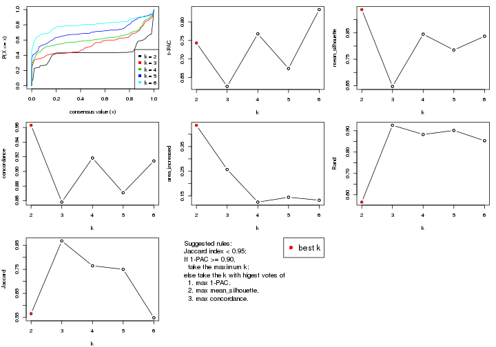
The numeric values for all these statistics can be obtained by get_stats().
get_stats(res)
#> k 1-PAC mean_silhouette concordance area_increased Rand Jaccard
#> 2 2 0.743 0.938 0.963 0.436 0.566 0.566
#> 3 3 0.626 0.647 0.858 0.257 0.925 0.868
#> 4 4 0.768 0.845 0.918 0.125 0.882 0.765
#> 5 5 0.674 0.785 0.871 0.145 0.901 0.750
#> 6 6 0.833 0.837 0.914 0.133 0.853 0.549
suggest_best_k() suggests the best \(k\) based on these statistics. The rules are as follows:
suggest_best_k(res)
#> [1] 2
Following shows the table of the partitions (You need to click the show/hide
code output link to see it). The membership matrix (columns with name p*)
is inferred by
clue::cl_consensus()
function with the SE method. Basically the value in the membership matrix
represents the probability to belong to a certain group. The finall class
label for an item is determined with the group with highest probability it
belongs to.
In get_classes() function, the entropy is calculated from the membership
matrix and the silhouette score is calculated from the consensus matrix.
cbind(get_classes(res, k = 2), get_membership(res, k = 2))
#> class entropy silhouette p1 p2
#> GSM92537 1 0.5737 0.856 0.864 0.136
#> GSM92539 1 0.1184 0.967 0.984 0.016
#> GSM92541 1 0.0000 0.963 1.000 0.000
#> GSM92543 1 0.1184 0.967 0.984 0.016
#> GSM92545 1 0.0000 0.963 1.000 0.000
#> GSM92546 1 0.0000 0.963 1.000 0.000
#> GSM92533 1 0.1184 0.967 0.984 0.016
#> GSM92535 1 0.0000 0.963 1.000 0.000
#> GSM92540 1 0.1184 0.967 0.984 0.016
#> GSM92538 1 0.1184 0.967 0.984 0.016
#> GSM92542 1 0.1184 0.967 0.984 0.016
#> GSM92544 1 0.1184 0.967 0.984 0.016
#> GSM92536 1 0.0000 0.963 1.000 0.000
#> GSM92534 1 0.1184 0.967 0.984 0.016
#> GSM92547 2 0.0000 0.951 0.000 1.000
#> GSM92549 2 0.6343 0.823 0.160 0.840
#> GSM92550 2 0.5629 0.856 0.132 0.868
#> GSM92548 1 0.2043 0.960 0.968 0.032
#> GSM92551 2 0.0000 0.951 0.000 1.000
#> GSM92553 2 0.0000 0.951 0.000 1.000
#> GSM92559 2 0.0000 0.951 0.000 1.000
#> GSM92561 2 0.0000 0.951 0.000 1.000
#> GSM92555 2 0.0000 0.951 0.000 1.000
#> GSM92557 2 0.0000 0.951 0.000 1.000
#> GSM92563 1 0.6148 0.837 0.848 0.152
#> GSM92565 1 0.5519 0.863 0.872 0.128
#> GSM92554 2 0.0000 0.951 0.000 1.000
#> GSM92564 1 0.0376 0.963 0.996 0.004
#> GSM92562 2 0.0000 0.951 0.000 1.000
#> GSM92558 2 0.0000 0.951 0.000 1.000
#> GSM92566 1 0.5629 0.859 0.868 0.132
#> GSM92552 2 0.0000 0.951 0.000 1.000
#> GSM92560 1 0.1414 0.966 0.980 0.020
#> GSM92556 1 0.1414 0.966 0.980 0.020
#> GSM92567 1 0.3431 0.932 0.936 0.064
#> GSM92569 1 0.0938 0.967 0.988 0.012
#> GSM92571 1 0.1184 0.967 0.984 0.016
#> GSM92573 2 0.4939 0.887 0.108 0.892
#> GSM92575 1 0.3584 0.920 0.932 0.068
#> GSM92577 1 0.0376 0.965 0.996 0.004
#> GSM92579 1 0.1184 0.967 0.984 0.016
#> GSM92581 1 0.1184 0.967 0.984 0.016
#> GSM92568 1 0.3584 0.929 0.932 0.068
#> GSM92576 1 0.1184 0.967 0.984 0.016
#> GSM92580 1 0.1184 0.967 0.984 0.016
#> GSM92578 1 0.0000 0.963 1.000 0.000
#> GSM92572 1 0.1414 0.966 0.980 0.020
#> GSM92574 1 0.0000 0.963 1.000 0.000
#> GSM92582 1 0.6048 0.841 0.852 0.148
#> GSM92570 1 0.1184 0.967 0.984 0.016
#> GSM92583 2 0.5946 0.846 0.144 0.856
#> GSM92584 2 0.6048 0.842 0.148 0.852
cbind(get_classes(res, k = 3), get_membership(res, k = 3))
#> class entropy silhouette p1 p2 p3
#> GSM92537 1 0.6516 -0.840 0.516 0.004 0.480
#> GSM92539 1 0.0000 0.772 1.000 0.000 0.000
#> GSM92541 1 0.4654 0.397 0.792 0.000 0.208
#> GSM92543 1 0.0892 0.767 0.980 0.000 0.020
#> GSM92545 1 0.6309 -0.856 0.500 0.000 0.500
#> GSM92546 1 0.0892 0.767 0.980 0.000 0.020
#> GSM92533 1 0.2625 0.760 0.916 0.000 0.084
#> GSM92535 1 0.3267 0.641 0.884 0.000 0.116
#> GSM92540 1 0.0000 0.772 1.000 0.000 0.000
#> GSM92538 1 0.2448 0.762 0.924 0.000 0.076
#> GSM92542 1 0.0892 0.767 0.980 0.000 0.020
#> GSM92544 1 0.0892 0.767 0.980 0.000 0.020
#> GSM92536 1 0.1289 0.758 0.968 0.000 0.032
#> GSM92534 1 0.2625 0.760 0.916 0.000 0.084
#> GSM92547 2 0.0000 0.913 0.000 1.000 0.000
#> GSM92549 2 0.4861 0.737 0.180 0.808 0.012
#> GSM92550 2 0.3816 0.787 0.148 0.852 0.000
#> GSM92548 1 0.1636 0.773 0.964 0.016 0.020
#> GSM92551 2 0.0237 0.911 0.004 0.996 0.000
#> GSM92553 2 0.0000 0.913 0.000 1.000 0.000
#> GSM92559 2 0.0000 0.913 0.000 1.000 0.000
#> GSM92561 2 0.0000 0.913 0.000 1.000 0.000
#> GSM92555 2 0.0000 0.913 0.000 1.000 0.000
#> GSM92557 2 0.0000 0.913 0.000 1.000 0.000
#> GSM92563 3 0.8859 0.757 0.400 0.120 0.480
#> GSM92565 1 0.6678 -0.849 0.512 0.008 0.480
#> GSM92554 2 0.0000 0.913 0.000 1.000 0.000
#> GSM92564 1 0.6520 -0.829 0.508 0.004 0.488
#> GSM92562 2 0.0000 0.913 0.000 1.000 0.000
#> GSM92558 2 0.0000 0.913 0.000 1.000 0.000
#> GSM92566 3 0.7186 0.851 0.476 0.024 0.500
#> GSM92552 2 0.0000 0.913 0.000 1.000 0.000
#> GSM92560 1 0.0829 0.773 0.984 0.012 0.004
#> GSM92556 1 0.2173 0.770 0.944 0.008 0.048
#> GSM92567 1 0.2625 0.760 0.916 0.000 0.084
#> GSM92569 1 0.2625 0.760 0.916 0.000 0.084
#> GSM92571 1 0.2625 0.760 0.916 0.000 0.084
#> GSM92573 2 0.5650 0.758 0.108 0.808 0.084
#> GSM92575 3 0.6825 0.831 0.488 0.012 0.500
#> GSM92577 1 0.0592 0.774 0.988 0.000 0.012
#> GSM92579 1 0.2625 0.760 0.916 0.000 0.084
#> GSM92581 1 0.0000 0.772 1.000 0.000 0.000
#> GSM92568 1 0.2625 0.760 0.916 0.000 0.084
#> GSM92576 1 0.3192 0.648 0.888 0.000 0.112
#> GSM92580 1 0.0000 0.772 1.000 0.000 0.000
#> GSM92578 1 0.4887 0.321 0.772 0.000 0.228
#> GSM92572 1 0.2625 0.760 0.916 0.000 0.084
#> GSM92574 1 0.3038 0.669 0.896 0.000 0.104
#> GSM92582 1 0.2318 0.735 0.944 0.028 0.028
#> GSM92570 1 0.2625 0.760 0.916 0.000 0.084
#> GSM92583 2 0.6215 0.620 0.000 0.572 0.428
#> GSM92584 2 0.6215 0.620 0.000 0.572 0.428
cbind(get_classes(res, k = 4), get_membership(res, k = 4))
#> class entropy silhouette p1 p2 p3 p4
#> GSM92537 1 0.4907 0.173 0.580 0.000 0.420 0.000
#> GSM92539 3 0.2149 0.893 0.088 0.000 0.912 0.000
#> GSM92541 3 0.4509 0.700 0.288 0.000 0.708 0.004
#> GSM92543 3 0.2773 0.888 0.116 0.000 0.880 0.004
#> GSM92545 1 0.3668 0.618 0.808 0.000 0.188 0.004
#> GSM92546 3 0.2773 0.888 0.116 0.000 0.880 0.004
#> GSM92533 3 0.0336 0.886 0.000 0.000 0.992 0.008
#> GSM92535 3 0.3751 0.825 0.196 0.000 0.800 0.004
#> GSM92540 3 0.2216 0.893 0.092 0.000 0.908 0.000
#> GSM92538 3 0.0336 0.890 0.008 0.000 0.992 0.000
#> GSM92542 3 0.2773 0.888 0.116 0.000 0.880 0.004
#> GSM92544 3 0.2773 0.888 0.116 0.000 0.880 0.004
#> GSM92536 3 0.2944 0.882 0.128 0.000 0.868 0.004
#> GSM92534 3 0.0336 0.886 0.000 0.000 0.992 0.008
#> GSM92547 2 0.0000 0.950 0.000 1.000 0.000 0.000
#> GSM92549 2 0.2586 0.871 0.048 0.912 0.040 0.000
#> GSM92550 2 0.2586 0.871 0.048 0.912 0.040 0.000
#> GSM92548 3 0.2408 0.890 0.044 0.036 0.920 0.000
#> GSM92551 2 0.0188 0.947 0.004 0.996 0.000 0.000
#> GSM92553 2 0.0000 0.950 0.000 1.000 0.000 0.000
#> GSM92559 2 0.0000 0.950 0.000 1.000 0.000 0.000
#> GSM92561 2 0.0000 0.950 0.000 1.000 0.000 0.000
#> GSM92555 2 0.0817 0.932 0.000 0.976 0.024 0.000
#> GSM92557 2 0.0000 0.950 0.000 1.000 0.000 0.000
#> GSM92563 1 0.1510 0.761 0.956 0.016 0.028 0.000
#> GSM92565 1 0.0921 0.772 0.972 0.000 0.028 0.000
#> GSM92554 2 0.0000 0.950 0.000 1.000 0.000 0.000
#> GSM92564 1 0.1398 0.765 0.956 0.004 0.040 0.000
#> GSM92562 2 0.0000 0.950 0.000 1.000 0.000 0.000
#> GSM92558 2 0.0000 0.950 0.000 1.000 0.000 0.000
#> GSM92566 1 0.0000 0.760 1.000 0.000 0.000 0.000
#> GSM92552 2 0.0000 0.950 0.000 1.000 0.000 0.000
#> GSM92560 3 0.2546 0.893 0.060 0.028 0.912 0.000
#> GSM92556 3 0.2002 0.886 0.020 0.044 0.936 0.000
#> GSM92567 3 0.0336 0.886 0.000 0.000 0.992 0.008
#> GSM92569 3 0.0524 0.887 0.004 0.000 0.988 0.008
#> GSM92571 3 0.0336 0.886 0.000 0.000 0.992 0.008
#> GSM92573 2 0.4482 0.594 0.008 0.728 0.264 0.000
#> GSM92575 1 0.0376 0.760 0.992 0.000 0.004 0.004
#> GSM92577 3 0.1940 0.896 0.076 0.000 0.924 0.000
#> GSM92579 3 0.0000 0.887 0.000 0.000 1.000 0.000
#> GSM92581 3 0.2149 0.893 0.088 0.000 0.912 0.000
#> GSM92568 3 0.0336 0.886 0.000 0.000 0.992 0.008
#> GSM92576 3 0.3831 0.785 0.204 0.000 0.792 0.004
#> GSM92580 3 0.2149 0.893 0.088 0.000 0.912 0.000
#> GSM92578 3 0.4655 0.657 0.312 0.000 0.684 0.004
#> GSM92572 3 0.0336 0.886 0.000 0.000 0.992 0.008
#> GSM92574 3 0.3219 0.842 0.164 0.000 0.836 0.000
#> GSM92582 3 0.6597 0.324 0.088 0.372 0.540 0.000
#> GSM92570 3 0.0712 0.886 0.004 0.004 0.984 0.008
#> GSM92583 4 0.0469 1.000 0.000 0.012 0.000 0.988
#> GSM92584 4 0.0469 1.000 0.000 0.012 0.000 0.988
cbind(get_classes(res, k = 5), get_membership(res, k = 5))
#> class entropy silhouette p1 p2 p3 p4 p5
#> GSM92537 1 0.6411 -0.0368 0.436 0.000 0.392 0 0.172
#> GSM92539 3 0.3304 0.8294 0.016 0.000 0.816 0 0.168
#> GSM92541 3 0.5144 0.6783 0.064 0.000 0.632 0 0.304
#> GSM92543 3 0.3882 0.8267 0.044 0.000 0.788 0 0.168
#> GSM92545 1 0.6203 0.2977 0.544 0.000 0.188 0 0.268
#> GSM92546 3 0.4031 0.8174 0.044 0.000 0.772 0 0.184
#> GSM92533 3 0.0000 0.8359 0.000 0.000 1.000 0 0.000
#> GSM92535 3 0.4168 0.8130 0.052 0.000 0.764 0 0.184
#> GSM92540 3 0.3304 0.8294 0.016 0.000 0.816 0 0.168
#> GSM92538 3 0.1792 0.8426 0.000 0.000 0.916 0 0.084
#> GSM92542 3 0.3995 0.8213 0.044 0.000 0.776 0 0.180
#> GSM92544 3 0.3639 0.8336 0.044 0.000 0.812 0 0.144
#> GSM92536 3 0.3958 0.8214 0.044 0.000 0.780 0 0.176
#> GSM92534 3 0.0000 0.8359 0.000 0.000 1.000 0 0.000
#> GSM92547 2 0.0000 0.9449 0.000 1.000 0.000 0 0.000
#> GSM92549 2 0.2835 0.8317 0.016 0.868 0.004 0 0.112
#> GSM92550 2 0.2835 0.8317 0.016 0.868 0.004 0 0.112
#> GSM92548 3 0.3584 0.8327 0.016 0.040 0.840 0 0.104
#> GSM92551 2 0.0000 0.9449 0.000 1.000 0.000 0 0.000
#> GSM92553 2 0.0000 0.9449 0.000 1.000 0.000 0 0.000
#> GSM92559 2 0.0000 0.9449 0.000 1.000 0.000 0 0.000
#> GSM92561 2 0.0000 0.9449 0.000 1.000 0.000 0 0.000
#> GSM92555 2 0.0955 0.9217 0.000 0.968 0.004 0 0.028
#> GSM92557 2 0.0000 0.9449 0.000 1.000 0.000 0 0.000
#> GSM92563 1 0.1121 0.6412 0.956 0.000 0.000 0 0.044
#> GSM92565 1 0.1121 0.6412 0.956 0.000 0.000 0 0.044
#> GSM92554 2 0.0000 0.9449 0.000 1.000 0.000 0 0.000
#> GSM92564 1 0.1121 0.6412 0.956 0.000 0.000 0 0.044
#> GSM92562 2 0.0000 0.9449 0.000 1.000 0.000 0 0.000
#> GSM92558 2 0.0000 0.9449 0.000 1.000 0.000 0 0.000
#> GSM92566 1 0.0290 0.5962 0.992 0.000 0.000 0 0.008
#> GSM92552 2 0.0000 0.9449 0.000 1.000 0.000 0 0.000
#> GSM92560 3 0.3998 0.8252 0.016 0.052 0.812 0 0.120
#> GSM92556 3 0.3605 0.8172 0.016 0.080 0.844 0 0.060
#> GSM92567 3 0.0000 0.8359 0.000 0.000 1.000 0 0.000
#> GSM92569 3 0.0000 0.8359 0.000 0.000 1.000 0 0.000
#> GSM92571 3 0.0000 0.8359 0.000 0.000 1.000 0 0.000
#> GSM92573 2 0.4714 0.6134 0.008 0.712 0.236 0 0.044
#> GSM92575 5 0.2020 0.6986 0.100 0.000 0.000 0 0.900
#> GSM92577 3 0.3551 0.7856 0.008 0.000 0.772 0 0.220
#> GSM92579 5 0.3707 0.6157 0.000 0.000 0.284 0 0.716
#> GSM92581 5 0.3183 0.7246 0.016 0.000 0.156 0 0.828
#> GSM92568 3 0.0000 0.8359 0.000 0.000 1.000 0 0.000
#> GSM92576 5 0.0609 0.7722 0.000 0.000 0.020 0 0.980
#> GSM92580 5 0.1469 0.7802 0.016 0.000 0.036 0 0.948
#> GSM92578 3 0.6416 0.2936 0.188 0.000 0.480 0 0.332
#> GSM92572 3 0.0000 0.8359 0.000 0.000 1.000 0 0.000
#> GSM92574 3 0.3710 0.7870 0.144 0.000 0.808 0 0.048
#> GSM92582 5 0.3256 0.6774 0.016 0.148 0.004 0 0.832
#> GSM92570 3 0.0955 0.8257 0.000 0.004 0.968 0 0.028
#> GSM92583 4 0.0000 1.0000 0.000 0.000 0.000 1 0.000
#> GSM92584 4 0.0000 1.0000 0.000 0.000 0.000 1 0.000
cbind(get_classes(res, k = 6), get_membership(res, k = 6))
#> class entropy silhouette p1 p2 p3 p4 p5 p6
#> GSM92537 1 0.3003 0.7835 0.812 0.000 0.000 0 0.016 0.172
#> GSM92539 1 0.3352 0.7932 0.816 0.016 0.024 0 0.144 0.000
#> GSM92541 1 0.0000 0.9036 1.000 0.000 0.000 0 0.000 0.000
#> GSM92543 1 0.0547 0.9071 0.980 0.000 0.020 0 0.000 0.000
#> GSM92545 1 0.0363 0.8978 0.988 0.000 0.000 0 0.000 0.012
#> GSM92546 1 0.0260 0.9069 0.992 0.000 0.008 0 0.000 0.000
#> GSM92533 3 0.0363 0.8147 0.012 0.000 0.988 0 0.000 0.000
#> GSM92535 1 0.0146 0.9056 0.996 0.000 0.004 0 0.000 0.000
#> GSM92540 1 0.3261 0.7999 0.820 0.000 0.024 0 0.144 0.012
#> GSM92538 1 0.4464 0.6887 0.712 0.000 0.148 0 0.140 0.000
#> GSM92542 1 0.0547 0.9071 0.980 0.000 0.020 0 0.000 0.000
#> GSM92544 1 0.0632 0.9058 0.976 0.000 0.024 0 0.000 0.000
#> GSM92536 1 0.0260 0.9069 0.992 0.000 0.008 0 0.000 0.000
#> GSM92534 3 0.0363 0.8147 0.012 0.000 0.988 0 0.000 0.000
#> GSM92547 2 0.0000 0.9521 0.000 1.000 0.000 0 0.000 0.000
#> GSM92549 2 0.3043 0.7605 0.008 0.792 0.000 0 0.200 0.000
#> GSM92550 2 0.3043 0.7639 0.004 0.796 0.004 0 0.196 0.000
#> GSM92548 3 0.5667 0.5388 0.016 0.196 0.592 0 0.196 0.000
#> GSM92551 2 0.0000 0.9521 0.000 1.000 0.000 0 0.000 0.000
#> GSM92553 2 0.0000 0.9521 0.000 1.000 0.000 0 0.000 0.000
#> GSM92559 2 0.0000 0.9521 0.000 1.000 0.000 0 0.000 0.000
#> GSM92561 2 0.0000 0.9521 0.000 1.000 0.000 0 0.000 0.000
#> GSM92555 2 0.1387 0.8954 0.000 0.932 0.000 0 0.068 0.000
#> GSM92557 2 0.0000 0.9521 0.000 1.000 0.000 0 0.000 0.000
#> GSM92563 6 0.0000 1.0000 0.000 0.000 0.000 0 0.000 1.000
#> GSM92565 6 0.0000 1.0000 0.000 0.000 0.000 0 0.000 1.000
#> GSM92554 2 0.0000 0.9521 0.000 1.000 0.000 0 0.000 0.000
#> GSM92564 6 0.0000 1.0000 0.000 0.000 0.000 0 0.000 1.000
#> GSM92562 2 0.0000 0.9521 0.000 1.000 0.000 0 0.000 0.000
#> GSM92558 2 0.0000 0.9521 0.000 1.000 0.000 0 0.000 0.000
#> GSM92566 6 0.0000 1.0000 0.000 0.000 0.000 0 0.000 1.000
#> GSM92552 2 0.0000 0.9521 0.000 1.000 0.000 0 0.000 0.000
#> GSM92560 3 0.6019 0.4446 0.016 0.268 0.520 0 0.196 0.000
#> GSM92556 3 0.5825 0.5538 0.032 0.176 0.596 0 0.196 0.000
#> GSM92567 3 0.0000 0.8164 0.000 0.000 1.000 0 0.000 0.000
#> GSM92569 3 0.0000 0.8164 0.000 0.000 1.000 0 0.000 0.000
#> GSM92571 3 0.0000 0.8164 0.000 0.000 1.000 0 0.000 0.000
#> GSM92573 3 0.2442 0.7452 0.000 0.004 0.852 0 0.144 0.000
#> GSM92575 5 0.3522 0.7079 0.172 0.000 0.000 0 0.784 0.044
#> GSM92577 3 0.2831 0.7766 0.048 0.000 0.872 0 0.064 0.016
#> GSM92579 5 0.1387 0.8553 0.000 0.000 0.068 0 0.932 0.000
#> GSM92581 5 0.1391 0.8826 0.040 0.000 0.016 0 0.944 0.000
#> GSM92568 3 0.0000 0.8164 0.000 0.000 1.000 0 0.000 0.000
#> GSM92576 5 0.2910 0.8316 0.068 0.000 0.080 0 0.852 0.000
#> GSM92580 5 0.1082 0.8826 0.040 0.000 0.004 0 0.956 0.000
#> GSM92578 3 0.7045 -0.0188 0.160 0.000 0.396 0 0.340 0.104
#> GSM92572 3 0.0000 0.8164 0.000 0.000 1.000 0 0.000 0.000
#> GSM92574 3 0.3012 0.7031 0.008 0.000 0.796 0 0.000 0.196
#> GSM92582 5 0.1176 0.8624 0.020 0.000 0.000 0 0.956 0.024
#> GSM92570 3 0.0458 0.8115 0.000 0.000 0.984 0 0.016 0.000
#> GSM92583 4 0.0000 1.0000 0.000 0.000 0.000 1 0.000 0.000
#> GSM92584 4 0.0000 1.0000 0.000 0.000 0.000 1 0.000 0.000
Heatmaps for the consensus matrix. It visualizes the probability of two samples to be in a same group.
consensus_heatmap(res, k = 2)
consensus_heatmap(res, k = 3)
consensus_heatmap(res, k = 4)
consensus_heatmap(res, k = 5)
consensus_heatmap(res, k = 6)
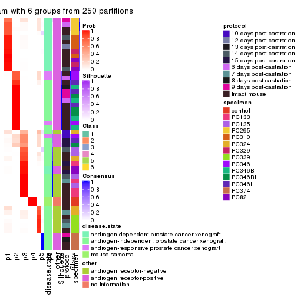
Heatmaps for the membership of samples in all partitions to see how consistent they are:
membership_heatmap(res, k = 2)
membership_heatmap(res, k = 3)
membership_heatmap(res, k = 4)
membership_heatmap(res, k = 5)
membership_heatmap(res, k = 6)
As soon as we have had the classes for columns, we can look for signatures which are significantly different between classes which can be candidate marks for certain classes. Following are the heatmaps for signatures.
Signature heatmaps where rows are scaled:
get_signatures(res, k = 2)
get_signatures(res, k = 3)
get_signatures(res, k = 4)
get_signatures(res, k = 5)

get_signatures(res, k = 6)
Signature heatmaps where rows are not scaled:
get_signatures(res, k = 2, scale_rows = FALSE)
get_signatures(res, k = 3, scale_rows = FALSE)
get_signatures(res, k = 4, scale_rows = FALSE)
get_signatures(res, k = 5, scale_rows = FALSE)
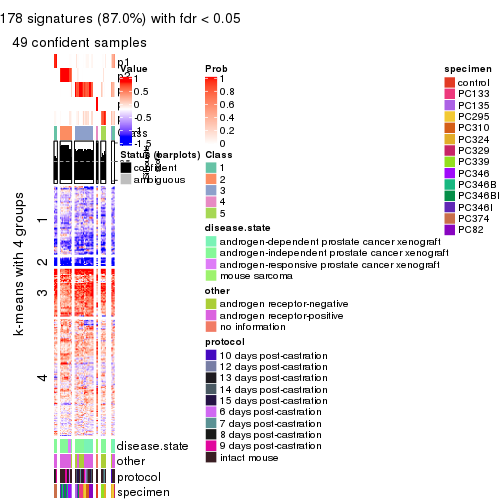
get_signatures(res, k = 6, scale_rows = FALSE)
Compare the overlap of signatures from different k:
compare_signatures(res)
get_signature() returns a data frame invisibly. TO get the list of signatures, the function
call should be assigned to a variable explicitly. In following code, if plot argument is set
to FALSE, no heatmap is plotted while only the differential analysis is performed.
# code only for demonstration
tb = get_signature(res, k = ..., plot = FALSE)
An example of the output of tb is:
#> which_row fdr mean_1 mean_2 scaled_mean_1 scaled_mean_2 km
#> 1 38 0.042760348 8.373488 9.131774 -0.5533452 0.5164555 1
#> 2 40 0.018707592 7.106213 8.469186 -0.6173731 0.5762149 1
#> 3 55 0.019134737 10.221463 11.207825 -0.6159697 0.5749050 1
#> 4 59 0.006059896 5.921854 7.869574 -0.6899429 0.6439467 1
#> 5 60 0.018055526 8.928898 10.211722 -0.6204761 0.5791110 1
#> 6 98 0.009384629 15.714769 14.887706 0.6635654 -0.6193277 2
...
The columns in tb are:
which_row: row indices corresponding to the input matrix.fdr: FDR for the differential test. mean_x: The mean value in group x.scaled_mean_x: The mean value in group x after rows are scaled.km: Row groups if k-means clustering is applied to rows.UMAP plot which shows how samples are separated.
dimension_reduction(res, k = 2, method = "UMAP")

dimension_reduction(res, k = 3, method = "UMAP")
dimension_reduction(res, k = 4, method = "UMAP")
dimension_reduction(res, k = 5, method = "UMAP")
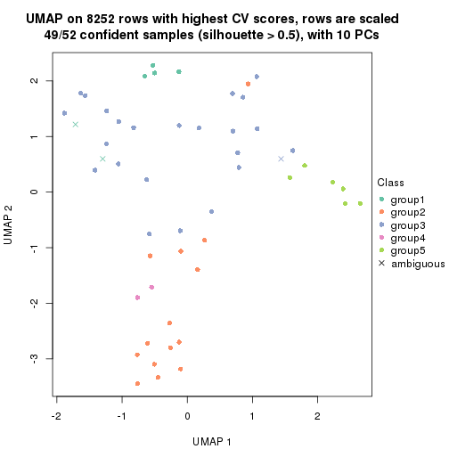
dimension_reduction(res, k = 6, method = "UMAP")
Following heatmap shows how subgroups are split when increasing k:
collect_classes(res)
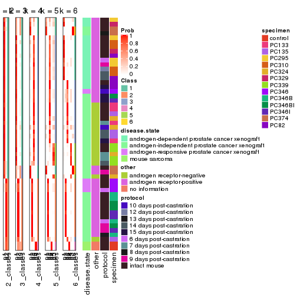
Test correlation between subgroups and known annotations. If the known annotation is numeric, one-way ANOVA test is applied, and if the known annotation is discrete, chi-squared contingency table test is applied.
test_to_known_factors(res)
#> n disease.state(p) other(p) protocol(p) specimen(p) k
#> CV:pam 52 2.20e-03 7.06e-03 0.171 2.97e-04 2
#> CV:pam 46 1.76e-02 3.22e-02 0.330 1.85e-05 3
#> CV:pam 50 4.36e-10 1.32e-10 0.451 2.27e-10 4
#> CV:pam 49 2.80e-10 9.71e-12 0.311 8.53e-15 5
#> CV:pam 50 7.84e-14 2.55e-14 0.283 4.43e-19 6
If matrix rows can be associated to genes, consider to use functional_enrichment(res,
...) to perform function enrichment for the signature genes. See this vignette for more detailed explanations.
The object with results only for a single top-value method and a single partition method can be extracted as:
res = res_list["CV", "mclust"]
# you can also extract it by
# res = res_list["CV:mclust"]
A summary of res and all the functions that can be applied to it:
res
#> A 'ConsensusPartition' object with k = 2, 3, 4, 5, 6.
#> On a matrix with 8252 rows and 52 columns.
#> Top rows (825, 1650, 2476, 3301, 4126) are extracted by 'CV' method.
#> Subgroups are detected by 'mclust' method.
#> Performed in total 1250 partitions by row resampling.
#> Best k for subgroups seems to be 2.
#>
#> Following methods can be applied to this 'ConsensusPartition' object:
#> [1] "cola_report" "collect_classes" "collect_plots"
#> [4] "collect_stats" "colnames" "compare_signatures"
#> [7] "consensus_heatmap" "dimension_reduction" "functional_enrichment"
#> [10] "get_anno_col" "get_anno" "get_classes"
#> [13] "get_consensus" "get_matrix" "get_membership"
#> [16] "get_param" "get_signatures" "get_stats"
#> [19] "is_best_k" "is_stable_k" "membership_heatmap"
#> [22] "ncol" "nrow" "plot_ecdf"
#> [25] "rownames" "select_partition_number" "show"
#> [28] "suggest_best_k" "test_to_known_factors"
collect_plots() function collects all the plots made from res for all k (number of partitions)
into one single page to provide an easy and fast comparison between different k.
collect_plots(res)
The plots are:
k and the heatmap of
predicted classes for each k.k.k.k.All the plots in panels can be made by individual functions and they are plotted later in this section.
select_partition_number() produces several plots showing different
statistics for choosing “optimized” k. There are following statistics:
k;k, the area increased is defined as \(A_k - A_{k-1}\).The detailed explanations of these statistics can be found in the cola vignette.
Generally speaking, lower PAC score, higher mean silhouette score or higher
concordance corresponds to better partition. Rand index and Jaccard index
measure how similar the current partition is compared to partition with k-1.
If they are too similar, we won't accept k is better than k-1.
select_partition_number(res)
The numeric values for all these statistics can be obtained by get_stats().
get_stats(res)
#> k 1-PAC mean_silhouette concordance area_increased Rand Jaccard
#> 2 2 0.299 0.737 0.859 0.3309 0.618 0.618
#> 3 3 0.686 0.839 0.909 0.3028 0.845 0.781
#> 4 4 0.486 0.741 0.829 0.3649 0.725 0.575
#> 5 5 0.531 0.561 0.754 0.2037 0.780 0.464
#> 6 6 0.544 0.508 0.709 0.0742 0.863 0.524
suggest_best_k() suggests the best \(k\) based on these statistics. The rules are as follows:
suggest_best_k(res)
#> [1] 2
Following shows the table of the partitions (You need to click the show/hide
code output link to see it). The membership matrix (columns with name p*)
is inferred by
clue::cl_consensus()
function with the SE method. Basically the value in the membership matrix
represents the probability to belong to a certain group. The finall class
label for an item is determined with the group with highest probability it
belongs to.
In get_classes() function, the entropy is calculated from the membership
matrix and the silhouette score is calculated from the consensus matrix.
cbind(get_classes(res, k = 2), get_membership(res, k = 2))
#> class entropy silhouette p1 p2
#> GSM92537 1 0.5294 0.811 0.880 0.120
#> GSM92539 1 0.5294 0.811 0.880 0.120
#> GSM92541 1 0.6438 0.760 0.836 0.164
#> GSM92543 1 0.5629 0.798 0.868 0.132
#> GSM92545 1 0.6887 0.734 0.816 0.184
#> GSM92546 1 0.5294 0.811 0.880 0.120
#> GSM92533 1 0.0000 0.880 1.000 0.000
#> GSM92535 1 0.6438 0.760 0.836 0.164
#> GSM92540 2 0.9998 0.146 0.492 0.508
#> GSM92538 2 0.9732 0.397 0.404 0.596
#> GSM92542 1 0.7950 0.659 0.760 0.240
#> GSM92544 1 0.5408 0.807 0.876 0.124
#> GSM92536 1 0.6438 0.760 0.836 0.164
#> GSM92534 1 0.0376 0.878 0.996 0.004
#> GSM92547 2 0.9754 0.611 0.408 0.592
#> GSM92549 1 0.7528 0.472 0.784 0.216
#> GSM92550 1 0.5946 0.658 0.856 0.144
#> GSM92548 1 0.0000 0.880 1.000 0.000
#> GSM92551 2 0.9170 0.679 0.332 0.668
#> GSM92553 2 0.9552 0.657 0.376 0.624
#> GSM92559 2 0.9881 0.381 0.436 0.564
#> GSM92561 2 0.8207 0.694 0.256 0.744
#> GSM92555 1 0.0000 0.880 1.000 0.000
#> GSM92557 1 0.9866 -0.360 0.568 0.432
#> GSM92563 1 0.4815 0.822 0.896 0.104
#> GSM92565 1 0.5294 0.811 0.880 0.120
#> GSM92554 2 0.8499 0.694 0.276 0.724
#> GSM92564 1 0.0000 0.880 1.000 0.000
#> GSM92562 2 0.8207 0.694 0.256 0.744
#> GSM92558 2 0.8207 0.694 0.256 0.744
#> GSM92566 1 0.5294 0.811 0.880 0.120
#> GSM92552 2 0.9635 0.638 0.388 0.612
#> GSM92560 1 0.0000 0.880 1.000 0.000
#> GSM92556 1 0.0000 0.880 1.000 0.000
#> GSM92567 1 0.0672 0.876 0.992 0.008
#> GSM92569 1 0.0000 0.880 1.000 0.000
#> GSM92571 1 0.0672 0.876 0.992 0.008
#> GSM92573 1 0.0000 0.880 1.000 0.000
#> GSM92575 1 0.0000 0.880 1.000 0.000
#> GSM92577 1 0.0000 0.880 1.000 0.000
#> GSM92579 1 0.0000 0.880 1.000 0.000
#> GSM92581 1 0.0000 0.880 1.000 0.000
#> GSM92568 1 0.0672 0.876 0.992 0.008
#> GSM92576 1 0.0000 0.880 1.000 0.000
#> GSM92580 1 0.0000 0.880 1.000 0.000
#> GSM92578 1 0.0672 0.876 0.992 0.008
#> GSM92572 1 0.0672 0.876 0.992 0.008
#> GSM92574 1 0.0000 0.880 1.000 0.000
#> GSM92582 1 0.0938 0.868 0.988 0.012
#> GSM92570 1 0.0000 0.880 1.000 0.000
#> GSM92583 2 0.9393 0.454 0.356 0.644
#> GSM92584 2 0.9393 0.454 0.356 0.644
cbind(get_classes(res, k = 3), get_membership(res, k = 3))
#> class entropy silhouette p1 p2 p3
#> GSM92537 1 0.1711 0.885 0.960 0.008 0.032
#> GSM92539 1 0.1015 0.888 0.980 0.008 0.012
#> GSM92541 1 0.5728 0.717 0.720 0.008 0.272
#> GSM92543 1 0.1711 0.885 0.960 0.008 0.032
#> GSM92545 1 0.5553 0.717 0.724 0.004 0.272
#> GSM92546 1 0.5580 0.726 0.736 0.008 0.256
#> GSM92533 1 0.0237 0.888 0.996 0.000 0.004
#> GSM92535 1 0.5553 0.717 0.724 0.004 0.272
#> GSM92540 1 0.6082 0.682 0.692 0.012 0.296
#> GSM92538 1 0.6082 0.682 0.692 0.012 0.296
#> GSM92542 1 0.5928 0.685 0.696 0.008 0.296
#> GSM92544 1 0.1711 0.885 0.960 0.008 0.032
#> GSM92536 1 0.5728 0.717 0.720 0.008 0.272
#> GSM92534 1 0.0237 0.888 0.996 0.000 0.004
#> GSM92547 2 0.0237 0.909 0.000 0.996 0.004
#> GSM92549 1 0.6445 0.615 0.672 0.308 0.020
#> GSM92550 1 0.6445 0.615 0.672 0.308 0.020
#> GSM92548 1 0.0829 0.889 0.984 0.012 0.004
#> GSM92551 2 0.4399 0.614 0.188 0.812 0.000
#> GSM92553 2 0.0237 0.910 0.004 0.996 0.000
#> GSM92559 1 0.7465 0.607 0.656 0.272 0.072
#> GSM92561 2 0.0000 0.910 0.000 1.000 0.000
#> GSM92555 1 0.4931 0.725 0.768 0.232 0.000
#> GSM92557 2 0.0592 0.907 0.012 0.988 0.000
#> GSM92563 1 0.1711 0.885 0.960 0.008 0.032
#> GSM92565 1 0.1711 0.885 0.960 0.008 0.032
#> GSM92554 2 0.0000 0.910 0.000 1.000 0.000
#> GSM92564 1 0.0661 0.889 0.988 0.008 0.004
#> GSM92562 2 0.0000 0.910 0.000 1.000 0.000
#> GSM92558 2 0.2165 0.861 0.064 0.936 0.000
#> GSM92566 1 0.1711 0.885 0.960 0.008 0.032
#> GSM92552 2 0.2165 0.861 0.064 0.936 0.000
#> GSM92560 1 0.0475 0.888 0.992 0.004 0.004
#> GSM92556 1 0.0592 0.889 0.988 0.012 0.000
#> GSM92567 1 0.2096 0.869 0.944 0.004 0.052
#> GSM92569 1 0.1989 0.871 0.948 0.004 0.048
#> GSM92571 1 0.2096 0.869 0.944 0.004 0.052
#> GSM92573 1 0.0829 0.886 0.984 0.004 0.012
#> GSM92575 1 0.0475 0.889 0.992 0.004 0.004
#> GSM92577 1 0.0475 0.888 0.992 0.004 0.004
#> GSM92579 1 0.0237 0.888 0.996 0.000 0.004
#> GSM92581 1 0.0424 0.889 0.992 0.008 0.000
#> GSM92568 1 0.2096 0.869 0.944 0.004 0.052
#> GSM92576 1 0.0475 0.889 0.992 0.004 0.004
#> GSM92580 1 0.0475 0.889 0.992 0.004 0.004
#> GSM92578 1 0.0475 0.888 0.992 0.004 0.004
#> GSM92572 1 0.2096 0.869 0.944 0.004 0.052
#> GSM92574 1 0.2096 0.869 0.944 0.004 0.052
#> GSM92582 1 0.0661 0.889 0.988 0.008 0.004
#> GSM92570 1 0.1989 0.871 0.948 0.004 0.048
#> GSM92583 3 0.1877 1.000 0.012 0.032 0.956
#> GSM92584 3 0.1877 1.000 0.012 0.032 0.956
cbind(get_classes(res, k = 4), get_membership(res, k = 4))
#> class entropy silhouette p1 p2 p3 p4
#> GSM92537 1 0.1022 0.773 0.968 0.000 0.032 0
#> GSM92539 1 0.2530 0.746 0.888 0.000 0.112 0
#> GSM92541 1 0.4008 0.557 0.756 0.000 0.244 0
#> GSM92543 1 0.0000 0.767 1.000 0.000 0.000 0
#> GSM92545 1 0.4008 0.557 0.756 0.000 0.244 0
#> GSM92546 1 0.0592 0.758 0.984 0.000 0.016 0
#> GSM92533 1 0.3486 0.671 0.812 0.000 0.188 0
#> GSM92535 1 0.4008 0.557 0.756 0.000 0.244 0
#> GSM92540 1 0.1389 0.772 0.952 0.000 0.048 0
#> GSM92538 1 0.1389 0.772 0.952 0.000 0.048 0
#> GSM92542 1 0.0707 0.773 0.980 0.000 0.020 0
#> GSM92544 1 0.0000 0.767 1.000 0.000 0.000 0
#> GSM92536 1 0.4008 0.557 0.756 0.000 0.244 0
#> GSM92534 1 0.3528 0.665 0.808 0.000 0.192 0
#> GSM92547 2 0.0000 0.904 0.000 1.000 0.000 0
#> GSM92549 1 0.6476 0.388 0.616 0.272 0.112 0
#> GSM92550 1 0.6763 0.279 0.564 0.320 0.116 0
#> GSM92548 1 0.3172 0.706 0.840 0.000 0.160 0
#> GSM92551 2 0.3528 0.655 0.192 0.808 0.000 0
#> GSM92553 2 0.0000 0.904 0.000 1.000 0.000 0
#> GSM92559 1 0.6522 0.369 0.608 0.280 0.112 0
#> GSM92561 2 0.0000 0.904 0.000 1.000 0.000 0
#> GSM92555 3 0.7526 0.607 0.332 0.200 0.468 0
#> GSM92557 2 0.0000 0.904 0.000 1.000 0.000 0
#> GSM92563 1 0.0817 0.773 0.976 0.000 0.024 0
#> GSM92565 1 0.0000 0.767 1.000 0.000 0.000 0
#> GSM92554 2 0.0000 0.904 0.000 1.000 0.000 0
#> GSM92564 1 0.3024 0.718 0.852 0.000 0.148 0
#> GSM92562 2 0.0000 0.904 0.000 1.000 0.000 0
#> GSM92558 2 0.1940 0.843 0.076 0.924 0.000 0
#> GSM92566 1 0.0000 0.767 1.000 0.000 0.000 0
#> GSM92552 2 0.2469 0.802 0.108 0.892 0.000 0
#> GSM92560 3 0.4193 0.905 0.268 0.000 0.732 0
#> GSM92556 3 0.4804 0.763 0.384 0.000 0.616 0
#> GSM92567 3 0.4008 0.904 0.244 0.000 0.756 0
#> GSM92569 3 0.4134 0.910 0.260 0.000 0.740 0
#> GSM92571 3 0.4008 0.904 0.244 0.000 0.756 0
#> GSM92573 3 0.4134 0.910 0.260 0.000 0.740 0
#> GSM92575 1 0.1302 0.771 0.956 0.000 0.044 0
#> GSM92577 3 0.4746 0.791 0.368 0.000 0.632 0
#> GSM92579 3 0.4843 0.739 0.396 0.000 0.604 0
#> GSM92581 1 0.3266 0.697 0.832 0.000 0.168 0
#> GSM92568 3 0.4008 0.904 0.244 0.000 0.756 0
#> GSM92576 1 0.2530 0.747 0.888 0.000 0.112 0
#> GSM92580 1 0.2760 0.736 0.872 0.000 0.128 0
#> GSM92578 1 0.4994 -0.404 0.520 0.000 0.480 0
#> GSM92572 3 0.4008 0.904 0.244 0.000 0.756 0
#> GSM92574 3 0.4134 0.910 0.260 0.000 0.740 0
#> GSM92582 1 0.2888 0.739 0.872 0.004 0.124 0
#> GSM92570 3 0.4134 0.910 0.260 0.000 0.740 0
#> GSM92583 4 0.0000 1.000 0.000 0.000 0.000 1
#> GSM92584 4 0.0000 1.000 0.000 0.000 0.000 1
cbind(get_classes(res, k = 5), get_membership(res, k = 5))
#> class entropy silhouette p1 p2 p3 p4 p5
#> GSM92537 1 0.0510 0.67456 0.984 0.000 0.000 0.000 0.016
#> GSM92539 1 0.4908 -0.26250 0.608 0.000 0.036 0.000 0.356
#> GSM92541 1 0.3707 0.53282 0.716 0.000 0.000 0.000 0.284
#> GSM92543 1 0.0324 0.67810 0.992 0.000 0.004 0.000 0.004
#> GSM92545 1 0.3707 0.53282 0.716 0.000 0.000 0.000 0.284
#> GSM92546 1 0.2171 0.66837 0.912 0.000 0.024 0.000 0.064
#> GSM92533 5 0.5498 0.83555 0.356 0.000 0.076 0.000 0.568
#> GSM92535 1 0.3707 0.53282 0.716 0.000 0.000 0.000 0.284
#> GSM92540 1 0.1525 0.66209 0.948 0.000 0.036 0.004 0.012
#> GSM92538 1 0.1525 0.66209 0.948 0.000 0.036 0.004 0.012
#> GSM92542 1 0.1547 0.67415 0.948 0.000 0.032 0.004 0.016
#> GSM92544 1 0.0566 0.67685 0.984 0.000 0.012 0.000 0.004
#> GSM92536 1 0.3707 0.53282 0.716 0.000 0.000 0.000 0.284
#> GSM92534 5 0.5790 0.71739 0.444 0.000 0.076 0.004 0.476
#> GSM92547 2 0.0000 0.73416 0.000 1.000 0.000 0.000 0.000
#> GSM92549 2 0.6699 -0.00603 0.340 0.444 0.004 0.000 0.212
#> GSM92550 2 0.6908 -0.01872 0.324 0.444 0.012 0.000 0.220
#> GSM92548 5 0.5123 0.80546 0.384 0.000 0.044 0.000 0.572
#> GSM92551 2 0.2570 0.70070 0.108 0.880 0.008 0.000 0.004
#> GSM92553 2 0.0000 0.73416 0.000 1.000 0.000 0.000 0.000
#> GSM92559 2 0.6397 0.15282 0.364 0.520 0.036 0.000 0.080
#> GSM92561 2 0.0000 0.73416 0.000 1.000 0.000 0.000 0.000
#> GSM92555 3 0.8199 -0.00833 0.256 0.112 0.344 0.000 0.288
#> GSM92557 2 0.0609 0.73164 0.020 0.980 0.000 0.000 0.000
#> GSM92563 1 0.1908 0.61278 0.908 0.000 0.000 0.000 0.092
#> GSM92565 1 0.1671 0.63131 0.924 0.000 0.000 0.000 0.076
#> GSM92554 2 0.0000 0.73416 0.000 1.000 0.000 0.000 0.000
#> GSM92564 5 0.4624 0.83801 0.340 0.000 0.024 0.000 0.636
#> GSM92562 2 0.0000 0.73416 0.000 1.000 0.000 0.000 0.000
#> GSM92558 2 0.1768 0.73082 0.072 0.924 0.004 0.000 0.000
#> GSM92566 1 0.1965 0.63142 0.904 0.000 0.000 0.000 0.096
#> GSM92552 2 0.1831 0.72925 0.076 0.920 0.004 0.000 0.000
#> GSM92560 3 0.5900 0.59830 0.212 0.000 0.600 0.000 0.188
#> GSM92556 5 0.6268 0.59483 0.260 0.000 0.204 0.000 0.536
#> GSM92567 3 0.0162 0.55070 0.004 0.000 0.996 0.000 0.000
#> GSM92569 3 0.5159 0.67557 0.188 0.000 0.688 0.000 0.124
#> GSM92571 3 0.0162 0.55070 0.004 0.000 0.996 0.000 0.000
#> GSM92573 3 0.5703 0.62990 0.188 0.000 0.628 0.000 0.184
#> GSM92575 1 0.5048 -0.61136 0.492 0.000 0.032 0.000 0.476
#> GSM92577 3 0.6477 0.35919 0.248 0.000 0.496 0.000 0.256
#> GSM92579 5 0.5359 0.77073 0.256 0.000 0.100 0.000 0.644
#> GSM92581 5 0.4786 0.84537 0.308 0.000 0.040 0.000 0.652
#> GSM92568 3 0.0162 0.55070 0.004 0.000 0.996 0.000 0.000
#> GSM92576 1 0.5178 -0.67362 0.484 0.000 0.040 0.000 0.476
#> GSM92580 5 0.4718 0.83328 0.344 0.000 0.028 0.000 0.628
#> GSM92578 3 0.6063 0.45044 0.316 0.000 0.540 0.000 0.144
#> GSM92572 3 0.0162 0.55070 0.004 0.000 0.996 0.000 0.000
#> GSM92574 3 0.5159 0.67557 0.188 0.000 0.688 0.000 0.124
#> GSM92582 5 0.4251 0.81333 0.372 0.000 0.004 0.000 0.624
#> GSM92570 3 0.5159 0.67557 0.188 0.000 0.688 0.000 0.124
#> GSM92583 4 0.0000 1.00000 0.000 0.000 0.000 1.000 0.000
#> GSM92584 4 0.0000 1.00000 0.000 0.000 0.000 1.000 0.000
cbind(get_classes(res, k = 6), get_membership(res, k = 6))
#> class entropy silhouette p1 p2 p3 p4 p5 p6
#> GSM92537 1 0.4417 0.2711 0.556 0.000 0.000 0.000 0.416 0.028
#> GSM92539 5 0.4499 0.2305 0.288 0.000 0.000 0.000 0.652 0.060
#> GSM92541 1 0.0508 0.3917 0.984 0.000 0.000 0.000 0.004 0.012
#> GSM92543 1 0.4388 0.3200 0.572 0.000 0.000 0.000 0.400 0.028
#> GSM92545 1 0.0603 0.4026 0.980 0.000 0.000 0.000 0.004 0.016
#> GSM92546 1 0.3381 0.3301 0.800 0.000 0.000 0.000 0.156 0.044
#> GSM92533 5 0.4766 0.4426 0.096 0.000 0.100 0.000 0.740 0.064
#> GSM92535 1 0.0260 0.3999 0.992 0.000 0.000 0.000 0.000 0.008
#> GSM92540 6 0.6327 0.9753 0.316 0.000 0.000 0.028 0.188 0.468
#> GSM92538 6 0.6285 0.9755 0.316 0.000 0.000 0.028 0.180 0.476
#> GSM92542 1 0.4809 0.1380 0.700 0.000 0.000 0.020 0.188 0.092
#> GSM92544 1 0.4002 0.3115 0.588 0.000 0.000 0.000 0.404 0.008
#> GSM92536 1 0.0260 0.3999 0.992 0.000 0.000 0.000 0.000 0.008
#> GSM92534 5 0.6792 0.2144 0.240 0.000 0.140 0.016 0.528 0.076
#> GSM92547 2 0.2416 0.7705 0.000 0.844 0.000 0.000 0.000 0.156
#> GSM92549 5 0.6209 0.2304 0.016 0.240 0.000 0.000 0.480 0.264
#> GSM92550 5 0.6214 0.2115 0.012 0.260 0.000 0.000 0.460 0.268
#> GSM92548 5 0.3912 0.4685 0.044 0.000 0.004 0.000 0.748 0.204
#> GSM92551 2 0.2511 0.8295 0.000 0.880 0.000 0.000 0.056 0.064
#> GSM92553 2 0.0260 0.8539 0.000 0.992 0.000 0.000 0.000 0.008
#> GSM92559 2 0.7778 -0.0266 0.100 0.396 0.000 0.036 0.208 0.260
#> GSM92561 2 0.0000 0.8542 0.000 1.000 0.000 0.000 0.000 0.000
#> GSM92555 5 0.7323 -0.0369 0.000 0.136 0.248 0.000 0.404 0.212
#> GSM92557 2 0.0993 0.8528 0.012 0.964 0.000 0.000 0.000 0.024
#> GSM92563 5 0.5480 -0.3532 0.432 0.000 0.000 0.000 0.444 0.124
#> GSM92565 1 0.5686 0.3054 0.472 0.000 0.000 0.000 0.364 0.164
#> GSM92554 2 0.0000 0.8542 0.000 1.000 0.000 0.000 0.000 0.000
#> GSM92564 5 0.2714 0.4988 0.060 0.000 0.004 0.000 0.872 0.064
#> GSM92562 2 0.0000 0.8542 0.000 1.000 0.000 0.000 0.000 0.000
#> GSM92558 2 0.1995 0.8391 0.000 0.912 0.000 0.000 0.052 0.036
#> GSM92566 1 0.5686 0.3054 0.472 0.000 0.000 0.000 0.364 0.164
#> GSM92552 2 0.2389 0.8343 0.000 0.888 0.000 0.000 0.052 0.060
#> GSM92560 3 0.4482 0.6153 0.000 0.000 0.580 0.000 0.384 0.036
#> GSM92556 5 0.5614 0.0998 0.000 0.000 0.256 0.000 0.540 0.204
#> GSM92567 3 0.0632 0.5865 0.000 0.000 0.976 0.000 0.000 0.024
#> GSM92569 3 0.4671 0.6949 0.000 0.000 0.628 0.000 0.304 0.068
#> GSM92571 3 0.0632 0.5865 0.000 0.000 0.976 0.000 0.000 0.024
#> GSM92573 3 0.4252 0.6446 0.000 0.000 0.604 0.000 0.372 0.024
#> GSM92575 5 0.3979 0.3268 0.256 0.000 0.000 0.000 0.708 0.036
#> GSM92577 3 0.5031 0.5738 0.004 0.000 0.528 0.000 0.404 0.064
#> GSM92579 5 0.3694 0.3790 0.008 0.000 0.156 0.000 0.788 0.048
#> GSM92581 5 0.2563 0.5114 0.044 0.000 0.028 0.000 0.892 0.036
#> GSM92568 3 0.0632 0.5865 0.000 0.000 0.976 0.000 0.000 0.024
#> GSM92576 5 0.5011 0.3718 0.216 0.000 0.028 0.000 0.676 0.080
#> GSM92580 5 0.2220 0.5026 0.044 0.000 0.012 0.000 0.908 0.036
#> GSM92578 3 0.5434 0.5698 0.048 0.000 0.544 0.000 0.368 0.040
#> GSM92572 3 0.0632 0.5865 0.000 0.000 0.976 0.000 0.000 0.024
#> GSM92574 3 0.4764 0.6939 0.000 0.000 0.628 0.000 0.292 0.080
#> GSM92582 5 0.3029 0.4644 0.036 0.004 0.000 0.000 0.840 0.120
#> GSM92570 3 0.4637 0.6944 0.000 0.000 0.628 0.000 0.308 0.064
#> GSM92583 4 0.0000 1.0000 0.000 0.000 0.000 1.000 0.000 0.000
#> GSM92584 4 0.0000 1.0000 0.000 0.000 0.000 1.000 0.000 0.000
Heatmaps for the consensus matrix. It visualizes the probability of two samples to be in a same group.
consensus_heatmap(res, k = 2)
consensus_heatmap(res, k = 3)

consensus_heatmap(res, k = 4)
consensus_heatmap(res, k = 5)
consensus_heatmap(res, k = 6)
Heatmaps for the membership of samples in all partitions to see how consistent they are:
membership_heatmap(res, k = 2)
membership_heatmap(res, k = 3)
membership_heatmap(res, k = 4)
membership_heatmap(res, k = 5)
membership_heatmap(res, k = 6)
As soon as we have had the classes for columns, we can look for signatures which are significantly different between classes which can be candidate marks for certain classes. Following are the heatmaps for signatures.
Signature heatmaps where rows are scaled:
get_signatures(res, k = 2)
get_signatures(res, k = 3)
get_signatures(res, k = 4)
get_signatures(res, k = 5)
get_signatures(res, k = 6)
Signature heatmaps where rows are not scaled:
get_signatures(res, k = 2, scale_rows = FALSE)
get_signatures(res, k = 3, scale_rows = FALSE)
get_signatures(res, k = 4, scale_rows = FALSE)
get_signatures(res, k = 5, scale_rows = FALSE)
get_signatures(res, k = 6, scale_rows = FALSE)
Compare the overlap of signatures from different k:
compare_signatures(res)
get_signature() returns a data frame invisibly. TO get the list of signatures, the function
call should be assigned to a variable explicitly. In following code, if plot argument is set
to FALSE, no heatmap is plotted while only the differential analysis is performed.
# code only for demonstration
tb = get_signature(res, k = ..., plot = FALSE)
An example of the output of tb is:
#> which_row fdr mean_1 mean_2 scaled_mean_1 scaled_mean_2 km
#> 1 38 0.042760348 8.373488 9.131774 -0.5533452 0.5164555 1
#> 2 40 0.018707592 7.106213 8.469186 -0.6173731 0.5762149 1
#> 3 55 0.019134737 10.221463 11.207825 -0.6159697 0.5749050 1
#> 4 59 0.006059896 5.921854 7.869574 -0.6899429 0.6439467 1
#> 5 60 0.018055526 8.928898 10.211722 -0.6204761 0.5791110 1
#> 6 98 0.009384629 15.714769 14.887706 0.6635654 -0.6193277 2
...
The columns in tb are:
which_row: row indices corresponding to the input matrix.fdr: FDR for the differential test. mean_x: The mean value in group x.scaled_mean_x: The mean value in group x after rows are scaled.km: Row groups if k-means clustering is applied to rows.UMAP plot which shows how samples are separated.
dimension_reduction(res, k = 2, method = "UMAP")
dimension_reduction(res, k = 3, method = "UMAP")
dimension_reduction(res, k = 4, method = "UMAP")
dimension_reduction(res, k = 5, method = "UMAP")
dimension_reduction(res, k = 6, method = "UMAP")
Following heatmap shows how subgroups are split when increasing k:
collect_classes(res)
Test correlation between subgroups and known annotations. If the known annotation is numeric, one-way ANOVA test is applied, and if the known annotation is discrete, chi-squared contingency table test is applied.
test_to_known_factors(res)
#> n disease.state(p) other(p) protocol(p) specimen(p) k
#> CV:mclust 45 1.55e-01 5.62e-02 0.108 1.76e-03 2
#> CV:mclust 52 2.37e-10 1.03e-11 0.756 3.99e-08 3
#> CV:mclust 48 2.14e-11 2.40e-12 0.811 9.33e-10 4
#> CV:mclust 43 4.60e-10 4.40e-12 0.685 4.82e-11 5
#> CV:mclust 26 2.98e-07 9.62e-08 0.485 5.23e-08 6
If matrix rows can be associated to genes, consider to use functional_enrichment(res,
...) to perform function enrichment for the signature genes. See this vignette for more detailed explanations.
The object with results only for a single top-value method and a single partition method can be extracted as:
res = res_list["CV", "NMF"]
# you can also extract it by
# res = res_list["CV:NMF"]
A summary of res and all the functions that can be applied to it:
res
#> A 'ConsensusPartition' object with k = 2, 3, 4, 5, 6.
#> On a matrix with 8252 rows and 52 columns.
#> Top rows (825, 1650, 2476, 3301, 4126) are extracted by 'CV' method.
#> Subgroups are detected by 'NMF' method.
#> Performed in total 1250 partitions by row resampling.
#> Best k for subgroups seems to be 2.
#>
#> Following methods can be applied to this 'ConsensusPartition' object:
#> [1] "cola_report" "collect_classes" "collect_plots"
#> [4] "collect_stats" "colnames" "compare_signatures"
#> [7] "consensus_heatmap" "dimension_reduction" "functional_enrichment"
#> [10] "get_anno_col" "get_anno" "get_classes"
#> [13] "get_consensus" "get_matrix" "get_membership"
#> [16] "get_param" "get_signatures" "get_stats"
#> [19] "is_best_k" "is_stable_k" "membership_heatmap"
#> [22] "ncol" "nrow" "plot_ecdf"
#> [25] "rownames" "select_partition_number" "show"
#> [28] "suggest_best_k" "test_to_known_factors"
collect_plots() function collects all the plots made from res for all k (number of partitions)
into one single page to provide an easy and fast comparison between different k.
collect_plots(res)
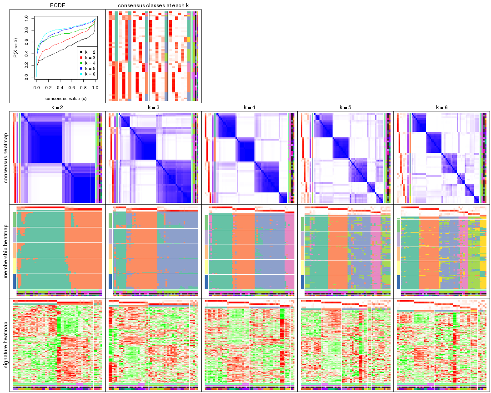
The plots are:
k and the heatmap of
predicted classes for each k.k.k.k.All the plots in panels can be made by individual functions and they are plotted later in this section.
select_partition_number() produces several plots showing different
statistics for choosing “optimized” k. There are following statistics:
k;k, the area increased is defined as \(A_k - A_{k-1}\).The detailed explanations of these statistics can be found in the cola vignette.
Generally speaking, lower PAC score, higher mean silhouette score or higher
concordance corresponds to better partition. Rand index and Jaccard index
measure how similar the current partition is compared to partition with k-1.
If they are too similar, we won't accept k is better than k-1.
select_partition_number(res)
The numeric values for all these statistics can be obtained by get_stats().
get_stats(res)
#> k 1-PAC mean_silhouette concordance area_increased Rand Jaccard
#> 2 2 0.694 0.830 0.930 0.5009 0.497 0.497
#> 3 3 0.650 0.752 0.874 0.2510 0.753 0.559
#> 4 4 0.808 0.830 0.921 0.1757 0.752 0.441
#> 5 5 0.726 0.656 0.814 0.0661 0.919 0.707
#> 6 6 0.736 0.753 0.831 0.0422 0.943 0.742
suggest_best_k() suggests the best \(k\) based on these statistics. The rules are as follows:
suggest_best_k(res)
#> [1] 2
Following shows the table of the partitions (You need to click the show/hide
code output link to see it). The membership matrix (columns with name p*)
is inferred by
clue::cl_consensus()
function with the SE method. Basically the value in the membership matrix
represents the probability to belong to a certain group. The finall class
label for an item is determined with the group with highest probability it
belongs to.
In get_classes() function, the entropy is calculated from the membership
matrix and the silhouette score is calculated from the consensus matrix.
cbind(get_classes(res, k = 2), get_membership(res, k = 2))
#> class entropy silhouette p1 p2
#> GSM92537 1 0.0672 0.9123 0.992 0.008
#> GSM92539 2 0.7950 0.6756 0.240 0.760
#> GSM92541 1 0.0000 0.9149 1.000 0.000
#> GSM92543 1 0.0000 0.9149 1.000 0.000
#> GSM92545 1 0.0000 0.9149 1.000 0.000
#> GSM92546 1 0.0000 0.9149 1.000 0.000
#> GSM92533 1 0.0938 0.9102 0.988 0.012
#> GSM92535 1 0.0000 0.9149 1.000 0.000
#> GSM92540 1 0.4431 0.8484 0.908 0.092
#> GSM92538 2 0.9491 0.4131 0.368 0.632
#> GSM92542 1 0.0000 0.9149 1.000 0.000
#> GSM92544 1 0.0000 0.9149 1.000 0.000
#> GSM92536 1 0.0000 0.9149 1.000 0.000
#> GSM92534 1 0.1184 0.9080 0.984 0.016
#> GSM92547 2 0.0000 0.9245 0.000 1.000
#> GSM92549 2 0.6973 0.7444 0.188 0.812
#> GSM92550 2 0.1843 0.9083 0.028 0.972
#> GSM92548 2 0.0000 0.9245 0.000 1.000
#> GSM92551 2 0.0000 0.9245 0.000 1.000
#> GSM92553 2 0.0000 0.9245 0.000 1.000
#> GSM92559 2 0.0000 0.9245 0.000 1.000
#> GSM92561 2 0.0000 0.9245 0.000 1.000
#> GSM92555 2 0.0000 0.9245 0.000 1.000
#> GSM92557 2 0.0000 0.9245 0.000 1.000
#> GSM92563 1 0.0672 0.9124 0.992 0.008
#> GSM92565 1 0.0000 0.9149 1.000 0.000
#> GSM92554 2 0.0000 0.9245 0.000 1.000
#> GSM92564 1 0.9710 0.3311 0.600 0.400
#> GSM92562 2 0.0000 0.9245 0.000 1.000
#> GSM92558 2 0.0000 0.9245 0.000 1.000
#> GSM92566 1 0.0000 0.9149 1.000 0.000
#> GSM92552 2 0.0000 0.9245 0.000 1.000
#> GSM92560 2 0.5294 0.8279 0.120 0.880
#> GSM92556 2 0.0000 0.9245 0.000 1.000
#> GSM92567 2 0.9209 0.4897 0.336 0.664
#> GSM92569 1 0.9954 0.1498 0.540 0.460
#> GSM92571 1 0.8386 0.6259 0.732 0.268
#> GSM92573 2 0.2236 0.9043 0.036 0.964
#> GSM92575 1 0.0000 0.9149 1.000 0.000
#> GSM92577 1 0.0000 0.9149 1.000 0.000
#> GSM92579 1 0.3733 0.8701 0.928 0.072
#> GSM92581 1 0.2043 0.8986 0.968 0.032
#> GSM92568 2 0.5737 0.8145 0.136 0.864
#> GSM92576 1 0.0000 0.9149 1.000 0.000
#> GSM92580 1 0.0000 0.9149 1.000 0.000
#> GSM92578 1 0.0000 0.9149 1.000 0.000
#> GSM92572 1 0.8861 0.5615 0.696 0.304
#> GSM92574 1 0.0000 0.9149 1.000 0.000
#> GSM92582 1 0.0938 0.9106 0.988 0.012
#> GSM92570 1 0.9996 0.0413 0.512 0.488
#> GSM92583 2 0.0000 0.9245 0.000 1.000
#> GSM92584 2 0.0000 0.9245 0.000 1.000
cbind(get_classes(res, k = 3), get_membership(res, k = 3))
#> class entropy silhouette p1 p2 p3
#> GSM92537 1 0.6204 0.0608 0.576 0.000 0.424
#> GSM92539 1 0.3461 0.7988 0.900 0.076 0.024
#> GSM92541 3 0.3116 0.8553 0.108 0.000 0.892
#> GSM92543 3 0.3412 0.8478 0.124 0.000 0.876
#> GSM92545 3 0.3116 0.8553 0.108 0.000 0.892
#> GSM92546 3 0.2356 0.8637 0.072 0.000 0.928
#> GSM92533 3 0.1964 0.8625 0.056 0.000 0.944
#> GSM92535 3 0.3340 0.8499 0.120 0.000 0.880
#> GSM92540 1 0.1585 0.7928 0.964 0.028 0.008
#> GSM92538 1 0.2269 0.8002 0.944 0.040 0.016
#> GSM92542 3 0.2878 0.8532 0.096 0.000 0.904
#> GSM92544 3 0.3267 0.8516 0.116 0.000 0.884
#> GSM92536 3 0.3116 0.8553 0.108 0.000 0.892
#> GSM92534 3 0.4702 0.7081 0.212 0.000 0.788
#> GSM92547 2 0.0237 0.8660 0.004 0.996 0.000
#> GSM92549 2 0.1753 0.8395 0.048 0.952 0.000
#> GSM92550 2 0.0747 0.8592 0.016 0.984 0.000
#> GSM92548 2 0.2663 0.8291 0.044 0.932 0.024
#> GSM92551 2 0.0237 0.8660 0.004 0.996 0.000
#> GSM92553 2 0.0237 0.8660 0.004 0.996 0.000
#> GSM92559 1 0.3752 0.7485 0.856 0.144 0.000
#> GSM92561 2 0.0237 0.8660 0.004 0.996 0.000
#> GSM92555 2 0.0000 0.8649 0.000 1.000 0.000
#> GSM92557 2 0.0237 0.8660 0.004 0.996 0.000
#> GSM92563 3 0.5174 0.8271 0.092 0.076 0.832
#> GSM92565 3 0.2448 0.8626 0.076 0.000 0.924
#> GSM92554 2 0.0237 0.8660 0.004 0.996 0.000
#> GSM92564 2 0.7920 0.0335 0.056 0.476 0.468
#> GSM92562 2 0.0237 0.8660 0.004 0.996 0.000
#> GSM92558 2 0.0237 0.8660 0.004 0.996 0.000
#> GSM92566 3 0.2356 0.8629 0.072 0.000 0.928
#> GSM92552 2 0.0237 0.8660 0.004 0.996 0.000
#> GSM92560 2 0.2749 0.8230 0.012 0.924 0.064
#> GSM92556 2 0.1453 0.8531 0.008 0.968 0.024
#> GSM92567 3 0.8288 0.2753 0.332 0.096 0.572
#> GSM92569 2 0.6126 0.5139 0.004 0.644 0.352
#> GSM92571 3 0.6034 0.6402 0.212 0.036 0.752
#> GSM92573 2 0.7186 0.5985 0.080 0.696 0.224
#> GSM92575 3 0.0237 0.8607 0.004 0.000 0.996
#> GSM92577 3 0.0475 0.8574 0.004 0.004 0.992
#> GSM92579 3 0.3644 0.7597 0.004 0.124 0.872
#> GSM92581 3 0.1585 0.8567 0.008 0.028 0.964
#> GSM92568 1 0.9724 0.1807 0.412 0.224 0.364
#> GSM92576 3 0.0000 0.8596 0.000 0.000 1.000
#> GSM92580 3 0.0237 0.8584 0.004 0.000 0.996
#> GSM92578 3 0.0475 0.8574 0.004 0.004 0.992
#> GSM92572 3 0.5690 0.5405 0.288 0.004 0.708
#> GSM92574 3 0.2096 0.8364 0.004 0.052 0.944
#> GSM92582 3 0.6546 0.6205 0.044 0.240 0.716
#> GSM92570 2 0.6460 0.3441 0.004 0.556 0.440
#> GSM92583 1 0.2448 0.7992 0.924 0.076 0.000
#> GSM92584 1 0.2625 0.7955 0.916 0.084 0.000
cbind(get_classes(res, k = 4), get_membership(res, k = 4))
#> class entropy silhouette p1 p2 p3 p4
#> GSM92537 1 0.1854 0.8792 0.940 0.012 0.000 0.048
#> GSM92539 4 0.4360 0.6449 0.248 0.008 0.000 0.744
#> GSM92541 1 0.0188 0.9135 0.996 0.000 0.004 0.000
#> GSM92543 1 0.0524 0.9124 0.988 0.000 0.004 0.008
#> GSM92545 1 0.0000 0.9139 1.000 0.000 0.000 0.000
#> GSM92546 1 0.0188 0.9135 0.996 0.000 0.004 0.000
#> GSM92533 1 0.5674 0.6284 0.720 0.000 0.148 0.132
#> GSM92535 1 0.0000 0.9139 1.000 0.000 0.000 0.000
#> GSM92540 4 0.0921 0.9075 0.028 0.000 0.000 0.972
#> GSM92538 4 0.0188 0.9174 0.000 0.000 0.004 0.996
#> GSM92542 1 0.1151 0.9042 0.968 0.000 0.008 0.024
#> GSM92544 1 0.0188 0.9135 0.996 0.000 0.004 0.000
#> GSM92536 1 0.0000 0.9139 1.000 0.000 0.000 0.000
#> GSM92534 1 0.7307 0.0888 0.468 0.000 0.156 0.376
#> GSM92547 2 0.0188 0.9185 0.000 0.996 0.000 0.004
#> GSM92549 2 0.0000 0.9210 0.000 1.000 0.000 0.000
#> GSM92550 2 0.0188 0.9194 0.000 0.996 0.004 0.000
#> GSM92548 2 0.2412 0.8426 0.008 0.908 0.000 0.084
#> GSM92551 2 0.0000 0.9210 0.000 1.000 0.000 0.000
#> GSM92553 2 0.0188 0.9194 0.000 0.996 0.004 0.000
#> GSM92559 4 0.2216 0.8566 0.000 0.092 0.000 0.908
#> GSM92561 2 0.0000 0.9210 0.000 1.000 0.000 0.000
#> GSM92555 2 0.4522 0.5072 0.000 0.680 0.320 0.000
#> GSM92557 2 0.0188 0.9194 0.000 0.996 0.004 0.000
#> GSM92563 1 0.2334 0.8340 0.908 0.088 0.000 0.004
#> GSM92565 1 0.0592 0.9073 0.984 0.016 0.000 0.000
#> GSM92554 2 0.0000 0.9210 0.000 1.000 0.000 0.000
#> GSM92564 2 0.5193 0.2754 0.412 0.580 0.008 0.000
#> GSM92562 2 0.0000 0.9210 0.000 1.000 0.000 0.000
#> GSM92558 2 0.0000 0.9210 0.000 1.000 0.000 0.000
#> GSM92566 1 0.0524 0.9113 0.988 0.008 0.004 0.000
#> GSM92552 2 0.0000 0.9210 0.000 1.000 0.000 0.000
#> GSM92560 3 0.1302 0.8693 0.000 0.044 0.956 0.000
#> GSM92556 3 0.3219 0.7999 0.000 0.112 0.868 0.020
#> GSM92567 3 0.0188 0.8856 0.000 0.000 0.996 0.004
#> GSM92569 3 0.0657 0.8857 0.004 0.012 0.984 0.000
#> GSM92571 3 0.0188 0.8856 0.000 0.000 0.996 0.004
#> GSM92573 3 0.0188 0.8852 0.000 0.004 0.996 0.000
#> GSM92575 3 0.4713 0.5433 0.360 0.000 0.640 0.000
#> GSM92577 3 0.0707 0.8871 0.020 0.000 0.980 0.000
#> GSM92579 3 0.1022 0.8833 0.032 0.000 0.968 0.000
#> GSM92581 3 0.3662 0.8101 0.148 0.012 0.836 0.004
#> GSM92568 3 0.0817 0.8794 0.000 0.000 0.976 0.024
#> GSM92576 3 0.3837 0.7473 0.224 0.000 0.776 0.000
#> GSM92580 3 0.4477 0.6316 0.312 0.000 0.688 0.000
#> GSM92578 3 0.1022 0.8848 0.032 0.000 0.968 0.000
#> GSM92572 3 0.0336 0.8853 0.000 0.000 0.992 0.008
#> GSM92574 3 0.0592 0.8873 0.016 0.000 0.984 0.000
#> GSM92582 3 0.7036 0.5531 0.216 0.208 0.576 0.000
#> GSM92570 3 0.0524 0.8863 0.004 0.008 0.988 0.000
#> GSM92583 4 0.0188 0.9174 0.000 0.000 0.004 0.996
#> GSM92584 4 0.0336 0.9165 0.000 0.000 0.008 0.992
cbind(get_classes(res, k = 5), get_membership(res, k = 5))
#> class entropy silhouette p1 p2 p3 p4 p5
#> GSM92537 1 0.2149 0.7698 0.916 0.000 0.000 0.048 0.036
#> GSM92539 4 0.4746 0.2971 0.376 0.000 0.000 0.600 0.024
#> GSM92541 1 0.0404 0.7932 0.988 0.000 0.000 0.000 0.012
#> GSM92543 1 0.0912 0.7901 0.972 0.000 0.000 0.012 0.016
#> GSM92545 1 0.0000 0.7949 1.000 0.000 0.000 0.000 0.000
#> GSM92546 1 0.0290 0.7949 0.992 0.000 0.000 0.000 0.008
#> GSM92533 1 0.5483 0.5656 0.728 0.000 0.104 0.080 0.088
#> GSM92535 1 0.0451 0.7950 0.988 0.000 0.000 0.004 0.008
#> GSM92540 4 0.1768 0.7973 0.072 0.000 0.000 0.924 0.004
#> GSM92538 4 0.2304 0.7882 0.008 0.000 0.000 0.892 0.100
#> GSM92542 1 0.2905 0.7286 0.868 0.000 0.000 0.036 0.096
#> GSM92544 1 0.0324 0.7953 0.992 0.000 0.000 0.004 0.004
#> GSM92536 1 0.0451 0.7955 0.988 0.000 0.000 0.004 0.008
#> GSM92534 1 0.7751 0.0643 0.440 0.000 0.112 0.304 0.144
#> GSM92547 2 0.1901 0.9293 0.000 0.932 0.004 0.024 0.040
#> GSM92549 2 0.0510 0.9617 0.000 0.984 0.000 0.000 0.016
#> GSM92550 2 0.0771 0.9580 0.000 0.976 0.004 0.000 0.020
#> GSM92548 2 0.3695 0.7710 0.000 0.800 0.000 0.036 0.164
#> GSM92551 2 0.0510 0.9588 0.000 0.984 0.000 0.000 0.016
#> GSM92553 2 0.0000 0.9631 0.000 1.000 0.000 0.000 0.000
#> GSM92559 4 0.3246 0.6761 0.000 0.184 0.000 0.808 0.008
#> GSM92561 2 0.0609 0.9591 0.000 0.980 0.000 0.000 0.020
#> GSM92555 3 0.6352 0.0899 0.000 0.404 0.488 0.032 0.076
#> GSM92557 2 0.0290 0.9632 0.000 0.992 0.000 0.000 0.008
#> GSM92563 1 0.6010 0.4828 0.560 0.060 0.012 0.012 0.356
#> GSM92565 1 0.5176 0.5373 0.616 0.024 0.020 0.000 0.340
#> GSM92554 2 0.0510 0.9607 0.000 0.984 0.000 0.000 0.016
#> GSM92564 5 0.8236 -0.0555 0.220 0.284 0.112 0.004 0.380
#> GSM92562 2 0.0290 0.9635 0.000 0.992 0.000 0.000 0.008
#> GSM92558 2 0.0290 0.9635 0.000 0.992 0.000 0.000 0.008
#> GSM92566 1 0.5161 0.5398 0.620 0.024 0.020 0.000 0.336
#> GSM92552 2 0.0703 0.9554 0.000 0.976 0.000 0.000 0.024
#> GSM92560 3 0.3120 0.6438 0.000 0.052 0.872 0.012 0.064
#> GSM92556 3 0.5844 0.4505 0.000 0.040 0.680 0.152 0.128
#> GSM92567 3 0.2179 0.6793 0.000 0.000 0.896 0.004 0.100
#> GSM92569 3 0.0404 0.7023 0.000 0.000 0.988 0.000 0.012
#> GSM92571 3 0.1544 0.6985 0.000 0.000 0.932 0.000 0.068
#> GSM92573 3 0.3835 0.5505 0.000 0.012 0.744 0.000 0.244
#> GSM92575 3 0.6635 -0.4592 0.224 0.000 0.416 0.000 0.360
#> GSM92577 3 0.3430 0.4382 0.004 0.000 0.776 0.000 0.220
#> GSM92579 5 0.6527 0.3557 0.048 0.060 0.388 0.004 0.500
#> GSM92581 5 0.7787 0.5219 0.172 0.076 0.340 0.004 0.408
#> GSM92568 3 0.3283 0.6463 0.000 0.000 0.832 0.028 0.140
#> GSM92576 5 0.6381 0.3506 0.168 0.000 0.384 0.000 0.448
#> GSM92580 5 0.7549 0.5264 0.236 0.048 0.308 0.000 0.408
#> GSM92578 3 0.1830 0.6742 0.008 0.000 0.924 0.000 0.068
#> GSM92572 3 0.2806 0.6634 0.000 0.000 0.844 0.004 0.152
#> GSM92574 3 0.0880 0.7017 0.000 0.000 0.968 0.000 0.032
#> GSM92582 5 0.8703 0.4943 0.188 0.168 0.268 0.016 0.360
#> GSM92570 3 0.0609 0.7014 0.000 0.000 0.980 0.000 0.020
#> GSM92583 4 0.0162 0.8107 0.000 0.000 0.000 0.996 0.004
#> GSM92584 4 0.0693 0.8086 0.000 0.000 0.008 0.980 0.012
cbind(get_classes(res, k = 6), get_membership(res, k = 6))
#> class entropy silhouette p1 p2 p3 p4 p5 p6
#> GSM92537 1 0.1738 0.8434 0.928 0.000 0.000 0.052 0.004 0.016
#> GSM92539 4 0.4448 0.0254 0.464 0.000 0.008 0.516 0.008 0.004
#> GSM92541 1 0.0820 0.8861 0.972 0.000 0.000 0.000 0.016 0.012
#> GSM92543 1 0.0862 0.8875 0.972 0.000 0.000 0.004 0.016 0.008
#> GSM92545 1 0.0146 0.8914 0.996 0.000 0.000 0.000 0.004 0.000
#> GSM92546 1 0.0000 0.8910 1.000 0.000 0.000 0.000 0.000 0.000
#> GSM92533 1 0.4264 0.7438 0.792 0.000 0.108 0.028 0.040 0.032
#> GSM92535 1 0.0000 0.8910 1.000 0.000 0.000 0.000 0.000 0.000
#> GSM92540 4 0.2738 0.6315 0.176 0.000 0.000 0.820 0.004 0.000
#> GSM92538 4 0.4872 0.5982 0.008 0.000 0.008 0.704 0.156 0.124
#> GSM92542 1 0.3196 0.8012 0.844 0.000 0.004 0.004 0.076 0.072
#> GSM92544 1 0.0146 0.8914 0.996 0.000 0.000 0.000 0.004 0.000
#> GSM92536 1 0.0000 0.8910 1.000 0.000 0.000 0.000 0.000 0.000
#> GSM92534 1 0.7124 0.4230 0.560 0.000 0.160 0.080 0.120 0.080
#> GSM92547 2 0.2119 0.9071 0.000 0.912 0.008 0.036 0.000 0.044
#> GSM92549 2 0.0862 0.9439 0.004 0.972 0.000 0.000 0.016 0.008
#> GSM92550 2 0.1320 0.9319 0.000 0.948 0.016 0.000 0.000 0.036
#> GSM92548 2 0.5340 0.6301 0.004 0.680 0.008 0.028 0.188 0.092
#> GSM92551 2 0.0891 0.9430 0.000 0.968 0.000 0.000 0.008 0.024
#> GSM92553 2 0.0436 0.9462 0.000 0.988 0.004 0.000 0.004 0.004
#> GSM92559 4 0.4044 0.4316 0.000 0.312 0.000 0.668 0.012 0.008
#> GSM92561 2 0.0717 0.9455 0.000 0.976 0.000 0.000 0.016 0.008
#> GSM92555 3 0.4992 0.6157 0.000 0.144 0.728 0.072 0.016 0.040
#> GSM92557 2 0.0508 0.9462 0.000 0.984 0.004 0.000 0.012 0.000
#> GSM92563 6 0.4222 0.8865 0.216 0.024 0.004 0.004 0.016 0.736
#> GSM92565 6 0.4190 0.8886 0.260 0.012 0.004 0.000 0.020 0.704
#> GSM92554 2 0.0603 0.9454 0.000 0.980 0.000 0.000 0.004 0.016
#> GSM92564 6 0.4812 0.7644 0.096 0.096 0.036 0.000 0.020 0.752
#> GSM92562 2 0.0260 0.9459 0.000 0.992 0.000 0.000 0.008 0.000
#> GSM92558 2 0.0363 0.9459 0.000 0.988 0.000 0.000 0.012 0.000
#> GSM92566 6 0.4468 0.8773 0.276 0.008 0.016 0.000 0.020 0.680
#> GSM92552 2 0.1196 0.9318 0.000 0.952 0.008 0.000 0.000 0.040
#> GSM92560 3 0.2102 0.7355 0.000 0.032 0.920 0.004 0.020 0.024
#> GSM92556 3 0.4447 0.6334 0.004 0.020 0.752 0.176 0.016 0.032
#> GSM92567 3 0.3309 0.7197 0.000 0.000 0.800 0.004 0.172 0.024
#> GSM92569 3 0.1471 0.7450 0.000 0.000 0.932 0.000 0.064 0.004
#> GSM92571 3 0.3174 0.7417 0.000 0.000 0.836 0.004 0.104 0.056
#> GSM92573 3 0.5346 0.2157 0.000 0.008 0.460 0.004 0.068 0.460
#> GSM92575 5 0.4837 0.7647 0.104 0.000 0.140 0.004 0.724 0.028
#> GSM92577 5 0.4209 0.4325 0.000 0.000 0.396 0.004 0.588 0.012
#> GSM92579 5 0.2699 0.7596 0.008 0.028 0.068 0.000 0.884 0.012
#> GSM92581 5 0.5677 0.7826 0.108 0.068 0.100 0.004 0.696 0.024
#> GSM92568 3 0.4517 0.6791 0.000 0.000 0.720 0.024 0.200 0.056
#> GSM92576 5 0.3438 0.7214 0.008 0.000 0.100 0.004 0.828 0.060
#> GSM92580 5 0.5084 0.7881 0.124 0.048 0.092 0.000 0.724 0.012
#> GSM92578 3 0.3990 0.5079 0.008 0.000 0.716 0.004 0.256 0.016
#> GSM92572 3 0.5314 0.6236 0.000 0.000 0.636 0.012 0.184 0.168
#> GSM92574 3 0.2532 0.7540 0.000 0.000 0.884 0.004 0.052 0.060
#> GSM92582 5 0.6169 0.7341 0.120 0.116 0.092 0.004 0.648 0.020
#> GSM92570 3 0.1588 0.7430 0.000 0.000 0.924 0.000 0.072 0.004
#> GSM92583 4 0.0146 0.6840 0.000 0.000 0.000 0.996 0.004 0.000
#> GSM92584 4 0.0405 0.6830 0.000 0.000 0.008 0.988 0.004 0.000
Heatmaps for the consensus matrix. It visualizes the probability of two samples to be in a same group.
consensus_heatmap(res, k = 2)
consensus_heatmap(res, k = 3)
consensus_heatmap(res, k = 4)
consensus_heatmap(res, k = 5)
consensus_heatmap(res, k = 6)

Heatmaps for the membership of samples in all partitions to see how consistent they are:
membership_heatmap(res, k = 2)
membership_heatmap(res, k = 3)
membership_heatmap(res, k = 4)
membership_heatmap(res, k = 5)
membership_heatmap(res, k = 6)
As soon as we have had the classes for columns, we can look for signatures which are significantly different between classes which can be candidate marks for certain classes. Following are the heatmaps for signatures.
Signature heatmaps where rows are scaled:
get_signatures(res, k = 2)
get_signatures(res, k = 3)
get_signatures(res, k = 4)
get_signatures(res, k = 5)

get_signatures(res, k = 6)
Signature heatmaps where rows are not scaled:
get_signatures(res, k = 2, scale_rows = FALSE)
get_signatures(res, k = 3, scale_rows = FALSE)
get_signatures(res, k = 4, scale_rows = FALSE)
get_signatures(res, k = 5, scale_rows = FALSE)

get_signatures(res, k = 6, scale_rows = FALSE)
Compare the overlap of signatures from different k:
compare_signatures(res)
get_signature() returns a data frame invisibly. TO get the list of signatures, the function
call should be assigned to a variable explicitly. In following code, if plot argument is set
to FALSE, no heatmap is plotted while only the differential analysis is performed.
# code only for demonstration
tb = get_signature(res, k = ..., plot = FALSE)
An example of the output of tb is:
#> which_row fdr mean_1 mean_2 scaled_mean_1 scaled_mean_2 km
#> 1 38 0.042760348 8.373488 9.131774 -0.5533452 0.5164555 1
#> 2 40 0.018707592 7.106213 8.469186 -0.6173731 0.5762149 1
#> 3 55 0.019134737 10.221463 11.207825 -0.6159697 0.5749050 1
#> 4 59 0.006059896 5.921854 7.869574 -0.6899429 0.6439467 1
#> 5 60 0.018055526 8.928898 10.211722 -0.6204761 0.5791110 1
#> 6 98 0.009384629 15.714769 14.887706 0.6635654 -0.6193277 2
...
The columns in tb are:
which_row: row indices corresponding to the input matrix.fdr: FDR for the differential test. mean_x: The mean value in group x.scaled_mean_x: The mean value in group x after rows are scaled.km: Row groups if k-means clustering is applied to rows.UMAP plot which shows how samples are separated.
dimension_reduction(res, k = 2, method = "UMAP")
dimension_reduction(res, k = 3, method = "UMAP")

dimension_reduction(res, k = 4, method = "UMAP")
dimension_reduction(res, k = 5, method = "UMAP")
dimension_reduction(res, k = 6, method = "UMAP")

Following heatmap shows how subgroups are split when increasing k:
collect_classes(res)
Test correlation between subgroups and known annotations. If the known annotation is numeric, one-way ANOVA test is applied, and if the known annotation is discrete, chi-squared contingency table test is applied.
test_to_known_factors(res)
#> n disease.state(p) other(p) protocol(p) specimen(p) k
#> CV:NMF 47 1.86e-03 1.91e-02 0.429 8.62e-05 2
#> CV:NMF 47 2.66e-05 2.59e-04 0.467 8.56e-08 3
#> CV:NMF 50 3.44e-09 2.59e-10 0.201 9.62e-11 4
#> CV:NMF 41 5.90e-07 2.66e-08 0.371 1.62e-10 5
#> CV:NMF 47 1.67e-10 7.42e-09 0.146 5.24e-16 6
If matrix rows can be associated to genes, consider to use functional_enrichment(res,
...) to perform function enrichment for the signature genes. See this vignette for more detailed explanations.
The object with results only for a single top-value method and a single partition method can be extracted as:
res = res_list["MAD", "hclust"]
# you can also extract it by
# res = res_list["MAD:hclust"]
A summary of res and all the functions that can be applied to it:
res
#> A 'ConsensusPartition' object with k = 2, 3, 4, 5, 6.
#> On a matrix with 8252 rows and 52 columns.
#> Top rows (825, 1650, 2476, 3301, 4126) are extracted by 'MAD' method.
#> Subgroups are detected by 'hclust' method.
#> Performed in total 1250 partitions by row resampling.
#> Best k for subgroups seems to be 6.
#>
#> Following methods can be applied to this 'ConsensusPartition' object:
#> [1] "cola_report" "collect_classes" "collect_plots"
#> [4] "collect_stats" "colnames" "compare_signatures"
#> [7] "consensus_heatmap" "dimension_reduction" "functional_enrichment"
#> [10] "get_anno_col" "get_anno" "get_classes"
#> [13] "get_consensus" "get_matrix" "get_membership"
#> [16] "get_param" "get_signatures" "get_stats"
#> [19] "is_best_k" "is_stable_k" "membership_heatmap"
#> [22] "ncol" "nrow" "plot_ecdf"
#> [25] "rownames" "select_partition_number" "show"
#> [28] "suggest_best_k" "test_to_known_factors"
collect_plots() function collects all the plots made from res for all k (number of partitions)
into one single page to provide an easy and fast comparison between different k.
collect_plots(res)
The plots are:
k and the heatmap of
predicted classes for each k.k.k.k.All the plots in panels can be made by individual functions and they are plotted later in this section.
select_partition_number() produces several plots showing different
statistics for choosing “optimized” k. There are following statistics:
k;k, the area increased is defined as \(A_k - A_{k-1}\).The detailed explanations of these statistics can be found in the cola vignette.
Generally speaking, lower PAC score, higher mean silhouette score or higher
concordance corresponds to better partition. Rand index and Jaccard index
measure how similar the current partition is compared to partition with k-1.
If they are too similar, we won't accept k is better than k-1.
select_partition_number(res)
The numeric values for all these statistics can be obtained by get_stats().
get_stats(res)
#> k 1-PAC mean_silhouette concordance area_increased Rand Jaccard
#> 2 2 0.275 0.856 0.839 0.3817 0.538 0.538
#> 3 3 0.463 0.821 0.862 0.2982 0.976 0.955
#> 4 4 0.813 0.882 0.951 0.4008 0.783 0.578
#> 5 5 0.934 0.926 0.960 0.0809 0.964 0.878
#> 6 6 1.000 0.987 0.991 0.0429 0.958 0.838
suggest_best_k() suggests the best \(k\) based on these statistics. The rules are as follows:
suggest_best_k(res)
#> [1] 6
#> attr(,"optional")
#> [1] 5
There is also optional best \(k\) = 5 that is worth to check.
Following shows the table of the partitions (You need to click the show/hide
code output link to see it). The membership matrix (columns with name p*)
is inferred by
clue::cl_consensus()
function with the SE method. Basically the value in the membership matrix
represents the probability to belong to a certain group. The finall class
label for an item is determined with the group with highest probability it
belongs to.
In get_classes() function, the entropy is calculated from the membership
matrix and the silhouette score is calculated from the consensus matrix.
cbind(get_classes(res, k = 2), get_membership(res, k = 2))
#> class entropy silhouette p1 p2
#> GSM92537 1 0.000 0.818 1.000 0.000
#> GSM92539 1 0.000 0.818 1.000 0.000
#> GSM92541 1 0.000 0.818 1.000 0.000
#> GSM92543 1 0.000 0.818 1.000 0.000
#> GSM92545 1 0.000 0.818 1.000 0.000
#> GSM92546 1 0.000 0.818 1.000 0.000
#> GSM92533 1 0.000 0.818 1.000 0.000
#> GSM92535 1 0.000 0.818 1.000 0.000
#> GSM92540 1 0.000 0.818 1.000 0.000
#> GSM92538 1 0.000 0.818 1.000 0.000
#> GSM92542 1 0.000 0.818 1.000 0.000
#> GSM92544 1 0.000 0.818 1.000 0.000
#> GSM92536 1 0.000 0.818 1.000 0.000
#> GSM92534 1 0.000 0.818 1.000 0.000
#> GSM92547 2 0.706 0.964 0.192 0.808
#> GSM92549 2 0.706 0.964 0.192 0.808
#> GSM92550 2 0.706 0.964 0.192 0.808
#> GSM92548 2 0.706 0.964 0.192 0.808
#> GSM92551 2 0.706 0.964 0.192 0.808
#> GSM92553 2 0.706 0.964 0.192 0.808
#> GSM92559 2 0.706 0.964 0.192 0.808
#> GSM92561 2 0.706 0.964 0.192 0.808
#> GSM92555 2 0.706 0.964 0.192 0.808
#> GSM92557 2 0.706 0.964 0.192 0.808
#> GSM92563 1 0.529 0.829 0.880 0.120
#> GSM92565 1 0.529 0.829 0.880 0.120
#> GSM92554 2 0.706 0.964 0.192 0.808
#> GSM92564 1 0.529 0.829 0.880 0.120
#> GSM92562 2 0.706 0.964 0.192 0.808
#> GSM92558 2 0.706 0.964 0.192 0.808
#> GSM92566 1 0.529 0.829 0.880 0.120
#> GSM92552 2 0.706 0.964 0.192 0.808
#> GSM92560 2 0.706 0.964 0.192 0.808
#> GSM92556 2 0.706 0.964 0.192 0.808
#> GSM92567 1 0.808 0.793 0.752 0.248
#> GSM92569 1 0.808 0.793 0.752 0.248
#> GSM92571 1 0.788 0.806 0.764 0.236
#> GSM92573 1 0.788 0.806 0.764 0.236
#> GSM92575 1 0.788 0.806 0.764 0.236
#> GSM92577 1 0.788 0.806 0.764 0.236
#> GSM92579 1 0.788 0.806 0.764 0.236
#> GSM92581 1 0.788 0.806 0.764 0.236
#> GSM92568 1 0.808 0.793 0.752 0.248
#> GSM92576 1 0.788 0.806 0.764 0.236
#> GSM92580 1 0.788 0.806 0.764 0.236
#> GSM92578 1 0.788 0.806 0.764 0.236
#> GSM92572 1 0.788 0.806 0.764 0.236
#> GSM92574 1 0.788 0.806 0.764 0.236
#> GSM92582 1 0.788 0.806 0.764 0.236
#> GSM92570 1 0.808 0.793 0.752 0.248
#> GSM92583 2 0.000 0.742 0.000 1.000
#> GSM92584 2 0.000 0.742 0.000 1.000
cbind(get_classes(res, k = 3), get_membership(res, k = 3))
#> class entropy silhouette p1 p2 p3
#> GSM92537 1 0.0000 0.733 1.000 0.000 0.000
#> GSM92539 1 0.0000 0.733 1.000 0.000 0.000
#> GSM92541 1 0.0000 0.733 1.000 0.000 0.000
#> GSM92543 1 0.0000 0.733 1.000 0.000 0.000
#> GSM92545 1 0.0000 0.733 1.000 0.000 0.000
#> GSM92546 1 0.0000 0.733 1.000 0.000 0.000
#> GSM92533 1 0.0000 0.733 1.000 0.000 0.000
#> GSM92535 1 0.0000 0.733 1.000 0.000 0.000
#> GSM92540 1 0.0000 0.733 1.000 0.000 0.000
#> GSM92538 1 0.0000 0.733 1.000 0.000 0.000
#> GSM92542 1 0.0000 0.733 1.000 0.000 0.000
#> GSM92544 1 0.0000 0.733 1.000 0.000 0.000
#> GSM92536 1 0.0000 0.733 1.000 0.000 0.000
#> GSM92534 1 0.0000 0.733 1.000 0.000 0.000
#> GSM92547 2 0.0000 1.000 0.000 1.000 0.000
#> GSM92549 2 0.0000 1.000 0.000 1.000 0.000
#> GSM92550 2 0.0000 1.000 0.000 1.000 0.000
#> GSM92548 2 0.0000 1.000 0.000 1.000 0.000
#> GSM92551 2 0.0000 1.000 0.000 1.000 0.000
#> GSM92553 2 0.0000 1.000 0.000 1.000 0.000
#> GSM92559 2 0.0000 1.000 0.000 1.000 0.000
#> GSM92561 2 0.0000 1.000 0.000 1.000 0.000
#> GSM92555 2 0.0000 1.000 0.000 1.000 0.000
#> GSM92557 2 0.0000 1.000 0.000 1.000 0.000
#> GSM92563 1 0.5845 0.710 0.688 0.308 0.004
#> GSM92565 1 0.5845 0.710 0.688 0.308 0.004
#> GSM92554 2 0.0000 1.000 0.000 1.000 0.000
#> GSM92564 1 0.5845 0.710 0.688 0.308 0.004
#> GSM92562 2 0.0000 1.000 0.000 1.000 0.000
#> GSM92558 2 0.0000 1.000 0.000 1.000 0.000
#> GSM92566 1 0.5845 0.710 0.688 0.308 0.004
#> GSM92552 2 0.0000 1.000 0.000 1.000 0.000
#> GSM92560 2 0.0000 1.000 0.000 1.000 0.000
#> GSM92556 2 0.0000 1.000 0.000 1.000 0.000
#> GSM92567 1 0.6570 0.750 0.668 0.308 0.024
#> GSM92569 1 0.6570 0.750 0.668 0.308 0.024
#> GSM92571 1 0.7080 0.631 0.564 0.412 0.024
#> GSM92573 1 0.7080 0.631 0.564 0.412 0.024
#> GSM92575 1 0.6482 0.758 0.680 0.296 0.024
#> GSM92577 1 0.6482 0.758 0.680 0.296 0.024
#> GSM92579 1 0.6482 0.758 0.680 0.296 0.024
#> GSM92581 1 0.6482 0.758 0.680 0.296 0.024
#> GSM92568 1 0.6570 0.750 0.668 0.308 0.024
#> GSM92576 1 0.6482 0.758 0.680 0.296 0.024
#> GSM92580 1 0.6482 0.758 0.680 0.296 0.024
#> GSM92578 1 0.6482 0.758 0.680 0.296 0.024
#> GSM92572 1 0.7080 0.631 0.564 0.412 0.024
#> GSM92574 1 0.7080 0.631 0.564 0.412 0.024
#> GSM92582 1 0.6482 0.758 0.680 0.296 0.024
#> GSM92570 1 0.6570 0.750 0.668 0.308 0.024
#> GSM92583 3 0.0892 1.000 0.000 0.020 0.980
#> GSM92584 3 0.0892 1.000 0.000 0.020 0.980
cbind(get_classes(res, k = 4), get_membership(res, k = 4))
#> class entropy silhouette p1 p2 p3 p4
#> GSM92537 1 0.0000 0.891 1.000 0.000 0.000 0
#> GSM92539 1 0.0000 0.891 1.000 0.000 0.000 0
#> GSM92541 1 0.0000 0.891 1.000 0.000 0.000 0
#> GSM92543 1 0.0000 0.891 1.000 0.000 0.000 0
#> GSM92545 1 0.0000 0.891 1.000 0.000 0.000 0
#> GSM92546 1 0.0000 0.891 1.000 0.000 0.000 0
#> GSM92533 1 0.0000 0.891 1.000 0.000 0.000 0
#> GSM92535 1 0.0000 0.891 1.000 0.000 0.000 0
#> GSM92540 1 0.0000 0.891 1.000 0.000 0.000 0
#> GSM92538 1 0.0000 0.891 1.000 0.000 0.000 0
#> GSM92542 1 0.0000 0.891 1.000 0.000 0.000 0
#> GSM92544 1 0.0000 0.891 1.000 0.000 0.000 0
#> GSM92536 1 0.0000 0.891 1.000 0.000 0.000 0
#> GSM92534 1 0.0000 0.891 1.000 0.000 0.000 0
#> GSM92547 2 0.0000 1.000 0.000 1.000 0.000 0
#> GSM92549 2 0.0000 1.000 0.000 1.000 0.000 0
#> GSM92550 2 0.0000 1.000 0.000 1.000 0.000 0
#> GSM92548 2 0.0000 1.000 0.000 1.000 0.000 0
#> GSM92551 2 0.0000 1.000 0.000 1.000 0.000 0
#> GSM92553 2 0.0000 1.000 0.000 1.000 0.000 0
#> GSM92559 2 0.0000 1.000 0.000 1.000 0.000 0
#> GSM92561 2 0.0000 1.000 0.000 1.000 0.000 0
#> GSM92555 2 0.0000 1.000 0.000 1.000 0.000 0
#> GSM92557 2 0.0000 1.000 0.000 1.000 0.000 0
#> GSM92563 1 0.5649 0.570 0.664 0.284 0.052 0
#> GSM92565 1 0.5649 0.570 0.664 0.284 0.052 0
#> GSM92554 2 0.0000 1.000 0.000 1.000 0.000 0
#> GSM92564 1 0.5649 0.570 0.664 0.284 0.052 0
#> GSM92562 2 0.0000 1.000 0.000 1.000 0.000 0
#> GSM92558 2 0.0000 1.000 0.000 1.000 0.000 0
#> GSM92566 1 0.5649 0.570 0.664 0.284 0.052 0
#> GSM92552 2 0.0000 1.000 0.000 1.000 0.000 0
#> GSM92560 2 0.0000 1.000 0.000 1.000 0.000 0
#> GSM92556 2 0.0000 1.000 0.000 1.000 0.000 0
#> GSM92567 3 0.0469 0.878 0.000 0.012 0.988 0
#> GSM92569 3 0.0469 0.878 0.000 0.012 0.988 0
#> GSM92571 3 0.4483 0.632 0.004 0.284 0.712 0
#> GSM92573 3 0.4483 0.632 0.004 0.284 0.712 0
#> GSM92575 3 0.0000 0.881 0.000 0.000 1.000 0
#> GSM92577 3 0.0000 0.881 0.000 0.000 1.000 0
#> GSM92579 3 0.0000 0.881 0.000 0.000 1.000 0
#> GSM92581 3 0.0000 0.881 0.000 0.000 1.000 0
#> GSM92568 3 0.0469 0.878 0.000 0.012 0.988 0
#> GSM92576 3 0.0000 0.881 0.000 0.000 1.000 0
#> GSM92580 3 0.0000 0.881 0.000 0.000 1.000 0
#> GSM92578 3 0.0000 0.881 0.000 0.000 1.000 0
#> GSM92572 3 0.4483 0.632 0.004 0.284 0.712 0
#> GSM92574 3 0.4483 0.632 0.004 0.284 0.712 0
#> GSM92582 3 0.0000 0.881 0.000 0.000 1.000 0
#> GSM92570 3 0.0469 0.878 0.000 0.012 0.988 0
#> GSM92583 4 0.0000 1.000 0.000 0.000 0.000 1
#> GSM92584 4 0.0000 1.000 0.000 0.000 0.000 1
cbind(get_classes(res, k = 5), get_membership(res, k = 5))
#> class entropy silhouette p1 p2 p3 p4 p5
#> GSM92537 1 0.0000 0.898 1.000 0.000 0.000 0 0.000
#> GSM92539 1 0.0000 0.898 1.000 0.000 0.000 0 0.000
#> GSM92541 1 0.0000 0.898 1.000 0.000 0.000 0 0.000
#> GSM92543 1 0.0000 0.898 1.000 0.000 0.000 0 0.000
#> GSM92545 1 0.0000 0.898 1.000 0.000 0.000 0 0.000
#> GSM92546 1 0.0000 0.898 1.000 0.000 0.000 0 0.000
#> GSM92533 1 0.0000 0.898 1.000 0.000 0.000 0 0.000
#> GSM92535 1 0.0000 0.898 1.000 0.000 0.000 0 0.000
#> GSM92540 1 0.0000 0.898 1.000 0.000 0.000 0 0.000
#> GSM92538 1 0.0000 0.898 1.000 0.000 0.000 0 0.000
#> GSM92542 1 0.0000 0.898 1.000 0.000 0.000 0 0.000
#> GSM92544 1 0.0000 0.898 1.000 0.000 0.000 0 0.000
#> GSM92536 1 0.0000 0.898 1.000 0.000 0.000 0 0.000
#> GSM92534 1 0.0000 0.898 1.000 0.000 0.000 0 0.000
#> GSM92547 2 0.0162 0.997 0.000 0.996 0.004 0 0.000
#> GSM92549 2 0.0162 0.997 0.000 0.996 0.004 0 0.000
#> GSM92550 2 0.0162 0.997 0.000 0.996 0.004 0 0.000
#> GSM92548 2 0.0162 0.997 0.000 0.996 0.004 0 0.000
#> GSM92551 2 0.0000 0.998 0.000 1.000 0.000 0 0.000
#> GSM92553 2 0.0000 0.998 0.000 1.000 0.000 0 0.000
#> GSM92559 2 0.0000 0.998 0.000 1.000 0.000 0 0.000
#> GSM92561 2 0.0000 0.998 0.000 1.000 0.000 0 0.000
#> GSM92555 2 0.0162 0.997 0.000 0.996 0.004 0 0.000
#> GSM92557 2 0.0000 0.998 0.000 1.000 0.000 0 0.000
#> GSM92563 1 0.4171 0.493 0.604 0.000 0.396 0 0.000
#> GSM92565 1 0.4171 0.493 0.604 0.000 0.396 0 0.000
#> GSM92554 2 0.0000 0.998 0.000 1.000 0.000 0 0.000
#> GSM92564 1 0.4171 0.493 0.604 0.000 0.396 0 0.000
#> GSM92562 2 0.0000 0.998 0.000 1.000 0.000 0 0.000
#> GSM92558 2 0.0000 0.998 0.000 1.000 0.000 0 0.000
#> GSM92566 1 0.4171 0.493 0.604 0.000 0.396 0 0.000
#> GSM92552 2 0.0000 0.998 0.000 1.000 0.000 0 0.000
#> GSM92560 2 0.0162 0.997 0.000 0.996 0.004 0 0.000
#> GSM92556 2 0.0162 0.997 0.000 0.996 0.004 0 0.000
#> GSM92567 5 0.1484 0.957 0.000 0.008 0.048 0 0.944
#> GSM92569 5 0.1484 0.957 0.000 0.008 0.048 0 0.944
#> GSM92571 3 0.1410 1.000 0.000 0.000 0.940 0 0.060
#> GSM92573 3 0.1410 1.000 0.000 0.000 0.940 0 0.060
#> GSM92575 5 0.0000 0.979 0.000 0.000 0.000 0 1.000
#> GSM92577 5 0.0000 0.979 0.000 0.000 0.000 0 1.000
#> GSM92579 5 0.0000 0.979 0.000 0.000 0.000 0 1.000
#> GSM92581 5 0.0000 0.979 0.000 0.000 0.000 0 1.000
#> GSM92568 5 0.1484 0.957 0.000 0.008 0.048 0 0.944
#> GSM92576 5 0.0000 0.979 0.000 0.000 0.000 0 1.000
#> GSM92580 5 0.0000 0.979 0.000 0.000 0.000 0 1.000
#> GSM92578 5 0.0000 0.979 0.000 0.000 0.000 0 1.000
#> GSM92572 3 0.1410 1.000 0.000 0.000 0.940 0 0.060
#> GSM92574 3 0.1410 1.000 0.000 0.000 0.940 0 0.060
#> GSM92582 5 0.0000 0.979 0.000 0.000 0.000 0 1.000
#> GSM92570 5 0.1484 0.957 0.000 0.008 0.048 0 0.944
#> GSM92583 4 0.0000 1.000 0.000 0.000 0.000 1 0.000
#> GSM92584 4 0.0000 1.000 0.000 0.000 0.000 1 0.000
cbind(get_classes(res, k = 6), get_membership(res, k = 6))
#> class entropy silhouette p1 p2 p3 p4 p5 p6
#> GSM92537 1 0.0000 1.000 1.000 0.000 0.000 0 0.000 0.000
#> GSM92539 1 0.0000 1.000 1.000 0.000 0.000 0 0.000 0.000
#> GSM92541 1 0.0000 1.000 1.000 0.000 0.000 0 0.000 0.000
#> GSM92543 1 0.0000 1.000 1.000 0.000 0.000 0 0.000 0.000
#> GSM92545 1 0.0000 1.000 1.000 0.000 0.000 0 0.000 0.000
#> GSM92546 1 0.0000 1.000 1.000 0.000 0.000 0 0.000 0.000
#> GSM92533 1 0.0000 1.000 1.000 0.000 0.000 0 0.000 0.000
#> GSM92535 1 0.0000 1.000 1.000 0.000 0.000 0 0.000 0.000
#> GSM92540 1 0.0000 1.000 1.000 0.000 0.000 0 0.000 0.000
#> GSM92538 1 0.0000 1.000 1.000 0.000 0.000 0 0.000 0.000
#> GSM92542 1 0.0000 1.000 1.000 0.000 0.000 0 0.000 0.000
#> GSM92544 1 0.0000 1.000 1.000 0.000 0.000 0 0.000 0.000
#> GSM92536 1 0.0000 1.000 1.000 0.000 0.000 0 0.000 0.000
#> GSM92534 1 0.0000 1.000 1.000 0.000 0.000 0 0.000 0.000
#> GSM92547 2 0.0363 0.992 0.000 0.988 0.000 0 0.000 0.012
#> GSM92549 2 0.0363 0.992 0.000 0.988 0.000 0 0.000 0.012
#> GSM92550 2 0.0363 0.992 0.000 0.988 0.000 0 0.000 0.012
#> GSM92548 2 0.0363 0.992 0.000 0.988 0.000 0 0.000 0.012
#> GSM92551 2 0.0000 0.994 0.000 1.000 0.000 0 0.000 0.000
#> GSM92553 2 0.0000 0.994 0.000 1.000 0.000 0 0.000 0.000
#> GSM92559 2 0.0000 0.994 0.000 1.000 0.000 0 0.000 0.000
#> GSM92561 2 0.0000 0.994 0.000 1.000 0.000 0 0.000 0.000
#> GSM92555 2 0.0363 0.992 0.000 0.988 0.000 0 0.000 0.012
#> GSM92557 2 0.0000 0.994 0.000 1.000 0.000 0 0.000 0.000
#> GSM92563 6 0.0363 1.000 0.012 0.000 0.000 0 0.000 0.988
#> GSM92565 6 0.0363 1.000 0.012 0.000 0.000 0 0.000 0.988
#> GSM92554 2 0.0000 0.994 0.000 1.000 0.000 0 0.000 0.000
#> GSM92564 6 0.0363 1.000 0.012 0.000 0.000 0 0.000 0.988
#> GSM92562 2 0.0000 0.994 0.000 1.000 0.000 0 0.000 0.000
#> GSM92558 2 0.0000 0.994 0.000 1.000 0.000 0 0.000 0.000
#> GSM92566 6 0.0363 1.000 0.012 0.000 0.000 0 0.000 0.988
#> GSM92552 2 0.0000 0.994 0.000 1.000 0.000 0 0.000 0.000
#> GSM92560 2 0.0363 0.992 0.000 0.988 0.000 0 0.000 0.012
#> GSM92556 2 0.0363 0.992 0.000 0.988 0.000 0 0.000 0.012
#> GSM92567 5 0.1858 0.930 0.000 0.000 0.076 0 0.912 0.012
#> GSM92569 5 0.1858 0.930 0.000 0.000 0.076 0 0.912 0.012
#> GSM92571 3 0.0000 1.000 0.000 0.000 1.000 0 0.000 0.000
#> GSM92573 3 0.0000 1.000 0.000 0.000 1.000 0 0.000 0.000
#> GSM92575 5 0.0000 0.966 0.000 0.000 0.000 0 1.000 0.000
#> GSM92577 5 0.0000 0.966 0.000 0.000 0.000 0 1.000 0.000
#> GSM92579 5 0.0000 0.966 0.000 0.000 0.000 0 1.000 0.000
#> GSM92581 5 0.0000 0.966 0.000 0.000 0.000 0 1.000 0.000
#> GSM92568 5 0.1858 0.930 0.000 0.000 0.076 0 0.912 0.012
#> GSM92576 5 0.0000 0.966 0.000 0.000 0.000 0 1.000 0.000
#> GSM92580 5 0.0000 0.966 0.000 0.000 0.000 0 1.000 0.000
#> GSM92578 5 0.0000 0.966 0.000 0.000 0.000 0 1.000 0.000
#> GSM92572 3 0.0000 1.000 0.000 0.000 1.000 0 0.000 0.000
#> GSM92574 3 0.0000 1.000 0.000 0.000 1.000 0 0.000 0.000
#> GSM92582 5 0.0000 0.966 0.000 0.000 0.000 0 1.000 0.000
#> GSM92570 5 0.1858 0.930 0.000 0.000 0.076 0 0.912 0.012
#> GSM92583 4 0.0000 1.000 0.000 0.000 0.000 1 0.000 0.000
#> GSM92584 4 0.0000 1.000 0.000 0.000 0.000 1 0.000 0.000
Heatmaps for the consensus matrix. It visualizes the probability of two samples to be in a same group.
consensus_heatmap(res, k = 2)

consensus_heatmap(res, k = 3)
consensus_heatmap(res, k = 4)
consensus_heatmap(res, k = 5)
consensus_heatmap(res, k = 6)
Heatmaps for the membership of samples in all partitions to see how consistent they are:
membership_heatmap(res, k = 2)

membership_heatmap(res, k = 3)
membership_heatmap(res, k = 4)
membership_heatmap(res, k = 5)
membership_heatmap(res, k = 6)
As soon as we have had the classes for columns, we can look for signatures which are significantly different between classes which can be candidate marks for certain classes. Following are the heatmaps for signatures.
Signature heatmaps where rows are scaled:
get_signatures(res, k = 2)
get_signatures(res, k = 3)
get_signatures(res, k = 4)
get_signatures(res, k = 5)
get_signatures(res, k = 6)

Signature heatmaps where rows are not scaled:
get_signatures(res, k = 2, scale_rows = FALSE)
get_signatures(res, k = 3, scale_rows = FALSE)
get_signatures(res, k = 4, scale_rows = FALSE)
get_signatures(res, k = 5, scale_rows = FALSE)
get_signatures(res, k = 6, scale_rows = FALSE)
Compare the overlap of signatures from different k:
compare_signatures(res)
get_signature() returns a data frame invisibly. TO get the list of signatures, the function
call should be assigned to a variable explicitly. In following code, if plot argument is set
to FALSE, no heatmap is plotted while only the differential analysis is performed.
# code only for demonstration
tb = get_signature(res, k = ..., plot = FALSE)
An example of the output of tb is:
#> which_row fdr mean_1 mean_2 scaled_mean_1 scaled_mean_2 km
#> 1 38 0.042760348 8.373488 9.131774 -0.5533452 0.5164555 1
#> 2 40 0.018707592 7.106213 8.469186 -0.6173731 0.5762149 1
#> 3 55 0.019134737 10.221463 11.207825 -0.6159697 0.5749050 1
#> 4 59 0.006059896 5.921854 7.869574 -0.6899429 0.6439467 1
#> 5 60 0.018055526 8.928898 10.211722 -0.6204761 0.5791110 1
#> 6 98 0.009384629 15.714769 14.887706 0.6635654 -0.6193277 2
...
The columns in tb are:
which_row: row indices corresponding to the input matrix.fdr: FDR for the differential test. mean_x: The mean value in group x.scaled_mean_x: The mean value in group x after rows are scaled.km: Row groups if k-means clustering is applied to rows.UMAP plot which shows how samples are separated.
dimension_reduction(res, k = 2, method = "UMAP")
dimension_reduction(res, k = 3, method = "UMAP")
dimension_reduction(res, k = 4, method = "UMAP")
dimension_reduction(res, k = 5, method = "UMAP")

dimension_reduction(res, k = 6, method = "UMAP")

Following heatmap shows how subgroups are split when increasing k:
collect_classes(res)
Test correlation between subgroups and known annotations. If the known annotation is numeric, one-way ANOVA test is applied, and if the known annotation is discrete, chi-squared contingency table test is applied.
test_to_known_factors(res)
#> n disease.state(p) other(p) protocol(p) specimen(p) k
#> MAD:hclust 52 2.92e-04 6.84e-04 0.383 1.35e-06 2
#> MAD:hclust 52 9.77e-13 5.29e-13 0.838 2.75e-11 3
#> MAD:hclust 52 1.27e-16 3.67e-20 0.669 6.33e-16 4
#> MAD:hclust 48 1.53e-16 2.80e-17 0.613 4.02e-19 5
#> MAD:hclust 52 6.30e-17 8.60e-18 0.424 3.84e-25 6
If matrix rows can be associated to genes, consider to use functional_enrichment(res,
...) to perform function enrichment for the signature genes. See this vignette for more detailed explanations.
The object with results only for a single top-value method and a single partition method can be extracted as:
res = res_list["MAD", "kmeans"]
# you can also extract it by
# res = res_list["MAD:kmeans"]
A summary of res and all the functions that can be applied to it:
res
#> A 'ConsensusPartition' object with k = 2, 3, 4, 5, 6.
#> On a matrix with 8252 rows and 52 columns.
#> Top rows (825, 1650, 2476, 3301, 4126) are extracted by 'MAD' method.
#> Subgroups are detected by 'kmeans' method.
#> Performed in total 1250 partitions by row resampling.
#> Best k for subgroups seems to be 3.
#>
#> Following methods can be applied to this 'ConsensusPartition' object:
#> [1] "cola_report" "collect_classes" "collect_plots"
#> [4] "collect_stats" "colnames" "compare_signatures"
#> [7] "consensus_heatmap" "dimension_reduction" "functional_enrichment"
#> [10] "get_anno_col" "get_anno" "get_classes"
#> [13] "get_consensus" "get_matrix" "get_membership"
#> [16] "get_param" "get_signatures" "get_stats"
#> [19] "is_best_k" "is_stable_k" "membership_heatmap"
#> [22] "ncol" "nrow" "plot_ecdf"
#> [25] "rownames" "select_partition_number" "show"
#> [28] "suggest_best_k" "test_to_known_factors"
collect_plots() function collects all the plots made from res for all k (number of partitions)
into one single page to provide an easy and fast comparison between different k.
collect_plots(res)
The plots are:
k and the heatmap of
predicted classes for each k.k.k.k.All the plots in panels can be made by individual functions and they are plotted later in this section.
select_partition_number() produces several plots showing different
statistics for choosing “optimized” k. There are following statistics:
k;k, the area increased is defined as \(A_k - A_{k-1}\).The detailed explanations of these statistics can be found in the cola vignette.
Generally speaking, lower PAC score, higher mean silhouette score or higher
concordance corresponds to better partition. Rand index and Jaccard index
measure how similar the current partition is compared to partition with k-1.
If they are too similar, we won't accept k is better than k-1.
select_partition_number(res)
The numeric values for all these statistics can be obtained by get_stats().
get_stats(res)
#> k 1-PAC mean_silhouette concordance area_increased Rand Jaccard
#> 2 2 0.231 0.721 0.773 0.4417 0.538 0.538
#> 3 3 0.562 0.882 0.864 0.4308 0.783 0.597
#> 4 4 0.747 0.781 0.837 0.1338 0.976 0.925
#> 5 5 0.735 0.665 0.735 0.0668 0.885 0.643
#> 6 6 0.743 0.756 0.738 0.0477 0.919 0.665
suggest_best_k() suggests the best \(k\) based on these statistics. The rules are as follows:
suggest_best_k(res)
#> [1] 3
Following shows the table of the partitions (You need to click the show/hide
code output link to see it). The membership matrix (columns with name p*)
is inferred by
clue::cl_consensus()
function with the SE method. Basically the value in the membership matrix
represents the probability to belong to a certain group. The finall class
label for an item is determined with the group with highest probability it
belongs to.
In get_classes() function, the entropy is calculated from the membership
matrix and the silhouette score is calculated from the consensus matrix.
cbind(get_classes(res, k = 2), get_membership(res, k = 2))
#> class entropy silhouette p1 p2
#> GSM92537 1 0.689 0.680 0.816 0.184
#> GSM92539 1 0.689 0.680 0.816 0.184
#> GSM92541 1 0.689 0.680 0.816 0.184
#> GSM92543 1 0.689 0.680 0.816 0.184
#> GSM92545 1 0.689 0.680 0.816 0.184
#> GSM92546 1 0.689 0.680 0.816 0.184
#> GSM92533 1 0.689 0.680 0.816 0.184
#> GSM92535 1 0.689 0.680 0.816 0.184
#> GSM92540 1 0.671 0.674 0.824 0.176
#> GSM92538 1 0.671 0.674 0.824 0.176
#> GSM92542 1 0.689 0.680 0.816 0.184
#> GSM92544 1 0.689 0.680 0.816 0.184
#> GSM92536 1 0.689 0.680 0.816 0.184
#> GSM92534 1 0.689 0.680 0.816 0.184
#> GSM92547 2 0.000 0.966 0.000 1.000
#> GSM92549 2 0.000 0.966 0.000 1.000
#> GSM92550 2 0.000 0.966 0.000 1.000
#> GSM92548 2 0.000 0.966 0.000 1.000
#> GSM92551 2 0.000 0.966 0.000 1.000
#> GSM92553 2 0.000 0.966 0.000 1.000
#> GSM92559 2 0.000 0.966 0.000 1.000
#> GSM92561 2 0.000 0.966 0.000 1.000
#> GSM92555 2 0.000 0.966 0.000 1.000
#> GSM92557 2 0.000 0.966 0.000 1.000
#> GSM92563 1 0.821 0.670 0.744 0.256
#> GSM92565 1 0.821 0.670 0.744 0.256
#> GSM92554 2 0.000 0.966 0.000 1.000
#> GSM92564 1 0.821 0.670 0.744 0.256
#> GSM92562 2 0.000 0.966 0.000 1.000
#> GSM92558 2 0.000 0.966 0.000 1.000
#> GSM92566 1 0.821 0.670 0.744 0.256
#> GSM92552 2 0.000 0.966 0.000 1.000
#> GSM92560 2 0.000 0.966 0.000 1.000
#> GSM92556 2 0.000 0.966 0.000 1.000
#> GSM92567 1 0.990 0.470 0.560 0.440
#> GSM92569 1 0.990 0.470 0.560 0.440
#> GSM92571 1 0.988 0.478 0.564 0.436
#> GSM92573 1 0.988 0.478 0.564 0.436
#> GSM92575 1 0.921 0.600 0.664 0.336
#> GSM92577 1 0.921 0.600 0.664 0.336
#> GSM92579 1 0.936 0.587 0.648 0.352
#> GSM92581 1 0.936 0.587 0.648 0.352
#> GSM92568 1 0.990 0.470 0.560 0.440
#> GSM92576 1 0.921 0.600 0.664 0.336
#> GSM92580 1 0.936 0.587 0.648 0.352
#> GSM92578 1 0.921 0.600 0.664 0.336
#> GSM92572 1 0.988 0.478 0.564 0.436
#> GSM92574 1 0.988 0.478 0.564 0.436
#> GSM92582 1 0.936 0.587 0.648 0.352
#> GSM92570 1 0.990 0.470 0.560 0.440
#> GSM92583 2 0.753 0.648 0.216 0.784
#> GSM92584 2 0.753 0.648 0.216 0.784
cbind(get_classes(res, k = 3), get_membership(res, k = 3))
#> class entropy silhouette p1 p2 p3
#> GSM92537 1 0.481 0.924 0.848 0.060 0.092
#> GSM92539 1 0.481 0.924 0.848 0.060 0.092
#> GSM92541 1 0.473 0.926 0.852 0.060 0.088
#> GSM92543 1 0.473 0.926 0.852 0.060 0.088
#> GSM92545 1 0.473 0.926 0.852 0.060 0.088
#> GSM92546 1 0.473 0.926 0.852 0.060 0.088
#> GSM92533 1 0.473 0.926 0.852 0.060 0.088
#> GSM92535 1 0.473 0.926 0.852 0.060 0.088
#> GSM92540 1 0.451 0.917 0.860 0.048 0.092
#> GSM92538 1 0.451 0.917 0.860 0.048 0.092
#> GSM92542 1 0.463 0.924 0.856 0.056 0.088
#> GSM92544 1 0.473 0.926 0.852 0.060 0.088
#> GSM92536 1 0.473 0.926 0.852 0.060 0.088
#> GSM92534 1 0.473 0.926 0.852 0.060 0.088
#> GSM92547 2 0.195 0.922 0.040 0.952 0.008
#> GSM92549 2 0.195 0.922 0.040 0.952 0.008
#> GSM92550 2 0.195 0.922 0.040 0.952 0.008
#> GSM92548 2 0.195 0.922 0.040 0.952 0.008
#> GSM92551 2 0.000 0.927 0.000 1.000 0.000
#> GSM92553 2 0.000 0.927 0.000 1.000 0.000
#> GSM92559 2 0.000 0.927 0.000 1.000 0.000
#> GSM92561 2 0.000 0.927 0.000 1.000 0.000
#> GSM92555 2 0.195 0.922 0.040 0.952 0.008
#> GSM92557 2 0.000 0.927 0.000 1.000 0.000
#> GSM92563 1 0.789 0.680 0.624 0.088 0.288
#> GSM92565 1 0.789 0.680 0.624 0.088 0.288
#> GSM92554 2 0.000 0.927 0.000 1.000 0.000
#> GSM92564 1 0.789 0.680 0.624 0.088 0.288
#> GSM92562 2 0.000 0.927 0.000 1.000 0.000
#> GSM92558 2 0.000 0.927 0.000 1.000 0.000
#> GSM92566 1 0.789 0.680 0.624 0.088 0.288
#> GSM92552 2 0.000 0.927 0.000 1.000 0.000
#> GSM92560 2 0.255 0.915 0.040 0.936 0.024
#> GSM92556 2 0.255 0.915 0.040 0.936 0.024
#> GSM92567 3 0.400 0.930 0.016 0.116 0.868
#> GSM92569 3 0.400 0.930 0.016 0.116 0.868
#> GSM92571 3 0.489 0.933 0.048 0.112 0.840
#> GSM92573 3 0.489 0.933 0.048 0.112 0.840
#> GSM92575 3 0.489 0.926 0.096 0.060 0.844
#> GSM92577 3 0.473 0.931 0.088 0.060 0.852
#> GSM92579 3 0.466 0.933 0.076 0.068 0.856
#> GSM92581 3 0.466 0.933 0.076 0.068 0.856
#> GSM92568 3 0.400 0.930 0.016 0.116 0.868
#> GSM92576 3 0.489 0.926 0.096 0.060 0.844
#> GSM92580 3 0.466 0.933 0.076 0.068 0.856
#> GSM92578 3 0.473 0.931 0.088 0.060 0.852
#> GSM92572 3 0.489 0.933 0.048 0.112 0.840
#> GSM92574 3 0.489 0.933 0.048 0.112 0.840
#> GSM92582 3 0.466 0.933 0.076 0.068 0.856
#> GSM92570 3 0.400 0.930 0.016 0.116 0.868
#> GSM92583 2 0.859 0.255 0.100 0.496 0.404
#> GSM92584 2 0.859 0.255 0.100 0.496 0.404
cbind(get_classes(res, k = 4), get_membership(res, k = 4))
#> class entropy silhouette p1 p2 p3 p4
#> GSM92537 1 0.1639 0.853 0.952 0.008 0.004 0.036
#> GSM92539 1 0.1639 0.853 0.952 0.008 0.004 0.036
#> GSM92541 1 0.0524 0.860 0.988 0.008 0.004 0.000
#> GSM92543 1 0.0524 0.860 0.988 0.008 0.004 0.000
#> GSM92545 1 0.0927 0.860 0.976 0.008 0.000 0.016
#> GSM92546 1 0.0927 0.860 0.976 0.008 0.000 0.016
#> GSM92533 1 0.1339 0.860 0.964 0.008 0.004 0.024
#> GSM92535 1 0.0927 0.860 0.976 0.008 0.000 0.016
#> GSM92540 1 0.1732 0.852 0.948 0.008 0.004 0.040
#> GSM92538 1 0.1732 0.852 0.948 0.008 0.004 0.040
#> GSM92542 1 0.0712 0.860 0.984 0.008 0.004 0.004
#> GSM92544 1 0.0712 0.860 0.984 0.008 0.004 0.004
#> GSM92536 1 0.1042 0.860 0.972 0.008 0.000 0.020
#> GSM92534 1 0.1339 0.860 0.964 0.008 0.004 0.024
#> GSM92547 2 0.3490 0.851 0.004 0.836 0.004 0.156
#> GSM92549 2 0.3490 0.851 0.004 0.836 0.004 0.156
#> GSM92550 2 0.3490 0.851 0.004 0.836 0.004 0.156
#> GSM92548 2 0.3680 0.845 0.004 0.828 0.008 0.160
#> GSM92551 2 0.0376 0.888 0.004 0.992 0.004 0.000
#> GSM92553 2 0.0376 0.888 0.004 0.992 0.004 0.000
#> GSM92559 2 0.0188 0.888 0.004 0.996 0.000 0.000
#> GSM92561 2 0.0188 0.888 0.004 0.996 0.000 0.000
#> GSM92555 2 0.3490 0.851 0.004 0.836 0.004 0.156
#> GSM92557 2 0.0188 0.888 0.004 0.996 0.000 0.000
#> GSM92563 1 0.7466 0.423 0.500 0.008 0.148 0.344
#> GSM92565 1 0.7466 0.423 0.500 0.008 0.148 0.344
#> GSM92554 2 0.0376 0.888 0.004 0.992 0.004 0.000
#> GSM92564 1 0.7466 0.423 0.500 0.008 0.148 0.344
#> GSM92562 2 0.0188 0.888 0.004 0.996 0.000 0.000
#> GSM92558 2 0.0188 0.888 0.004 0.996 0.000 0.000
#> GSM92566 1 0.7466 0.423 0.500 0.008 0.148 0.344
#> GSM92552 2 0.0376 0.888 0.004 0.992 0.004 0.000
#> GSM92560 2 0.4648 0.799 0.004 0.784 0.040 0.172
#> GSM92556 2 0.4648 0.799 0.004 0.784 0.040 0.172
#> GSM92567 3 0.3610 0.674 0.020 0.044 0.876 0.060
#> GSM92569 3 0.3368 0.684 0.020 0.044 0.888 0.048
#> GSM92571 3 0.5109 0.621 0.024 0.040 0.776 0.160
#> GSM92573 3 0.5109 0.621 0.024 0.040 0.776 0.160
#> GSM92575 3 0.5612 0.737 0.044 0.016 0.716 0.224
#> GSM92577 3 0.5530 0.739 0.040 0.016 0.720 0.224
#> GSM92579 3 0.5677 0.727 0.044 0.016 0.708 0.232
#> GSM92581 3 0.5677 0.727 0.044 0.016 0.708 0.232
#> GSM92568 3 0.3610 0.674 0.020 0.044 0.876 0.060
#> GSM92576 3 0.5612 0.737 0.044 0.016 0.716 0.224
#> GSM92580 3 0.5677 0.727 0.044 0.016 0.708 0.232
#> GSM92578 3 0.5530 0.739 0.040 0.016 0.720 0.224
#> GSM92572 3 0.5109 0.621 0.024 0.040 0.776 0.160
#> GSM92574 3 0.5109 0.621 0.024 0.040 0.776 0.160
#> GSM92582 3 0.5677 0.727 0.044 0.016 0.708 0.232
#> GSM92570 3 0.3368 0.684 0.020 0.044 0.888 0.048
#> GSM92583 4 0.8542 0.998 0.024 0.320 0.308 0.348
#> GSM92584 4 0.8545 0.998 0.024 0.320 0.312 0.344
cbind(get_classes(res, k = 5), get_membership(res, k = 5))
#> class entropy silhouette p1 p2 p3 p4 p5
#> GSM92537 1 0.2079 0.926 0.916 0.000 0.000 0.064 0.020
#> GSM92539 1 0.2079 0.926 0.916 0.000 0.000 0.064 0.020
#> GSM92541 1 0.0609 0.949 0.980 0.000 0.000 0.020 0.000
#> GSM92543 1 0.0609 0.949 0.980 0.000 0.000 0.020 0.000
#> GSM92545 1 0.1845 0.944 0.928 0.000 0.000 0.056 0.016
#> GSM92546 1 0.1845 0.944 0.928 0.000 0.000 0.056 0.016
#> GSM92533 1 0.1568 0.947 0.944 0.000 0.000 0.036 0.020
#> GSM92535 1 0.1845 0.944 0.928 0.000 0.000 0.056 0.016
#> GSM92540 1 0.2032 0.925 0.924 0.000 0.004 0.052 0.020
#> GSM92538 1 0.2032 0.925 0.924 0.000 0.004 0.052 0.020
#> GSM92542 1 0.0451 0.949 0.988 0.000 0.004 0.008 0.000
#> GSM92544 1 0.0404 0.949 0.988 0.000 0.000 0.012 0.000
#> GSM92536 1 0.1626 0.945 0.940 0.000 0.000 0.044 0.016
#> GSM92534 1 0.1728 0.947 0.940 0.000 0.004 0.036 0.020
#> GSM92547 2 0.4305 0.730 0.000 0.688 0.012 0.296 0.004
#> GSM92549 2 0.4346 0.727 0.000 0.680 0.012 0.304 0.004
#> GSM92550 2 0.4346 0.727 0.000 0.680 0.012 0.304 0.004
#> GSM92548 2 0.4270 0.717 0.000 0.668 0.012 0.320 0.000
#> GSM92551 2 0.0290 0.798 0.000 0.992 0.000 0.000 0.008
#> GSM92553 2 0.0290 0.798 0.000 0.992 0.000 0.000 0.008
#> GSM92559 2 0.0000 0.798 0.000 1.000 0.000 0.000 0.000
#> GSM92561 2 0.0000 0.798 0.000 1.000 0.000 0.000 0.000
#> GSM92555 2 0.4305 0.730 0.000 0.688 0.012 0.296 0.004
#> GSM92557 2 0.0000 0.798 0.000 1.000 0.000 0.000 0.000
#> GSM92563 5 0.8683 0.157 0.288 0.012 0.208 0.160 0.332
#> GSM92565 5 0.8683 0.157 0.288 0.012 0.208 0.160 0.332
#> GSM92554 2 0.0290 0.798 0.000 0.992 0.000 0.000 0.008
#> GSM92564 5 0.8683 0.157 0.288 0.012 0.208 0.160 0.332
#> GSM92562 2 0.0000 0.798 0.000 1.000 0.000 0.000 0.000
#> GSM92558 2 0.0000 0.798 0.000 1.000 0.000 0.000 0.000
#> GSM92566 5 0.8683 0.157 0.288 0.012 0.208 0.160 0.332
#> GSM92552 2 0.0290 0.798 0.000 0.992 0.000 0.000 0.008
#> GSM92560 2 0.5223 0.665 0.000 0.616 0.044 0.332 0.008
#> GSM92556 2 0.5223 0.665 0.000 0.616 0.044 0.332 0.008
#> GSM92567 3 0.5581 0.667 0.000 0.016 0.648 0.080 0.256
#> GSM92569 3 0.5648 0.657 0.000 0.016 0.636 0.080 0.268
#> GSM92571 3 0.0912 0.696 0.000 0.016 0.972 0.012 0.000
#> GSM92573 3 0.0912 0.696 0.000 0.016 0.972 0.012 0.000
#> GSM92575 5 0.4552 0.142 0.000 0.008 0.468 0.000 0.524
#> GSM92577 5 0.4552 0.142 0.000 0.008 0.468 0.000 0.524
#> GSM92579 5 0.5514 0.161 0.000 0.008 0.420 0.048 0.524
#> GSM92581 5 0.5514 0.161 0.000 0.008 0.420 0.048 0.524
#> GSM92568 3 0.5581 0.667 0.000 0.016 0.648 0.080 0.256
#> GSM92576 5 0.4552 0.142 0.000 0.008 0.468 0.000 0.524
#> GSM92580 5 0.5514 0.161 0.000 0.008 0.420 0.048 0.524
#> GSM92578 5 0.4552 0.142 0.000 0.008 0.468 0.000 0.524
#> GSM92572 3 0.0912 0.696 0.000 0.016 0.972 0.012 0.000
#> GSM92574 3 0.0912 0.696 0.000 0.016 0.972 0.012 0.000
#> GSM92582 5 0.5514 0.161 0.000 0.008 0.420 0.048 0.524
#> GSM92570 3 0.5648 0.657 0.000 0.016 0.636 0.080 0.268
#> GSM92583 4 0.8346 0.995 0.004 0.208 0.224 0.404 0.160
#> GSM92584 4 0.8354 0.995 0.004 0.208 0.220 0.404 0.164
cbind(get_classes(res, k = 6), get_membership(res, k = 6))
#> class entropy silhouette p1 p2 p3 p4 p5 p6
#> GSM92537 1 0.2987 0.829 0.856 0.000 0.008 0.056 0.000 0.080
#> GSM92539 1 0.2987 0.829 0.856 0.000 0.008 0.056 0.000 0.080
#> GSM92541 1 0.0603 0.890 0.980 0.000 0.004 0.016 0.000 0.000
#> GSM92543 1 0.0603 0.890 0.980 0.000 0.004 0.016 0.000 0.000
#> GSM92545 1 0.2058 0.881 0.908 0.000 0.012 0.072 0.000 0.008
#> GSM92546 1 0.2058 0.881 0.908 0.000 0.012 0.072 0.000 0.008
#> GSM92533 1 0.2169 0.885 0.900 0.000 0.008 0.080 0.000 0.012
#> GSM92535 1 0.2013 0.881 0.908 0.000 0.008 0.076 0.000 0.008
#> GSM92540 1 0.3099 0.829 0.848 0.000 0.008 0.060 0.000 0.084
#> GSM92538 1 0.3099 0.829 0.848 0.000 0.008 0.060 0.000 0.084
#> GSM92542 1 0.0837 0.890 0.972 0.000 0.004 0.020 0.000 0.004
#> GSM92544 1 0.0837 0.890 0.972 0.000 0.004 0.020 0.000 0.004
#> GSM92536 1 0.2169 0.881 0.900 0.000 0.008 0.080 0.000 0.012
#> GSM92534 1 0.2169 0.885 0.900 0.000 0.008 0.080 0.000 0.012
#> GSM92547 4 0.4128 0.931 0.004 0.488 0.000 0.504 0.000 0.004
#> GSM92549 4 0.4128 0.931 0.004 0.488 0.000 0.504 0.000 0.004
#> GSM92550 4 0.4128 0.931 0.004 0.488 0.000 0.504 0.000 0.004
#> GSM92548 4 0.4222 0.929 0.004 0.472 0.000 0.516 0.000 0.008
#> GSM92551 2 0.0922 0.868 0.004 0.968 0.004 0.000 0.000 0.024
#> GSM92553 2 0.0951 0.868 0.004 0.968 0.008 0.000 0.000 0.020
#> GSM92559 2 0.0146 0.874 0.004 0.996 0.000 0.000 0.000 0.000
#> GSM92561 2 0.0146 0.874 0.004 0.996 0.000 0.000 0.000 0.000
#> GSM92555 2 0.4537 -0.935 0.004 0.488 0.000 0.484 0.000 0.024
#> GSM92557 2 0.0146 0.874 0.004 0.996 0.000 0.000 0.000 0.000
#> GSM92563 6 0.6184 0.994 0.212 0.004 0.080 0.008 0.088 0.608
#> GSM92565 6 0.6034 0.998 0.212 0.004 0.076 0.004 0.088 0.616
#> GSM92554 2 0.0951 0.868 0.004 0.968 0.008 0.000 0.000 0.020
#> GSM92564 6 0.6034 0.998 0.212 0.004 0.076 0.004 0.088 0.616
#> GSM92562 2 0.0146 0.874 0.004 0.996 0.000 0.000 0.000 0.000
#> GSM92558 2 0.0146 0.874 0.004 0.996 0.000 0.000 0.000 0.000
#> GSM92566 6 0.6034 0.998 0.212 0.004 0.076 0.004 0.088 0.616
#> GSM92552 2 0.0922 0.868 0.004 0.968 0.004 0.000 0.000 0.024
#> GSM92560 4 0.5118 0.892 0.004 0.432 0.024 0.512 0.000 0.028
#> GSM92556 4 0.5118 0.892 0.004 0.432 0.024 0.512 0.000 0.028
#> GSM92567 3 0.6642 0.421 0.000 0.000 0.452 0.140 0.336 0.072
#> GSM92569 3 0.6698 0.383 0.000 0.000 0.424 0.144 0.360 0.072
#> GSM92571 3 0.3370 0.549 0.000 0.000 0.804 0.000 0.148 0.048
#> GSM92573 3 0.3432 0.549 0.000 0.000 0.800 0.000 0.148 0.052
#> GSM92575 5 0.4708 0.815 0.004 0.000 0.100 0.060 0.752 0.084
#> GSM92577 5 0.4708 0.815 0.004 0.000 0.100 0.060 0.752 0.084
#> GSM92579 5 0.0551 0.824 0.004 0.000 0.008 0.004 0.984 0.000
#> GSM92581 5 0.0551 0.824 0.004 0.000 0.008 0.004 0.984 0.000
#> GSM92568 3 0.6642 0.421 0.000 0.000 0.452 0.140 0.336 0.072
#> GSM92576 5 0.4708 0.815 0.004 0.000 0.100 0.060 0.752 0.084
#> GSM92580 5 0.0551 0.824 0.004 0.000 0.008 0.004 0.984 0.000
#> GSM92578 5 0.4708 0.815 0.004 0.000 0.100 0.060 0.752 0.084
#> GSM92572 3 0.3370 0.549 0.000 0.000 0.804 0.000 0.148 0.048
#> GSM92574 3 0.3432 0.549 0.000 0.000 0.800 0.000 0.148 0.052
#> GSM92582 5 0.0551 0.824 0.004 0.000 0.008 0.004 0.984 0.000
#> GSM92570 3 0.6698 0.383 0.000 0.000 0.424 0.144 0.360 0.072
#> GSM92583 3 0.8242 0.189 0.000 0.172 0.276 0.260 0.036 0.256
#> GSM92584 3 0.8244 0.189 0.000 0.172 0.268 0.260 0.036 0.264
Heatmaps for the consensus matrix. It visualizes the probability of two samples to be in a same group.
consensus_heatmap(res, k = 2)
consensus_heatmap(res, k = 3)
consensus_heatmap(res, k = 4)
consensus_heatmap(res, k = 5)
consensus_heatmap(res, k = 6)
Heatmaps for the membership of samples in all partitions to see how consistent they are:
membership_heatmap(res, k = 2)
membership_heatmap(res, k = 3)
membership_heatmap(res, k = 4)

membership_heatmap(res, k = 5)
membership_heatmap(res, k = 6)
As soon as we have had the classes for columns, we can look for signatures which are significantly different between classes which can be candidate marks for certain classes. Following are the heatmaps for signatures.
Signature heatmaps where rows are scaled:
get_signatures(res, k = 2)
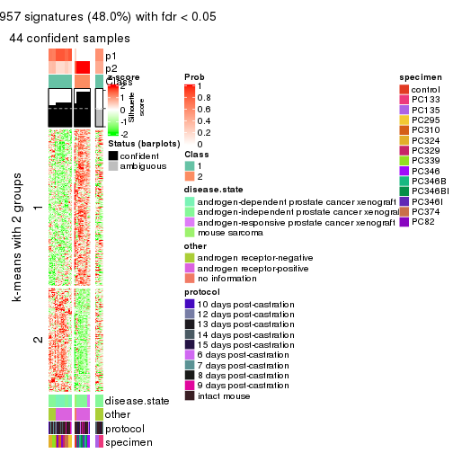
get_signatures(res, k = 3)
get_signatures(res, k = 4)
get_signatures(res, k = 5)
get_signatures(res, k = 6)
Signature heatmaps where rows are not scaled:
get_signatures(res, k = 2, scale_rows = FALSE)

get_signatures(res, k = 3, scale_rows = FALSE)
get_signatures(res, k = 4, scale_rows = FALSE)
get_signatures(res, k = 5, scale_rows = FALSE)
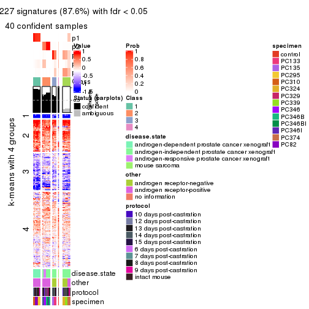
get_signatures(res, k = 6, scale_rows = FALSE)
Compare the overlap of signatures from different k:
compare_signatures(res)
get_signature() returns a data frame invisibly. TO get the list of signatures, the function
call should be assigned to a variable explicitly. In following code, if plot argument is set
to FALSE, no heatmap is plotted while only the differential analysis is performed.
# code only for demonstration
tb = get_signature(res, k = ..., plot = FALSE)
An example of the output of tb is:
#> which_row fdr mean_1 mean_2 scaled_mean_1 scaled_mean_2 km
#> 1 38 0.042760348 8.373488 9.131774 -0.5533452 0.5164555 1
#> 2 40 0.018707592 7.106213 8.469186 -0.6173731 0.5762149 1
#> 3 55 0.019134737 10.221463 11.207825 -0.6159697 0.5749050 1
#> 4 59 0.006059896 5.921854 7.869574 -0.6899429 0.6439467 1
#> 5 60 0.018055526 8.928898 10.211722 -0.6204761 0.5791110 1
#> 6 98 0.009384629 15.714769 14.887706 0.6635654 -0.6193277 2
...
The columns in tb are:
which_row: row indices corresponding to the input matrix.fdr: FDR for the differential test. mean_x: The mean value in group x.scaled_mean_x: The mean value in group x after rows are scaled.km: Row groups if k-means clustering is applied to rows.UMAP plot which shows how samples are separated.
dimension_reduction(res, k = 2, method = "UMAP")
dimension_reduction(res, k = 3, method = "UMAP")

dimension_reduction(res, k = 4, method = "UMAP")
dimension_reduction(res, k = 5, method = "UMAP")
dimension_reduction(res, k = 6, method = "UMAP")
Following heatmap shows how subgroups are split when increasing k:
collect_classes(res)

Test correlation between subgroups and known annotations. If the known annotation is numeric, one-way ANOVA test is applied, and if the known annotation is discrete, chi-squared contingency table test is applied.
test_to_known_factors(res)
#> n disease.state(p) other(p) protocol(p) specimen(p) k
#> MAD:kmeans 44 2.51e-04 1.13e-02 0.519 7.27e-06 2
#> MAD:kmeans 50 1.80e-08 1.39e-11 0.295 3.00e-11 3
#> MAD:kmeans 48 4.15e-18 1.71e-18 0.676 7.40e-15 4
#> MAD:kmeans 40 2.58e-14 3.57e-15 0.865 1.02e-12 5
#> MAD:kmeans 45 1.29e-11 1.45e-08 0.183 1.61e-19 6
If matrix rows can be associated to genes, consider to use functional_enrichment(res,
...) to perform function enrichment for the signature genes. See this vignette for more detailed explanations.
The object with results only for a single top-value method and a single partition method can be extracted as:
res = res_list["MAD", "skmeans"]
# you can also extract it by
# res = res_list["MAD:skmeans"]
A summary of res and all the functions that can be applied to it:
res
#> A 'ConsensusPartition' object with k = 2, 3, 4, 5, 6.
#> On a matrix with 8252 rows and 52 columns.
#> Top rows (825, 1650, 2476, 3301, 4126) are extracted by 'MAD' method.
#> Subgroups are detected by 'skmeans' method.
#> Performed in total 1250 partitions by row resampling.
#> Best k for subgroups seems to be 3.
#>
#> Following methods can be applied to this 'ConsensusPartition' object:
#> [1] "cola_report" "collect_classes" "collect_plots"
#> [4] "collect_stats" "colnames" "compare_signatures"
#> [7] "consensus_heatmap" "dimension_reduction" "functional_enrichment"
#> [10] "get_anno_col" "get_anno" "get_classes"
#> [13] "get_consensus" "get_matrix" "get_membership"
#> [16] "get_param" "get_signatures" "get_stats"
#> [19] "is_best_k" "is_stable_k" "membership_heatmap"
#> [22] "ncol" "nrow" "plot_ecdf"
#> [25] "rownames" "select_partition_number" "show"
#> [28] "suggest_best_k" "test_to_known_factors"
collect_plots() function collects all the plots made from res for all k (number of partitions)
into one single page to provide an easy and fast comparison between different k.
collect_plots(res)
The plots are:
k and the heatmap of
predicted classes for each k.k.k.k.All the plots in panels can be made by individual functions and they are plotted later in this section.
select_partition_number() produces several plots showing different
statistics for choosing “optimized” k. There are following statistics:
k;k, the area increased is defined as \(A_k - A_{k-1}\).The detailed explanations of these statistics can be found in the cola vignette.
Generally speaking, lower PAC score, higher mean silhouette score or higher
concordance corresponds to better partition. Rand index and Jaccard index
measure how similar the current partition is compared to partition with k-1.
If they are too similar, we won't accept k is better than k-1.
select_partition_number(res)
The numeric values for all these statistics can be obtained by get_stats().
get_stats(res)
#> k 1-PAC mean_silhouette concordance area_increased Rand Jaccard
#> 2 2 0.735 0.885 0.941 0.4924 0.490 0.490
#> 3 3 1.000 0.961 0.985 0.3792 0.735 0.507
#> 4 4 0.825 0.741 0.846 0.0893 0.885 0.668
#> 5 5 0.896 0.866 0.879 0.0597 0.940 0.774
#> 6 6 0.875 0.903 0.891 0.0467 0.952 0.783
suggest_best_k() suggests the best \(k\) based on these statistics. The rules are as follows:
suggest_best_k(res)
#> [1] 3
Following shows the table of the partitions (You need to click the show/hide
code output link to see it). The membership matrix (columns with name p*)
is inferred by
clue::cl_consensus()
function with the SE method. Basically the value in the membership matrix
represents the probability to belong to a certain group. The finall class
label for an item is determined with the group with highest probability it
belongs to.
In get_classes() function, the entropy is calculated from the membership
matrix and the silhouette score is calculated from the consensus matrix.
cbind(get_classes(res, k = 2), get_membership(res, k = 2))
#> class entropy silhouette p1 p2
#> GSM92537 1 0.000 1.000 1.000 0.000
#> GSM92539 1 0.000 1.000 1.000 0.000
#> GSM92541 1 0.000 1.000 1.000 0.000
#> GSM92543 1 0.000 1.000 1.000 0.000
#> GSM92545 1 0.000 1.000 1.000 0.000
#> GSM92546 1 0.000 1.000 1.000 0.000
#> GSM92533 1 0.000 1.000 1.000 0.000
#> GSM92535 1 0.000 1.000 1.000 0.000
#> GSM92540 1 0.000 1.000 1.000 0.000
#> GSM92538 1 0.000 1.000 1.000 0.000
#> GSM92542 1 0.000 1.000 1.000 0.000
#> GSM92544 1 0.000 1.000 1.000 0.000
#> GSM92536 1 0.000 1.000 1.000 0.000
#> GSM92534 1 0.000 1.000 1.000 0.000
#> GSM92547 2 0.000 0.869 0.000 1.000
#> GSM92549 2 0.000 0.869 0.000 1.000
#> GSM92550 2 0.000 0.869 0.000 1.000
#> GSM92548 2 0.000 0.869 0.000 1.000
#> GSM92551 2 0.000 0.869 0.000 1.000
#> GSM92553 2 0.000 0.869 0.000 1.000
#> GSM92559 2 0.000 0.869 0.000 1.000
#> GSM92561 2 0.000 0.869 0.000 1.000
#> GSM92555 2 0.000 0.869 0.000 1.000
#> GSM92557 2 0.000 0.869 0.000 1.000
#> GSM92563 1 0.000 1.000 1.000 0.000
#> GSM92565 1 0.000 1.000 1.000 0.000
#> GSM92554 2 0.000 0.869 0.000 1.000
#> GSM92564 1 0.000 1.000 1.000 0.000
#> GSM92562 2 0.000 0.869 0.000 1.000
#> GSM92558 2 0.000 0.869 0.000 1.000
#> GSM92566 1 0.000 1.000 1.000 0.000
#> GSM92552 2 0.000 0.869 0.000 1.000
#> GSM92560 2 0.000 0.869 0.000 1.000
#> GSM92556 2 0.000 0.869 0.000 1.000
#> GSM92567 2 0.932 0.599 0.348 0.652
#> GSM92569 2 0.921 0.613 0.336 0.664
#> GSM92571 2 0.978 0.493 0.412 0.588
#> GSM92573 2 0.978 0.493 0.412 0.588
#> GSM92575 1 0.000 1.000 1.000 0.000
#> GSM92577 1 0.000 1.000 1.000 0.000
#> GSM92579 1 0.000 1.000 1.000 0.000
#> GSM92581 1 0.000 1.000 1.000 0.000
#> GSM92568 2 0.932 0.599 0.348 0.652
#> GSM92576 1 0.000 1.000 1.000 0.000
#> GSM92580 1 0.000 1.000 1.000 0.000
#> GSM92578 1 0.000 1.000 1.000 0.000
#> GSM92572 2 0.978 0.493 0.412 0.588
#> GSM92574 2 0.978 0.493 0.412 0.588
#> GSM92582 1 0.000 1.000 1.000 0.000
#> GSM92570 2 0.925 0.608 0.340 0.660
#> GSM92583 2 0.184 0.858 0.028 0.972
#> GSM92584 2 0.184 0.858 0.028 0.972
cbind(get_classes(res, k = 3), get_membership(res, k = 3))
#> class entropy silhouette p1 p2 p3
#> GSM92537 1 0.000 1.000 1 0.0 0.0
#> GSM92539 1 0.000 1.000 1 0.0 0.0
#> GSM92541 1 0.000 1.000 1 0.0 0.0
#> GSM92543 1 0.000 1.000 1 0.0 0.0
#> GSM92545 1 0.000 1.000 1 0.0 0.0
#> GSM92546 1 0.000 1.000 1 0.0 0.0
#> GSM92533 1 0.000 1.000 1 0.0 0.0
#> GSM92535 1 0.000 1.000 1 0.0 0.0
#> GSM92540 1 0.000 1.000 1 0.0 0.0
#> GSM92538 1 0.000 1.000 1 0.0 0.0
#> GSM92542 1 0.000 1.000 1 0.0 0.0
#> GSM92544 1 0.000 1.000 1 0.0 0.0
#> GSM92536 1 0.000 1.000 1 0.0 0.0
#> GSM92534 1 0.000 1.000 1 0.0 0.0
#> GSM92547 2 0.000 0.952 0 1.0 0.0
#> GSM92549 2 0.000 0.952 0 1.0 0.0
#> GSM92550 2 0.000 0.952 0 1.0 0.0
#> GSM92548 2 0.000 0.952 0 1.0 0.0
#> GSM92551 2 0.000 0.952 0 1.0 0.0
#> GSM92553 2 0.000 0.952 0 1.0 0.0
#> GSM92559 2 0.000 0.952 0 1.0 0.0
#> GSM92561 2 0.000 0.952 0 1.0 0.0
#> GSM92555 2 0.000 0.952 0 1.0 0.0
#> GSM92557 2 0.000 0.952 0 1.0 0.0
#> GSM92563 1 0.000 1.000 1 0.0 0.0
#> GSM92565 1 0.000 1.000 1 0.0 0.0
#> GSM92554 2 0.000 0.952 0 1.0 0.0
#> GSM92564 1 0.000 1.000 1 0.0 0.0
#> GSM92562 2 0.000 0.952 0 1.0 0.0
#> GSM92558 2 0.000 0.952 0 1.0 0.0
#> GSM92566 1 0.000 1.000 1 0.0 0.0
#> GSM92552 2 0.000 0.952 0 1.0 0.0
#> GSM92560 2 0.000 0.952 0 1.0 0.0
#> GSM92556 2 0.000 0.952 0 1.0 0.0
#> GSM92567 3 0.000 1.000 0 0.0 1.0
#> GSM92569 3 0.000 1.000 0 0.0 1.0
#> GSM92571 3 0.000 1.000 0 0.0 1.0
#> GSM92573 3 0.000 1.000 0 0.0 1.0
#> GSM92575 3 0.000 1.000 0 0.0 1.0
#> GSM92577 3 0.000 1.000 0 0.0 1.0
#> GSM92579 3 0.000 1.000 0 0.0 1.0
#> GSM92581 3 0.000 1.000 0 0.0 1.0
#> GSM92568 3 0.000 1.000 0 0.0 1.0
#> GSM92576 3 0.000 1.000 0 0.0 1.0
#> GSM92580 3 0.000 1.000 0 0.0 1.0
#> GSM92578 3 0.000 1.000 0 0.0 1.0
#> GSM92572 3 0.000 1.000 0 0.0 1.0
#> GSM92574 3 0.000 1.000 0 0.0 1.0
#> GSM92582 3 0.000 1.000 0 0.0 1.0
#> GSM92570 3 0.000 1.000 0 0.0 1.0
#> GSM92583 2 0.613 0.373 0 0.6 0.4
#> GSM92584 2 0.613 0.373 0 0.6 0.4
cbind(get_classes(res, k = 4), get_membership(res, k = 4))
#> class entropy silhouette p1 p2 p3 p4
#> GSM92537 1 0.0000 1.0000 1.000 0.000 0.000 0.000
#> GSM92539 1 0.0000 1.0000 1.000 0.000 0.000 0.000
#> GSM92541 1 0.0000 1.0000 1.000 0.000 0.000 0.000
#> GSM92543 1 0.0000 1.0000 1.000 0.000 0.000 0.000
#> GSM92545 1 0.0000 1.0000 1.000 0.000 0.000 0.000
#> GSM92546 1 0.0000 1.0000 1.000 0.000 0.000 0.000
#> GSM92533 1 0.0000 1.0000 1.000 0.000 0.000 0.000
#> GSM92535 1 0.0000 1.0000 1.000 0.000 0.000 0.000
#> GSM92540 1 0.0000 1.0000 1.000 0.000 0.000 0.000
#> GSM92538 1 0.0000 1.0000 1.000 0.000 0.000 0.000
#> GSM92542 1 0.0000 1.0000 1.000 0.000 0.000 0.000
#> GSM92544 1 0.0000 1.0000 1.000 0.000 0.000 0.000
#> GSM92536 1 0.0000 1.0000 1.000 0.000 0.000 0.000
#> GSM92534 1 0.0000 1.0000 1.000 0.000 0.000 0.000
#> GSM92547 2 0.0707 0.9186 0.000 0.980 0.000 0.020
#> GSM92549 2 0.0707 0.9186 0.000 0.980 0.000 0.020
#> GSM92550 2 0.0707 0.9186 0.000 0.980 0.000 0.020
#> GSM92548 2 0.0707 0.9186 0.000 0.980 0.000 0.020
#> GSM92551 2 0.0000 0.9208 0.000 1.000 0.000 0.000
#> GSM92553 2 0.0000 0.9208 0.000 1.000 0.000 0.000
#> GSM92559 2 0.0000 0.9208 0.000 1.000 0.000 0.000
#> GSM92561 2 0.0000 0.9208 0.000 1.000 0.000 0.000
#> GSM92555 2 0.0707 0.9186 0.000 0.980 0.000 0.020
#> GSM92557 2 0.0000 0.9208 0.000 1.000 0.000 0.000
#> GSM92563 3 0.7830 0.3340 0.268 0.000 0.400 0.332
#> GSM92565 3 0.7830 0.3340 0.268 0.000 0.400 0.332
#> GSM92554 2 0.0000 0.9208 0.000 1.000 0.000 0.000
#> GSM92564 3 0.7818 0.3381 0.264 0.000 0.404 0.332
#> GSM92562 2 0.0000 0.9208 0.000 1.000 0.000 0.000
#> GSM92558 2 0.0000 0.9208 0.000 1.000 0.000 0.000
#> GSM92566 3 0.7830 0.3340 0.268 0.000 0.400 0.332
#> GSM92552 2 0.0000 0.9208 0.000 1.000 0.000 0.000
#> GSM92560 2 0.0707 0.9186 0.000 0.980 0.000 0.020
#> GSM92556 2 0.0707 0.9186 0.000 0.980 0.000 0.020
#> GSM92567 3 0.4855 -0.2466 0.000 0.000 0.600 0.400
#> GSM92569 3 0.4855 -0.2466 0.000 0.000 0.600 0.400
#> GSM92571 3 0.0000 0.4171 0.000 0.000 1.000 0.000
#> GSM92573 3 0.0000 0.4171 0.000 0.000 1.000 0.000
#> GSM92575 4 0.4164 0.9814 0.000 0.000 0.264 0.736
#> GSM92577 4 0.4164 0.9814 0.000 0.000 0.264 0.736
#> GSM92579 4 0.4134 0.9814 0.000 0.000 0.260 0.740
#> GSM92581 4 0.4134 0.9814 0.000 0.000 0.260 0.740
#> GSM92568 3 0.4855 -0.2466 0.000 0.000 0.600 0.400
#> GSM92576 4 0.4164 0.9814 0.000 0.000 0.264 0.736
#> GSM92580 4 0.4134 0.9814 0.000 0.000 0.260 0.740
#> GSM92578 4 0.4164 0.9814 0.000 0.000 0.264 0.736
#> GSM92572 3 0.0000 0.4171 0.000 0.000 1.000 0.000
#> GSM92574 3 0.0000 0.4171 0.000 0.000 1.000 0.000
#> GSM92582 4 0.4134 0.9814 0.000 0.000 0.260 0.740
#> GSM92570 3 0.4855 -0.2466 0.000 0.000 0.600 0.400
#> GSM92583 2 0.7371 -0.0391 0.000 0.424 0.416 0.160
#> GSM92584 2 0.7371 -0.0391 0.000 0.424 0.416 0.160
cbind(get_classes(res, k = 5), get_membership(res, k = 5))
#> class entropy silhouette p1 p2 p3 p4 p5
#> GSM92537 1 0.0693 0.983 0.980 0.000 0.008 0.012 0.000
#> GSM92539 1 0.0693 0.983 0.980 0.000 0.008 0.012 0.000
#> GSM92541 1 0.0000 0.993 1.000 0.000 0.000 0.000 0.000
#> GSM92543 1 0.0000 0.993 1.000 0.000 0.000 0.000 0.000
#> GSM92545 1 0.0000 0.993 1.000 0.000 0.000 0.000 0.000
#> GSM92546 1 0.0000 0.993 1.000 0.000 0.000 0.000 0.000
#> GSM92533 1 0.0000 0.993 1.000 0.000 0.000 0.000 0.000
#> GSM92535 1 0.0000 0.993 1.000 0.000 0.000 0.000 0.000
#> GSM92540 1 0.0693 0.983 0.980 0.000 0.008 0.012 0.000
#> GSM92538 1 0.0912 0.977 0.972 0.000 0.016 0.012 0.000
#> GSM92542 1 0.0000 0.993 1.000 0.000 0.000 0.000 0.000
#> GSM92544 1 0.0000 0.993 1.000 0.000 0.000 0.000 0.000
#> GSM92536 1 0.0000 0.993 1.000 0.000 0.000 0.000 0.000
#> GSM92534 1 0.0000 0.993 1.000 0.000 0.000 0.000 0.000
#> GSM92547 2 0.3375 0.803 0.000 0.840 0.056 0.104 0.000
#> GSM92549 2 0.3307 0.804 0.000 0.844 0.052 0.104 0.000
#> GSM92550 2 0.3307 0.804 0.000 0.844 0.052 0.104 0.000
#> GSM92548 2 0.3442 0.801 0.000 0.836 0.060 0.104 0.000
#> GSM92551 2 0.2648 0.854 0.000 0.848 0.152 0.000 0.000
#> GSM92553 2 0.2648 0.854 0.000 0.848 0.152 0.000 0.000
#> GSM92559 2 0.2648 0.854 0.000 0.848 0.152 0.000 0.000
#> GSM92561 2 0.2648 0.854 0.000 0.848 0.152 0.000 0.000
#> GSM92555 2 0.3090 0.808 0.000 0.856 0.040 0.104 0.000
#> GSM92557 2 0.2648 0.854 0.000 0.848 0.152 0.000 0.000
#> GSM92563 4 0.2561 1.000 0.096 0.000 0.000 0.884 0.020
#> GSM92565 4 0.2561 1.000 0.096 0.000 0.000 0.884 0.020
#> GSM92554 2 0.2648 0.854 0.000 0.848 0.152 0.000 0.000
#> GSM92564 4 0.2561 1.000 0.096 0.000 0.000 0.884 0.020
#> GSM92562 2 0.2648 0.854 0.000 0.848 0.152 0.000 0.000
#> GSM92558 2 0.2648 0.854 0.000 0.848 0.152 0.000 0.000
#> GSM92566 4 0.2561 1.000 0.096 0.000 0.000 0.884 0.020
#> GSM92552 2 0.2648 0.854 0.000 0.848 0.152 0.000 0.000
#> GSM92560 2 0.3569 0.796 0.000 0.828 0.068 0.104 0.000
#> GSM92556 2 0.3506 0.799 0.000 0.832 0.064 0.104 0.000
#> GSM92567 3 0.3730 0.665 0.000 0.000 0.712 0.000 0.288
#> GSM92569 3 0.3857 0.643 0.000 0.000 0.688 0.000 0.312
#> GSM92571 3 0.4879 0.658 0.000 0.000 0.696 0.228 0.076
#> GSM92573 3 0.4879 0.658 0.000 0.000 0.696 0.228 0.076
#> GSM92575 5 0.1205 0.971 0.000 0.000 0.004 0.040 0.956
#> GSM92577 5 0.1205 0.971 0.000 0.000 0.004 0.040 0.956
#> GSM92579 5 0.0000 0.971 0.000 0.000 0.000 0.000 1.000
#> GSM92581 5 0.0000 0.971 0.000 0.000 0.000 0.000 1.000
#> GSM92568 3 0.3730 0.665 0.000 0.000 0.712 0.000 0.288
#> GSM92576 5 0.1205 0.971 0.000 0.000 0.004 0.040 0.956
#> GSM92580 5 0.0000 0.971 0.000 0.000 0.000 0.000 1.000
#> GSM92578 5 0.1205 0.971 0.000 0.000 0.004 0.040 0.956
#> GSM92572 3 0.4879 0.658 0.000 0.000 0.696 0.228 0.076
#> GSM92574 3 0.4879 0.658 0.000 0.000 0.696 0.228 0.076
#> GSM92582 5 0.0000 0.971 0.000 0.000 0.000 0.000 1.000
#> GSM92570 3 0.3857 0.643 0.000 0.000 0.688 0.000 0.312
#> GSM92583 3 0.5456 0.441 0.000 0.200 0.684 0.016 0.100
#> GSM92584 3 0.5456 0.441 0.000 0.200 0.684 0.016 0.100
cbind(get_classes(res, k = 6), get_membership(res, k = 6))
#> class entropy silhouette p1 p2 p3 p4 p5 p6
#> GSM92537 1 0.2207 0.914 0.900 0.000 0.008 0.076 0.000 0.016
#> GSM92539 1 0.2207 0.914 0.900 0.000 0.008 0.076 0.000 0.016
#> GSM92541 1 0.0000 0.962 1.000 0.000 0.000 0.000 0.000 0.000
#> GSM92543 1 0.0000 0.962 1.000 0.000 0.000 0.000 0.000 0.000
#> GSM92545 1 0.0000 0.962 1.000 0.000 0.000 0.000 0.000 0.000
#> GSM92546 1 0.0000 0.962 1.000 0.000 0.000 0.000 0.000 0.000
#> GSM92533 1 0.0146 0.962 0.996 0.000 0.000 0.004 0.000 0.000
#> GSM92535 1 0.0000 0.962 1.000 0.000 0.000 0.000 0.000 0.000
#> GSM92540 1 0.2262 0.913 0.896 0.000 0.008 0.080 0.000 0.016
#> GSM92538 1 0.3590 0.828 0.800 0.000 0.028 0.152 0.000 0.020
#> GSM92542 1 0.0146 0.962 0.996 0.000 0.000 0.004 0.000 0.000
#> GSM92544 1 0.0146 0.962 0.996 0.000 0.000 0.004 0.000 0.000
#> GSM92536 1 0.0146 0.962 0.996 0.000 0.000 0.004 0.000 0.000
#> GSM92534 1 0.0146 0.962 0.996 0.000 0.000 0.004 0.000 0.000
#> GSM92547 4 0.3464 0.977 0.000 0.312 0.000 0.688 0.000 0.000
#> GSM92549 4 0.3464 0.977 0.000 0.312 0.000 0.688 0.000 0.000
#> GSM92550 4 0.3464 0.977 0.000 0.312 0.000 0.688 0.000 0.000
#> GSM92548 4 0.3464 0.977 0.000 0.312 0.000 0.688 0.000 0.000
#> GSM92551 2 0.0000 1.000 0.000 1.000 0.000 0.000 0.000 0.000
#> GSM92553 2 0.0000 1.000 0.000 1.000 0.000 0.000 0.000 0.000
#> GSM92559 2 0.0000 1.000 0.000 1.000 0.000 0.000 0.000 0.000
#> GSM92561 2 0.0000 1.000 0.000 1.000 0.000 0.000 0.000 0.000
#> GSM92555 4 0.3706 0.888 0.000 0.380 0.000 0.620 0.000 0.000
#> GSM92557 2 0.0000 1.000 0.000 1.000 0.000 0.000 0.000 0.000
#> GSM92563 6 0.0909 1.000 0.020 0.000 0.000 0.000 0.012 0.968
#> GSM92565 6 0.0909 1.000 0.020 0.000 0.000 0.000 0.012 0.968
#> GSM92554 2 0.0000 1.000 0.000 1.000 0.000 0.000 0.000 0.000
#> GSM92564 6 0.0909 1.000 0.020 0.000 0.000 0.000 0.012 0.968
#> GSM92562 2 0.0000 1.000 0.000 1.000 0.000 0.000 0.000 0.000
#> GSM92558 2 0.0000 1.000 0.000 1.000 0.000 0.000 0.000 0.000
#> GSM92566 6 0.0909 1.000 0.020 0.000 0.000 0.000 0.012 0.968
#> GSM92552 2 0.0000 1.000 0.000 1.000 0.000 0.000 0.000 0.000
#> GSM92560 4 0.3547 0.969 0.000 0.300 0.004 0.696 0.000 0.000
#> GSM92556 4 0.3547 0.969 0.000 0.300 0.004 0.696 0.000 0.000
#> GSM92567 3 0.4454 0.716 0.000 0.000 0.736 0.144 0.108 0.012
#> GSM92569 3 0.4733 0.703 0.000 0.000 0.708 0.140 0.140 0.012
#> GSM92571 3 0.1644 0.703 0.000 0.000 0.920 0.000 0.004 0.076
#> GSM92573 3 0.1644 0.703 0.000 0.000 0.920 0.000 0.004 0.076
#> GSM92575 5 0.1700 0.967 0.000 0.000 0.012 0.024 0.936 0.028
#> GSM92577 5 0.1700 0.967 0.000 0.000 0.012 0.024 0.936 0.028
#> GSM92579 5 0.0000 0.967 0.000 0.000 0.000 0.000 1.000 0.000
#> GSM92581 5 0.0000 0.967 0.000 0.000 0.000 0.000 1.000 0.000
#> GSM92568 3 0.4454 0.716 0.000 0.000 0.736 0.144 0.108 0.012
#> GSM92576 5 0.1700 0.967 0.000 0.000 0.012 0.024 0.936 0.028
#> GSM92580 5 0.0000 0.967 0.000 0.000 0.000 0.000 1.000 0.000
#> GSM92578 5 0.1700 0.967 0.000 0.000 0.012 0.024 0.936 0.028
#> GSM92572 3 0.1644 0.703 0.000 0.000 0.920 0.000 0.004 0.076
#> GSM92574 3 0.1644 0.703 0.000 0.000 0.920 0.000 0.004 0.076
#> GSM92582 5 0.0000 0.967 0.000 0.000 0.000 0.000 1.000 0.000
#> GSM92570 3 0.4733 0.703 0.000 0.000 0.708 0.140 0.140 0.012
#> GSM92583 3 0.7081 0.331 0.000 0.300 0.384 0.264 0.032 0.020
#> GSM92584 3 0.7081 0.331 0.000 0.300 0.384 0.264 0.032 0.020
Heatmaps for the consensus matrix. It visualizes the probability of two samples to be in a same group.
consensus_heatmap(res, k = 2)
consensus_heatmap(res, k = 3)
consensus_heatmap(res, k = 4)
consensus_heatmap(res, k = 5)
consensus_heatmap(res, k = 6)
Heatmaps for the membership of samples in all partitions to see how consistent they are:
membership_heatmap(res, k = 2)
membership_heatmap(res, k = 3)
membership_heatmap(res, k = 4)
membership_heatmap(res, k = 5)
membership_heatmap(res, k = 6)
As soon as we have had the classes for columns, we can look for signatures which are significantly different between classes which can be candidate marks for certain classes. Following are the heatmaps for signatures.
Signature heatmaps where rows are scaled:
get_signatures(res, k = 2)
get_signatures(res, k = 3)
get_signatures(res, k = 4)
get_signatures(res, k = 5)
get_signatures(res, k = 6)
Signature heatmaps where rows are not scaled:
get_signatures(res, k = 2, scale_rows = FALSE)
get_signatures(res, k = 3, scale_rows = FALSE)
get_signatures(res, k = 4, scale_rows = FALSE)
get_signatures(res, k = 5, scale_rows = FALSE)
get_signatures(res, k = 6, scale_rows = FALSE)
Compare the overlap of signatures from different k:
compare_signatures(res)
get_signature() returns a data frame invisibly. TO get the list of signatures, the function
call should be assigned to a variable explicitly. In following code, if plot argument is set
to FALSE, no heatmap is plotted while only the differential analysis is performed.
# code only for demonstration
tb = get_signature(res, k = ..., plot = FALSE)
An example of the output of tb is:
#> which_row fdr mean_1 mean_2 scaled_mean_1 scaled_mean_2 km
#> 1 38 0.042760348 8.373488 9.131774 -0.5533452 0.5164555 1
#> 2 40 0.018707592 7.106213 8.469186 -0.6173731 0.5762149 1
#> 3 55 0.019134737 10.221463 11.207825 -0.6159697 0.5749050 1
#> 4 59 0.006059896 5.921854 7.869574 -0.6899429 0.6439467 1
#> 5 60 0.018055526 8.928898 10.211722 -0.6204761 0.5791110 1
#> 6 98 0.009384629 15.714769 14.887706 0.6635654 -0.6193277 2
...
The columns in tb are:
which_row: row indices corresponding to the input matrix.fdr: FDR for the differential test. mean_x: The mean value in group x.scaled_mean_x: The mean value in group x after rows are scaled.km: Row groups if k-means clustering is applied to rows.UMAP plot which shows how samples are separated.
dimension_reduction(res, k = 2, method = "UMAP")
dimension_reduction(res, k = 3, method = "UMAP")
dimension_reduction(res, k = 4, method = "UMAP")

dimension_reduction(res, k = 5, method = "UMAP")

dimension_reduction(res, k = 6, method = "UMAP")
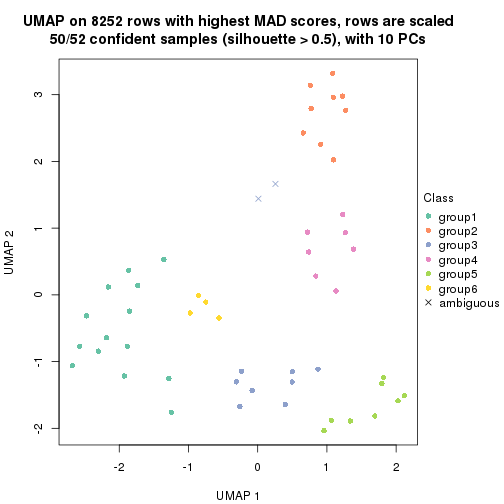
Following heatmap shows how subgroups are split when increasing k:
collect_classes(res)
Test correlation between subgroups and known annotations. If the known annotation is numeric, one-way ANOVA test is applied, and if the known annotation is discrete, chi-squared contingency table test is applied.
test_to_known_factors(res)
#> n disease.state(p) other(p) protocol(p) specimen(p) k
#> MAD:skmeans 48 1.42e-04 2.08e-01 0.581 3.13e-06 2
#> MAD:skmeans 50 1.80e-08 1.39e-11 0.295 3.00e-11 3
#> MAD:skmeans 38 1.84e-08 5.60e-09 0.345 4.25e-09 4
#> MAD:skmeans 50 1.25e-09 3.61e-10 0.396 1.86e-20 5
#> MAD:skmeans 50 3.19e-12 1.39e-09 0.328 2.27e-21 6
If matrix rows can be associated to genes, consider to use functional_enrichment(res,
...) to perform function enrichment for the signature genes. See this vignette for more detailed explanations.
The object with results only for a single top-value method and a single partition method can be extracted as:
res = res_list["MAD", "pam"]
# you can also extract it by
# res = res_list["MAD:pam"]
A summary of res and all the functions that can be applied to it:
res
#> A 'ConsensusPartition' object with k = 2, 3, 4, 5, 6.
#> On a matrix with 8252 rows and 52 columns.
#> Top rows (825, 1650, 2476, 3301, 4126) are extracted by 'MAD' method.
#> Subgroups are detected by 'pam' method.
#> Performed in total 1250 partitions by row resampling.
#> Best k for subgroups seems to be 5.
#>
#> Following methods can be applied to this 'ConsensusPartition' object:
#> [1] "cola_report" "collect_classes" "collect_plots"
#> [4] "collect_stats" "colnames" "compare_signatures"
#> [7] "consensus_heatmap" "dimension_reduction" "functional_enrichment"
#> [10] "get_anno_col" "get_anno" "get_classes"
#> [13] "get_consensus" "get_matrix" "get_membership"
#> [16] "get_param" "get_signatures" "get_stats"
#> [19] "is_best_k" "is_stable_k" "membership_heatmap"
#> [22] "ncol" "nrow" "plot_ecdf"
#> [25] "rownames" "select_partition_number" "show"
#> [28] "suggest_best_k" "test_to_known_factors"
collect_plots() function collects all the plots made from res for all k (number of partitions)
into one single page to provide an easy and fast comparison between different k.
collect_plots(res)
The plots are:
k and the heatmap of
predicted classes for each k.k.k.k.All the plots in panels can be made by individual functions and they are plotted later in this section.
select_partition_number() produces several plots showing different
statistics for choosing “optimized” k. There are following statistics:
k;k, the area increased is defined as \(A_k - A_{k-1}\).The detailed explanations of these statistics can be found in the cola vignette.
Generally speaking, lower PAC score, higher mean silhouette score or higher
concordance corresponds to better partition. Rand index and Jaccard index
measure how similar the current partition is compared to partition with k-1.
If they are too similar, we won't accept k is better than k-1.
select_partition_number(res)
The numeric values for all these statistics can be obtained by get_stats().
get_stats(res)
#> k 1-PAC mean_silhouette concordance area_increased Rand Jaccard
#> 2 2 0.491 0.826 0.847 0.4302 0.551 0.551
#> 3 3 0.675 0.784 0.900 0.5301 0.708 0.501
#> 4 4 0.733 0.788 0.850 0.0941 0.952 0.853
#> 5 5 0.898 0.855 0.932 0.0795 0.900 0.666
#> 6 6 0.884 0.838 0.904 0.0425 0.955 0.795
suggest_best_k() suggests the best \(k\) based on these statistics. The rules are as follows:
suggest_best_k(res)
#> [1] 5
Following shows the table of the partitions (You need to click the show/hide
code output link to see it). The membership matrix (columns with name p*)
is inferred by
clue::cl_consensus()
function with the SE method. Basically the value in the membership matrix
represents the probability to belong to a certain group. The finall class
label for an item is determined with the group with highest probability it
belongs to.
In get_classes() function, the entropy is calculated from the membership
matrix and the silhouette score is calculated from the consensus matrix.
cbind(get_classes(res, k = 2), get_membership(res, k = 2))
#> class entropy silhouette p1 p2
#> GSM92537 1 0.0000 0.754 1.000 0.000
#> GSM92539 1 0.0000 0.754 1.000 0.000
#> GSM92541 1 0.0000 0.754 1.000 0.000
#> GSM92543 1 0.0000 0.754 1.000 0.000
#> GSM92545 1 0.0000 0.754 1.000 0.000
#> GSM92546 1 0.0000 0.754 1.000 0.000
#> GSM92533 1 0.0000 0.754 1.000 0.000
#> GSM92535 1 0.0000 0.754 1.000 0.000
#> GSM92540 1 0.0000 0.754 1.000 0.000
#> GSM92538 1 0.5946 0.782 0.856 0.144
#> GSM92542 1 0.0000 0.754 1.000 0.000
#> GSM92544 1 0.0000 0.754 1.000 0.000
#> GSM92536 1 0.0000 0.754 1.000 0.000
#> GSM92534 1 0.0000 0.754 1.000 0.000
#> GSM92547 2 0.0376 0.962 0.004 0.996
#> GSM92549 2 0.0376 0.962 0.004 0.996
#> GSM92550 2 0.0376 0.962 0.004 0.996
#> GSM92548 2 0.7219 0.645 0.200 0.800
#> GSM92551 2 0.0000 0.963 0.000 1.000
#> GSM92553 2 0.0000 0.963 0.000 1.000
#> GSM92559 2 0.0000 0.963 0.000 1.000
#> GSM92561 2 0.0000 0.963 0.000 1.000
#> GSM92555 2 0.0376 0.962 0.004 0.996
#> GSM92557 2 0.0000 0.963 0.000 1.000
#> GSM92563 1 0.8555 0.807 0.720 0.280
#> GSM92565 1 0.8661 0.807 0.712 0.288
#> GSM92554 2 0.0000 0.963 0.000 1.000
#> GSM92564 1 0.8813 0.806 0.700 0.300
#> GSM92562 2 0.0000 0.963 0.000 1.000
#> GSM92558 2 0.0000 0.963 0.000 1.000
#> GSM92566 1 0.8608 0.807 0.716 0.284
#> GSM92552 2 0.0000 0.963 0.000 1.000
#> GSM92560 1 0.9815 0.635 0.580 0.420
#> GSM92556 1 0.9209 0.767 0.664 0.336
#> GSM92567 1 0.8813 0.806 0.700 0.300
#> GSM92569 1 0.9815 0.623 0.580 0.420
#> GSM92571 1 0.8813 0.806 0.700 0.300
#> GSM92573 2 0.4431 0.872 0.092 0.908
#> GSM92575 1 0.8813 0.806 0.700 0.300
#> GSM92577 1 0.8813 0.806 0.700 0.300
#> GSM92579 1 0.8813 0.806 0.700 0.300
#> GSM92581 1 0.8813 0.806 0.700 0.300
#> GSM92568 1 0.8813 0.806 0.700 0.300
#> GSM92576 1 0.8813 0.806 0.700 0.300
#> GSM92580 1 0.8813 0.806 0.700 0.300
#> GSM92578 1 0.8813 0.806 0.700 0.300
#> GSM92572 1 0.8813 0.806 0.700 0.300
#> GSM92574 1 0.8813 0.806 0.700 0.300
#> GSM92582 1 0.8813 0.806 0.700 0.300
#> GSM92570 1 0.8813 0.806 0.700 0.300
#> GSM92583 2 0.3431 0.908 0.064 0.936
#> GSM92584 2 0.3431 0.908 0.064 0.936
cbind(get_classes(res, k = 3), get_membership(res, k = 3))
#> class entropy silhouette p1 p2 p3
#> GSM92537 1 0.0000 0.872 1.000 0.000 0.000
#> GSM92539 1 0.0000 0.872 1.000 0.000 0.000
#> GSM92541 1 0.0000 0.872 1.000 0.000 0.000
#> GSM92543 1 0.0000 0.872 1.000 0.000 0.000
#> GSM92545 1 0.0000 0.872 1.000 0.000 0.000
#> GSM92546 1 0.0000 0.872 1.000 0.000 0.000
#> GSM92533 1 0.0000 0.872 1.000 0.000 0.000
#> GSM92535 1 0.0000 0.872 1.000 0.000 0.000
#> GSM92540 1 0.0000 0.872 1.000 0.000 0.000
#> GSM92538 1 0.0592 0.864 0.988 0.000 0.012
#> GSM92542 1 0.0000 0.872 1.000 0.000 0.000
#> GSM92544 1 0.0000 0.872 1.000 0.000 0.000
#> GSM92536 1 0.0000 0.872 1.000 0.000 0.000
#> GSM92534 1 0.0000 0.872 1.000 0.000 0.000
#> GSM92547 2 0.0000 0.980 0.000 1.000 0.000
#> GSM92549 2 0.0000 0.980 0.000 1.000 0.000
#> GSM92550 2 0.0000 0.980 0.000 1.000 0.000
#> GSM92548 2 0.4733 0.700 0.196 0.800 0.004
#> GSM92551 2 0.0000 0.980 0.000 1.000 0.000
#> GSM92553 2 0.0000 0.980 0.000 1.000 0.000
#> GSM92559 2 0.0000 0.980 0.000 1.000 0.000
#> GSM92561 2 0.0000 0.980 0.000 1.000 0.000
#> GSM92555 2 0.0000 0.980 0.000 1.000 0.000
#> GSM92557 2 0.0000 0.980 0.000 1.000 0.000
#> GSM92563 1 0.5254 0.589 0.736 0.000 0.264
#> GSM92565 1 0.5621 0.513 0.692 0.000 0.308
#> GSM92554 2 0.0000 0.980 0.000 1.000 0.000
#> GSM92564 1 0.5363 0.559 0.724 0.000 0.276
#> GSM92562 2 0.0000 0.980 0.000 1.000 0.000
#> GSM92558 2 0.0000 0.980 0.000 1.000 0.000
#> GSM92566 1 0.5431 0.562 0.716 0.000 0.284
#> GSM92552 2 0.0000 0.980 0.000 1.000 0.000
#> GSM92560 1 0.6286 0.224 0.536 0.464 0.000
#> GSM92556 1 0.6079 0.416 0.612 0.388 0.000
#> GSM92567 3 0.5560 0.617 0.300 0.000 0.700
#> GSM92569 3 0.4346 0.722 0.184 0.000 0.816
#> GSM92571 3 0.6008 0.509 0.372 0.000 0.628
#> GSM92573 3 0.6019 0.620 0.012 0.288 0.700
#> GSM92575 3 0.0000 0.800 0.000 0.000 1.000
#> GSM92577 3 0.0000 0.800 0.000 0.000 1.000
#> GSM92579 3 0.0000 0.800 0.000 0.000 1.000
#> GSM92581 3 0.0000 0.800 0.000 0.000 1.000
#> GSM92568 3 0.5560 0.617 0.300 0.000 0.700
#> GSM92576 3 0.0000 0.800 0.000 0.000 1.000
#> GSM92580 3 0.0000 0.800 0.000 0.000 1.000
#> GSM92578 3 0.0000 0.800 0.000 0.000 1.000
#> GSM92572 3 0.5926 0.539 0.356 0.000 0.644
#> GSM92574 3 0.5678 0.599 0.316 0.000 0.684
#> GSM92582 3 0.0000 0.800 0.000 0.000 1.000
#> GSM92570 3 0.2356 0.781 0.072 0.000 0.928
#> GSM92583 3 0.6154 0.435 0.000 0.408 0.592
#> GSM92584 3 0.6154 0.435 0.000 0.408 0.592
cbind(get_classes(res, k = 4), get_membership(res, k = 4))
#> class entropy silhouette p1 p2 p3 p4
#> GSM92537 1 0.0000 0.8819 1.000 0.000 0.000 0.000
#> GSM92539 1 0.0000 0.8819 1.000 0.000 0.000 0.000
#> GSM92541 1 0.0000 0.8819 1.000 0.000 0.000 0.000
#> GSM92543 1 0.0000 0.8819 1.000 0.000 0.000 0.000
#> GSM92545 1 0.0000 0.8819 1.000 0.000 0.000 0.000
#> GSM92546 1 0.0000 0.8819 1.000 0.000 0.000 0.000
#> GSM92533 1 0.0000 0.8819 1.000 0.000 0.000 0.000
#> GSM92535 1 0.0000 0.8819 1.000 0.000 0.000 0.000
#> GSM92540 1 0.0000 0.8819 1.000 0.000 0.000 0.000
#> GSM92538 1 0.0000 0.8819 1.000 0.000 0.000 0.000
#> GSM92542 1 0.0000 0.8819 1.000 0.000 0.000 0.000
#> GSM92544 1 0.0000 0.8819 1.000 0.000 0.000 0.000
#> GSM92536 1 0.0000 0.8819 1.000 0.000 0.000 0.000
#> GSM92534 1 0.0000 0.8819 1.000 0.000 0.000 0.000
#> GSM92547 2 0.0707 0.9659 0.000 0.980 0.000 0.020
#> GSM92549 2 0.0707 0.9659 0.000 0.980 0.000 0.020
#> GSM92550 2 0.0707 0.9659 0.000 0.980 0.000 0.020
#> GSM92548 2 0.4612 0.6800 0.188 0.780 0.012 0.020
#> GSM92551 2 0.0000 0.9734 0.000 1.000 0.000 0.000
#> GSM92553 2 0.0000 0.9734 0.000 1.000 0.000 0.000
#> GSM92559 2 0.0000 0.9734 0.000 1.000 0.000 0.000
#> GSM92561 2 0.0000 0.9734 0.000 1.000 0.000 0.000
#> GSM92555 2 0.0707 0.9659 0.000 0.980 0.000 0.020
#> GSM92557 2 0.0000 0.9734 0.000 1.000 0.000 0.000
#> GSM92563 4 0.5110 0.9877 0.328 0.000 0.016 0.656
#> GSM92565 4 0.5110 0.9877 0.328 0.000 0.016 0.656
#> GSM92554 2 0.0000 0.9734 0.000 1.000 0.000 0.000
#> GSM92564 4 0.4720 0.9728 0.324 0.000 0.004 0.672
#> GSM92562 2 0.0000 0.9734 0.000 1.000 0.000 0.000
#> GSM92558 2 0.0000 0.9734 0.000 1.000 0.000 0.000
#> GSM92566 4 0.4999 0.9874 0.328 0.000 0.012 0.660
#> GSM92552 2 0.0000 0.9734 0.000 1.000 0.000 0.000
#> GSM92560 1 0.6211 0.0507 0.484 0.476 0.020 0.020
#> GSM92556 1 0.6249 0.1058 0.536 0.420 0.024 0.020
#> GSM92567 3 0.3942 0.6198 0.236 0.000 0.764 0.000
#> GSM92569 3 0.2469 0.6815 0.108 0.000 0.892 0.000
#> GSM92571 3 0.4155 0.6140 0.240 0.000 0.756 0.004
#> GSM92573 3 0.4122 0.5714 0.000 0.004 0.760 0.236
#> GSM92575 3 0.4746 0.6262 0.000 0.000 0.632 0.368
#> GSM92577 3 0.2469 0.6935 0.000 0.000 0.892 0.108
#> GSM92579 3 0.4564 0.6570 0.000 0.000 0.672 0.328
#> GSM92581 3 0.4564 0.6570 0.000 0.000 0.672 0.328
#> GSM92568 3 0.4122 0.6182 0.236 0.000 0.760 0.004
#> GSM92576 3 0.4008 0.6784 0.000 0.000 0.756 0.244
#> GSM92580 3 0.4564 0.6570 0.000 0.000 0.672 0.328
#> GSM92578 3 0.3907 0.6788 0.000 0.000 0.768 0.232
#> GSM92572 3 0.4122 0.6182 0.236 0.000 0.760 0.004
#> GSM92574 3 0.4364 0.6238 0.220 0.000 0.764 0.016
#> GSM92582 3 0.4564 0.6570 0.000 0.000 0.672 0.328
#> GSM92570 3 0.1474 0.6924 0.052 0.000 0.948 0.000
#> GSM92583 3 0.5339 0.4354 0.000 0.356 0.624 0.020
#> GSM92584 3 0.5339 0.4354 0.000 0.356 0.624 0.020
cbind(get_classes(res, k = 5), get_membership(res, k = 5))
#> class entropy silhouette p1 p2 p3 p4 p5
#> GSM92537 1 0.0000 1.000 1.000 0.000 0.000 0 0.000
#> GSM92539 1 0.0000 1.000 1.000 0.000 0.000 0 0.000
#> GSM92541 1 0.0000 1.000 1.000 0.000 0.000 0 0.000
#> GSM92543 1 0.0000 1.000 1.000 0.000 0.000 0 0.000
#> GSM92545 1 0.0000 1.000 1.000 0.000 0.000 0 0.000
#> GSM92546 1 0.0000 1.000 1.000 0.000 0.000 0 0.000
#> GSM92533 1 0.0000 1.000 1.000 0.000 0.000 0 0.000
#> GSM92535 1 0.0000 1.000 1.000 0.000 0.000 0 0.000
#> GSM92540 1 0.0000 1.000 1.000 0.000 0.000 0 0.000
#> GSM92538 1 0.0000 1.000 1.000 0.000 0.000 0 0.000
#> GSM92542 1 0.0000 1.000 1.000 0.000 0.000 0 0.000
#> GSM92544 1 0.0000 1.000 1.000 0.000 0.000 0 0.000
#> GSM92536 1 0.0000 1.000 1.000 0.000 0.000 0 0.000
#> GSM92534 1 0.0000 1.000 1.000 0.000 0.000 0 0.000
#> GSM92547 2 0.1502 0.886 0.000 0.940 0.004 0 0.056
#> GSM92549 2 0.1502 0.886 0.000 0.940 0.004 0 0.056
#> GSM92550 2 0.1502 0.886 0.000 0.940 0.004 0 0.056
#> GSM92548 2 0.4252 0.765 0.128 0.796 0.020 0 0.056
#> GSM92551 2 0.0000 0.902 0.000 1.000 0.000 0 0.000
#> GSM92553 2 0.0000 0.902 0.000 1.000 0.000 0 0.000
#> GSM92559 2 0.0000 0.902 0.000 1.000 0.000 0 0.000
#> GSM92561 2 0.0000 0.902 0.000 1.000 0.000 0 0.000
#> GSM92555 2 0.1502 0.886 0.000 0.940 0.004 0 0.056
#> GSM92557 2 0.0000 0.902 0.000 1.000 0.000 0 0.000
#> GSM92563 4 0.0000 1.000 0.000 0.000 0.000 1 0.000
#> GSM92565 4 0.0000 1.000 0.000 0.000 0.000 1 0.000
#> GSM92554 2 0.0000 0.902 0.000 1.000 0.000 0 0.000
#> GSM92564 4 0.0000 1.000 0.000 0.000 0.000 1 0.000
#> GSM92562 2 0.0000 0.902 0.000 1.000 0.000 0 0.000
#> GSM92558 2 0.0000 0.902 0.000 1.000 0.000 0 0.000
#> GSM92566 4 0.0000 1.000 0.000 0.000 0.000 1 0.000
#> GSM92552 2 0.0000 0.902 0.000 1.000 0.000 0 0.000
#> GSM92560 2 0.7141 0.430 0.276 0.512 0.156 0 0.056
#> GSM92556 2 0.7189 0.392 0.308 0.488 0.148 0 0.056
#> GSM92567 3 0.0162 0.847 0.000 0.000 0.996 0 0.004
#> GSM92569 3 0.0162 0.847 0.000 0.000 0.996 0 0.004
#> GSM92571 3 0.0000 0.848 0.000 0.000 1.000 0 0.000
#> GSM92573 3 0.0000 0.848 0.000 0.000 1.000 0 0.000
#> GSM92575 5 0.1341 0.870 0.000 0.000 0.056 0 0.944
#> GSM92577 3 0.4192 0.075 0.000 0.000 0.596 0 0.404
#> GSM92579 5 0.1341 0.870 0.000 0.000 0.056 0 0.944
#> GSM92581 5 0.1341 0.870 0.000 0.000 0.056 0 0.944
#> GSM92568 3 0.0000 0.848 0.000 0.000 1.000 0 0.000
#> GSM92576 5 0.4227 0.316 0.000 0.000 0.420 0 0.580
#> GSM92580 5 0.1341 0.870 0.000 0.000 0.056 0 0.944
#> GSM92578 5 0.3752 0.625 0.000 0.000 0.292 0 0.708
#> GSM92572 3 0.0000 0.848 0.000 0.000 1.000 0 0.000
#> GSM92574 3 0.0162 0.847 0.000 0.000 0.996 0 0.004
#> GSM92582 5 0.1341 0.870 0.000 0.000 0.056 0 0.944
#> GSM92570 3 0.0162 0.847 0.000 0.000 0.996 0 0.004
#> GSM92583 3 0.4657 0.526 0.000 0.296 0.668 0 0.036
#> GSM92584 3 0.4657 0.526 0.000 0.296 0.668 0 0.036
cbind(get_classes(res, k = 6), get_membership(res, k = 6))
#> class entropy silhouette p1 p2 p3 p4 p5 p6
#> GSM92537 1 0.0000 0.99962 1.000 0.000 0.000 0.000 0.000 0
#> GSM92539 1 0.0000 0.99962 1.000 0.000 0.000 0.000 0.000 0
#> GSM92541 1 0.0000 0.99962 1.000 0.000 0.000 0.000 0.000 0
#> GSM92543 1 0.0000 0.99962 1.000 0.000 0.000 0.000 0.000 0
#> GSM92545 1 0.0000 0.99962 1.000 0.000 0.000 0.000 0.000 0
#> GSM92546 1 0.0000 0.99962 1.000 0.000 0.000 0.000 0.000 0
#> GSM92533 1 0.0000 0.99962 1.000 0.000 0.000 0.000 0.000 0
#> GSM92535 1 0.0000 0.99962 1.000 0.000 0.000 0.000 0.000 0
#> GSM92540 1 0.0000 0.99962 1.000 0.000 0.000 0.000 0.000 0
#> GSM92538 1 0.0146 0.99509 0.996 0.000 0.000 0.004 0.000 0
#> GSM92542 1 0.0000 0.99962 1.000 0.000 0.000 0.000 0.000 0
#> GSM92544 1 0.0000 0.99962 1.000 0.000 0.000 0.000 0.000 0
#> GSM92536 1 0.0000 0.99962 1.000 0.000 0.000 0.000 0.000 0
#> GSM92534 1 0.0000 0.99962 1.000 0.000 0.000 0.000 0.000 0
#> GSM92547 4 0.3847 0.59245 0.000 0.456 0.000 0.544 0.000 0
#> GSM92549 4 0.3847 0.59245 0.000 0.456 0.000 0.544 0.000 0
#> GSM92550 4 0.3847 0.59245 0.000 0.456 0.000 0.544 0.000 0
#> GSM92548 4 0.5266 0.63722 0.112 0.344 0.000 0.544 0.000 0
#> GSM92551 2 0.0000 0.97166 0.000 1.000 0.000 0.000 0.000 0
#> GSM92553 2 0.0000 0.97166 0.000 1.000 0.000 0.000 0.000 0
#> GSM92559 2 0.0000 0.97166 0.000 1.000 0.000 0.000 0.000 0
#> GSM92561 2 0.0000 0.97166 0.000 1.000 0.000 0.000 0.000 0
#> GSM92555 2 0.2491 0.67448 0.000 0.836 0.000 0.164 0.000 0
#> GSM92557 2 0.0000 0.97166 0.000 1.000 0.000 0.000 0.000 0
#> GSM92563 6 0.0000 1.00000 0.000 0.000 0.000 0.000 0.000 1
#> GSM92565 6 0.0000 1.00000 0.000 0.000 0.000 0.000 0.000 1
#> GSM92554 2 0.0000 0.97166 0.000 1.000 0.000 0.000 0.000 0
#> GSM92564 6 0.0000 1.00000 0.000 0.000 0.000 0.000 0.000 1
#> GSM92562 2 0.0000 0.97166 0.000 1.000 0.000 0.000 0.000 0
#> GSM92558 2 0.0000 0.97166 0.000 1.000 0.000 0.000 0.000 0
#> GSM92566 6 0.0000 1.00000 0.000 0.000 0.000 0.000 0.000 1
#> GSM92552 2 0.0000 0.97166 0.000 1.000 0.000 0.000 0.000 0
#> GSM92560 4 0.6363 0.55193 0.248 0.076 0.132 0.544 0.000 0
#> GSM92556 4 0.6363 0.55189 0.248 0.076 0.132 0.544 0.000 0
#> GSM92567 3 0.0000 0.85177 0.000 0.000 1.000 0.000 0.000 0
#> GSM92569 3 0.0000 0.85177 0.000 0.000 1.000 0.000 0.000 0
#> GSM92571 3 0.0000 0.85177 0.000 0.000 1.000 0.000 0.000 0
#> GSM92573 3 0.0146 0.84906 0.000 0.000 0.996 0.004 0.000 0
#> GSM92575 5 0.0260 0.83581 0.000 0.000 0.000 0.008 0.992 0
#> GSM92577 3 0.4062 -0.00221 0.000 0.000 0.552 0.008 0.440 0
#> GSM92579 5 0.0000 0.83893 0.000 0.000 0.000 0.000 1.000 0
#> GSM92581 5 0.0000 0.83893 0.000 0.000 0.000 0.000 1.000 0
#> GSM92568 3 0.0000 0.85177 0.000 0.000 1.000 0.000 0.000 0
#> GSM92576 5 0.4010 0.20578 0.000 0.000 0.408 0.008 0.584 0
#> GSM92580 5 0.0000 0.83893 0.000 0.000 0.000 0.000 1.000 0
#> GSM92578 5 0.3741 0.46852 0.000 0.000 0.320 0.008 0.672 0
#> GSM92572 3 0.0000 0.85177 0.000 0.000 1.000 0.000 0.000 0
#> GSM92574 3 0.0000 0.85177 0.000 0.000 1.000 0.000 0.000 0
#> GSM92582 5 0.0000 0.83893 0.000 0.000 0.000 0.000 1.000 0
#> GSM92570 3 0.0000 0.85177 0.000 0.000 1.000 0.000 0.000 0
#> GSM92583 3 0.3843 0.49778 0.000 0.000 0.548 0.452 0.000 0
#> GSM92584 3 0.3843 0.49778 0.000 0.000 0.548 0.452 0.000 0
Heatmaps for the consensus matrix. It visualizes the probability of two samples to be in a same group.
consensus_heatmap(res, k = 2)

consensus_heatmap(res, k = 3)
consensus_heatmap(res, k = 4)
consensus_heatmap(res, k = 5)
consensus_heatmap(res, k = 6)
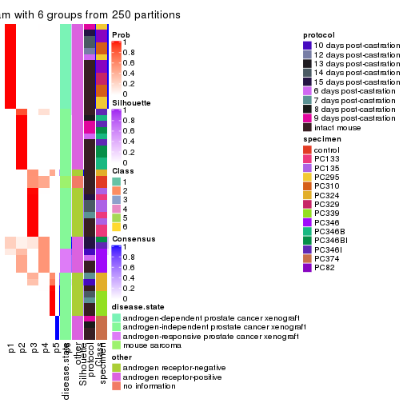
Heatmaps for the membership of samples in all partitions to see how consistent they are:
membership_heatmap(res, k = 2)
membership_heatmap(res, k = 3)
membership_heatmap(res, k = 4)
membership_heatmap(res, k = 5)
membership_heatmap(res, k = 6)
As soon as we have had the classes for columns, we can look for signatures which are significantly different between classes which can be candidate marks for certain classes. Following are the heatmaps for signatures.
Signature heatmaps where rows are scaled:
get_signatures(res, k = 2)
get_signatures(res, k = 3)
get_signatures(res, k = 4)
get_signatures(res, k = 5)
get_signatures(res, k = 6)
Signature heatmaps where rows are not scaled:
get_signatures(res, k = 2, scale_rows = FALSE)
get_signatures(res, k = 3, scale_rows = FALSE)
get_signatures(res, k = 4, scale_rows = FALSE)
get_signatures(res, k = 5, scale_rows = FALSE)
get_signatures(res, k = 6, scale_rows = FALSE)
Compare the overlap of signatures from different k:
compare_signatures(res)
get_signature() returns a data frame invisibly. TO get the list of signatures, the function
call should be assigned to a variable explicitly. In following code, if plot argument is set
to FALSE, no heatmap is plotted while only the differential analysis is performed.
# code only for demonstration
tb = get_signature(res, k = ..., plot = FALSE)
An example of the output of tb is:
#> which_row fdr mean_1 mean_2 scaled_mean_1 scaled_mean_2 km
#> 1 38 0.042760348 8.373488 9.131774 -0.5533452 0.5164555 1
#> 2 40 0.018707592 7.106213 8.469186 -0.6173731 0.5762149 1
#> 3 55 0.019134737 10.221463 11.207825 -0.6159697 0.5749050 1
#> 4 59 0.006059896 5.921854 7.869574 -0.6899429 0.6439467 1
#> 5 60 0.018055526 8.928898 10.211722 -0.6204761 0.5791110 1
#> 6 98 0.009384629 15.714769 14.887706 0.6635654 -0.6193277 2
...
The columns in tb are:
which_row: row indices corresponding to the input matrix.fdr: FDR for the differential test. mean_x: The mean value in group x.scaled_mean_x: The mean value in group x after rows are scaled.km: Row groups if k-means clustering is applied to rows.UMAP plot which shows how samples are separated.
dimension_reduction(res, k = 2, method = "UMAP")
dimension_reduction(res, k = 3, method = "UMAP")

dimension_reduction(res, k = 4, method = "UMAP")
dimension_reduction(res, k = 5, method = "UMAP")
dimension_reduction(res, k = 6, method = "UMAP")
Following heatmap shows how subgroups are split when increasing k:
collect_classes(res)
Test correlation between subgroups and known annotations. If the known annotation is numeric, one-way ANOVA test is applied, and if the known annotation is discrete, chi-squared contingency table test is applied.
test_to_known_factors(res)
#> n disease.state(p) other(p) protocol(p) specimen(p) k
#> MAD:pam 52 2.49e-04 5.76e-03 0.225 7.13e-05 2
#> MAD:pam 48 2.12e-08 3.78e-11 0.280 1.43e-10 3
#> MAD:pam 48 1.71e-10 2.13e-10 0.180 7.40e-15 4
#> MAD:pam 48 4.79e-09 1.60e-08 0.499 6.35e-18 5
#> MAD:pam 47 2.81e-12 5.68e-09 0.387 1.66e-19 6
If matrix rows can be associated to genes, consider to use functional_enrichment(res,
...) to perform function enrichment for the signature genes. See this vignette for more detailed explanations.
The object with results only for a single top-value method and a single partition method can be extracted as:
res = res_list["MAD", "mclust"]
# you can also extract it by
# res = res_list["MAD:mclust"]
A summary of res and all the functions that can be applied to it:
res
#> A 'ConsensusPartition' object with k = 2, 3, 4, 5, 6.
#> On a matrix with 8252 rows and 52 columns.
#> Top rows (825, 1650, 2476, 3301, 4126) are extracted by 'MAD' method.
#> Subgroups are detected by 'mclust' method.
#> Performed in total 1250 partitions by row resampling.
#> Best k for subgroups seems to be 5.
#>
#> Following methods can be applied to this 'ConsensusPartition' object:
#> [1] "cola_report" "collect_classes" "collect_plots"
#> [4] "collect_stats" "colnames" "compare_signatures"
#> [7] "consensus_heatmap" "dimension_reduction" "functional_enrichment"
#> [10] "get_anno_col" "get_anno" "get_classes"
#> [13] "get_consensus" "get_matrix" "get_membership"
#> [16] "get_param" "get_signatures" "get_stats"
#> [19] "is_best_k" "is_stable_k" "membership_heatmap"
#> [22] "ncol" "nrow" "plot_ecdf"
#> [25] "rownames" "select_partition_number" "show"
#> [28] "suggest_best_k" "test_to_known_factors"
collect_plots() function collects all the plots made from res for all k (number of partitions)
into one single page to provide an easy and fast comparison between different k.
collect_plots(res)
The plots are:
k and the heatmap of
predicted classes for each k.k.k.k.All the plots in panels can be made by individual functions and they are plotted later in this section.
select_partition_number() produces several plots showing different
statistics for choosing “optimized” k. There are following statistics:
k;k, the area increased is defined as \(A_k - A_{k-1}\).The detailed explanations of these statistics can be found in the cola vignette.
Generally speaking, lower PAC score, higher mean silhouette score or higher
concordance corresponds to better partition. Rand index and Jaccard index
measure how similar the current partition is compared to partition with k-1.
If they are too similar, we won't accept k is better than k-1.
select_partition_number(res)
The numeric values for all these statistics can be obtained by get_stats().
get_stats(res)
#> k 1-PAC mean_silhouette concordance area_increased Rand Jaccard
#> 2 2 0.321 0.777 0.840 0.4626 0.517 0.517
#> 3 3 0.925 0.932 0.967 0.4605 0.807 0.627
#> 4 4 0.962 0.965 0.985 0.0463 0.973 0.916
#> 5 5 0.969 0.975 0.969 0.0502 0.958 0.858
#> 6 6 0.869 0.891 0.886 0.0565 0.966 0.867
suggest_best_k() suggests the best \(k\) based on these statistics. The rules are as follows:
suggest_best_k(res)
#> [1] 5
#> attr(,"optional")
#> [1] 3 4
There is also optional best \(k\) = 3 4 that is worth to check.
Following shows the table of the partitions (You need to click the show/hide
code output link to see it). The membership matrix (columns with name p*)
is inferred by
clue::cl_consensus()
function with the SE method. Basically the value in the membership matrix
represents the probability to belong to a certain group. The finall class
label for an item is determined with the group with highest probability it
belongs to.
In get_classes() function, the entropy is calculated from the membership
matrix and the silhouette score is calculated from the consensus matrix.
cbind(get_classes(res, k = 2), get_membership(res, k = 2))
#> class entropy silhouette p1 p2
#> GSM92537 1 0.788 0.959 0.764 0.236
#> GSM92539 1 0.788 0.959 0.764 0.236
#> GSM92541 1 0.788 0.959 0.764 0.236
#> GSM92543 1 0.788 0.959 0.764 0.236
#> GSM92545 1 0.788 0.959 0.764 0.236
#> GSM92546 1 0.788 0.959 0.764 0.236
#> GSM92533 1 0.788 0.959 0.764 0.236
#> GSM92535 1 0.788 0.959 0.764 0.236
#> GSM92540 1 0.788 0.959 0.764 0.236
#> GSM92538 1 0.788 0.959 0.764 0.236
#> GSM92542 1 0.788 0.959 0.764 0.236
#> GSM92544 1 0.788 0.959 0.764 0.236
#> GSM92536 1 0.788 0.959 0.764 0.236
#> GSM92534 1 0.788 0.959 0.764 0.236
#> GSM92547 2 0.999 0.686 0.484 0.516
#> GSM92549 2 0.999 0.686 0.484 0.516
#> GSM92550 2 0.999 0.686 0.484 0.516
#> GSM92548 2 0.999 0.686 0.484 0.516
#> GSM92551 2 0.999 0.686 0.484 0.516
#> GSM92553 2 0.999 0.686 0.484 0.516
#> GSM92559 2 0.999 0.686 0.484 0.516
#> GSM92561 2 0.999 0.686 0.484 0.516
#> GSM92555 2 0.999 0.686 0.484 0.516
#> GSM92557 2 0.999 0.686 0.484 0.516
#> GSM92563 1 0.866 0.919 0.712 0.288
#> GSM92565 1 0.866 0.919 0.712 0.288
#> GSM92554 2 0.999 0.686 0.484 0.516
#> GSM92564 1 0.881 0.902 0.700 0.300
#> GSM92562 2 0.999 0.686 0.484 0.516
#> GSM92558 2 0.999 0.686 0.484 0.516
#> GSM92566 1 0.866 0.919 0.712 0.288
#> GSM92552 2 0.999 0.686 0.484 0.516
#> GSM92560 2 0.999 0.686 0.484 0.516
#> GSM92556 2 0.999 0.686 0.484 0.516
#> GSM92567 2 0.000 0.678 0.000 1.000
#> GSM92569 2 0.000 0.678 0.000 1.000
#> GSM92571 2 0.000 0.678 0.000 1.000
#> GSM92573 2 0.000 0.678 0.000 1.000
#> GSM92575 2 0.000 0.678 0.000 1.000
#> GSM92577 2 0.000 0.678 0.000 1.000
#> GSM92579 2 0.000 0.678 0.000 1.000
#> GSM92581 2 0.000 0.678 0.000 1.000
#> GSM92568 2 0.000 0.678 0.000 1.000
#> GSM92576 2 0.000 0.678 0.000 1.000
#> GSM92580 2 0.000 0.678 0.000 1.000
#> GSM92578 2 0.000 0.678 0.000 1.000
#> GSM92572 2 0.000 0.678 0.000 1.000
#> GSM92574 2 0.000 0.678 0.000 1.000
#> GSM92582 2 0.000 0.678 0.000 1.000
#> GSM92570 2 0.000 0.678 0.000 1.000
#> GSM92583 1 0.966 0.758 0.608 0.392
#> GSM92584 1 0.966 0.758 0.608 0.392
cbind(get_classes(res, k = 3), get_membership(res, k = 3))
#> class entropy silhouette p1 p2 p3
#> GSM92537 1 0.000 0.913 1.000 0.000 0.000
#> GSM92539 1 0.000 0.913 1.000 0.000 0.000
#> GSM92541 1 0.000 0.913 1.000 0.000 0.000
#> GSM92543 1 0.000 0.913 1.000 0.000 0.000
#> GSM92545 1 0.000 0.913 1.000 0.000 0.000
#> GSM92546 1 0.000 0.913 1.000 0.000 0.000
#> GSM92533 1 0.000 0.913 1.000 0.000 0.000
#> GSM92535 1 0.000 0.913 1.000 0.000 0.000
#> GSM92540 1 0.000 0.913 1.000 0.000 0.000
#> GSM92538 1 0.000 0.913 1.000 0.000 0.000
#> GSM92542 1 0.000 0.913 1.000 0.000 0.000
#> GSM92544 1 0.000 0.913 1.000 0.000 0.000
#> GSM92536 1 0.000 0.913 1.000 0.000 0.000
#> GSM92534 1 0.000 0.913 1.000 0.000 0.000
#> GSM92547 2 0.000 0.995 0.000 1.000 0.000
#> GSM92549 2 0.000 0.995 0.000 1.000 0.000
#> GSM92550 2 0.000 0.995 0.000 1.000 0.000
#> GSM92548 2 0.140 0.967 0.028 0.968 0.004
#> GSM92551 2 0.000 0.995 0.000 1.000 0.000
#> GSM92553 2 0.000 0.995 0.000 1.000 0.000
#> GSM92559 2 0.158 0.965 0.028 0.964 0.008
#> GSM92561 2 0.000 0.995 0.000 1.000 0.000
#> GSM92555 2 0.000 0.995 0.000 1.000 0.000
#> GSM92557 2 0.000 0.995 0.000 1.000 0.000
#> GSM92563 1 0.610 0.549 0.648 0.348 0.004
#> GSM92565 1 0.610 0.549 0.648 0.348 0.004
#> GSM92554 2 0.000 0.995 0.000 1.000 0.000
#> GSM92564 1 0.621 0.509 0.628 0.368 0.004
#> GSM92562 2 0.000 0.995 0.000 1.000 0.000
#> GSM92558 2 0.000 0.995 0.000 1.000 0.000
#> GSM92566 1 0.610 0.549 0.648 0.348 0.004
#> GSM92552 2 0.000 0.995 0.000 1.000 0.000
#> GSM92560 2 0.000 0.995 0.000 1.000 0.000
#> GSM92556 2 0.000 0.995 0.000 1.000 0.000
#> GSM92567 3 0.000 0.997 0.000 0.000 1.000
#> GSM92569 3 0.000 0.997 0.000 0.000 1.000
#> GSM92571 3 0.000 0.997 0.000 0.000 1.000
#> GSM92573 3 0.153 0.958 0.000 0.040 0.960
#> GSM92575 3 0.000 0.997 0.000 0.000 1.000
#> GSM92577 3 0.000 0.997 0.000 0.000 1.000
#> GSM92579 3 0.000 0.997 0.000 0.000 1.000
#> GSM92581 3 0.000 0.997 0.000 0.000 1.000
#> GSM92568 3 0.000 0.997 0.000 0.000 1.000
#> GSM92576 3 0.000 0.997 0.000 0.000 1.000
#> GSM92580 3 0.000 0.997 0.000 0.000 1.000
#> GSM92578 3 0.000 0.997 0.000 0.000 1.000
#> GSM92572 3 0.000 0.997 0.000 0.000 1.000
#> GSM92574 3 0.000 0.997 0.000 0.000 1.000
#> GSM92582 3 0.000 0.997 0.000 0.000 1.000
#> GSM92570 3 0.000 0.997 0.000 0.000 1.000
#> GSM92583 1 0.254 0.860 0.920 0.000 0.080
#> GSM92584 1 0.254 0.860 0.920 0.000 0.080
cbind(get_classes(res, k = 4), get_membership(res, k = 4))
#> class entropy silhouette p1 p2 p3 p4
#> GSM92537 1 0.0000 0.952 1.000 0.000 0 0.000
#> GSM92539 1 0.0000 0.952 1.000 0.000 0 0.000
#> GSM92541 1 0.0000 0.952 1.000 0.000 0 0.000
#> GSM92543 1 0.0000 0.952 1.000 0.000 0 0.000
#> GSM92545 1 0.0000 0.952 1.000 0.000 0 0.000
#> GSM92546 1 0.0000 0.952 1.000 0.000 0 0.000
#> GSM92533 1 0.0000 0.952 1.000 0.000 0 0.000
#> GSM92535 1 0.0000 0.952 1.000 0.000 0 0.000
#> GSM92540 1 0.0000 0.952 1.000 0.000 0 0.000
#> GSM92538 1 0.0000 0.952 1.000 0.000 0 0.000
#> GSM92542 1 0.0000 0.952 1.000 0.000 0 0.000
#> GSM92544 1 0.0000 0.952 1.000 0.000 0 0.000
#> GSM92536 1 0.0000 0.952 1.000 0.000 0 0.000
#> GSM92534 1 0.0000 0.952 1.000 0.000 0 0.000
#> GSM92547 2 0.0000 0.994 0.000 1.000 0 0.000
#> GSM92549 2 0.0000 0.994 0.000 1.000 0 0.000
#> GSM92550 2 0.0000 0.994 0.000 1.000 0 0.000
#> GSM92548 2 0.0469 0.987 0.012 0.988 0 0.000
#> GSM92551 2 0.0000 0.994 0.000 1.000 0 0.000
#> GSM92553 2 0.0000 0.994 0.000 1.000 0 0.000
#> GSM92559 2 0.0707 0.978 0.020 0.980 0 0.000
#> GSM92561 2 0.0000 0.994 0.000 1.000 0 0.000
#> GSM92555 2 0.0469 0.987 0.012 0.988 0 0.000
#> GSM92557 2 0.0000 0.994 0.000 1.000 0 0.000
#> GSM92563 1 0.2654 0.870 0.888 0.004 0 0.108
#> GSM92565 1 0.2654 0.870 0.888 0.004 0 0.108
#> GSM92554 2 0.0000 0.994 0.000 1.000 0 0.000
#> GSM92564 1 0.6517 0.400 0.604 0.288 0 0.108
#> GSM92562 2 0.0000 0.994 0.000 1.000 0 0.000
#> GSM92558 2 0.0000 0.994 0.000 1.000 0 0.000
#> GSM92566 1 0.2654 0.870 0.888 0.004 0 0.108
#> GSM92552 2 0.0000 0.994 0.000 1.000 0 0.000
#> GSM92560 2 0.0469 0.987 0.012 0.988 0 0.000
#> GSM92556 2 0.0469 0.987 0.012 0.988 0 0.000
#> GSM92567 3 0.0000 1.000 0.000 0.000 1 0.000
#> GSM92569 3 0.0000 1.000 0.000 0.000 1 0.000
#> GSM92571 3 0.0000 1.000 0.000 0.000 1 0.000
#> GSM92573 3 0.0000 1.000 0.000 0.000 1 0.000
#> GSM92575 3 0.0000 1.000 0.000 0.000 1 0.000
#> GSM92577 3 0.0000 1.000 0.000 0.000 1 0.000
#> GSM92579 3 0.0000 1.000 0.000 0.000 1 0.000
#> GSM92581 3 0.0000 1.000 0.000 0.000 1 0.000
#> GSM92568 3 0.0000 1.000 0.000 0.000 1 0.000
#> GSM92576 3 0.0000 1.000 0.000 0.000 1 0.000
#> GSM92580 3 0.0000 1.000 0.000 0.000 1 0.000
#> GSM92578 3 0.0000 1.000 0.000 0.000 1 0.000
#> GSM92572 3 0.0000 1.000 0.000 0.000 1 0.000
#> GSM92574 3 0.0000 1.000 0.000 0.000 1 0.000
#> GSM92582 3 0.0000 1.000 0.000 0.000 1 0.000
#> GSM92570 3 0.0000 1.000 0.000 0.000 1 0.000
#> GSM92583 4 0.0000 1.000 0.000 0.000 0 1.000
#> GSM92584 4 0.0000 1.000 0.000 0.000 0 1.000
cbind(get_classes(res, k = 5), get_membership(res, k = 5))
#> class entropy silhouette p1 p2 p3 p4 p5
#> GSM92537 1 0.0000 0.969 1.000 0.000 0.000 0 0.000
#> GSM92539 1 0.0000 0.969 1.000 0.000 0.000 0 0.000
#> GSM92541 1 0.0000 0.969 1.000 0.000 0.000 0 0.000
#> GSM92543 1 0.0000 0.969 1.000 0.000 0.000 0 0.000
#> GSM92545 1 0.0000 0.969 1.000 0.000 0.000 0 0.000
#> GSM92546 1 0.0000 0.969 1.000 0.000 0.000 0 0.000
#> GSM92533 1 0.0000 0.969 1.000 0.000 0.000 0 0.000
#> GSM92535 1 0.0000 0.969 1.000 0.000 0.000 0 0.000
#> GSM92540 1 0.2690 0.806 0.844 0.000 0.000 0 0.156
#> GSM92538 1 0.2690 0.806 0.844 0.000 0.000 0 0.156
#> GSM92542 1 0.0000 0.969 1.000 0.000 0.000 0 0.000
#> GSM92544 1 0.0000 0.969 1.000 0.000 0.000 0 0.000
#> GSM92536 1 0.0000 0.969 1.000 0.000 0.000 0 0.000
#> GSM92534 1 0.0000 0.969 1.000 0.000 0.000 0 0.000
#> GSM92547 2 0.0000 0.988 0.000 1.000 0.000 0 0.000
#> GSM92549 2 0.0880 0.980 0.000 0.968 0.000 0 0.032
#> GSM92550 2 0.0880 0.980 0.000 0.968 0.000 0 0.032
#> GSM92548 2 0.0880 0.980 0.000 0.968 0.000 0 0.032
#> GSM92551 2 0.0000 0.988 0.000 1.000 0.000 0 0.000
#> GSM92553 2 0.0000 0.988 0.000 1.000 0.000 0 0.000
#> GSM92559 2 0.0290 0.986 0.000 0.992 0.000 0 0.008
#> GSM92561 2 0.0000 0.988 0.000 1.000 0.000 0 0.000
#> GSM92555 2 0.0880 0.980 0.000 0.968 0.000 0 0.032
#> GSM92557 2 0.0000 0.988 0.000 1.000 0.000 0 0.000
#> GSM92563 5 0.3242 0.984 0.216 0.000 0.000 0 0.784
#> GSM92565 5 0.3242 0.984 0.216 0.000 0.000 0 0.784
#> GSM92554 2 0.0000 0.988 0.000 1.000 0.000 0 0.000
#> GSM92564 5 0.3993 0.951 0.216 0.028 0.000 0 0.756
#> GSM92562 2 0.0000 0.988 0.000 1.000 0.000 0 0.000
#> GSM92558 2 0.0000 0.988 0.000 1.000 0.000 0 0.000
#> GSM92566 5 0.3242 0.984 0.216 0.000 0.000 0 0.784
#> GSM92552 2 0.0000 0.988 0.000 1.000 0.000 0 0.000
#> GSM92560 2 0.0880 0.980 0.000 0.968 0.000 0 0.032
#> GSM92556 2 0.0880 0.980 0.000 0.968 0.000 0 0.032
#> GSM92567 3 0.0000 0.988 0.000 0.000 1.000 0 0.000
#> GSM92569 3 0.0000 0.988 0.000 0.000 1.000 0 0.000
#> GSM92571 3 0.0000 0.988 0.000 0.000 1.000 0 0.000
#> GSM92573 3 0.0000 0.988 0.000 0.000 1.000 0 0.000
#> GSM92575 3 0.0794 0.985 0.000 0.000 0.972 0 0.028
#> GSM92577 3 0.0794 0.985 0.000 0.000 0.972 0 0.028
#> GSM92579 3 0.0404 0.987 0.000 0.000 0.988 0 0.012
#> GSM92581 3 0.0794 0.985 0.000 0.000 0.972 0 0.028
#> GSM92568 3 0.0000 0.988 0.000 0.000 1.000 0 0.000
#> GSM92576 3 0.0609 0.987 0.000 0.000 0.980 0 0.020
#> GSM92580 3 0.0794 0.985 0.000 0.000 0.972 0 0.028
#> GSM92578 3 0.0794 0.985 0.000 0.000 0.972 0 0.028
#> GSM92572 3 0.0000 0.988 0.000 0.000 1.000 0 0.000
#> GSM92574 3 0.0000 0.988 0.000 0.000 1.000 0 0.000
#> GSM92582 3 0.0794 0.985 0.000 0.000 0.972 0 0.028
#> GSM92570 3 0.0000 0.988 0.000 0.000 1.000 0 0.000
#> GSM92583 4 0.0000 1.000 0.000 0.000 0.000 1 0.000
#> GSM92584 4 0.0000 1.000 0.000 0.000 0.000 1 0.000
cbind(get_classes(res, k = 6), get_membership(res, k = 6))
#> class entropy silhouette p1 p2 p3 p4 p5 p6
#> GSM92537 1 0.0000 0.819 1.000 0.000 0.000 0 0.000 0.000
#> GSM92539 1 0.0000 0.819 1.000 0.000 0.000 0 0.000 0.000
#> GSM92541 5 0.3833 1.000 0.444 0.000 0.000 0 0.556 0.000
#> GSM92543 1 0.0000 0.819 1.000 0.000 0.000 0 0.000 0.000
#> GSM92545 5 0.3833 1.000 0.444 0.000 0.000 0 0.556 0.000
#> GSM92546 5 0.3833 1.000 0.444 0.000 0.000 0 0.556 0.000
#> GSM92533 1 0.0000 0.819 1.000 0.000 0.000 0 0.000 0.000
#> GSM92535 5 0.3833 1.000 0.444 0.000 0.000 0 0.556 0.000
#> GSM92540 1 0.2697 0.738 0.812 0.000 0.000 0 0.188 0.000
#> GSM92538 1 0.2697 0.738 0.812 0.000 0.000 0 0.188 0.000
#> GSM92542 1 0.2300 0.769 0.856 0.000 0.000 0 0.144 0.000
#> GSM92544 1 0.3101 0.103 0.756 0.000 0.000 0 0.244 0.000
#> GSM92536 5 0.3833 1.000 0.444 0.000 0.000 0 0.556 0.000
#> GSM92534 1 0.0790 0.817 0.968 0.000 0.000 0 0.032 0.000
#> GSM92547 2 0.0363 0.945 0.000 0.988 0.000 0 0.000 0.012
#> GSM92549 2 0.0909 0.942 0.000 0.968 0.000 0 0.012 0.020
#> GSM92550 2 0.0993 0.941 0.000 0.964 0.000 0 0.012 0.024
#> GSM92548 2 0.2489 0.890 0.000 0.860 0.000 0 0.012 0.128
#> GSM92551 2 0.0000 0.946 0.000 1.000 0.000 0 0.000 0.000
#> GSM92553 2 0.0806 0.943 0.000 0.972 0.000 0 0.008 0.020
#> GSM92559 2 0.2218 0.906 0.000 0.884 0.000 0 0.012 0.104
#> GSM92561 2 0.0806 0.943 0.000 0.972 0.000 0 0.008 0.020
#> GSM92555 2 0.1967 0.919 0.000 0.904 0.000 0 0.012 0.084
#> GSM92557 2 0.0806 0.943 0.000 0.972 0.000 0 0.008 0.020
#> GSM92563 6 0.0937 1.000 0.040 0.000 0.000 0 0.000 0.960
#> GSM92565 6 0.0937 1.000 0.040 0.000 0.000 0 0.000 0.960
#> GSM92554 2 0.0806 0.943 0.000 0.972 0.000 0 0.008 0.020
#> GSM92564 6 0.0937 1.000 0.040 0.000 0.000 0 0.000 0.960
#> GSM92562 2 0.0806 0.943 0.000 0.972 0.000 0 0.008 0.020
#> GSM92558 2 0.0806 0.943 0.000 0.972 0.000 0 0.008 0.020
#> GSM92566 6 0.0937 1.000 0.040 0.000 0.000 0 0.000 0.960
#> GSM92552 2 0.0000 0.946 0.000 1.000 0.000 0 0.000 0.000
#> GSM92560 2 0.2266 0.905 0.000 0.880 0.000 0 0.012 0.108
#> GSM92556 2 0.2357 0.900 0.000 0.872 0.000 0 0.012 0.116
#> GSM92567 3 0.2092 0.883 0.000 0.000 0.876 0 0.124 0.000
#> GSM92569 3 0.2048 0.883 0.000 0.000 0.880 0 0.120 0.000
#> GSM92571 3 0.2092 0.883 0.000 0.000 0.876 0 0.124 0.000
#> GSM92573 3 0.2092 0.883 0.000 0.000 0.876 0 0.124 0.000
#> GSM92575 3 0.1957 0.866 0.000 0.000 0.888 0 0.112 0.000
#> GSM92577 3 0.1957 0.866 0.000 0.000 0.888 0 0.112 0.000
#> GSM92579 3 0.0000 0.880 0.000 0.000 1.000 0 0.000 0.000
#> GSM92581 3 0.1957 0.866 0.000 0.000 0.888 0 0.112 0.000
#> GSM92568 3 0.2092 0.883 0.000 0.000 0.876 0 0.124 0.000
#> GSM92576 3 0.1765 0.869 0.000 0.000 0.904 0 0.096 0.000
#> GSM92580 3 0.1957 0.866 0.000 0.000 0.888 0 0.112 0.000
#> GSM92578 3 0.1957 0.866 0.000 0.000 0.888 0 0.112 0.000
#> GSM92572 3 0.2092 0.883 0.000 0.000 0.876 0 0.124 0.000
#> GSM92574 3 0.2003 0.884 0.000 0.000 0.884 0 0.116 0.000
#> GSM92582 3 0.1957 0.866 0.000 0.000 0.888 0 0.112 0.000
#> GSM92570 3 0.2048 0.883 0.000 0.000 0.880 0 0.120 0.000
#> GSM92583 4 0.0000 1.000 0.000 0.000 0.000 1 0.000 0.000
#> GSM92584 4 0.0000 1.000 0.000 0.000 0.000 1 0.000 0.000
Heatmaps for the consensus matrix. It visualizes the probability of two samples to be in a same group.
consensus_heatmap(res, k = 2)
consensus_heatmap(res, k = 3)

consensus_heatmap(res, k = 4)
consensus_heatmap(res, k = 5)
consensus_heatmap(res, k = 6)

Heatmaps for the membership of samples in all partitions to see how consistent they are:
membership_heatmap(res, k = 2)
membership_heatmap(res, k = 3)
membership_heatmap(res, k = 4)
membership_heatmap(res, k = 5)
membership_heatmap(res, k = 6)
As soon as we have had the classes for columns, we can look for signatures which are significantly different between classes which can be candidate marks for certain classes. Following are the heatmaps for signatures.
Signature heatmaps where rows are scaled:
get_signatures(res, k = 2)
get_signatures(res, k = 3)
get_signatures(res, k = 4)
get_signatures(res, k = 5)
get_signatures(res, k = 6)
Signature heatmaps where rows are not scaled:
get_signatures(res, k = 2, scale_rows = FALSE)
get_signatures(res, k = 3, scale_rows = FALSE)
get_signatures(res, k = 4, scale_rows = FALSE)
get_signatures(res, k = 5, scale_rows = FALSE)
get_signatures(res, k = 6, scale_rows = FALSE)

Compare the overlap of signatures from different k:
compare_signatures(res)
get_signature() returns a data frame invisibly. TO get the list of signatures, the function
call should be assigned to a variable explicitly. In following code, if plot argument is set
to FALSE, no heatmap is plotted while only the differential analysis is performed.
# code only for demonstration
tb = get_signature(res, k = ..., plot = FALSE)
An example of the output of tb is:
#> which_row fdr mean_1 mean_2 scaled_mean_1 scaled_mean_2 km
#> 1 38 0.042760348 8.373488 9.131774 -0.5533452 0.5164555 1
#> 2 40 0.018707592 7.106213 8.469186 -0.6173731 0.5762149 1
#> 3 55 0.019134737 10.221463 11.207825 -0.6159697 0.5749050 1
#> 4 59 0.006059896 5.921854 7.869574 -0.6899429 0.6439467 1
#> 5 60 0.018055526 8.928898 10.211722 -0.6204761 0.5791110 1
#> 6 98 0.009384629 15.714769 14.887706 0.6635654 -0.6193277 2
...
The columns in tb are:
which_row: row indices corresponding to the input matrix.fdr: FDR for the differential test. mean_x: The mean value in group x.scaled_mean_x: The mean value in group x after rows are scaled.km: Row groups if k-means clustering is applied to rows.UMAP plot which shows how samples are separated.
dimension_reduction(res, k = 2, method = "UMAP")
dimension_reduction(res, k = 3, method = "UMAP")
dimension_reduction(res, k = 4, method = "UMAP")
dimension_reduction(res, k = 5, method = "UMAP")
dimension_reduction(res, k = 6, method = "UMAP")
Following heatmap shows how subgroups are split when increasing k:
collect_classes(res)
Test correlation between subgroups and known annotations. If the known annotation is numeric, one-way ANOVA test is applied, and if the known annotation is discrete, chi-squared contingency table test is applied.
test_to_known_factors(res)
#> n disease.state(p) other(p) protocol(p) specimen(p) k
#> MAD:mclust 52 4.15e-08 3.02e-04 0.560 1.35e-06 2
#> MAD:mclust 52 5.82e-08 4.24e-11 0.261 2.75e-11 3
#> MAD:mclust 51 7.14e-17 9.60e-20 0.628 1.99e-15 4
#> MAD:mclust 52 2.27e-18 6.48e-19 0.436 1.54e-20 5
#> MAD:mclust 51 1.63e-16 2.17e-17 0.548 7.15e-20 6
If matrix rows can be associated to genes, consider to use functional_enrichment(res,
...) to perform function enrichment for the signature genes. See this vignette for more detailed explanations.
The object with results only for a single top-value method and a single partition method can be extracted as:
res = res_list["MAD", "NMF"]
# you can also extract it by
# res = res_list["MAD:NMF"]
A summary of res and all the functions that can be applied to it:
res
#> A 'ConsensusPartition' object with k = 2, 3, 4, 5, 6.
#> On a matrix with 8252 rows and 52 columns.
#> Top rows (825, 1650, 2476, 3301, 4126) are extracted by 'MAD' method.
#> Subgroups are detected by 'NMF' method.
#> Performed in total 1250 partitions by row resampling.
#> Best k for subgroups seems to be 6.
#>
#> Following methods can be applied to this 'ConsensusPartition' object:
#> [1] "cola_report" "collect_classes" "collect_plots"
#> [4] "collect_stats" "colnames" "compare_signatures"
#> [7] "consensus_heatmap" "dimension_reduction" "functional_enrichment"
#> [10] "get_anno_col" "get_anno" "get_classes"
#> [13] "get_consensus" "get_matrix" "get_membership"
#> [16] "get_param" "get_signatures" "get_stats"
#> [19] "is_best_k" "is_stable_k" "membership_heatmap"
#> [22] "ncol" "nrow" "plot_ecdf"
#> [25] "rownames" "select_partition_number" "show"
#> [28] "suggest_best_k" "test_to_known_factors"
collect_plots() function collects all the plots made from res for all k (number of partitions)
into one single page to provide an easy and fast comparison between different k.
collect_plots(res)
The plots are:
k and the heatmap of
predicted classes for each k.k.k.k.All the plots in panels can be made by individual functions and they are plotted later in this section.
select_partition_number() produces several plots showing different
statistics for choosing “optimized” k. There are following statistics:
k;k, the area increased is defined as \(A_k - A_{k-1}\).The detailed explanations of these statistics can be found in the cola vignette.
Generally speaking, lower PAC score, higher mean silhouette score or higher
concordance corresponds to better partition. Rand index and Jaccard index
measure how similar the current partition is compared to partition with k-1.
If they are too similar, we won't accept k is better than k-1.
select_partition_number(res)
The numeric values for all these statistics can be obtained by get_stats().
get_stats(res)
#> k 1-PAC mean_silhouette concordance area_increased Rand Jaccard
#> 2 2 0.600 0.782 0.912 0.4959 0.491 0.491
#> 3 3 1.000 0.930 0.968 0.3662 0.721 0.488
#> 4 4 0.925 0.920 0.956 0.0606 0.961 0.879
#> 5 5 0.912 0.899 0.935 0.0805 0.913 0.706
#> 6 6 0.963 0.934 0.965 0.0463 0.924 0.685
suggest_best_k() suggests the best \(k\) based on these statistics. The rules are as follows:
suggest_best_k(res)
#> [1] 6
#> attr(,"optional")
#> [1] 3 4 5
There is also optional best \(k\) = 3 4 5 that is worth to check.
Following shows the table of the partitions (You need to click the show/hide
code output link to see it). The membership matrix (columns with name p*)
is inferred by
clue::cl_consensus()
function with the SE method. Basically the value in the membership matrix
represents the probability to belong to a certain group. The finall class
label for an item is determined with the group with highest probability it
belongs to.
In get_classes() function, the entropy is calculated from the membership
matrix and the silhouette score is calculated from the consensus matrix.
cbind(get_classes(res, k = 2), get_membership(res, k = 2))
#> class entropy silhouette p1 p2
#> GSM92537 1 0.0000 0.8793 1.000 0.000
#> GSM92539 1 0.0000 0.8793 1.000 0.000
#> GSM92541 1 0.0000 0.8793 1.000 0.000
#> GSM92543 1 0.0000 0.8793 1.000 0.000
#> GSM92545 1 0.0000 0.8793 1.000 0.000
#> GSM92546 1 0.0000 0.8793 1.000 0.000
#> GSM92533 1 0.0000 0.8793 1.000 0.000
#> GSM92535 1 0.0000 0.8793 1.000 0.000
#> GSM92540 1 0.0000 0.8793 1.000 0.000
#> GSM92538 1 0.0000 0.8793 1.000 0.000
#> GSM92542 1 0.0000 0.8793 1.000 0.000
#> GSM92544 1 0.0000 0.8793 1.000 0.000
#> GSM92536 1 0.0000 0.8793 1.000 0.000
#> GSM92534 1 0.0000 0.8793 1.000 0.000
#> GSM92547 2 0.0000 0.9132 0.000 1.000
#> GSM92549 2 0.0000 0.9132 0.000 1.000
#> GSM92550 2 0.0000 0.9132 0.000 1.000
#> GSM92548 2 0.0000 0.9132 0.000 1.000
#> GSM92551 2 0.0000 0.9132 0.000 1.000
#> GSM92553 2 0.0000 0.9132 0.000 1.000
#> GSM92559 2 0.0000 0.9132 0.000 1.000
#> GSM92561 2 0.0000 0.9132 0.000 1.000
#> GSM92555 2 0.0000 0.9132 0.000 1.000
#> GSM92557 2 0.0000 0.9132 0.000 1.000
#> GSM92563 1 0.2043 0.8690 0.968 0.032
#> GSM92565 1 0.1184 0.8758 0.984 0.016
#> GSM92554 2 0.0000 0.9132 0.000 1.000
#> GSM92564 1 0.8608 0.6257 0.716 0.284
#> GSM92562 2 0.0000 0.9132 0.000 1.000
#> GSM92558 2 0.0000 0.9132 0.000 1.000
#> GSM92566 1 0.1184 0.8758 0.984 0.016
#> GSM92552 2 0.0000 0.9132 0.000 1.000
#> GSM92560 2 0.0000 0.9132 0.000 1.000
#> GSM92556 2 0.0000 0.9132 0.000 1.000
#> GSM92567 2 0.9944 0.0457 0.456 0.544
#> GSM92569 2 0.0000 0.9132 0.000 1.000
#> GSM92571 1 0.6623 0.7626 0.828 0.172
#> GSM92573 2 0.2603 0.8805 0.044 0.956
#> GSM92575 1 0.9491 0.4836 0.632 0.368
#> GSM92577 1 0.9044 0.5698 0.680 0.320
#> GSM92579 1 1.0000 0.0818 0.500 0.500
#> GSM92581 1 0.9686 0.4170 0.604 0.396
#> GSM92568 2 0.8443 0.5953 0.272 0.728
#> GSM92576 1 0.2778 0.8597 0.952 0.048
#> GSM92580 2 0.9977 -0.0591 0.472 0.528
#> GSM92578 1 0.6247 0.7808 0.844 0.156
#> GSM92572 1 0.1414 0.8743 0.980 0.020
#> GSM92574 1 0.9977 0.2069 0.528 0.472
#> GSM92582 2 0.8386 0.5710 0.268 0.732
#> GSM92570 2 0.0672 0.9081 0.008 0.992
#> GSM92583 2 0.5294 0.8140 0.120 0.880
#> GSM92584 2 0.5294 0.8140 0.120 0.880
cbind(get_classes(res, k = 3), get_membership(res, k = 3))
#> class entropy silhouette p1 p2 p3
#> GSM92537 1 0.1315 0.9736 0.972 0.008 0.020
#> GSM92539 1 0.1315 0.9736 0.972 0.008 0.020
#> GSM92541 1 0.0237 0.9858 0.996 0.000 0.004
#> GSM92543 1 0.0237 0.9836 0.996 0.000 0.004
#> GSM92545 1 0.0237 0.9858 0.996 0.000 0.004
#> GSM92546 1 0.0237 0.9858 0.996 0.000 0.004
#> GSM92533 1 0.0237 0.9858 0.996 0.000 0.004
#> GSM92535 1 0.0237 0.9858 0.996 0.000 0.004
#> GSM92540 1 0.0747 0.9786 0.984 0.000 0.016
#> GSM92538 1 0.1267 0.9736 0.972 0.004 0.024
#> GSM92542 1 0.0237 0.9858 0.996 0.000 0.004
#> GSM92544 1 0.0000 0.9846 1.000 0.000 0.000
#> GSM92536 1 0.0237 0.9858 0.996 0.000 0.004
#> GSM92534 1 0.0237 0.9858 0.996 0.000 0.004
#> GSM92547 2 0.0000 0.9646 0.000 1.000 0.000
#> GSM92549 2 0.0000 0.9646 0.000 1.000 0.000
#> GSM92550 2 0.0000 0.9646 0.000 1.000 0.000
#> GSM92548 2 0.0000 0.9646 0.000 1.000 0.000
#> GSM92551 2 0.0000 0.9646 0.000 1.000 0.000
#> GSM92553 2 0.0000 0.9646 0.000 1.000 0.000
#> GSM92559 2 0.0892 0.9475 0.000 0.980 0.020
#> GSM92561 2 0.0000 0.9646 0.000 1.000 0.000
#> GSM92555 2 0.0000 0.9646 0.000 1.000 0.000
#> GSM92557 2 0.0000 0.9646 0.000 1.000 0.000
#> GSM92563 1 0.0829 0.9798 0.984 0.012 0.004
#> GSM92565 1 0.0237 0.9858 0.996 0.000 0.004
#> GSM92554 2 0.0237 0.9618 0.000 0.996 0.004
#> GSM92564 1 0.4609 0.8619 0.856 0.092 0.052
#> GSM92562 2 0.0000 0.9646 0.000 1.000 0.000
#> GSM92558 2 0.0000 0.9646 0.000 1.000 0.000
#> GSM92566 1 0.0237 0.9858 0.996 0.000 0.004
#> GSM92552 2 0.0000 0.9646 0.000 1.000 0.000
#> GSM92560 2 0.0747 0.9511 0.000 0.984 0.016
#> GSM92556 2 0.0237 0.9616 0.000 0.996 0.004
#> GSM92567 3 0.0892 0.9616 0.000 0.020 0.980
#> GSM92569 3 0.1031 0.9593 0.000 0.024 0.976
#> GSM92571 3 0.0983 0.9606 0.004 0.016 0.980
#> GSM92573 3 0.1031 0.9593 0.000 0.024 0.976
#> GSM92575 3 0.0983 0.9536 0.016 0.004 0.980
#> GSM92577 3 0.0983 0.9606 0.004 0.016 0.980
#> GSM92579 3 0.0892 0.9616 0.000 0.020 0.980
#> GSM92581 3 0.0892 0.9616 0.000 0.020 0.980
#> GSM92568 3 0.0892 0.9616 0.000 0.020 0.980
#> GSM92576 3 0.0892 0.9507 0.020 0.000 0.980
#> GSM92580 3 0.0892 0.9616 0.000 0.020 0.980
#> GSM92578 3 0.1031 0.9487 0.024 0.000 0.976
#> GSM92572 3 0.1031 0.9483 0.024 0.000 0.976
#> GSM92574 3 0.1129 0.9605 0.004 0.020 0.976
#> GSM92582 3 0.0892 0.9616 0.000 0.020 0.980
#> GSM92570 3 0.1031 0.9593 0.000 0.024 0.976
#> GSM92583 2 0.6521 -0.0142 0.004 0.500 0.496
#> GSM92584 3 0.6476 0.1013 0.004 0.448 0.548
cbind(get_classes(res, k = 4), get_membership(res, k = 4))
#> class entropy silhouette p1 p2 p3 p4
#> GSM92537 1 0.0000 0.908 1.000 0.000 0.000 0.000
#> GSM92539 1 0.0000 0.908 1.000 0.000 0.000 0.000
#> GSM92541 1 0.0000 0.908 1.000 0.000 0.000 0.000
#> GSM92543 1 0.0000 0.908 1.000 0.000 0.000 0.000
#> GSM92545 1 0.0000 0.908 1.000 0.000 0.000 0.000
#> GSM92546 1 0.0000 0.908 1.000 0.000 0.000 0.000
#> GSM92533 1 0.0000 0.908 1.000 0.000 0.000 0.000
#> GSM92535 1 0.0000 0.908 1.000 0.000 0.000 0.000
#> GSM92540 1 0.0817 0.889 0.976 0.000 0.000 0.024
#> GSM92538 4 0.3764 0.681 0.216 0.000 0.000 0.784
#> GSM92542 1 0.0000 0.908 1.000 0.000 0.000 0.000
#> GSM92544 1 0.0000 0.908 1.000 0.000 0.000 0.000
#> GSM92536 1 0.0000 0.908 1.000 0.000 0.000 0.000
#> GSM92534 1 0.0000 0.908 1.000 0.000 0.000 0.000
#> GSM92547 2 0.0000 1.000 0.000 1.000 0.000 0.000
#> GSM92549 2 0.0000 1.000 0.000 1.000 0.000 0.000
#> GSM92550 2 0.0000 1.000 0.000 1.000 0.000 0.000
#> GSM92548 2 0.0000 1.000 0.000 1.000 0.000 0.000
#> GSM92551 2 0.0000 1.000 0.000 1.000 0.000 0.000
#> GSM92553 2 0.0000 1.000 0.000 1.000 0.000 0.000
#> GSM92559 2 0.0188 0.996 0.000 0.996 0.000 0.004
#> GSM92561 2 0.0000 1.000 0.000 1.000 0.000 0.000
#> GSM92555 2 0.0000 1.000 0.000 1.000 0.000 0.000
#> GSM92557 2 0.0000 1.000 0.000 1.000 0.000 0.000
#> GSM92563 1 0.5926 0.674 0.704 0.008 0.088 0.200
#> GSM92565 1 0.5609 0.681 0.712 0.000 0.088 0.200
#> GSM92554 2 0.0000 1.000 0.000 1.000 0.000 0.000
#> GSM92564 1 0.7641 0.532 0.604 0.052 0.144 0.200
#> GSM92562 2 0.0000 1.000 0.000 1.000 0.000 0.000
#> GSM92558 2 0.0000 1.000 0.000 1.000 0.000 0.000
#> GSM92566 1 0.5727 0.672 0.704 0.000 0.096 0.200
#> GSM92552 2 0.0000 1.000 0.000 1.000 0.000 0.000
#> GSM92560 2 0.0000 1.000 0.000 1.000 0.000 0.000
#> GSM92556 2 0.0000 1.000 0.000 1.000 0.000 0.000
#> GSM92567 3 0.0000 0.969 0.000 0.000 1.000 0.000
#> GSM92569 3 0.0000 0.969 0.000 0.000 1.000 0.000
#> GSM92571 3 0.0592 0.960 0.000 0.000 0.984 0.016
#> GSM92573 3 0.3219 0.805 0.000 0.000 0.836 0.164
#> GSM92575 3 0.0188 0.968 0.000 0.000 0.996 0.004
#> GSM92577 3 0.0188 0.968 0.000 0.000 0.996 0.004
#> GSM92579 3 0.0000 0.969 0.000 0.000 1.000 0.000
#> GSM92581 3 0.0000 0.969 0.000 0.000 1.000 0.000
#> GSM92568 3 0.0921 0.945 0.000 0.000 0.972 0.028
#> GSM92576 3 0.0000 0.969 0.000 0.000 1.000 0.000
#> GSM92580 3 0.0000 0.969 0.000 0.000 1.000 0.000
#> GSM92578 3 0.0188 0.968 0.000 0.000 0.996 0.004
#> GSM92572 3 0.0592 0.960 0.000 0.000 0.984 0.016
#> GSM92574 3 0.3123 0.816 0.000 0.000 0.844 0.156
#> GSM92582 3 0.0000 0.969 0.000 0.000 1.000 0.000
#> GSM92570 3 0.0000 0.969 0.000 0.000 1.000 0.000
#> GSM92583 4 0.4405 0.846 0.000 0.048 0.152 0.800
#> GSM92584 4 0.4290 0.842 0.000 0.036 0.164 0.800
cbind(get_classes(res, k = 5), get_membership(res, k = 5))
#> class entropy silhouette p1 p2 p3 p4 p5
#> GSM92537 1 0.0000 0.999 1.000 0.000 0.000 0.000 0.000
#> GSM92539 1 0.0000 0.999 1.000 0.000 0.000 0.000 0.000
#> GSM92541 1 0.0000 0.999 1.000 0.000 0.000 0.000 0.000
#> GSM92543 1 0.0000 0.999 1.000 0.000 0.000 0.000 0.000
#> GSM92545 1 0.0000 0.999 1.000 0.000 0.000 0.000 0.000
#> GSM92546 1 0.0000 0.999 1.000 0.000 0.000 0.000 0.000
#> GSM92533 1 0.0000 0.999 1.000 0.000 0.000 0.000 0.000
#> GSM92535 1 0.0000 0.999 1.000 0.000 0.000 0.000 0.000
#> GSM92540 1 0.0404 0.987 0.988 0.000 0.000 0.012 0.000
#> GSM92538 4 0.1043 0.942 0.040 0.000 0.000 0.960 0.000
#> GSM92542 1 0.0000 0.999 1.000 0.000 0.000 0.000 0.000
#> GSM92544 1 0.0000 0.999 1.000 0.000 0.000 0.000 0.000
#> GSM92536 1 0.0000 0.999 1.000 0.000 0.000 0.000 0.000
#> GSM92534 1 0.0000 0.999 1.000 0.000 0.000 0.000 0.000
#> GSM92547 2 0.0000 0.959 0.000 1.000 0.000 0.000 0.000
#> GSM92549 2 0.0000 0.959 0.000 1.000 0.000 0.000 0.000
#> GSM92550 2 0.0162 0.957 0.000 0.996 0.000 0.004 0.000
#> GSM92548 2 0.0162 0.957 0.000 0.996 0.000 0.004 0.000
#> GSM92551 2 0.0000 0.959 0.000 1.000 0.000 0.000 0.000
#> GSM92553 2 0.0000 0.959 0.000 1.000 0.000 0.000 0.000
#> GSM92559 2 0.0162 0.957 0.000 0.996 0.004 0.000 0.000
#> GSM92561 2 0.0000 0.959 0.000 1.000 0.000 0.000 0.000
#> GSM92555 2 0.1697 0.908 0.000 0.932 0.060 0.008 0.000
#> GSM92557 2 0.0000 0.959 0.000 1.000 0.000 0.000 0.000
#> GSM92563 3 0.3611 0.753 0.156 0.000 0.812 0.004 0.028
#> GSM92565 3 0.3566 0.754 0.160 0.000 0.812 0.004 0.024
#> GSM92554 2 0.0000 0.959 0.000 1.000 0.000 0.000 0.000
#> GSM92564 3 0.2948 0.780 0.064 0.008 0.884 0.004 0.040
#> GSM92562 2 0.0000 0.959 0.000 1.000 0.000 0.000 0.000
#> GSM92558 2 0.0000 0.959 0.000 1.000 0.000 0.000 0.000
#> GSM92566 3 0.3516 0.751 0.164 0.000 0.812 0.004 0.020
#> GSM92552 2 0.0162 0.957 0.000 0.996 0.004 0.000 0.000
#> GSM92560 2 0.3974 0.709 0.000 0.752 0.228 0.016 0.004
#> GSM92556 2 0.3727 0.729 0.000 0.768 0.216 0.016 0.000
#> GSM92567 5 0.3852 0.783 0.000 0.000 0.220 0.020 0.760
#> GSM92569 5 0.3727 0.787 0.000 0.000 0.216 0.016 0.768
#> GSM92571 3 0.4086 0.547 0.000 0.000 0.736 0.024 0.240
#> GSM92573 3 0.0771 0.768 0.000 0.000 0.976 0.004 0.020
#> GSM92575 5 0.0290 0.890 0.000 0.000 0.008 0.000 0.992
#> GSM92577 5 0.0290 0.892 0.000 0.000 0.008 0.000 0.992
#> GSM92579 5 0.0000 0.892 0.000 0.000 0.000 0.000 1.000
#> GSM92581 5 0.0000 0.892 0.000 0.000 0.000 0.000 1.000
#> GSM92568 5 0.4525 0.755 0.000 0.000 0.220 0.056 0.724
#> GSM92576 5 0.0290 0.890 0.000 0.000 0.008 0.000 0.992
#> GSM92580 5 0.0000 0.892 0.000 0.000 0.000 0.000 1.000
#> GSM92578 5 0.1544 0.873 0.000 0.000 0.068 0.000 0.932
#> GSM92572 3 0.2676 0.745 0.000 0.000 0.884 0.036 0.080
#> GSM92574 3 0.2069 0.757 0.000 0.000 0.912 0.012 0.076
#> GSM92582 5 0.0000 0.892 0.000 0.000 0.000 0.000 1.000
#> GSM92570 5 0.3727 0.787 0.000 0.000 0.216 0.016 0.768
#> GSM92583 4 0.0609 0.970 0.000 0.000 0.000 0.980 0.020
#> GSM92584 4 0.0771 0.970 0.000 0.000 0.004 0.976 0.020
cbind(get_classes(res, k = 6), get_membership(res, k = 6))
#> class entropy silhouette p1 p2 p3 p4 p5 p6
#> GSM92537 1 0.0000 1.000 1.000 0.000 0.000 0.000 0.000 0.000
#> GSM92539 1 0.0000 1.000 1.000 0.000 0.000 0.000 0.000 0.000
#> GSM92541 1 0.0000 1.000 1.000 0.000 0.000 0.000 0.000 0.000
#> GSM92543 1 0.0000 1.000 1.000 0.000 0.000 0.000 0.000 0.000
#> GSM92545 1 0.0000 1.000 1.000 0.000 0.000 0.000 0.000 0.000
#> GSM92546 1 0.0000 1.000 1.000 0.000 0.000 0.000 0.000 0.000
#> GSM92533 1 0.0000 1.000 1.000 0.000 0.000 0.000 0.000 0.000
#> GSM92535 1 0.0000 1.000 1.000 0.000 0.000 0.000 0.000 0.000
#> GSM92540 1 0.0146 0.996 0.996 0.000 0.000 0.004 0.000 0.000
#> GSM92538 4 0.0713 0.957 0.028 0.000 0.000 0.972 0.000 0.000
#> GSM92542 1 0.0000 1.000 1.000 0.000 0.000 0.000 0.000 0.000
#> GSM92544 1 0.0000 1.000 1.000 0.000 0.000 0.000 0.000 0.000
#> GSM92536 1 0.0000 1.000 1.000 0.000 0.000 0.000 0.000 0.000
#> GSM92534 1 0.0000 1.000 1.000 0.000 0.000 0.000 0.000 0.000
#> GSM92547 2 0.0937 0.958 0.000 0.960 0.040 0.000 0.000 0.000
#> GSM92549 2 0.0713 0.964 0.000 0.972 0.028 0.000 0.000 0.000
#> GSM92550 2 0.0865 0.961 0.000 0.964 0.036 0.000 0.000 0.000
#> GSM92548 2 0.1075 0.954 0.000 0.952 0.048 0.000 0.000 0.000
#> GSM92551 2 0.0146 0.969 0.000 0.996 0.004 0.000 0.000 0.000
#> GSM92553 2 0.0146 0.969 0.000 0.996 0.004 0.000 0.000 0.000
#> GSM92559 2 0.0146 0.969 0.000 0.996 0.000 0.000 0.000 0.004
#> GSM92561 2 0.0146 0.969 0.000 0.996 0.000 0.000 0.000 0.004
#> GSM92555 2 0.2912 0.740 0.000 0.784 0.216 0.000 0.000 0.000
#> GSM92557 2 0.0146 0.969 0.000 0.996 0.004 0.000 0.000 0.000
#> GSM92563 6 0.0146 0.914 0.000 0.004 0.000 0.000 0.000 0.996
#> GSM92565 6 0.0000 0.918 0.000 0.000 0.000 0.000 0.000 1.000
#> GSM92554 2 0.0146 0.969 0.000 0.996 0.000 0.000 0.000 0.004
#> GSM92564 6 0.0000 0.918 0.000 0.000 0.000 0.000 0.000 1.000
#> GSM92562 2 0.0000 0.969 0.000 1.000 0.000 0.000 0.000 0.000
#> GSM92558 2 0.0146 0.969 0.000 0.996 0.000 0.000 0.000 0.004
#> GSM92566 6 0.0000 0.918 0.000 0.000 0.000 0.000 0.000 1.000
#> GSM92552 2 0.0458 0.968 0.000 0.984 0.016 0.000 0.000 0.000
#> GSM92560 3 0.2697 0.693 0.000 0.188 0.812 0.000 0.000 0.000
#> GSM92556 3 0.3244 0.595 0.000 0.268 0.732 0.000 0.000 0.000
#> GSM92567 3 0.1453 0.849 0.000 0.000 0.944 0.008 0.040 0.008
#> GSM92569 3 0.1152 0.848 0.000 0.000 0.952 0.000 0.044 0.004
#> GSM92571 3 0.2425 0.821 0.000 0.000 0.880 0.012 0.008 0.100
#> GSM92573 6 0.3265 0.636 0.000 0.000 0.248 0.004 0.000 0.748
#> GSM92575 5 0.0000 0.999 0.000 0.000 0.000 0.000 1.000 0.000
#> GSM92577 5 0.0000 0.999 0.000 0.000 0.000 0.000 1.000 0.000
#> GSM92579 5 0.0000 0.999 0.000 0.000 0.000 0.000 1.000 0.000
#> GSM92581 5 0.0000 0.999 0.000 0.000 0.000 0.000 1.000 0.000
#> GSM92568 3 0.1666 0.847 0.000 0.000 0.936 0.020 0.036 0.008
#> GSM92576 5 0.0000 0.999 0.000 0.000 0.000 0.000 1.000 0.000
#> GSM92580 5 0.0000 0.999 0.000 0.000 0.000 0.000 1.000 0.000
#> GSM92578 5 0.0260 0.991 0.000 0.000 0.008 0.000 0.992 0.000
#> GSM92572 3 0.2949 0.788 0.000 0.000 0.832 0.028 0.000 0.140
#> GSM92574 3 0.2300 0.797 0.000 0.000 0.856 0.000 0.000 0.144
#> GSM92582 5 0.0000 0.999 0.000 0.000 0.000 0.000 1.000 0.000
#> GSM92570 3 0.1219 0.847 0.000 0.000 0.948 0.000 0.048 0.004
#> GSM92583 4 0.0260 0.979 0.000 0.000 0.008 0.992 0.000 0.000
#> GSM92584 4 0.0260 0.979 0.000 0.000 0.008 0.992 0.000 0.000
Heatmaps for the consensus matrix. It visualizes the probability of two samples to be in a same group.
consensus_heatmap(res, k = 2)
consensus_heatmap(res, k = 3)
consensus_heatmap(res, k = 4)
consensus_heatmap(res, k = 5)
consensus_heatmap(res, k = 6)
Heatmaps for the membership of samples in all partitions to see how consistent they are:
membership_heatmap(res, k = 2)
membership_heatmap(res, k = 3)
membership_heatmap(res, k = 4)
membership_heatmap(res, k = 5)
membership_heatmap(res, k = 6)
As soon as we have had the classes for columns, we can look for signatures which are significantly different between classes which can be candidate marks for certain classes. Following are the heatmaps for signatures.
Signature heatmaps where rows are scaled:
get_signatures(res, k = 2)
get_signatures(res, k = 3)
get_signatures(res, k = 4)

get_signatures(res, k = 5)
get_signatures(res, k = 6)
Signature heatmaps where rows are not scaled:
get_signatures(res, k = 2, scale_rows = FALSE)
get_signatures(res, k = 3, scale_rows = FALSE)
get_signatures(res, k = 4, scale_rows = FALSE)
get_signatures(res, k = 5, scale_rows = FALSE)
get_signatures(res, k = 6, scale_rows = FALSE)
Compare the overlap of signatures from different k:
compare_signatures(res)
get_signature() returns a data frame invisibly. TO get the list of signatures, the function
call should be assigned to a variable explicitly. In following code, if plot argument is set
to FALSE, no heatmap is plotted while only the differential analysis is performed.
# code only for demonstration
tb = get_signature(res, k = ..., plot = FALSE)
An example of the output of tb is:
#> which_row fdr mean_1 mean_2 scaled_mean_1 scaled_mean_2 km
#> 1 38 0.042760348 8.373488 9.131774 -0.5533452 0.5164555 1
#> 2 40 0.018707592 7.106213 8.469186 -0.6173731 0.5762149 1
#> 3 55 0.019134737 10.221463 11.207825 -0.6159697 0.5749050 1
#> 4 59 0.006059896 5.921854 7.869574 -0.6899429 0.6439467 1
#> 5 60 0.018055526 8.928898 10.211722 -0.6204761 0.5791110 1
#> 6 98 0.009384629 15.714769 14.887706 0.6635654 -0.6193277 2
...
The columns in tb are:
which_row: row indices corresponding to the input matrix.fdr: FDR for the differential test. mean_x: The mean value in group x.scaled_mean_x: The mean value in group x after rows are scaled.km: Row groups if k-means clustering is applied to rows.UMAP plot which shows how samples are separated.
dimension_reduction(res, k = 2, method = "UMAP")
dimension_reduction(res, k = 3, method = "UMAP")
dimension_reduction(res, k = 4, method = "UMAP")
dimension_reduction(res, k = 5, method = "UMAP")
dimension_reduction(res, k = 6, method = "UMAP")
Following heatmap shows how subgroups are split when increasing k:
collect_classes(res)
Test correlation between subgroups and known annotations. If the known annotation is numeric, one-way ANOVA test is applied, and if the known annotation is discrete, chi-squared contingency table test is applied.
test_to_known_factors(res)
#> n disease.state(p) other(p) protocol(p) specimen(p) k
#> MAD:NMF 46 5.23e-05 3.47e-01 0.804 3.96e-05 2
#> MAD:NMF 50 1.80e-08 1.39e-11 0.295 3.00e-11 3
#> MAD:NMF 52 1.01e-12 2.42e-16 0.549 2.03e-13 4
#> MAD:NMF 52 1.76e-14 2.99e-13 0.452 6.35e-18 5
#> MAD:NMF 52 1.48e-13 6.26e-12 0.253 2.39e-18 6
If matrix rows can be associated to genes, consider to use functional_enrichment(res,
...) to perform function enrichment for the signature genes. See this vignette for more detailed explanations.
The object with results only for a single top-value method and a single partition method can be extracted as:
res = res_list["ATC", "hclust"]
# you can also extract it by
# res = res_list["ATC:hclust"]
A summary of res and all the functions that can be applied to it:
res
#> A 'ConsensusPartition' object with k = 2, 3, 4, 5, 6.
#> On a matrix with 8252 rows and 52 columns.
#> Top rows (825, 1650, 2476, 3301, 4126) are extracted by 'ATC' method.
#> Subgroups are detected by 'hclust' method.
#> Performed in total 1250 partitions by row resampling.
#> Best k for subgroups seems to be 3.
#>
#> Following methods can be applied to this 'ConsensusPartition' object:
#> [1] "cola_report" "collect_classes" "collect_plots"
#> [4] "collect_stats" "colnames" "compare_signatures"
#> [7] "consensus_heatmap" "dimension_reduction" "functional_enrichment"
#> [10] "get_anno_col" "get_anno" "get_classes"
#> [13] "get_consensus" "get_matrix" "get_membership"
#> [16] "get_param" "get_signatures" "get_stats"
#> [19] "is_best_k" "is_stable_k" "membership_heatmap"
#> [22] "ncol" "nrow" "plot_ecdf"
#> [25] "rownames" "select_partition_number" "show"
#> [28] "suggest_best_k" "test_to_known_factors"
collect_plots() function collects all the plots made from res for all k (number of partitions)
into one single page to provide an easy and fast comparison between different k.
collect_plots(res)
The plots are:
k and the heatmap of
predicted classes for each k.k.k.k.All the plots in panels can be made by individual functions and they are plotted later in this section.
select_partition_number() produces several plots showing different
statistics for choosing “optimized” k. There are following statistics:
k;k, the area increased is defined as \(A_k - A_{k-1}\).The detailed explanations of these statistics can be found in the cola vignette.
Generally speaking, lower PAC score, higher mean silhouette score or higher
concordance corresponds to better partition. Rand index and Jaccard index
measure how similar the current partition is compared to partition with k-1.
If they are too similar, we won't accept k is better than k-1.
select_partition_number(res)
The numeric values for all these statistics can be obtained by get_stats().
get_stats(res)
#> k 1-PAC mean_silhouette concordance area_increased Rand Jaccard
#> 2 2 0.746 0.870 0.950 0.4052 0.581 0.581
#> 3 3 0.482 0.457 0.793 0.4764 0.762 0.605
#> 4 4 0.633 0.693 0.790 0.2011 0.792 0.516
#> 5 5 0.751 0.635 0.791 0.0798 0.946 0.810
#> 6 6 0.749 0.640 0.746 0.0452 0.876 0.566
suggest_best_k() suggests the best \(k\) based on these statistics. The rules are as follows:
suggest_best_k(res)
#> [1] 3
Following shows the table of the partitions (You need to click the show/hide
code output link to see it). The membership matrix (columns with name p*)
is inferred by
clue::cl_consensus()
function with the SE method. Basically the value in the membership matrix
represents the probability to belong to a certain group. The finall class
label for an item is determined with the group with highest probability it
belongs to.
In get_classes() function, the entropy is calculated from the membership
matrix and the silhouette score is calculated from the consensus matrix.
cbind(get_classes(res, k = 2), get_membership(res, k = 2))
#> class entropy silhouette p1 p2
#> GSM92537 1 0.000 0.964 1.000 0.000
#> GSM92539 1 0.000 0.964 1.000 0.000
#> GSM92541 1 0.000 0.964 1.000 0.000
#> GSM92543 1 0.000 0.964 1.000 0.000
#> GSM92545 1 0.000 0.964 1.000 0.000
#> GSM92546 1 0.000 0.964 1.000 0.000
#> GSM92533 1 0.000 0.964 1.000 0.000
#> GSM92535 1 0.000 0.964 1.000 0.000
#> GSM92540 1 0.000 0.964 1.000 0.000
#> GSM92538 1 0.000 0.964 1.000 0.000
#> GSM92542 1 0.000 0.964 1.000 0.000
#> GSM92544 1 0.000 0.964 1.000 0.000
#> GSM92536 1 0.000 0.964 1.000 0.000
#> GSM92534 1 0.000 0.964 1.000 0.000
#> GSM92547 2 0.000 0.881 0.000 1.000
#> GSM92549 2 0.985 0.350 0.428 0.572
#> GSM92550 2 0.985 0.350 0.428 0.572
#> GSM92548 2 0.985 0.350 0.428 0.572
#> GSM92551 2 0.541 0.808 0.124 0.876
#> GSM92553 2 0.000 0.881 0.000 1.000
#> GSM92559 2 0.000 0.881 0.000 1.000
#> GSM92561 2 0.000 0.881 0.000 1.000
#> GSM92555 1 0.973 0.207 0.596 0.404
#> GSM92557 2 0.000 0.881 0.000 1.000
#> GSM92563 1 0.000 0.964 1.000 0.000
#> GSM92565 1 0.000 0.964 1.000 0.000
#> GSM92554 2 0.000 0.881 0.000 1.000
#> GSM92564 1 0.000 0.964 1.000 0.000
#> GSM92562 2 0.000 0.881 0.000 1.000
#> GSM92558 2 0.000 0.881 0.000 1.000
#> GSM92566 1 0.000 0.964 1.000 0.000
#> GSM92552 2 0.541 0.808 0.124 0.876
#> GSM92560 1 0.929 0.387 0.656 0.344
#> GSM92556 1 0.929 0.387 0.656 0.344
#> GSM92567 1 0.000 0.964 1.000 0.000
#> GSM92569 1 0.000 0.964 1.000 0.000
#> GSM92571 1 0.000 0.964 1.000 0.000
#> GSM92573 1 0.000 0.964 1.000 0.000
#> GSM92575 1 0.000 0.964 1.000 0.000
#> GSM92577 1 0.000 0.964 1.000 0.000
#> GSM92579 1 0.000 0.964 1.000 0.000
#> GSM92581 1 0.000 0.964 1.000 0.000
#> GSM92568 1 0.000 0.964 1.000 0.000
#> GSM92576 1 0.000 0.964 1.000 0.000
#> GSM92580 1 0.000 0.964 1.000 0.000
#> GSM92578 1 0.000 0.964 1.000 0.000
#> GSM92572 1 0.000 0.964 1.000 0.000
#> GSM92574 1 0.000 0.964 1.000 0.000
#> GSM92582 1 0.000 0.964 1.000 0.000
#> GSM92570 1 0.000 0.964 1.000 0.000
#> GSM92583 2 0.000 0.881 0.000 1.000
#> GSM92584 2 0.000 0.881 0.000 1.000
cbind(get_classes(res, k = 3), get_membership(res, k = 3))
#> class entropy silhouette p1 p2 p3
#> GSM92537 1 0.000 0.64247 1.000 0.000 0.000
#> GSM92539 1 0.000 0.64247 1.000 0.000 0.000
#> GSM92541 1 0.394 0.56265 0.844 0.000 0.156
#> GSM92543 1 0.000 0.64247 1.000 0.000 0.000
#> GSM92545 1 0.394 0.56265 0.844 0.000 0.156
#> GSM92546 1 0.394 0.56265 0.844 0.000 0.156
#> GSM92533 1 0.271 0.58796 0.912 0.000 0.088
#> GSM92535 1 0.394 0.56265 0.844 0.000 0.156
#> GSM92540 1 0.000 0.64247 1.000 0.000 0.000
#> GSM92538 1 0.000 0.64247 1.000 0.000 0.000
#> GSM92542 1 0.394 0.56265 0.844 0.000 0.156
#> GSM92544 1 0.000 0.64247 1.000 0.000 0.000
#> GSM92536 1 0.394 0.56265 0.844 0.000 0.156
#> GSM92534 1 0.271 0.58796 0.912 0.000 0.088
#> GSM92547 2 0.000 0.92102 0.000 1.000 0.000
#> GSM92549 3 0.798 0.32958 0.124 0.228 0.648
#> GSM92550 3 0.798 0.32958 0.124 0.228 0.648
#> GSM92548 3 0.798 0.32958 0.124 0.228 0.648
#> GSM92551 2 0.844 0.45045 0.100 0.548 0.352
#> GSM92553 2 0.000 0.92102 0.000 1.000 0.000
#> GSM92559 2 0.000 0.92102 0.000 1.000 0.000
#> GSM92561 2 0.000 0.92102 0.000 1.000 0.000
#> GSM92555 3 0.497 0.50343 0.100 0.060 0.840
#> GSM92557 2 0.000 0.92102 0.000 1.000 0.000
#> GSM92563 1 0.000 0.64247 1.000 0.000 0.000
#> GSM92565 1 0.000 0.64247 1.000 0.000 0.000
#> GSM92554 2 0.000 0.92102 0.000 1.000 0.000
#> GSM92564 1 0.000 0.64247 1.000 0.000 0.000
#> GSM92562 2 0.000 0.92102 0.000 1.000 0.000
#> GSM92558 2 0.000 0.92102 0.000 1.000 0.000
#> GSM92566 1 0.000 0.64247 1.000 0.000 0.000
#> GSM92552 2 0.844 0.45045 0.100 0.548 0.352
#> GSM92560 3 0.394 0.49954 0.156 0.000 0.844
#> GSM92556 3 0.394 0.49954 0.156 0.000 0.844
#> GSM92567 1 0.623 0.00673 0.564 0.000 0.436
#> GSM92569 1 0.629 -0.07265 0.532 0.000 0.468
#> GSM92571 1 0.629 -0.08009 0.532 0.000 0.468
#> GSM92573 3 0.631 0.05574 0.500 0.000 0.500
#> GSM92575 3 0.623 0.07797 0.436 0.000 0.564
#> GSM92577 3 0.623 0.07797 0.436 0.000 0.564
#> GSM92579 1 0.622 0.01632 0.568 0.000 0.432
#> GSM92581 1 0.622 0.01632 0.568 0.000 0.432
#> GSM92568 1 0.623 0.00673 0.564 0.000 0.436
#> GSM92576 3 0.623 0.07797 0.436 0.000 0.564
#> GSM92580 1 0.622 0.01632 0.568 0.000 0.432
#> GSM92578 3 0.623 0.07797 0.436 0.000 0.564
#> GSM92572 1 0.629 -0.08009 0.532 0.000 0.468
#> GSM92574 3 0.631 0.06073 0.496 0.000 0.504
#> GSM92582 1 0.622 0.01632 0.568 0.000 0.432
#> GSM92570 1 0.629 -0.07265 0.532 0.000 0.468
#> GSM92583 2 0.000 0.92102 0.000 1.000 0.000
#> GSM92584 2 0.000 0.92102 0.000 1.000 0.000
cbind(get_classes(res, k = 4), get_membership(res, k = 4))
#> class entropy silhouette p1 p2 p3 p4
#> GSM92537 1 0.4697 0.791232 0.644 0.000 0.356 0.000
#> GSM92539 1 0.4697 0.791232 0.644 0.000 0.356 0.000
#> GSM92541 1 0.0000 0.640399 1.000 0.000 0.000 0.000
#> GSM92543 1 0.4697 0.791232 0.644 0.000 0.356 0.000
#> GSM92545 1 0.0000 0.640399 1.000 0.000 0.000 0.000
#> GSM92546 1 0.0000 0.640399 1.000 0.000 0.000 0.000
#> GSM92533 1 0.4955 0.664661 0.556 0.000 0.444 0.000
#> GSM92535 1 0.0000 0.640399 1.000 0.000 0.000 0.000
#> GSM92540 1 0.4697 0.791232 0.644 0.000 0.356 0.000
#> GSM92538 1 0.4697 0.791232 0.644 0.000 0.356 0.000
#> GSM92542 1 0.0000 0.640399 1.000 0.000 0.000 0.000
#> GSM92544 1 0.4697 0.791232 0.644 0.000 0.356 0.000
#> GSM92536 1 0.0000 0.640399 1.000 0.000 0.000 0.000
#> GSM92534 1 0.4955 0.664661 0.556 0.000 0.444 0.000
#> GSM92547 2 0.0000 0.854347 0.000 1.000 0.000 0.000
#> GSM92549 4 0.4245 0.765384 0.000 0.196 0.020 0.784
#> GSM92550 4 0.4245 0.765384 0.000 0.196 0.020 0.784
#> GSM92548 4 0.4245 0.765384 0.000 0.196 0.020 0.784
#> GSM92551 2 0.4996 -0.000816 0.000 0.516 0.000 0.484
#> GSM92553 2 0.0000 0.854347 0.000 1.000 0.000 0.000
#> GSM92559 2 0.0000 0.854347 0.000 1.000 0.000 0.000
#> GSM92561 2 0.0000 0.854347 0.000 1.000 0.000 0.000
#> GSM92555 4 0.4524 0.756592 0.000 0.028 0.204 0.768
#> GSM92557 2 0.0000 0.854347 0.000 1.000 0.000 0.000
#> GSM92563 1 0.4697 0.791232 0.644 0.000 0.356 0.000
#> GSM92565 1 0.4697 0.791232 0.644 0.000 0.356 0.000
#> GSM92554 2 0.0000 0.854347 0.000 1.000 0.000 0.000
#> GSM92564 1 0.4697 0.791232 0.644 0.000 0.356 0.000
#> GSM92562 2 0.0000 0.854347 0.000 1.000 0.000 0.000
#> GSM92558 2 0.0000 0.854347 0.000 1.000 0.000 0.000
#> GSM92566 1 0.4697 0.791232 0.644 0.000 0.356 0.000
#> GSM92552 2 0.4996 -0.000816 0.000 0.516 0.000 0.484
#> GSM92560 4 0.4040 0.717617 0.000 0.000 0.248 0.752
#> GSM92556 4 0.4040 0.717617 0.000 0.000 0.248 0.752
#> GSM92567 3 0.2871 0.734768 0.032 0.000 0.896 0.072
#> GSM92569 3 0.1637 0.735556 0.000 0.000 0.940 0.060
#> GSM92571 3 0.5344 0.547539 0.032 0.000 0.668 0.300
#> GSM92573 3 0.4382 0.549976 0.000 0.000 0.704 0.296
#> GSM92575 3 0.4769 0.533705 0.308 0.000 0.684 0.008
#> GSM92577 3 0.4769 0.533705 0.308 0.000 0.684 0.008
#> GSM92579 3 0.0921 0.729454 0.028 0.000 0.972 0.000
#> GSM92581 3 0.0921 0.729454 0.028 0.000 0.972 0.000
#> GSM92568 3 0.2871 0.734768 0.032 0.000 0.896 0.072
#> GSM92576 3 0.4769 0.533705 0.308 0.000 0.684 0.008
#> GSM92580 3 0.0921 0.729454 0.028 0.000 0.972 0.000
#> GSM92578 3 0.4769 0.533705 0.308 0.000 0.684 0.008
#> GSM92572 3 0.5344 0.547539 0.032 0.000 0.668 0.300
#> GSM92574 3 0.4608 0.550944 0.004 0.000 0.692 0.304
#> GSM92582 3 0.0921 0.729454 0.028 0.000 0.972 0.000
#> GSM92570 3 0.1637 0.735556 0.000 0.000 0.940 0.060
#> GSM92583 2 0.3688 0.717645 0.000 0.792 0.000 0.208
#> GSM92584 2 0.3688 0.717645 0.000 0.792 0.000 0.208
cbind(get_classes(res, k = 5), get_membership(res, k = 5))
#> class entropy silhouette p1 p2 p3 p4 p5
#> GSM92537 1 0.0000 0.813 1.000 0.000 0.000 NA 0.000
#> GSM92539 1 0.0000 0.813 1.000 0.000 0.000 NA 0.000
#> GSM92541 1 0.4564 0.626 0.612 0.000 0.000 NA 0.016
#> GSM92543 1 0.0162 0.813 0.996 0.000 0.000 NA 0.000
#> GSM92545 1 0.4564 0.626 0.612 0.000 0.000 NA 0.016
#> GSM92546 1 0.4564 0.626 0.612 0.000 0.000 NA 0.016
#> GSM92533 1 0.2228 0.740 0.908 0.000 0.076 NA 0.012
#> GSM92535 1 0.4564 0.626 0.612 0.000 0.000 NA 0.016
#> GSM92540 1 0.0000 0.813 1.000 0.000 0.000 NA 0.000
#> GSM92538 1 0.0000 0.813 1.000 0.000 0.000 NA 0.000
#> GSM92542 1 0.4564 0.626 0.612 0.000 0.000 NA 0.016
#> GSM92544 1 0.0162 0.813 0.996 0.000 0.000 NA 0.000
#> GSM92536 1 0.4564 0.626 0.612 0.000 0.000 NA 0.016
#> GSM92534 1 0.2228 0.740 0.908 0.000 0.076 NA 0.012
#> GSM92547 2 0.0000 0.806 0.000 1.000 0.000 NA 0.000
#> GSM92549 3 0.3074 0.505 0.000 0.196 0.804 NA 0.000
#> GSM92550 3 0.3074 0.505 0.000 0.196 0.804 NA 0.000
#> GSM92548 3 0.3074 0.505 0.000 0.196 0.804 NA 0.000
#> GSM92551 2 0.4304 0.151 0.000 0.516 0.484 NA 0.000
#> GSM92553 2 0.0000 0.806 0.000 1.000 0.000 NA 0.000
#> GSM92559 2 0.0000 0.806 0.000 1.000 0.000 NA 0.000
#> GSM92561 2 0.0000 0.806 0.000 1.000 0.000 NA 0.000
#> GSM92555 3 0.0794 0.624 0.000 0.028 0.972 NA 0.000
#> GSM92557 2 0.0000 0.806 0.000 1.000 0.000 NA 0.000
#> GSM92563 1 0.0000 0.813 1.000 0.000 0.000 NA 0.000
#> GSM92565 1 0.0000 0.813 1.000 0.000 0.000 NA 0.000
#> GSM92554 2 0.0000 0.806 0.000 1.000 0.000 NA 0.000
#> GSM92564 1 0.0000 0.813 1.000 0.000 0.000 NA 0.000
#> GSM92562 2 0.0000 0.806 0.000 1.000 0.000 NA 0.000
#> GSM92558 2 0.0000 0.806 0.000 1.000 0.000 NA 0.000
#> GSM92566 1 0.0000 0.813 1.000 0.000 0.000 NA 0.000
#> GSM92552 2 0.4304 0.151 0.000 0.516 0.484 NA 0.000
#> GSM92560 3 0.1012 0.645 0.020 0.000 0.968 NA 0.012
#> GSM92556 3 0.1012 0.645 0.020 0.000 0.968 NA 0.012
#> GSM92567 5 0.4902 0.382 0.076 0.000 0.152 NA 0.748
#> GSM92569 5 0.0671 0.572 0.004 0.000 0.016 NA 0.980
#> GSM92571 3 0.7445 0.433 0.076 0.000 0.428 NA 0.360
#> GSM92573 3 0.7016 0.464 0.044 0.000 0.476 NA 0.344
#> GSM92575 5 0.3730 0.631 0.000 0.000 0.000 NA 0.712
#> GSM92577 5 0.3730 0.631 0.000 0.000 0.000 NA 0.712
#> GSM92579 5 0.4138 0.587 0.384 0.000 0.000 NA 0.616
#> GSM92581 5 0.4138 0.587 0.384 0.000 0.000 NA 0.616
#> GSM92568 5 0.4902 0.382 0.076 0.000 0.152 NA 0.748
#> GSM92576 5 0.3730 0.631 0.000 0.000 0.000 NA 0.712
#> GSM92580 5 0.4138 0.587 0.384 0.000 0.000 NA 0.616
#> GSM92578 5 0.3730 0.631 0.000 0.000 0.000 NA 0.712
#> GSM92572 3 0.7445 0.433 0.076 0.000 0.428 NA 0.360
#> GSM92574 3 0.6173 0.447 0.000 0.000 0.468 NA 0.396
#> GSM92582 5 0.4138 0.587 0.384 0.000 0.000 NA 0.616
#> GSM92570 5 0.0671 0.572 0.004 0.000 0.016 NA 0.980
#> GSM92583 2 0.4306 0.446 0.000 0.508 0.000 NA 0.000
#> GSM92584 2 0.4306 0.446 0.000 0.508 0.000 NA 0.000
cbind(get_classes(res, k = 6), get_membership(res, k = 6))
#> class entropy silhouette p1 p2 p3 p4 p5 p6
#> GSM92537 6 0.0935 0.807 0.032 0.000 0.000 0.004 0.000 0.964
#> GSM92539 6 0.0935 0.807 0.032 0.000 0.000 0.004 0.000 0.964
#> GSM92541 1 0.3428 1.000 0.696 0.000 0.000 0.000 0.000 0.304
#> GSM92543 6 0.3390 0.489 0.296 0.000 0.000 0.000 0.000 0.704
#> GSM92545 1 0.3428 1.000 0.696 0.000 0.000 0.000 0.000 0.304
#> GSM92546 1 0.3428 1.000 0.696 0.000 0.000 0.000 0.000 0.304
#> GSM92533 6 0.3912 0.481 0.340 0.000 0.000 0.000 0.012 0.648
#> GSM92535 1 0.3428 1.000 0.696 0.000 0.000 0.000 0.000 0.304
#> GSM92540 6 0.0935 0.807 0.032 0.000 0.000 0.004 0.000 0.964
#> GSM92538 6 0.0935 0.807 0.032 0.000 0.000 0.004 0.000 0.964
#> GSM92542 1 0.3428 1.000 0.696 0.000 0.000 0.000 0.000 0.304
#> GSM92544 6 0.3390 0.489 0.296 0.000 0.000 0.000 0.000 0.704
#> GSM92536 1 0.3428 1.000 0.696 0.000 0.000 0.000 0.000 0.304
#> GSM92534 6 0.3912 0.481 0.340 0.000 0.000 0.000 0.012 0.648
#> GSM92547 2 0.0000 0.754 0.000 1.000 0.000 0.000 0.000 0.000
#> GSM92549 3 0.2762 0.823 0.000 0.196 0.804 0.000 0.000 0.000
#> GSM92550 3 0.2762 0.823 0.000 0.196 0.804 0.000 0.000 0.000
#> GSM92548 3 0.2762 0.823 0.000 0.196 0.804 0.000 0.000 0.000
#> GSM92551 2 0.3866 -0.120 0.000 0.516 0.484 0.000 0.000 0.000
#> GSM92553 2 0.0000 0.754 0.000 1.000 0.000 0.000 0.000 0.000
#> GSM92559 2 0.0000 0.754 0.000 1.000 0.000 0.000 0.000 0.000
#> GSM92561 2 0.0000 0.754 0.000 1.000 0.000 0.000 0.000 0.000
#> GSM92555 3 0.0713 0.828 0.000 0.028 0.972 0.000 0.000 0.000
#> GSM92557 2 0.0000 0.754 0.000 1.000 0.000 0.000 0.000 0.000
#> GSM92563 6 0.0363 0.807 0.000 0.000 0.000 0.000 0.012 0.988
#> GSM92565 6 0.0363 0.807 0.000 0.000 0.000 0.000 0.012 0.988
#> GSM92554 2 0.0000 0.754 0.000 1.000 0.000 0.000 0.000 0.000
#> GSM92564 6 0.0363 0.807 0.000 0.000 0.000 0.000 0.012 0.988
#> GSM92562 2 0.0000 0.754 0.000 1.000 0.000 0.000 0.000 0.000
#> GSM92558 2 0.0000 0.754 0.000 1.000 0.000 0.000 0.000 0.000
#> GSM92566 6 0.0363 0.807 0.000 0.000 0.000 0.000 0.012 0.988
#> GSM92552 2 0.3866 -0.120 0.000 0.516 0.484 0.000 0.000 0.000
#> GSM92560 3 0.0909 0.820 0.000 0.000 0.968 0.020 0.012 0.000
#> GSM92556 3 0.0909 0.820 0.000 0.000 0.968 0.020 0.012 0.000
#> GSM92567 5 0.4873 0.481 0.116 0.000 0.028 0.076 0.748 0.032
#> GSM92569 5 0.0547 0.537 0.000 0.000 0.000 0.020 0.980 0.000
#> GSM92571 5 0.7972 0.189 0.292 0.000 0.148 0.180 0.348 0.032
#> GSM92573 5 0.7524 0.154 0.304 0.000 0.184 0.180 0.332 0.000
#> GSM92575 5 0.4098 0.501 0.032 0.000 0.000 0.292 0.676 0.000
#> GSM92577 5 0.4098 0.501 0.032 0.000 0.000 0.292 0.676 0.000
#> GSM92579 5 0.3672 0.357 0.000 0.000 0.000 0.000 0.632 0.368
#> GSM92581 5 0.3672 0.357 0.000 0.000 0.000 0.000 0.632 0.368
#> GSM92568 5 0.4873 0.481 0.116 0.000 0.028 0.076 0.748 0.032
#> GSM92576 5 0.4098 0.501 0.032 0.000 0.000 0.292 0.676 0.000
#> GSM92580 5 0.3672 0.357 0.000 0.000 0.000 0.000 0.632 0.368
#> GSM92578 5 0.4098 0.501 0.032 0.000 0.000 0.292 0.676 0.000
#> GSM92572 5 0.7972 0.189 0.292 0.000 0.148 0.180 0.348 0.032
#> GSM92574 5 0.7467 0.169 0.304 0.000 0.172 0.176 0.348 0.000
#> GSM92582 5 0.3672 0.357 0.000 0.000 0.000 0.000 0.632 0.368
#> GSM92570 5 0.0547 0.537 0.000 0.000 0.000 0.020 0.980 0.000
#> GSM92583 4 0.3862 1.000 0.000 0.476 0.000 0.524 0.000 0.000
#> GSM92584 4 0.3862 1.000 0.000 0.476 0.000 0.524 0.000 0.000
Heatmaps for the consensus matrix. It visualizes the probability of two samples to be in a same group.
consensus_heatmap(res, k = 2)
consensus_heatmap(res, k = 3)
consensus_heatmap(res, k = 4)
consensus_heatmap(res, k = 5)
consensus_heatmap(res, k = 6)
Heatmaps for the membership of samples in all partitions to see how consistent they are:
membership_heatmap(res, k = 2)
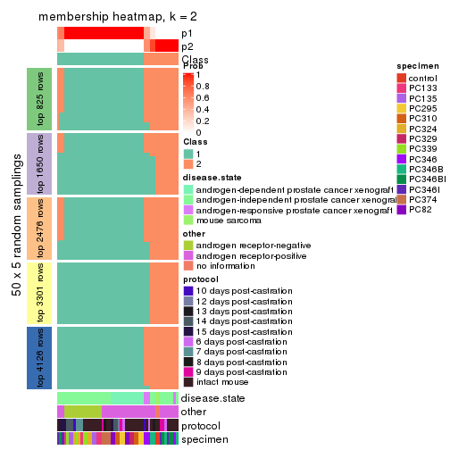
membership_heatmap(res, k = 3)
membership_heatmap(res, k = 4)
membership_heatmap(res, k = 5)
membership_heatmap(res, k = 6)
As soon as we have had the classes for columns, we can look for signatures which are significantly different between classes which can be candidate marks for certain classes. Following are the heatmaps for signatures.
Signature heatmaps where rows are scaled:
get_signatures(res, k = 2)
get_signatures(res, k = 3)
get_signatures(res, k = 4)
get_signatures(res, k = 5)
get_signatures(res, k = 6)
Signature heatmaps where rows are not scaled:
get_signatures(res, k = 2, scale_rows = FALSE)
get_signatures(res, k = 3, scale_rows = FALSE)
get_signatures(res, k = 4, scale_rows = FALSE)
get_signatures(res, k = 5, scale_rows = FALSE)
get_signatures(res, k = 6, scale_rows = FALSE)
Compare the overlap of signatures from different k:
compare_signatures(res)
get_signature() returns a data frame invisibly. TO get the list of signatures, the function
call should be assigned to a variable explicitly. In following code, if plot argument is set
to FALSE, no heatmap is plotted while only the differential analysis is performed.
# code only for demonstration
tb = get_signature(res, k = ..., plot = FALSE)
An example of the output of tb is:
#> which_row fdr mean_1 mean_2 scaled_mean_1 scaled_mean_2 km
#> 1 38 0.042760348 8.373488 9.131774 -0.5533452 0.5164555 1
#> 2 40 0.018707592 7.106213 8.469186 -0.6173731 0.5762149 1
#> 3 55 0.019134737 10.221463 11.207825 -0.6159697 0.5749050 1
#> 4 59 0.006059896 5.921854 7.869574 -0.6899429 0.6439467 1
#> 5 60 0.018055526 8.928898 10.211722 -0.6204761 0.5791110 1
#> 6 98 0.009384629 15.714769 14.887706 0.6635654 -0.6193277 2
...
The columns in tb are:
which_row: row indices corresponding to the input matrix.fdr: FDR for the differential test. mean_x: The mean value in group x.scaled_mean_x: The mean value in group x after rows are scaled.km: Row groups if k-means clustering is applied to rows.UMAP plot which shows how samples are separated.
dimension_reduction(res, k = 2, method = "UMAP")
dimension_reduction(res, k = 3, method = "UMAP")
dimension_reduction(res, k = 4, method = "UMAP")
dimension_reduction(res, k = 5, method = "UMAP")
dimension_reduction(res, k = 6, method = "UMAP")
Following heatmap shows how subgroups are split when increasing k:
collect_classes(res)
Test correlation between subgroups and known annotations. If the known annotation is numeric, one-way ANOVA test is applied, and if the known annotation is discrete, chi-squared contingency table test is applied.
test_to_known_factors(res)
#> n disease.state(p) other(p) protocol(p) specimen(p) k
#> ATC:hclust 46 3.18e-03 1.78e-03 0.393 1.42e-05 2
#> ATC:hclust 29 4.77e-03 1.30e-01 0.978 5.68e-03 3
#> ATC:hclust 50 3.70e-09 1.45e-10 0.203 1.13e-09 4
#> ATC:hclust 42 4.30e-07 4.01e-09 0.413 5.68e-08 5
#> ATC:hclust 36 2.36e-09 1.82e-11 0.559 2.80e-11 6
If matrix rows can be associated to genes, consider to use functional_enrichment(res,
...) to perform function enrichment for the signature genes. See this vignette for more detailed explanations.
The object with results only for a single top-value method and a single partition method can be extracted as:
res = res_list["ATC", "kmeans"]
# you can also extract it by
# res = res_list["ATC:kmeans"]
A summary of res and all the functions that can be applied to it:
res
#> A 'ConsensusPartition' object with k = 2, 3, 4, 5, 6.
#> On a matrix with 8252 rows and 52 columns.
#> Top rows (825, 1650, 2476, 3301, 4126) are extracted by 'ATC' method.
#> Subgroups are detected by 'kmeans' method.
#> Performed in total 1250 partitions by row resampling.
#> Best k for subgroups seems to be 2.
#>
#> Following methods can be applied to this 'ConsensusPartition' object:
#> [1] "cola_report" "collect_classes" "collect_plots"
#> [4] "collect_stats" "colnames" "compare_signatures"
#> [7] "consensus_heatmap" "dimension_reduction" "functional_enrichment"
#> [10] "get_anno_col" "get_anno" "get_classes"
#> [13] "get_consensus" "get_matrix" "get_membership"
#> [16] "get_param" "get_signatures" "get_stats"
#> [19] "is_best_k" "is_stable_k" "membership_heatmap"
#> [22] "ncol" "nrow" "plot_ecdf"
#> [25] "rownames" "select_partition_number" "show"
#> [28] "suggest_best_k" "test_to_known_factors"
collect_plots() function collects all the plots made from res for all k (number of partitions)
into one single page to provide an easy and fast comparison between different k.
collect_plots(res)
The plots are:
k and the heatmap of
predicted classes for each k.k.k.k.All the plots in panels can be made by individual functions and they are plotted later in this section.
select_partition_number() produces several plots showing different
statistics for choosing “optimized” k. There are following statistics:
k;k, the area increased is defined as \(A_k - A_{k-1}\).The detailed explanations of these statistics can be found in the cola vignette.
Generally speaking, lower PAC score, higher mean silhouette score or higher
concordance corresponds to better partition. Rand index and Jaccard index
measure how similar the current partition is compared to partition with k-1.
If they are too similar, we won't accept k is better than k-1.
select_partition_number(res)
The numeric values for all these statistics can be obtained by get_stats().
get_stats(res)
#> k 1-PAC mean_silhouette concordance area_increased Rand Jaccard
#> 2 2 1.000 0.982 0.991 0.4360 0.566 0.566
#> 3 3 0.564 0.737 0.863 0.4740 0.684 0.483
#> 4 4 0.611 0.573 0.751 0.1349 0.928 0.791
#> 5 5 0.622 0.549 0.716 0.0722 0.845 0.507
#> 6 6 0.702 0.722 0.766 0.0491 0.915 0.618
suggest_best_k() suggests the best \(k\) based on these statistics. The rules are as follows:
suggest_best_k(res)
#> [1] 2
Following shows the table of the partitions (You need to click the show/hide
code output link to see it). The membership matrix (columns with name p*)
is inferred by
clue::cl_consensus()
function with the SE method. Basically the value in the membership matrix
represents the probability to belong to a certain group. The finall class
label for an item is determined with the group with highest probability it
belongs to.
In get_classes() function, the entropy is calculated from the membership
matrix and the silhouette score is calculated from the consensus matrix.
cbind(get_classes(res, k = 2), get_membership(res, k = 2))
#> class entropy silhouette p1 p2
#> GSM92537 1 0.0000 0.991 1.000 0.000
#> GSM92539 1 0.0000 0.991 1.000 0.000
#> GSM92541 1 0.0000 0.991 1.000 0.000
#> GSM92543 1 0.0000 0.991 1.000 0.000
#> GSM92545 1 0.0000 0.991 1.000 0.000
#> GSM92546 1 0.0000 0.991 1.000 0.000
#> GSM92533 1 0.0000 0.991 1.000 0.000
#> GSM92535 1 0.0000 0.991 1.000 0.000
#> GSM92540 1 0.0000 0.991 1.000 0.000
#> GSM92538 1 0.0000 0.991 1.000 0.000
#> GSM92542 1 0.0000 0.991 1.000 0.000
#> GSM92544 1 0.0000 0.991 1.000 0.000
#> GSM92536 1 0.0000 0.991 1.000 0.000
#> GSM92534 1 0.0000 0.991 1.000 0.000
#> GSM92547 2 0.0376 0.991 0.004 0.996
#> GSM92549 2 0.1184 0.983 0.016 0.984
#> GSM92550 2 0.1184 0.983 0.016 0.984
#> GSM92548 1 0.6247 0.817 0.844 0.156
#> GSM92551 2 0.0376 0.991 0.004 0.996
#> GSM92553 2 0.0376 0.991 0.004 0.996
#> GSM92559 2 0.0376 0.991 0.004 0.996
#> GSM92561 2 0.0376 0.991 0.004 0.996
#> GSM92555 2 0.0376 0.991 0.004 0.996
#> GSM92557 2 0.0376 0.991 0.004 0.996
#> GSM92563 1 0.0000 0.991 1.000 0.000
#> GSM92565 1 0.0000 0.991 1.000 0.000
#> GSM92554 2 0.0376 0.991 0.004 0.996
#> GSM92564 1 0.0000 0.991 1.000 0.000
#> GSM92562 2 0.0376 0.991 0.004 0.996
#> GSM92558 2 0.0376 0.991 0.004 0.996
#> GSM92566 1 0.0000 0.991 1.000 0.000
#> GSM92552 2 0.0376 0.991 0.004 0.996
#> GSM92560 1 0.6247 0.817 0.844 0.156
#> GSM92556 2 0.4815 0.888 0.104 0.896
#> GSM92567 1 0.0000 0.991 1.000 0.000
#> GSM92569 1 0.0000 0.991 1.000 0.000
#> GSM92571 1 0.0000 0.991 1.000 0.000
#> GSM92573 1 0.0000 0.991 1.000 0.000
#> GSM92575 1 0.0000 0.991 1.000 0.000
#> GSM92577 1 0.0000 0.991 1.000 0.000
#> GSM92579 1 0.0000 0.991 1.000 0.000
#> GSM92581 1 0.0000 0.991 1.000 0.000
#> GSM92568 1 0.0000 0.991 1.000 0.000
#> GSM92576 1 0.0000 0.991 1.000 0.000
#> GSM92580 1 0.0000 0.991 1.000 0.000
#> GSM92578 1 0.0000 0.991 1.000 0.000
#> GSM92572 1 0.0000 0.991 1.000 0.000
#> GSM92574 1 0.0000 0.991 1.000 0.000
#> GSM92582 1 0.0000 0.991 1.000 0.000
#> GSM92570 1 0.0000 0.991 1.000 0.000
#> GSM92583 2 0.0000 0.988 0.000 1.000
#> GSM92584 2 0.0000 0.988 0.000 1.000
cbind(get_classes(res, k = 3), get_membership(res, k = 3))
#> class entropy silhouette p1 p2 p3
#> GSM92537 1 0.6026 0.3881 0.624 0.000 0.376
#> GSM92539 3 0.6307 -0.0156 0.488 0.000 0.512
#> GSM92541 1 0.0000 0.8372 1.000 0.000 0.000
#> GSM92543 1 0.2165 0.8096 0.936 0.000 0.064
#> GSM92545 1 0.0000 0.8372 1.000 0.000 0.000
#> GSM92546 1 0.0000 0.8372 1.000 0.000 0.000
#> GSM92533 1 0.4399 0.7032 0.812 0.000 0.188
#> GSM92535 1 0.0000 0.8372 1.000 0.000 0.000
#> GSM92540 1 0.4504 0.7021 0.804 0.000 0.196
#> GSM92538 1 0.6026 0.3881 0.624 0.000 0.376
#> GSM92542 1 0.0000 0.8372 1.000 0.000 0.000
#> GSM92544 1 0.0000 0.8372 1.000 0.000 0.000
#> GSM92536 1 0.0000 0.8372 1.000 0.000 0.000
#> GSM92534 1 0.0000 0.8372 1.000 0.000 0.000
#> GSM92547 2 0.0424 0.9807 0.000 0.992 0.008
#> GSM92549 3 0.6267 0.2088 0.000 0.452 0.548
#> GSM92550 3 0.6267 0.2088 0.000 0.452 0.548
#> GSM92548 3 0.3886 0.7336 0.024 0.096 0.880
#> GSM92551 2 0.0424 0.9807 0.000 0.992 0.008
#> GSM92553 2 0.0000 0.9827 0.000 1.000 0.000
#> GSM92559 2 0.0000 0.9827 0.000 1.000 0.000
#> GSM92561 2 0.0000 0.9827 0.000 1.000 0.000
#> GSM92555 2 0.0424 0.9807 0.000 0.992 0.008
#> GSM92557 2 0.0000 0.9827 0.000 1.000 0.000
#> GSM92563 1 0.6260 0.1808 0.552 0.000 0.448
#> GSM92565 1 0.2356 0.7914 0.928 0.000 0.072
#> GSM92554 2 0.0000 0.9827 0.000 1.000 0.000
#> GSM92564 3 0.4750 0.7033 0.216 0.000 0.784
#> GSM92562 2 0.0000 0.9827 0.000 1.000 0.000
#> GSM92558 2 0.0000 0.9827 0.000 1.000 0.000
#> GSM92566 1 0.2356 0.7914 0.928 0.000 0.072
#> GSM92552 2 0.0424 0.9807 0.000 0.992 0.008
#> GSM92560 3 0.3722 0.7377 0.024 0.088 0.888
#> GSM92556 3 0.3340 0.7119 0.000 0.120 0.880
#> GSM92567 3 0.3340 0.7953 0.120 0.000 0.880
#> GSM92569 3 0.3340 0.7953 0.120 0.000 0.880
#> GSM92571 3 0.3340 0.7953 0.120 0.000 0.880
#> GSM92573 3 0.3340 0.7953 0.120 0.000 0.880
#> GSM92575 3 0.6309 0.2654 0.496 0.000 0.504
#> GSM92577 3 0.5178 0.6832 0.256 0.000 0.744
#> GSM92579 3 0.3340 0.7953 0.120 0.000 0.880
#> GSM92581 3 0.3340 0.7953 0.120 0.000 0.880
#> GSM92568 3 0.3340 0.7953 0.120 0.000 0.880
#> GSM92576 3 0.6309 0.2654 0.496 0.000 0.504
#> GSM92580 3 0.5098 0.6917 0.248 0.000 0.752
#> GSM92578 3 0.6307 0.2849 0.488 0.000 0.512
#> GSM92572 3 0.3340 0.7953 0.120 0.000 0.880
#> GSM92574 3 0.3340 0.7953 0.120 0.000 0.880
#> GSM92582 3 0.3340 0.7953 0.120 0.000 0.880
#> GSM92570 3 0.3340 0.7953 0.120 0.000 0.880
#> GSM92583 2 0.3192 0.9132 0.000 0.888 0.112
#> GSM92584 2 0.3192 0.9132 0.000 0.888 0.112
cbind(get_classes(res, k = 4), get_membership(res, k = 4))
#> class entropy silhouette p1 p2 p3 p4
#> GSM92537 1 0.7398 0.3374 0.456 0.000 0.168 0.376
#> GSM92539 4 0.7216 0.0117 0.284 0.000 0.180 0.536
#> GSM92541 1 0.0469 0.7302 0.988 0.000 0.012 0.000
#> GSM92543 1 0.6167 0.6753 0.664 0.000 0.116 0.220
#> GSM92545 1 0.0469 0.7302 0.988 0.000 0.012 0.000
#> GSM92546 1 0.0469 0.7302 0.988 0.000 0.012 0.000
#> GSM92533 1 0.6503 0.6492 0.640 0.000 0.164 0.196
#> GSM92535 1 0.0469 0.7302 0.988 0.000 0.012 0.000
#> GSM92540 1 0.6746 0.6037 0.580 0.000 0.124 0.296
#> GSM92538 1 0.7398 0.3374 0.456 0.000 0.168 0.376
#> GSM92542 1 0.0469 0.7302 0.988 0.000 0.012 0.000
#> GSM92544 1 0.4804 0.7181 0.780 0.000 0.072 0.148
#> GSM92536 1 0.0469 0.7302 0.988 0.000 0.012 0.000
#> GSM92534 1 0.5457 0.7070 0.728 0.000 0.088 0.184
#> GSM92547 2 0.1022 0.9000 0.000 0.968 0.000 0.032
#> GSM92549 4 0.7565 0.3658 0.000 0.312 0.216 0.472
#> GSM92550 4 0.7565 0.3658 0.000 0.312 0.216 0.472
#> GSM92548 4 0.5760 -0.1950 0.000 0.028 0.448 0.524
#> GSM92551 2 0.2216 0.8622 0.000 0.908 0.000 0.092
#> GSM92553 2 0.0000 0.9127 0.000 1.000 0.000 0.000
#> GSM92559 2 0.0000 0.9127 0.000 1.000 0.000 0.000
#> GSM92561 2 0.0000 0.9127 0.000 1.000 0.000 0.000
#> GSM92555 2 0.4781 0.5137 0.000 0.660 0.004 0.336
#> GSM92557 2 0.0000 0.9127 0.000 1.000 0.000 0.000
#> GSM92563 4 0.7914 -0.2805 0.308 0.000 0.340 0.352
#> GSM92565 1 0.6823 0.5519 0.604 0.000 0.200 0.196
#> GSM92554 2 0.0000 0.9127 0.000 1.000 0.000 0.000
#> GSM92564 3 0.7040 -0.0599 0.120 0.000 0.460 0.420
#> GSM92562 2 0.0000 0.9127 0.000 1.000 0.000 0.000
#> GSM92558 2 0.0000 0.9127 0.000 1.000 0.000 0.000
#> GSM92566 1 0.6686 0.5549 0.620 0.000 0.200 0.180
#> GSM92552 2 0.2216 0.8622 0.000 0.908 0.000 0.092
#> GSM92560 3 0.5288 0.1281 0.000 0.008 0.520 0.472
#> GSM92556 3 0.5695 0.0679 0.000 0.024 0.500 0.476
#> GSM92567 3 0.3486 0.6154 0.000 0.000 0.812 0.188
#> GSM92569 3 0.3444 0.6162 0.000 0.000 0.816 0.184
#> GSM92571 3 0.3569 0.6120 0.000 0.000 0.804 0.196
#> GSM92573 3 0.4250 0.5251 0.000 0.000 0.724 0.276
#> GSM92575 3 0.5430 0.3611 0.300 0.000 0.664 0.036
#> GSM92577 3 0.2593 0.5725 0.016 0.000 0.904 0.080
#> GSM92579 3 0.2334 0.5805 0.004 0.000 0.908 0.088
#> GSM92581 3 0.2334 0.5805 0.004 0.000 0.908 0.088
#> GSM92568 3 0.3486 0.6154 0.000 0.000 0.812 0.188
#> GSM92576 3 0.5430 0.3611 0.300 0.000 0.664 0.036
#> GSM92580 3 0.3108 0.5601 0.016 0.000 0.872 0.112
#> GSM92578 3 0.5277 0.3716 0.304 0.000 0.668 0.028
#> GSM92572 3 0.3569 0.6120 0.000 0.000 0.804 0.196
#> GSM92574 3 0.3486 0.6171 0.000 0.000 0.812 0.188
#> GSM92582 3 0.2334 0.5805 0.004 0.000 0.908 0.088
#> GSM92570 3 0.3444 0.6162 0.000 0.000 0.816 0.184
#> GSM92583 2 0.4049 0.7647 0.008 0.780 0.000 0.212
#> GSM92584 2 0.3801 0.7647 0.000 0.780 0.000 0.220
cbind(get_classes(res, k = 5), get_membership(res, k = 5))
#> class entropy silhouette p1 p2 p3 p4 p5
#> GSM92537 4 0.6279 0.6032 0.332 0.000 0.040 0.556 0.072
#> GSM92539 4 0.6921 0.5636 0.200 0.000 0.164 0.572 0.064
#> GSM92541 1 0.0404 0.5947 0.988 0.000 0.012 0.000 0.000
#> GSM92543 1 0.5631 -0.3405 0.484 0.000 0.020 0.460 0.036
#> GSM92545 1 0.0000 0.5968 1.000 0.000 0.000 0.000 0.000
#> GSM92546 1 0.0000 0.5968 1.000 0.000 0.000 0.000 0.000
#> GSM92533 1 0.5624 -0.1756 0.544 0.000 0.012 0.392 0.052
#> GSM92535 1 0.0000 0.5968 1.000 0.000 0.000 0.000 0.000
#> GSM92540 4 0.5540 0.3743 0.428 0.000 0.020 0.520 0.032
#> GSM92538 4 0.6279 0.6032 0.332 0.000 0.040 0.556 0.072
#> GSM92542 1 0.0404 0.5947 0.988 0.000 0.012 0.000 0.000
#> GSM92544 1 0.4721 0.1803 0.656 0.000 0.012 0.316 0.016
#> GSM92536 1 0.0000 0.5968 1.000 0.000 0.000 0.000 0.000
#> GSM92534 1 0.4973 -0.0139 0.592 0.000 0.004 0.376 0.028
#> GSM92547 2 0.1106 0.8999 0.000 0.964 0.024 0.012 0.000
#> GSM92549 3 0.6250 0.3208 0.000 0.264 0.592 0.120 0.024
#> GSM92550 3 0.6250 0.3208 0.000 0.264 0.592 0.120 0.024
#> GSM92548 3 0.5460 0.4771 0.000 0.028 0.708 0.124 0.140
#> GSM92551 2 0.2886 0.8098 0.000 0.844 0.148 0.008 0.000
#> GSM92553 2 0.0000 0.9157 0.000 1.000 0.000 0.000 0.000
#> GSM92559 2 0.0000 0.9157 0.000 1.000 0.000 0.000 0.000
#> GSM92561 2 0.0000 0.9157 0.000 1.000 0.000 0.000 0.000
#> GSM92555 3 0.5459 -0.2170 0.000 0.468 0.472 0.060 0.000
#> GSM92557 2 0.0000 0.9157 0.000 1.000 0.000 0.000 0.000
#> GSM92563 4 0.6902 0.5219 0.180 0.000 0.056 0.568 0.196
#> GSM92565 1 0.7318 -0.1468 0.380 0.000 0.028 0.352 0.240
#> GSM92554 2 0.0000 0.9157 0.000 1.000 0.000 0.000 0.000
#> GSM92564 4 0.6998 0.5037 0.104 0.000 0.108 0.572 0.216
#> GSM92562 2 0.0000 0.9157 0.000 1.000 0.000 0.000 0.000
#> GSM92558 2 0.0000 0.9157 0.000 1.000 0.000 0.000 0.000
#> GSM92566 1 0.7288 -0.1153 0.396 0.000 0.028 0.344 0.232
#> GSM92552 2 0.2886 0.8098 0.000 0.844 0.148 0.008 0.000
#> GSM92560 3 0.3932 0.5223 0.000 0.000 0.796 0.064 0.140
#> GSM92556 3 0.4186 0.5217 0.000 0.012 0.796 0.064 0.128
#> GSM92567 3 0.4803 0.5236 0.000 0.000 0.536 0.020 0.444
#> GSM92569 3 0.4648 0.5109 0.000 0.000 0.524 0.012 0.464
#> GSM92571 3 0.5556 0.5264 0.000 0.000 0.524 0.072 0.404
#> GSM92573 3 0.5607 0.5311 0.000 0.000 0.540 0.080 0.380
#> GSM92575 5 0.4270 0.7253 0.204 0.000 0.000 0.048 0.748
#> GSM92577 5 0.2875 0.7468 0.020 0.000 0.032 0.060 0.888
#> GSM92579 5 0.3763 0.7484 0.016 0.000 0.056 0.096 0.832
#> GSM92581 5 0.3763 0.7484 0.016 0.000 0.056 0.096 0.832
#> GSM92568 3 0.4803 0.5236 0.000 0.000 0.536 0.020 0.444
#> GSM92576 5 0.4270 0.7253 0.204 0.000 0.000 0.048 0.748
#> GSM92580 5 0.2947 0.7740 0.020 0.000 0.016 0.088 0.876
#> GSM92578 5 0.4861 0.7210 0.204 0.000 0.024 0.044 0.728
#> GSM92572 3 0.5556 0.5264 0.000 0.000 0.524 0.072 0.404
#> GSM92574 3 0.5483 0.5148 0.000 0.000 0.512 0.064 0.424
#> GSM92582 5 0.3763 0.7484 0.016 0.000 0.056 0.096 0.832
#> GSM92570 3 0.4648 0.5109 0.000 0.000 0.524 0.012 0.464
#> GSM92583 2 0.5225 0.7107 0.000 0.692 0.080 0.216 0.012
#> GSM92584 2 0.5376 0.7107 0.000 0.692 0.096 0.196 0.016
cbind(get_classes(res, k = 6), get_membership(res, k = 6))
#> class entropy silhouette p1 p2 p3 p4 p5 p6
#> GSM92537 6 0.4027 0.641 0.164 0.000 0.024 0.028 0.008 0.776
#> GSM92539 6 0.4456 0.622 0.104 0.000 0.040 0.076 0.008 0.772
#> GSM92541 1 0.0260 0.882 0.992 0.000 0.000 0.008 0.000 0.000
#> GSM92543 6 0.4233 0.562 0.304 0.000 0.004 0.008 0.016 0.668
#> GSM92545 1 0.0000 0.885 1.000 0.000 0.000 0.000 0.000 0.000
#> GSM92546 1 0.0000 0.885 1.000 0.000 0.000 0.000 0.000 0.000
#> GSM92533 6 0.4798 0.440 0.396 0.000 0.008 0.012 0.020 0.564
#> GSM92535 1 0.0000 0.885 1.000 0.000 0.000 0.000 0.000 0.000
#> GSM92540 6 0.3618 0.623 0.212 0.000 0.004 0.008 0.012 0.764
#> GSM92538 6 0.4027 0.641 0.164 0.000 0.024 0.028 0.008 0.776
#> GSM92542 1 0.0363 0.881 0.988 0.000 0.000 0.012 0.000 0.000
#> GSM92544 1 0.4475 -0.236 0.528 0.000 0.000 0.008 0.016 0.448
#> GSM92536 1 0.0000 0.885 1.000 0.000 0.000 0.000 0.000 0.000
#> GSM92534 6 0.4798 0.407 0.412 0.000 0.004 0.012 0.024 0.548
#> GSM92547 2 0.1644 0.832 0.000 0.920 0.000 0.076 0.000 0.004
#> GSM92549 4 0.6196 0.724 0.000 0.176 0.176 0.580 0.000 0.068
#> GSM92550 4 0.6196 0.724 0.000 0.176 0.176 0.580 0.000 0.068
#> GSM92548 4 0.5471 0.681 0.000 0.032 0.304 0.588 0.000 0.076
#> GSM92551 2 0.3546 0.682 0.000 0.776 0.000 0.196 0.016 0.012
#> GSM92553 2 0.0000 0.878 0.000 1.000 0.000 0.000 0.000 0.000
#> GSM92559 2 0.0000 0.878 0.000 1.000 0.000 0.000 0.000 0.000
#> GSM92561 2 0.0000 0.878 0.000 1.000 0.000 0.000 0.000 0.000
#> GSM92555 4 0.6449 0.578 0.000 0.268 0.128 0.540 0.052 0.012
#> GSM92557 2 0.0000 0.878 0.000 1.000 0.000 0.000 0.000 0.000
#> GSM92563 6 0.6661 0.577 0.080 0.000 0.060 0.096 0.160 0.604
#> GSM92565 6 0.7829 0.408 0.204 0.000 0.044 0.092 0.272 0.388
#> GSM92554 2 0.0000 0.878 0.000 1.000 0.000 0.000 0.000 0.000
#> GSM92564 6 0.6807 0.569 0.052 0.000 0.088 0.116 0.156 0.588
#> GSM92562 2 0.0000 0.878 0.000 1.000 0.000 0.000 0.000 0.000
#> GSM92558 2 0.0000 0.878 0.000 1.000 0.000 0.000 0.000 0.000
#> GSM92566 6 0.7843 0.403 0.208 0.000 0.044 0.092 0.272 0.384
#> GSM92552 2 0.3546 0.682 0.000 0.776 0.000 0.196 0.016 0.012
#> GSM92560 4 0.4573 0.601 0.000 0.000 0.372 0.584 0.044 0.000
#> GSM92556 4 0.4686 0.616 0.000 0.004 0.364 0.588 0.044 0.000
#> GSM92567 3 0.3510 0.853 0.000 0.000 0.824 0.072 0.088 0.016
#> GSM92569 3 0.3897 0.839 0.000 0.000 0.796 0.084 0.100 0.020
#> GSM92571 3 0.0436 0.856 0.000 0.000 0.988 0.004 0.004 0.004
#> GSM92573 3 0.0508 0.846 0.000 0.000 0.984 0.012 0.000 0.004
#> GSM92575 5 0.4040 0.789 0.104 0.000 0.092 0.000 0.784 0.020
#> GSM92577 5 0.3456 0.795 0.004 0.000 0.164 0.004 0.800 0.028
#> GSM92579 5 0.5920 0.770 0.004 0.000 0.228 0.100 0.608 0.060
#> GSM92581 5 0.5920 0.770 0.004 0.000 0.228 0.100 0.608 0.060
#> GSM92568 3 0.3510 0.853 0.000 0.000 0.824 0.072 0.088 0.016
#> GSM92576 5 0.4040 0.789 0.104 0.000 0.092 0.000 0.784 0.020
#> GSM92580 5 0.4985 0.803 0.004 0.000 0.176 0.084 0.704 0.032
#> GSM92578 5 0.4303 0.784 0.108 0.000 0.104 0.000 0.764 0.024
#> GSM92572 3 0.0436 0.856 0.000 0.000 0.988 0.004 0.004 0.004
#> GSM92574 3 0.0767 0.850 0.000 0.000 0.976 0.008 0.012 0.004
#> GSM92582 5 0.5920 0.770 0.004 0.000 0.228 0.100 0.608 0.060
#> GSM92570 3 0.3897 0.839 0.000 0.000 0.796 0.084 0.100 0.020
#> GSM92583 2 0.5691 0.617 0.000 0.648 0.004 0.188 0.068 0.092
#> GSM92584 2 0.5733 0.617 0.000 0.648 0.004 0.180 0.076 0.092
Heatmaps for the consensus matrix. It visualizes the probability of two samples to be in a same group.
consensus_heatmap(res, k = 2)
consensus_heatmap(res, k = 3)
consensus_heatmap(res, k = 4)
consensus_heatmap(res, k = 5)
consensus_heatmap(res, k = 6)
Heatmaps for the membership of samples in all partitions to see how consistent they are:
membership_heatmap(res, k = 2)
membership_heatmap(res, k = 3)
membership_heatmap(res, k = 4)
membership_heatmap(res, k = 5)
membership_heatmap(res, k = 6)
As soon as we have had the classes for columns, we can look for signatures which are significantly different between classes which can be candidate marks for certain classes. Following are the heatmaps for signatures.
Signature heatmaps where rows are scaled:
get_signatures(res, k = 2)
get_signatures(res, k = 3)
get_signatures(res, k = 4)
get_signatures(res, k = 5)
get_signatures(res, k = 6)
Signature heatmaps where rows are not scaled:
get_signatures(res, k = 2, scale_rows = FALSE)
get_signatures(res, k = 3, scale_rows = FALSE)
get_signatures(res, k = 4, scale_rows = FALSE)
get_signatures(res, k = 5, scale_rows = FALSE)
get_signatures(res, k = 6, scale_rows = FALSE)
Compare the overlap of signatures from different k:
compare_signatures(res)
get_signature() returns a data frame invisibly. TO get the list of signatures, the function
call should be assigned to a variable explicitly. In following code, if plot argument is set
to FALSE, no heatmap is plotted while only the differential analysis is performed.
# code only for demonstration
tb = get_signature(res, k = ..., plot = FALSE)
An example of the output of tb is:
#> which_row fdr mean_1 mean_2 scaled_mean_1 scaled_mean_2 km
#> 1 38 0.042760348 8.373488 9.131774 -0.5533452 0.5164555 1
#> 2 40 0.018707592 7.106213 8.469186 -0.6173731 0.5762149 1
#> 3 55 0.019134737 10.221463 11.207825 -0.6159697 0.5749050 1
#> 4 59 0.006059896 5.921854 7.869574 -0.6899429 0.6439467 1
#> 5 60 0.018055526 8.928898 10.211722 -0.6204761 0.5791110 1
#> 6 98 0.009384629 15.714769 14.887706 0.6635654 -0.6193277 2
...
The columns in tb are:
which_row: row indices corresponding to the input matrix.fdr: FDR for the differential test. mean_x: The mean value in group x.scaled_mean_x: The mean value in group x after rows are scaled.km: Row groups if k-means clustering is applied to rows.UMAP plot which shows how samples are separated.
dimension_reduction(res, k = 2, method = "UMAP")
dimension_reduction(res, k = 3, method = "UMAP")
dimension_reduction(res, k = 4, method = "UMAP")
dimension_reduction(res, k = 5, method = "UMAP")
dimension_reduction(res, k = 6, method = "UMAP")
Following heatmap shows how subgroups are split when increasing k:
collect_classes(res)
Test correlation between subgroups and known annotations. If the known annotation is numeric, one-way ANOVA test is applied, and if the known annotation is discrete, chi-squared contingency table test is applied.
test_to_known_factors(res)
#> n disease.state(p) other(p) protocol(p) specimen(p) k
#> ATC:kmeans 52 2.20e-03 1.27e-03 0.313 2.13e-05 2
#> ATC:kmeans 43 9.68e-07 1.74e-06 0.313 5.73e-06 3
#> ATC:kmeans 39 3.07e-06 1.48e-08 0.368 4.25e-07 4
#> ATC:kmeans 41 5.08e-05 7.82e-06 0.150 6.22e-12 5
#> ATC:kmeans 47 3.43e-07 1.08e-07 0.267 4.71e-15 6
If matrix rows can be associated to genes, consider to use functional_enrichment(res,
...) to perform function enrichment for the signature genes. See this vignette for more detailed explanations.
The object with results only for a single top-value method and a single partition method can be extracted as:
res = res_list["ATC", "skmeans"]
# you can also extract it by
# res = res_list["ATC:skmeans"]
A summary of res and all the functions that can be applied to it:
res
#> A 'ConsensusPartition' object with k = 2, 3, 4, 5, 6.
#> On a matrix with 8252 rows and 52 columns.
#> Top rows (825, 1650, 2476, 3301, 4126) are extracted by 'ATC' method.
#> Subgroups are detected by 'skmeans' method.
#> Performed in total 1250 partitions by row resampling.
#> Best k for subgroups seems to be 2.
#>
#> Following methods can be applied to this 'ConsensusPartition' object:
#> [1] "cola_report" "collect_classes" "collect_plots"
#> [4] "collect_stats" "colnames" "compare_signatures"
#> [7] "consensus_heatmap" "dimension_reduction" "functional_enrichment"
#> [10] "get_anno_col" "get_anno" "get_classes"
#> [13] "get_consensus" "get_matrix" "get_membership"
#> [16] "get_param" "get_signatures" "get_stats"
#> [19] "is_best_k" "is_stable_k" "membership_heatmap"
#> [22] "ncol" "nrow" "plot_ecdf"
#> [25] "rownames" "select_partition_number" "show"
#> [28] "suggest_best_k" "test_to_known_factors"
collect_plots() function collects all the plots made from res for all k (number of partitions)
into one single page to provide an easy and fast comparison between different k.
collect_plots(res)
The plots are:
k and the heatmap of
predicted classes for each k.k.k.k.All the plots in panels can be made by individual functions and they are plotted later in this section.
select_partition_number() produces several plots showing different
statistics for choosing “optimized” k. There are following statistics:
k;k, the area increased is defined as \(A_k - A_{k-1}\).The detailed explanations of these statistics can be found in the cola vignette.
Generally speaking, lower PAC score, higher mean silhouette score or higher
concordance corresponds to better partition. Rand index and Jaccard index
measure how similar the current partition is compared to partition with k-1.
If they are too similar, we won't accept k is better than k-1.
select_partition_number(res)
The numeric values for all these statistics can be obtained by get_stats().
get_stats(res)
#> k 1-PAC mean_silhouette concordance area_increased Rand Jaccard
#> 2 2 1.000 0.975 0.989 0.4845 0.517 0.517
#> 3 3 0.837 0.944 0.961 0.3808 0.756 0.549
#> 4 4 0.816 0.912 0.905 0.0855 0.933 0.795
#> 5 5 0.846 0.877 0.894 0.0605 0.958 0.841
#> 6 6 0.801 0.878 0.874 0.0431 0.970 0.865
suggest_best_k() suggests the best \(k\) based on these statistics. The rules are as follows:
suggest_best_k(res)
#> [1] 2
Following shows the table of the partitions (You need to click the show/hide
code output link to see it). The membership matrix (columns with name p*)
is inferred by
clue::cl_consensus()
function with the SE method. Basically the value in the membership matrix
represents the probability to belong to a certain group. The finall class
label for an item is determined with the group with highest probability it
belongs to.
In get_classes() function, the entropy is calculated from the membership
matrix and the silhouette score is calculated from the consensus matrix.
cbind(get_classes(res, k = 2), get_membership(res, k = 2))
#> class entropy silhouette p1 p2
#> GSM92537 1 0.000 0.987 1.000 0.000
#> GSM92539 2 0.697 0.762 0.188 0.812
#> GSM92541 1 0.000 0.987 1.000 0.000
#> GSM92543 1 0.000 0.987 1.000 0.000
#> GSM92545 1 0.000 0.987 1.000 0.000
#> GSM92546 1 0.000 0.987 1.000 0.000
#> GSM92533 1 0.000 0.987 1.000 0.000
#> GSM92535 1 0.000 0.987 1.000 0.000
#> GSM92540 1 0.000 0.987 1.000 0.000
#> GSM92538 1 0.494 0.874 0.892 0.108
#> GSM92542 1 0.000 0.987 1.000 0.000
#> GSM92544 1 0.000 0.987 1.000 0.000
#> GSM92536 1 0.000 0.987 1.000 0.000
#> GSM92534 1 0.000 0.987 1.000 0.000
#> GSM92547 2 0.000 0.990 0.000 1.000
#> GSM92549 2 0.000 0.990 0.000 1.000
#> GSM92550 2 0.000 0.990 0.000 1.000
#> GSM92548 2 0.000 0.990 0.000 1.000
#> GSM92551 2 0.000 0.990 0.000 1.000
#> GSM92553 2 0.000 0.990 0.000 1.000
#> GSM92559 2 0.000 0.990 0.000 1.000
#> GSM92561 2 0.000 0.990 0.000 1.000
#> GSM92555 2 0.000 0.990 0.000 1.000
#> GSM92557 2 0.000 0.990 0.000 1.000
#> GSM92563 1 0.000 0.987 1.000 0.000
#> GSM92565 1 0.000 0.987 1.000 0.000
#> GSM92554 2 0.000 0.990 0.000 1.000
#> GSM92564 1 0.000 0.987 1.000 0.000
#> GSM92562 2 0.000 0.990 0.000 1.000
#> GSM92558 2 0.000 0.990 0.000 1.000
#> GSM92566 1 0.000 0.987 1.000 0.000
#> GSM92552 2 0.000 0.990 0.000 1.000
#> GSM92560 2 0.000 0.990 0.000 1.000
#> GSM92556 2 0.000 0.990 0.000 1.000
#> GSM92567 1 0.000 0.987 1.000 0.000
#> GSM92569 1 0.000 0.987 1.000 0.000
#> GSM92571 1 0.000 0.987 1.000 0.000
#> GSM92573 2 0.000 0.990 0.000 1.000
#> GSM92575 1 0.000 0.987 1.000 0.000
#> GSM92577 1 0.000 0.987 1.000 0.000
#> GSM92579 1 0.000 0.987 1.000 0.000
#> GSM92581 1 0.000 0.987 1.000 0.000
#> GSM92568 1 0.850 0.614 0.724 0.276
#> GSM92576 1 0.000 0.987 1.000 0.000
#> GSM92580 1 0.000 0.987 1.000 0.000
#> GSM92578 1 0.000 0.987 1.000 0.000
#> GSM92572 1 0.000 0.987 1.000 0.000
#> GSM92574 1 0.000 0.987 1.000 0.000
#> GSM92582 1 0.000 0.987 1.000 0.000
#> GSM92570 1 0.000 0.987 1.000 0.000
#> GSM92583 2 0.000 0.990 0.000 1.000
#> GSM92584 2 0.000 0.990 0.000 1.000
cbind(get_classes(res, k = 3), get_membership(res, k = 3))
#> class entropy silhouette p1 p2 p3
#> GSM92537 1 0.0000 0.984 1.000 0.000 0.000
#> GSM92539 1 0.4702 0.707 0.788 0.212 0.000
#> GSM92541 1 0.0000 0.984 1.000 0.000 0.000
#> GSM92543 1 0.0000 0.984 1.000 0.000 0.000
#> GSM92545 1 0.0000 0.984 1.000 0.000 0.000
#> GSM92546 1 0.0000 0.984 1.000 0.000 0.000
#> GSM92533 1 0.0000 0.984 1.000 0.000 0.000
#> GSM92535 1 0.0000 0.984 1.000 0.000 0.000
#> GSM92540 1 0.0000 0.984 1.000 0.000 0.000
#> GSM92538 1 0.0000 0.984 1.000 0.000 0.000
#> GSM92542 1 0.0000 0.984 1.000 0.000 0.000
#> GSM92544 1 0.0000 0.984 1.000 0.000 0.000
#> GSM92536 1 0.0000 0.984 1.000 0.000 0.000
#> GSM92534 1 0.0000 0.984 1.000 0.000 0.000
#> GSM92547 2 0.0000 0.991 0.000 1.000 0.000
#> GSM92549 2 0.0000 0.991 0.000 1.000 0.000
#> GSM92550 2 0.0000 0.991 0.000 1.000 0.000
#> GSM92548 2 0.0000 0.991 0.000 1.000 0.000
#> GSM92551 2 0.0000 0.991 0.000 1.000 0.000
#> GSM92553 2 0.0000 0.991 0.000 1.000 0.000
#> GSM92559 2 0.0000 0.991 0.000 1.000 0.000
#> GSM92561 2 0.0000 0.991 0.000 1.000 0.000
#> GSM92555 2 0.0000 0.991 0.000 1.000 0.000
#> GSM92557 2 0.0000 0.991 0.000 1.000 0.000
#> GSM92563 1 0.0000 0.984 1.000 0.000 0.000
#> GSM92565 1 0.0000 0.984 1.000 0.000 0.000
#> GSM92554 2 0.0000 0.991 0.000 1.000 0.000
#> GSM92564 1 0.0000 0.984 1.000 0.000 0.000
#> GSM92562 2 0.0000 0.991 0.000 1.000 0.000
#> GSM92558 2 0.0000 0.991 0.000 1.000 0.000
#> GSM92566 1 0.0000 0.984 1.000 0.000 0.000
#> GSM92552 2 0.0000 0.991 0.000 1.000 0.000
#> GSM92560 2 0.3941 0.835 0.000 0.844 0.156
#> GSM92556 2 0.0000 0.991 0.000 1.000 0.000
#> GSM92567 3 0.0000 0.880 0.000 0.000 1.000
#> GSM92569 3 0.0000 0.880 0.000 0.000 1.000
#> GSM92571 3 0.0000 0.880 0.000 0.000 1.000
#> GSM92573 3 0.0592 0.874 0.000 0.012 0.988
#> GSM92575 3 0.4605 0.864 0.204 0.000 0.796
#> GSM92577 3 0.4605 0.864 0.204 0.000 0.796
#> GSM92579 3 0.4605 0.864 0.204 0.000 0.796
#> GSM92581 3 0.4605 0.864 0.204 0.000 0.796
#> GSM92568 3 0.0000 0.880 0.000 0.000 1.000
#> GSM92576 3 0.4605 0.864 0.204 0.000 0.796
#> GSM92580 3 0.4605 0.864 0.204 0.000 0.796
#> GSM92578 3 0.4605 0.864 0.204 0.000 0.796
#> GSM92572 3 0.0000 0.880 0.000 0.000 1.000
#> GSM92574 3 0.0000 0.880 0.000 0.000 1.000
#> GSM92582 3 0.4605 0.864 0.204 0.000 0.796
#> GSM92570 3 0.0000 0.880 0.000 0.000 1.000
#> GSM92583 2 0.0000 0.991 0.000 1.000 0.000
#> GSM92584 2 0.0000 0.991 0.000 1.000 0.000
cbind(get_classes(res, k = 4), get_membership(res, k = 4))
#> class entropy silhouette p1 p2 p3 p4
#> GSM92537 1 0.4304 0.714 0.716 0.000 0.000 0.284
#> GSM92539 1 0.4857 0.701 0.700 0.016 0.000 0.284
#> GSM92541 1 0.0000 0.868 1.000 0.000 0.000 0.000
#> GSM92543 1 0.0188 0.866 0.996 0.000 0.000 0.004
#> GSM92545 1 0.0000 0.868 1.000 0.000 0.000 0.000
#> GSM92546 1 0.0000 0.868 1.000 0.000 0.000 0.000
#> GSM92533 1 0.0000 0.868 1.000 0.000 0.000 0.000
#> GSM92535 1 0.0000 0.868 1.000 0.000 0.000 0.000
#> GSM92540 1 0.4304 0.714 0.716 0.000 0.000 0.284
#> GSM92538 1 0.4304 0.714 0.716 0.000 0.000 0.284
#> GSM92542 1 0.0000 0.868 1.000 0.000 0.000 0.000
#> GSM92544 1 0.0000 0.868 1.000 0.000 0.000 0.000
#> GSM92536 1 0.0000 0.868 1.000 0.000 0.000 0.000
#> GSM92534 1 0.0000 0.868 1.000 0.000 0.000 0.000
#> GSM92547 2 0.0000 0.995 0.000 1.000 0.000 0.000
#> GSM92549 2 0.0000 0.995 0.000 1.000 0.000 0.000
#> GSM92550 2 0.0000 0.995 0.000 1.000 0.000 0.000
#> GSM92548 2 0.0000 0.995 0.000 1.000 0.000 0.000
#> GSM92551 2 0.0000 0.995 0.000 1.000 0.000 0.000
#> GSM92553 2 0.0000 0.995 0.000 1.000 0.000 0.000
#> GSM92559 2 0.0000 0.995 0.000 1.000 0.000 0.000
#> GSM92561 2 0.0000 0.995 0.000 1.000 0.000 0.000
#> GSM92555 2 0.0000 0.995 0.000 1.000 0.000 0.000
#> GSM92557 2 0.0000 0.995 0.000 1.000 0.000 0.000
#> GSM92563 1 0.4590 0.763 0.772 0.000 0.036 0.192
#> GSM92565 1 0.3497 0.769 0.860 0.000 0.036 0.104
#> GSM92554 2 0.0000 0.995 0.000 1.000 0.000 0.000
#> GSM92564 1 0.4590 0.763 0.772 0.000 0.036 0.192
#> GSM92562 2 0.0000 0.995 0.000 1.000 0.000 0.000
#> GSM92558 2 0.0000 0.995 0.000 1.000 0.000 0.000
#> GSM92566 1 0.3497 0.769 0.860 0.000 0.036 0.104
#> GSM92552 2 0.0000 0.995 0.000 1.000 0.000 0.000
#> GSM92560 3 0.3942 0.680 0.000 0.236 0.764 0.000
#> GSM92556 2 0.1716 0.929 0.000 0.936 0.064 0.000
#> GSM92567 3 0.1211 0.931 0.000 0.000 0.960 0.040
#> GSM92569 3 0.1211 0.931 0.000 0.000 0.960 0.040
#> GSM92571 3 0.0000 0.933 0.000 0.000 1.000 0.000
#> GSM92573 3 0.1004 0.914 0.000 0.004 0.972 0.024
#> GSM92575 4 0.5873 0.981 0.256 0.000 0.076 0.668
#> GSM92577 4 0.5970 0.986 0.244 0.000 0.088 0.668
#> GSM92579 4 0.6025 0.986 0.236 0.000 0.096 0.668
#> GSM92581 4 0.6025 0.986 0.236 0.000 0.096 0.668
#> GSM92568 3 0.1211 0.931 0.000 0.000 0.960 0.040
#> GSM92576 4 0.5873 0.981 0.256 0.000 0.076 0.668
#> GSM92580 4 0.6025 0.986 0.236 0.000 0.096 0.668
#> GSM92578 4 0.5873 0.981 0.256 0.000 0.076 0.668
#> GSM92572 3 0.0000 0.933 0.000 0.000 1.000 0.000
#> GSM92574 3 0.0000 0.933 0.000 0.000 1.000 0.000
#> GSM92582 4 0.6025 0.986 0.236 0.000 0.096 0.668
#> GSM92570 3 0.1211 0.931 0.000 0.000 0.960 0.040
#> GSM92583 2 0.0188 0.993 0.000 0.996 0.000 0.004
#> GSM92584 2 0.0188 0.993 0.000 0.996 0.000 0.004
cbind(get_classes(res, k = 5), get_membership(res, k = 5))
#> class entropy silhouette p1 p2 p3 p4 p5
#> GSM92537 4 0.2127 0.998 0.108 0.000 0.000 0.892 0.000
#> GSM92539 4 0.2074 0.993 0.104 0.000 0.000 0.896 0.000
#> GSM92541 1 0.4329 0.809 0.672 0.000 0.000 0.312 0.016
#> GSM92543 1 0.4329 0.809 0.672 0.000 0.000 0.312 0.016
#> GSM92545 1 0.4329 0.809 0.672 0.000 0.000 0.312 0.016
#> GSM92546 1 0.4329 0.809 0.672 0.000 0.000 0.312 0.016
#> GSM92533 1 0.4329 0.809 0.672 0.000 0.000 0.312 0.016
#> GSM92535 1 0.4329 0.809 0.672 0.000 0.000 0.312 0.016
#> GSM92540 4 0.2127 0.998 0.108 0.000 0.000 0.892 0.000
#> GSM92538 4 0.2127 0.998 0.108 0.000 0.000 0.892 0.000
#> GSM92542 1 0.4329 0.809 0.672 0.000 0.000 0.312 0.016
#> GSM92544 1 0.4329 0.809 0.672 0.000 0.000 0.312 0.016
#> GSM92536 1 0.4329 0.809 0.672 0.000 0.000 0.312 0.016
#> GSM92534 1 0.4329 0.809 0.672 0.000 0.000 0.312 0.016
#> GSM92547 2 0.0000 0.966 0.000 1.000 0.000 0.000 0.000
#> GSM92549 2 0.1764 0.938 0.000 0.928 0.000 0.064 0.008
#> GSM92550 2 0.1764 0.938 0.000 0.928 0.000 0.064 0.008
#> GSM92548 2 0.2388 0.921 0.000 0.900 0.000 0.072 0.028
#> GSM92551 2 0.0000 0.966 0.000 1.000 0.000 0.000 0.000
#> GSM92553 2 0.0000 0.966 0.000 1.000 0.000 0.000 0.000
#> GSM92559 2 0.0000 0.966 0.000 1.000 0.000 0.000 0.000
#> GSM92561 2 0.0000 0.966 0.000 1.000 0.000 0.000 0.000
#> GSM92555 2 0.1270 0.950 0.000 0.948 0.000 0.052 0.000
#> GSM92557 2 0.0000 0.966 0.000 1.000 0.000 0.000 0.000
#> GSM92563 1 0.1617 0.538 0.948 0.000 0.012 0.020 0.020
#> GSM92565 1 0.0912 0.560 0.972 0.000 0.012 0.000 0.016
#> GSM92554 2 0.0000 0.966 0.000 1.000 0.000 0.000 0.000
#> GSM92564 1 0.2263 0.506 0.920 0.000 0.020 0.036 0.024
#> GSM92562 2 0.0000 0.966 0.000 1.000 0.000 0.000 0.000
#> GSM92558 2 0.0000 0.966 0.000 1.000 0.000 0.000 0.000
#> GSM92566 1 0.0912 0.560 0.972 0.000 0.012 0.000 0.016
#> GSM92552 2 0.0000 0.966 0.000 1.000 0.000 0.000 0.000
#> GSM92560 3 0.5280 0.671 0.000 0.152 0.724 0.092 0.032
#> GSM92556 2 0.4233 0.841 0.000 0.808 0.072 0.092 0.028
#> GSM92567 3 0.0703 0.948 0.000 0.000 0.976 0.000 0.024
#> GSM92569 3 0.0703 0.948 0.000 0.000 0.976 0.000 0.024
#> GSM92571 3 0.1018 0.947 0.000 0.000 0.968 0.016 0.016
#> GSM92573 3 0.1059 0.937 0.004 0.000 0.968 0.020 0.008
#> GSM92575 5 0.3300 0.873 0.204 0.000 0.004 0.000 0.792
#> GSM92577 5 0.3318 0.878 0.192 0.000 0.008 0.000 0.800
#> GSM92579 5 0.1364 0.883 0.036 0.000 0.012 0.000 0.952
#> GSM92581 5 0.1364 0.883 0.036 0.000 0.012 0.000 0.952
#> GSM92568 3 0.0703 0.948 0.000 0.000 0.976 0.000 0.024
#> GSM92576 5 0.3300 0.873 0.204 0.000 0.004 0.000 0.792
#> GSM92580 5 0.1364 0.883 0.036 0.000 0.012 0.000 0.952
#> GSM92578 5 0.3300 0.873 0.204 0.000 0.004 0.000 0.792
#> GSM92572 3 0.1179 0.946 0.004 0.000 0.964 0.016 0.016
#> GSM92574 3 0.1018 0.947 0.000 0.000 0.968 0.016 0.016
#> GSM92582 5 0.1364 0.883 0.036 0.000 0.012 0.000 0.952
#> GSM92570 3 0.0703 0.948 0.000 0.000 0.976 0.000 0.024
#> GSM92583 2 0.1608 0.926 0.000 0.928 0.000 0.072 0.000
#> GSM92584 2 0.1608 0.926 0.000 0.928 0.000 0.072 0.000
cbind(get_classes(res, k = 6), get_membership(res, k = 6))
#> class entropy silhouette p1 p2 p3 p4 p5 p6
#> GSM92537 4 0.2823 0.991 0.204 0.000 0.000 0.796 0.000 0.000
#> GSM92539 4 0.2823 0.991 0.204 0.000 0.000 0.796 0.000 0.000
#> GSM92541 1 0.0000 0.999 1.000 0.000 0.000 0.000 0.000 0.000
#> GSM92543 1 0.0146 0.992 0.996 0.000 0.000 0.004 0.000 0.000
#> GSM92545 1 0.0000 0.999 1.000 0.000 0.000 0.000 0.000 0.000
#> GSM92546 1 0.0000 0.999 1.000 0.000 0.000 0.000 0.000 0.000
#> GSM92533 1 0.0000 0.999 1.000 0.000 0.000 0.000 0.000 0.000
#> GSM92535 1 0.0000 0.999 1.000 0.000 0.000 0.000 0.000 0.000
#> GSM92540 4 0.2762 0.991 0.196 0.000 0.000 0.804 0.000 0.000
#> GSM92538 4 0.2730 0.987 0.192 0.000 0.000 0.808 0.000 0.000
#> GSM92542 1 0.0000 0.999 1.000 0.000 0.000 0.000 0.000 0.000
#> GSM92544 1 0.0000 0.999 1.000 0.000 0.000 0.000 0.000 0.000
#> GSM92536 1 0.0000 0.999 1.000 0.000 0.000 0.000 0.000 0.000
#> GSM92534 1 0.0000 0.999 1.000 0.000 0.000 0.000 0.000 0.000
#> GSM92547 2 0.0146 0.899 0.000 0.996 0.000 0.000 0.000 0.004
#> GSM92549 2 0.3337 0.753 0.000 0.736 0.000 0.004 0.000 0.260
#> GSM92550 2 0.3445 0.750 0.000 0.732 0.000 0.008 0.000 0.260
#> GSM92548 2 0.3885 0.711 0.000 0.684 0.004 0.012 0.000 0.300
#> GSM92551 2 0.0000 0.900 0.000 1.000 0.000 0.000 0.000 0.000
#> GSM92553 2 0.0000 0.900 0.000 1.000 0.000 0.000 0.000 0.000
#> GSM92559 2 0.0000 0.900 0.000 1.000 0.000 0.000 0.000 0.000
#> GSM92561 2 0.0000 0.900 0.000 1.000 0.000 0.000 0.000 0.000
#> GSM92555 2 0.2274 0.858 0.000 0.892 0.008 0.012 0.000 0.088
#> GSM92557 2 0.0000 0.900 0.000 1.000 0.000 0.000 0.000 0.000
#> GSM92563 6 0.5425 0.908 0.372 0.000 0.000 0.124 0.000 0.504
#> GSM92565 6 0.5423 0.902 0.440 0.000 0.000 0.116 0.000 0.444
#> GSM92554 2 0.0000 0.900 0.000 1.000 0.000 0.000 0.000 0.000
#> GSM92564 6 0.5525 0.893 0.356 0.000 0.000 0.124 0.004 0.516
#> GSM92562 2 0.0000 0.900 0.000 1.000 0.000 0.000 0.000 0.000
#> GSM92558 2 0.0000 0.900 0.000 1.000 0.000 0.000 0.000 0.000
#> GSM92566 6 0.5423 0.902 0.440 0.000 0.000 0.116 0.000 0.444
#> GSM92552 2 0.0000 0.900 0.000 1.000 0.000 0.000 0.000 0.000
#> GSM92560 3 0.5212 0.453 0.000 0.060 0.544 0.016 0.000 0.380
#> GSM92556 2 0.5895 0.456 0.000 0.484 0.124 0.020 0.000 0.372
#> GSM92567 3 0.0363 0.858 0.000 0.000 0.988 0.000 0.012 0.000
#> GSM92569 3 0.0692 0.856 0.000 0.000 0.976 0.000 0.020 0.004
#> GSM92571 3 0.3413 0.850 0.000 0.000 0.824 0.052 0.012 0.112
#> GSM92573 3 0.4159 0.821 0.000 0.004 0.752 0.056 0.008 0.180
#> GSM92575 5 0.3976 0.823 0.172 0.000 0.000 0.020 0.768 0.040
#> GSM92577 5 0.4082 0.824 0.168 0.000 0.004 0.020 0.768 0.040
#> GSM92579 5 0.0260 0.846 0.008 0.000 0.000 0.000 0.992 0.000
#> GSM92581 5 0.0260 0.846 0.008 0.000 0.000 0.000 0.992 0.000
#> GSM92568 3 0.0260 0.858 0.000 0.000 0.992 0.000 0.008 0.000
#> GSM92576 5 0.3976 0.823 0.172 0.000 0.000 0.020 0.768 0.040
#> GSM92580 5 0.0260 0.846 0.008 0.000 0.000 0.000 0.992 0.000
#> GSM92578 5 0.4010 0.819 0.176 0.000 0.000 0.020 0.764 0.040
#> GSM92572 3 0.3413 0.850 0.000 0.000 0.824 0.052 0.012 0.112
#> GSM92574 3 0.3457 0.849 0.000 0.000 0.820 0.052 0.012 0.116
#> GSM92582 5 0.0260 0.846 0.008 0.000 0.000 0.000 0.992 0.000
#> GSM92570 3 0.0692 0.856 0.000 0.000 0.976 0.000 0.020 0.004
#> GSM92583 2 0.2003 0.829 0.000 0.884 0.000 0.116 0.000 0.000
#> GSM92584 2 0.2003 0.829 0.000 0.884 0.000 0.116 0.000 0.000
Heatmaps for the consensus matrix. It visualizes the probability of two samples to be in a same group.
consensus_heatmap(res, k = 2)
consensus_heatmap(res, k = 3)
consensus_heatmap(res, k = 4)
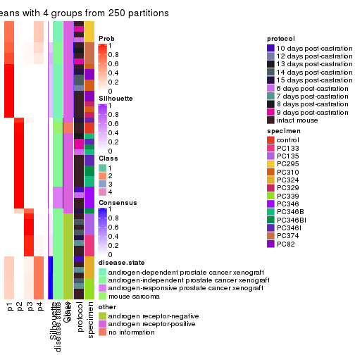
consensus_heatmap(res, k = 5)
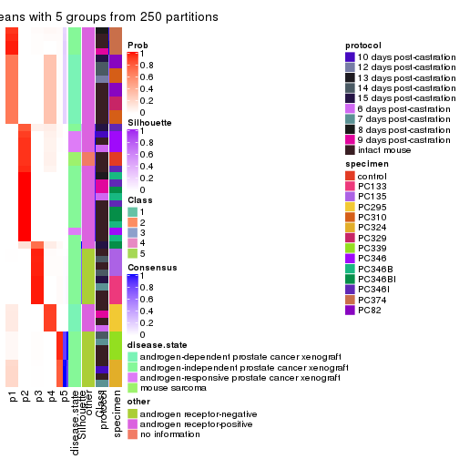
consensus_heatmap(res, k = 6)
Heatmaps for the membership of samples in all partitions to see how consistent they are:
membership_heatmap(res, k = 2)
membership_heatmap(res, k = 3)
membership_heatmap(res, k = 4)
membership_heatmap(res, k = 5)
membership_heatmap(res, k = 6)
As soon as we have had the classes for columns, we can look for signatures which are significantly different between classes which can be candidate marks for certain classes. Following are the heatmaps for signatures.
Signature heatmaps where rows are scaled:
get_signatures(res, k = 2)
get_signatures(res, k = 3)
get_signatures(res, k = 4)
get_signatures(res, k = 5)

get_signatures(res, k = 6)

Signature heatmaps where rows are not scaled:
get_signatures(res, k = 2, scale_rows = FALSE)
get_signatures(res, k = 3, scale_rows = FALSE)
get_signatures(res, k = 4, scale_rows = FALSE)
get_signatures(res, k = 5, scale_rows = FALSE)
get_signatures(res, k = 6, scale_rows = FALSE)
Compare the overlap of signatures from different k:
compare_signatures(res)
get_signature() returns a data frame invisibly. TO get the list of signatures, the function
call should be assigned to a variable explicitly. In following code, if plot argument is set
to FALSE, no heatmap is plotted while only the differential analysis is performed.
# code only for demonstration
tb = get_signature(res, k = ..., plot = FALSE)
An example of the output of tb is:
#> which_row fdr mean_1 mean_2 scaled_mean_1 scaled_mean_2 km
#> 1 38 0.042760348 8.373488 9.131774 -0.5533452 0.5164555 1
#> 2 40 0.018707592 7.106213 8.469186 -0.6173731 0.5762149 1
#> 3 55 0.019134737 10.221463 11.207825 -0.6159697 0.5749050 1
#> 4 59 0.006059896 5.921854 7.869574 -0.6899429 0.6439467 1
#> 5 60 0.018055526 8.928898 10.211722 -0.6204761 0.5791110 1
#> 6 98 0.009384629 15.714769 14.887706 0.6635654 -0.6193277 2
...
The columns in tb are:
which_row: row indices corresponding to the input matrix.fdr: FDR for the differential test. mean_x: The mean value in group x.scaled_mean_x: The mean value in group x after rows are scaled.km: Row groups if k-means clustering is applied to rows.UMAP plot which shows how samples are separated.
dimension_reduction(res, k = 2, method = "UMAP")
dimension_reduction(res, k = 3, method = "UMAP")
dimension_reduction(res, k = 4, method = "UMAP")
dimension_reduction(res, k = 5, method = "UMAP")

dimension_reduction(res, k = 6, method = "UMAP")
Following heatmap shows how subgroups are split when increasing k:
collect_classes(res)
Test correlation between subgroups and known annotations. If the known annotation is numeric, one-way ANOVA test is applied, and if the known annotation is discrete, chi-squared contingency table test is applied.
test_to_known_factors(res)
#> n disease.state(p) other(p) protocol(p) specimen(p) k
#> ATC:skmeans 52 1.46e-03 2.33e-03 0.380 1.62e-05 2
#> ATC:skmeans 52 2.67e-08 3.16e-11 0.293 2.75e-11 3
#> ATC:skmeans 52 3.26e-07 2.74e-09 0.466 7.90e-15 4
#> ATC:skmeans 52 2.28e-06 2.43e-08 0.556 1.90e-19 5
#> ATC:skmeans 50 9.33e-08 5.97e-08 0.367 1.68e-23 6
If matrix rows can be associated to genes, consider to use functional_enrichment(res,
...) to perform function enrichment for the signature genes. See this vignette for more detailed explanations.
The object with results only for a single top-value method and a single partition method can be extracted as:
res = res_list["ATC", "pam"]
# you can also extract it by
# res = res_list["ATC:pam"]
A summary of res and all the functions that can be applied to it:
res
#> A 'ConsensusPartition' object with k = 2, 3, 4, 5, 6.
#> On a matrix with 8252 rows and 52 columns.
#> Top rows (825, 1650, 2476, 3301, 4126) are extracted by 'ATC' method.
#> Subgroups are detected by 'pam' method.
#> Performed in total 1250 partitions by row resampling.
#> Best k for subgroups seems to be 2.
#>
#> Following methods can be applied to this 'ConsensusPartition' object:
#> [1] "cola_report" "collect_classes" "collect_plots"
#> [4] "collect_stats" "colnames" "compare_signatures"
#> [7] "consensus_heatmap" "dimension_reduction" "functional_enrichment"
#> [10] "get_anno_col" "get_anno" "get_classes"
#> [13] "get_consensus" "get_matrix" "get_membership"
#> [16] "get_param" "get_signatures" "get_stats"
#> [19] "is_best_k" "is_stable_k" "membership_heatmap"
#> [22] "ncol" "nrow" "plot_ecdf"
#> [25] "rownames" "select_partition_number" "show"
#> [28] "suggest_best_k" "test_to_known_factors"
collect_plots() function collects all the plots made from res for all k (number of partitions)
into one single page to provide an easy and fast comparison between different k.
collect_plots(res)
The plots are:
k and the heatmap of
predicted classes for each k.k.k.k.All the plots in panels can be made by individual functions and they are plotted later in this section.
select_partition_number() produces several plots showing different
statistics for choosing “optimized” k. There are following statistics:
k;k, the area increased is defined as \(A_k - A_{k-1}\).The detailed explanations of these statistics can be found in the cola vignette.
Generally speaking, lower PAC score, higher mean silhouette score or higher
concordance corresponds to better partition. Rand index and Jaccard index
measure how similar the current partition is compared to partition with k-1.
If they are too similar, we won't accept k is better than k-1.
select_partition_number(res)
The numeric values for all these statistics can be obtained by get_stats().
get_stats(res)
#> k 1-PAC mean_silhouette concordance area_increased Rand Jaccard
#> 2 2 1.000 0.999 1.000 0.4194 0.581 0.581
#> 3 3 0.712 0.779 0.910 0.5922 0.744 0.559
#> 4 4 0.640 0.654 0.795 0.0809 0.959 0.875
#> 5 5 0.753 0.647 0.814 0.0737 0.897 0.666
#> 6 6 0.792 0.616 0.776 0.0506 0.913 0.643
suggest_best_k() suggests the best \(k\) based on these statistics. The rules are as follows:
suggest_best_k(res)
#> [1] 2
Following shows the table of the partitions (You need to click the show/hide
code output link to see it). The membership matrix (columns with name p*)
is inferred by
clue::cl_consensus()
function with the SE method. Basically the value in the membership matrix
represents the probability to belong to a certain group. The finall class
label for an item is determined with the group with highest probability it
belongs to.
In get_classes() function, the entropy is calculated from the membership
matrix and the silhouette score is calculated from the consensus matrix.
cbind(get_classes(res, k = 2), get_membership(res, k = 2))
#> class entropy silhouette p1 p2
#> GSM92537 1 0.0000 0.999 1.000 0.000
#> GSM92539 1 0.0000 0.999 1.000 0.000
#> GSM92541 1 0.0000 0.999 1.000 0.000
#> GSM92543 1 0.0000 0.999 1.000 0.000
#> GSM92545 1 0.0000 0.999 1.000 0.000
#> GSM92546 1 0.0000 0.999 1.000 0.000
#> GSM92533 1 0.0000 0.999 1.000 0.000
#> GSM92535 1 0.0000 0.999 1.000 0.000
#> GSM92540 1 0.0000 0.999 1.000 0.000
#> GSM92538 1 0.0000 0.999 1.000 0.000
#> GSM92542 1 0.0000 0.999 1.000 0.000
#> GSM92544 1 0.0000 0.999 1.000 0.000
#> GSM92536 1 0.0000 0.999 1.000 0.000
#> GSM92534 1 0.0000 0.999 1.000 0.000
#> GSM92547 2 0.0000 1.000 0.000 1.000
#> GSM92549 2 0.0000 1.000 0.000 1.000
#> GSM92550 2 0.0000 1.000 0.000 1.000
#> GSM92548 1 0.0376 0.996 0.996 0.004
#> GSM92551 2 0.0000 1.000 0.000 1.000
#> GSM92553 2 0.0000 1.000 0.000 1.000
#> GSM92559 2 0.0000 1.000 0.000 1.000
#> GSM92561 2 0.0000 1.000 0.000 1.000
#> GSM92555 2 0.0000 1.000 0.000 1.000
#> GSM92557 2 0.0000 1.000 0.000 1.000
#> GSM92563 1 0.0000 0.999 1.000 0.000
#> GSM92565 1 0.0000 0.999 1.000 0.000
#> GSM92554 2 0.0000 1.000 0.000 1.000
#> GSM92564 1 0.0000 0.999 1.000 0.000
#> GSM92562 2 0.0000 1.000 0.000 1.000
#> GSM92558 2 0.0000 1.000 0.000 1.000
#> GSM92566 1 0.0000 0.999 1.000 0.000
#> GSM92552 2 0.0000 1.000 0.000 1.000
#> GSM92560 1 0.0000 0.999 1.000 0.000
#> GSM92556 1 0.1184 0.984 0.984 0.016
#> GSM92567 1 0.0000 0.999 1.000 0.000
#> GSM92569 1 0.0000 0.999 1.000 0.000
#> GSM92571 1 0.0000 0.999 1.000 0.000
#> GSM92573 1 0.0000 0.999 1.000 0.000
#> GSM92575 1 0.0000 0.999 1.000 0.000
#> GSM92577 1 0.0000 0.999 1.000 0.000
#> GSM92579 1 0.0000 0.999 1.000 0.000
#> GSM92581 1 0.0000 0.999 1.000 0.000
#> GSM92568 1 0.0000 0.999 1.000 0.000
#> GSM92576 1 0.0000 0.999 1.000 0.000
#> GSM92580 1 0.0000 0.999 1.000 0.000
#> GSM92578 1 0.0000 0.999 1.000 0.000
#> GSM92572 1 0.0000 0.999 1.000 0.000
#> GSM92574 1 0.0000 0.999 1.000 0.000
#> GSM92582 1 0.0000 0.999 1.000 0.000
#> GSM92570 1 0.0000 0.999 1.000 0.000
#> GSM92583 2 0.0000 1.000 0.000 1.000
#> GSM92584 2 0.0000 1.000 0.000 1.000
cbind(get_classes(res, k = 3), get_membership(res, k = 3))
#> class entropy silhouette p1 p2 p3
#> GSM92537 1 0.4504 0.7515 0.804 0.000 0.196
#> GSM92539 1 0.4931 0.7165 0.768 0.000 0.232
#> GSM92541 1 0.0000 0.8388 1.000 0.000 0.000
#> GSM92543 1 0.0747 0.8390 0.984 0.000 0.016
#> GSM92545 1 0.0000 0.8388 1.000 0.000 0.000
#> GSM92546 1 0.0000 0.8388 1.000 0.000 0.000
#> GSM92533 1 0.3752 0.7931 0.856 0.000 0.144
#> GSM92535 1 0.0000 0.8388 1.000 0.000 0.000
#> GSM92540 1 0.3551 0.8001 0.868 0.000 0.132
#> GSM92538 1 0.4504 0.7515 0.804 0.000 0.196
#> GSM92542 1 0.0000 0.8388 1.000 0.000 0.000
#> GSM92544 1 0.0592 0.8392 0.988 0.000 0.012
#> GSM92536 1 0.0000 0.8388 1.000 0.000 0.000
#> GSM92534 1 0.2261 0.8247 0.932 0.000 0.068
#> GSM92547 2 0.0000 0.9437 0.000 1.000 0.000
#> GSM92549 2 0.6008 0.4703 0.000 0.628 0.372
#> GSM92550 2 0.6111 0.4230 0.000 0.604 0.396
#> GSM92548 3 0.0000 0.9019 0.000 0.000 1.000
#> GSM92551 2 0.0000 0.9437 0.000 1.000 0.000
#> GSM92553 2 0.0000 0.9437 0.000 1.000 0.000
#> GSM92559 2 0.0000 0.9437 0.000 1.000 0.000
#> GSM92561 2 0.0000 0.9437 0.000 1.000 0.000
#> GSM92555 2 0.0000 0.9437 0.000 1.000 0.000
#> GSM92557 2 0.0000 0.9437 0.000 1.000 0.000
#> GSM92563 1 0.3686 0.7953 0.860 0.000 0.140
#> GSM92565 1 0.0237 0.8394 0.996 0.000 0.004
#> GSM92554 2 0.0000 0.9437 0.000 1.000 0.000
#> GSM92564 1 0.6309 0.1008 0.504 0.000 0.496
#> GSM92562 2 0.0000 0.9437 0.000 1.000 0.000
#> GSM92558 2 0.0000 0.9437 0.000 1.000 0.000
#> GSM92566 1 0.0237 0.8394 0.996 0.000 0.004
#> GSM92552 2 0.0000 0.9437 0.000 1.000 0.000
#> GSM92560 3 0.0000 0.9019 0.000 0.000 1.000
#> GSM92556 3 0.0000 0.9019 0.000 0.000 1.000
#> GSM92567 3 0.0000 0.9019 0.000 0.000 1.000
#> GSM92569 3 0.0000 0.9019 0.000 0.000 1.000
#> GSM92571 3 0.0000 0.9019 0.000 0.000 1.000
#> GSM92573 3 0.0000 0.9019 0.000 0.000 1.000
#> GSM92575 3 0.6168 0.3353 0.412 0.000 0.588
#> GSM92577 3 0.3941 0.7737 0.156 0.000 0.844
#> GSM92579 3 0.0892 0.8916 0.020 0.000 0.980
#> GSM92581 3 0.6095 0.1999 0.392 0.000 0.608
#> GSM92568 3 0.0000 0.9019 0.000 0.000 1.000
#> GSM92576 1 0.6309 -0.1223 0.504 0.000 0.496
#> GSM92580 3 0.5327 0.6069 0.272 0.000 0.728
#> GSM92578 1 0.6302 -0.0644 0.520 0.000 0.480
#> GSM92572 3 0.0000 0.9019 0.000 0.000 1.000
#> GSM92574 3 0.1529 0.8797 0.040 0.000 0.960
#> GSM92582 3 0.1031 0.8909 0.024 0.000 0.976
#> GSM92570 3 0.0000 0.9019 0.000 0.000 1.000
#> GSM92583 2 0.0000 0.9437 0.000 1.000 0.000
#> GSM92584 2 0.0000 0.9437 0.000 1.000 0.000
cbind(get_classes(res, k = 4), get_membership(res, k = 4))
#> class entropy silhouette p1 p2 p3 p4
#> GSM92537 1 0.0707 0.7710 0.980 0.000 0.020 0.000
#> GSM92539 1 0.3764 0.6703 0.784 0.000 0.216 0.000
#> GSM92541 1 0.4790 0.6614 0.620 0.000 0.000 0.380
#> GSM92543 1 0.0592 0.7734 0.984 0.000 0.000 0.016
#> GSM92545 1 0.4713 0.6773 0.640 0.000 0.000 0.360
#> GSM92546 1 0.4585 0.6944 0.668 0.000 0.000 0.332
#> GSM92533 1 0.0707 0.7711 0.980 0.000 0.020 0.000
#> GSM92535 1 0.4500 0.7015 0.684 0.000 0.000 0.316
#> GSM92540 1 0.0188 0.7762 0.996 0.000 0.004 0.000
#> GSM92538 1 0.1474 0.7676 0.948 0.000 0.052 0.000
#> GSM92542 1 0.4500 0.7015 0.684 0.000 0.000 0.316
#> GSM92544 1 0.0469 0.7785 0.988 0.000 0.000 0.012
#> GSM92536 1 0.4500 0.7015 0.684 0.000 0.000 0.316
#> GSM92534 1 0.1305 0.7775 0.960 0.000 0.004 0.036
#> GSM92547 2 0.0000 0.8815 0.000 1.000 0.000 0.000
#> GSM92549 2 0.4936 0.5357 0.004 0.624 0.372 0.000
#> GSM92550 2 0.5016 0.4953 0.004 0.600 0.396 0.000
#> GSM92548 3 0.1004 0.5794 0.024 0.004 0.972 0.000
#> GSM92551 2 0.2760 0.8099 0.000 0.872 0.128 0.000
#> GSM92553 2 0.0000 0.8815 0.000 1.000 0.000 0.000
#> GSM92559 2 0.0000 0.8815 0.000 1.000 0.000 0.000
#> GSM92561 2 0.0000 0.8815 0.000 1.000 0.000 0.000
#> GSM92555 2 0.0000 0.8815 0.000 1.000 0.000 0.000
#> GSM92557 2 0.0000 0.8815 0.000 1.000 0.000 0.000
#> GSM92563 1 0.1722 0.7569 0.944 0.000 0.008 0.048
#> GSM92565 1 0.2973 0.7141 0.856 0.000 0.000 0.144
#> GSM92554 2 0.0000 0.8815 0.000 1.000 0.000 0.000
#> GSM92564 1 0.5105 -0.2106 0.564 0.000 0.432 0.004
#> GSM92562 2 0.0000 0.8815 0.000 1.000 0.000 0.000
#> GSM92558 2 0.0000 0.8815 0.000 1.000 0.000 0.000
#> GSM92566 1 0.3649 0.7108 0.796 0.000 0.000 0.204
#> GSM92552 2 0.1211 0.8640 0.000 0.960 0.040 0.000
#> GSM92560 3 0.0000 0.5948 0.000 0.000 1.000 0.000
#> GSM92556 3 0.0000 0.5948 0.000 0.000 1.000 0.000
#> GSM92567 3 0.3172 0.6668 0.160 0.000 0.840 0.000
#> GSM92569 3 0.2704 0.6643 0.124 0.000 0.876 0.000
#> GSM92571 3 0.3172 0.6668 0.160 0.000 0.840 0.000
#> GSM92573 3 0.0000 0.5948 0.000 0.000 1.000 0.000
#> GSM92575 4 0.6646 0.9468 0.084 0.000 0.428 0.488
#> GSM92577 3 0.6049 0.4002 0.200 0.000 0.680 0.120
#> GSM92579 3 0.6954 -0.0379 0.152 0.000 0.568 0.280
#> GSM92581 3 0.7354 -0.1402 0.352 0.000 0.480 0.168
#> GSM92568 3 0.0592 0.6093 0.016 0.000 0.984 0.000
#> GSM92576 4 0.7006 0.8975 0.116 0.000 0.428 0.456
#> GSM92580 3 0.7618 -0.3035 0.244 0.000 0.472 0.284
#> GSM92578 4 0.6642 0.9439 0.084 0.000 0.424 0.492
#> GSM92572 3 0.3172 0.6668 0.160 0.000 0.840 0.000
#> GSM92574 3 0.3448 0.6573 0.168 0.000 0.828 0.004
#> GSM92582 3 0.6656 0.2984 0.188 0.000 0.624 0.188
#> GSM92570 3 0.3024 0.6680 0.148 0.000 0.852 0.000
#> GSM92583 2 0.4855 0.5997 0.000 0.600 0.000 0.400
#> GSM92584 2 0.4855 0.5997 0.000 0.600 0.000 0.400
cbind(get_classes(res, k = 5), get_membership(res, k = 5))
#> class entropy silhouette p1 p2 p3 p4 p5
#> GSM92537 1 0.5260 0.6957 0.592 0.000 0.060 0.348 0.000
#> GSM92539 1 0.5028 0.6446 0.564 0.000 0.036 0.400 0.000
#> GSM92541 1 0.0000 0.7261 1.000 0.000 0.000 0.000 0.000
#> GSM92543 1 0.6328 0.6891 0.592 0.000 0.060 0.280 0.068
#> GSM92545 1 0.0000 0.7261 1.000 0.000 0.000 0.000 0.000
#> GSM92546 1 0.0000 0.7261 1.000 0.000 0.000 0.000 0.000
#> GSM92533 1 0.5778 0.6794 0.592 0.000 0.128 0.280 0.000
#> GSM92535 1 0.0000 0.7261 1.000 0.000 0.000 0.000 0.000
#> GSM92540 1 0.6328 0.6891 0.592 0.000 0.060 0.280 0.068
#> GSM92538 1 0.5302 0.6951 0.592 0.000 0.064 0.344 0.000
#> GSM92542 1 0.0000 0.7261 1.000 0.000 0.000 0.000 0.000
#> GSM92544 1 0.6065 0.7072 0.640 0.000 0.060 0.232 0.068
#> GSM92536 1 0.0000 0.7261 1.000 0.000 0.000 0.000 0.000
#> GSM92534 1 0.4471 0.7165 0.800 0.000 0.060 0.068 0.072
#> GSM92547 2 0.0000 0.8563 0.000 1.000 0.000 0.000 0.000
#> GSM92549 2 0.5642 0.3135 0.000 0.624 0.240 0.136 0.000
#> GSM92550 2 0.5791 0.2794 0.000 0.600 0.260 0.140 0.000
#> GSM92548 3 0.3398 0.7365 0.000 0.004 0.780 0.216 0.000
#> GSM92551 2 0.1410 0.7847 0.000 0.940 0.000 0.060 0.000
#> GSM92553 2 0.0000 0.8563 0.000 1.000 0.000 0.000 0.000
#> GSM92559 2 0.0000 0.8563 0.000 1.000 0.000 0.000 0.000
#> GSM92561 2 0.0000 0.8563 0.000 1.000 0.000 0.000 0.000
#> GSM92555 2 0.0000 0.8563 0.000 1.000 0.000 0.000 0.000
#> GSM92557 2 0.0000 0.8563 0.000 1.000 0.000 0.000 0.000
#> GSM92563 5 0.7808 -0.2716 0.320 0.000 0.060 0.280 0.340
#> GSM92565 5 0.3895 0.3004 0.320 0.000 0.000 0.000 0.680
#> GSM92554 2 0.0000 0.8563 0.000 1.000 0.000 0.000 0.000
#> GSM92564 5 0.8555 -0.0155 0.228 0.000 0.268 0.208 0.296
#> GSM92562 2 0.0000 0.8563 0.000 1.000 0.000 0.000 0.000
#> GSM92558 2 0.0000 0.8563 0.000 1.000 0.000 0.000 0.000
#> GSM92566 5 0.3895 0.3004 0.320 0.000 0.000 0.000 0.680
#> GSM92552 2 0.0510 0.8409 0.000 0.984 0.000 0.016 0.000
#> GSM92560 3 0.2377 0.7924 0.000 0.000 0.872 0.128 0.000
#> GSM92556 3 0.2377 0.7924 0.000 0.000 0.872 0.128 0.000
#> GSM92567 3 0.0162 0.8265 0.000 0.000 0.996 0.004 0.000
#> GSM92569 3 0.0510 0.8263 0.000 0.000 0.984 0.016 0.000
#> GSM92571 3 0.0162 0.8265 0.000 0.000 0.996 0.004 0.000
#> GSM92573 3 0.2516 0.7904 0.000 0.000 0.860 0.140 0.000
#> GSM92575 5 0.0000 0.4738 0.000 0.000 0.000 0.000 1.000
#> GSM92577 3 0.4242 0.1965 0.000 0.000 0.572 0.000 0.428
#> GSM92579 5 0.4989 0.0344 0.000 0.000 0.416 0.032 0.552
#> GSM92581 3 0.5097 0.4038 0.000 0.000 0.624 0.056 0.320
#> GSM92568 3 0.1270 0.8156 0.000 0.000 0.948 0.052 0.000
#> GSM92576 5 0.0290 0.4769 0.000 0.000 0.008 0.000 0.992
#> GSM92580 5 0.3452 0.3518 0.000 0.000 0.244 0.000 0.756
#> GSM92578 5 0.4948 0.3121 0.068 0.000 0.256 0.000 0.676
#> GSM92572 3 0.0162 0.8265 0.000 0.000 0.996 0.004 0.000
#> GSM92574 3 0.0162 0.8265 0.000 0.000 0.996 0.004 0.000
#> GSM92582 3 0.4540 0.4112 0.000 0.000 0.640 0.020 0.340
#> GSM92570 3 0.0000 0.8268 0.000 0.000 1.000 0.000 0.000
#> GSM92583 4 0.4201 1.0000 0.000 0.408 0.000 0.592 0.000
#> GSM92584 4 0.4201 1.0000 0.000 0.408 0.000 0.592 0.000
cbind(get_classes(res, k = 6), get_membership(res, k = 6))
#> class entropy silhouette p1 p2 p3 p4 p5 p6
#> GSM92537 1 0.0000 0.7094 1.000 0.000 0.000 0.000 0.000 0.000
#> GSM92539 1 0.1462 0.6720 0.936 0.000 0.056 0.008 0.000 0.000
#> GSM92541 6 0.3756 0.4844 0.400 0.000 0.000 0.000 0.000 0.600
#> GSM92543 1 0.1327 0.7069 0.936 0.000 0.000 0.000 0.064 0.000
#> GSM92545 6 0.3756 0.4844 0.400 0.000 0.000 0.000 0.000 0.600
#> GSM92546 6 0.3756 0.4844 0.400 0.000 0.000 0.000 0.000 0.600
#> GSM92533 1 0.2527 0.6469 0.868 0.000 0.108 0.000 0.000 0.024
#> GSM92535 6 0.3756 0.4844 0.400 0.000 0.000 0.000 0.000 0.600
#> GSM92540 1 0.1327 0.7069 0.936 0.000 0.000 0.000 0.064 0.000
#> GSM92538 1 0.0000 0.7094 1.000 0.000 0.000 0.000 0.000 0.000
#> GSM92542 6 0.3756 0.4844 0.400 0.000 0.000 0.000 0.000 0.600
#> GSM92544 1 0.4301 0.4134 0.696 0.000 0.000 0.000 0.064 0.240
#> GSM92536 6 0.3756 0.4844 0.400 0.000 0.000 0.000 0.000 0.600
#> GSM92534 1 0.5191 -0.1287 0.508 0.000 0.000 0.000 0.092 0.400
#> GSM92547 2 0.0000 0.9211 0.000 1.000 0.000 0.000 0.000 0.000
#> GSM92549 2 0.4528 0.6977 0.064 0.736 0.032 0.168 0.000 0.000
#> GSM92550 2 0.4528 0.6977 0.064 0.736 0.032 0.168 0.000 0.000
#> GSM92548 3 0.4085 0.7198 0.076 0.004 0.752 0.168 0.000 0.000
#> GSM92551 2 0.2531 0.8199 0.000 0.856 0.012 0.132 0.000 0.000
#> GSM92553 2 0.0000 0.9211 0.000 1.000 0.000 0.000 0.000 0.000
#> GSM92559 2 0.0000 0.9211 0.000 1.000 0.000 0.000 0.000 0.000
#> GSM92561 2 0.0000 0.9211 0.000 1.000 0.000 0.000 0.000 0.000
#> GSM92555 2 0.0937 0.9009 0.000 0.960 0.000 0.040 0.000 0.000
#> GSM92557 2 0.0000 0.9211 0.000 1.000 0.000 0.000 0.000 0.000
#> GSM92563 1 0.3860 0.1883 0.528 0.000 0.000 0.000 0.472 0.000
#> GSM92565 5 0.1387 0.4343 0.068 0.000 0.000 0.000 0.932 0.000
#> GSM92554 2 0.0000 0.9211 0.000 1.000 0.000 0.000 0.000 0.000
#> GSM92564 5 0.5936 -0.0094 0.256 0.000 0.284 0.000 0.460 0.000
#> GSM92562 2 0.0000 0.9211 0.000 1.000 0.000 0.000 0.000 0.000
#> GSM92558 2 0.0000 0.9211 0.000 1.000 0.000 0.000 0.000 0.000
#> GSM92566 5 0.1563 0.4349 0.056 0.000 0.000 0.000 0.932 0.012
#> GSM92552 2 0.1124 0.8995 0.000 0.956 0.008 0.036 0.000 0.000
#> GSM92560 3 0.3786 0.7324 0.064 0.000 0.768 0.168 0.000 0.000
#> GSM92556 3 0.3786 0.7324 0.064 0.000 0.768 0.168 0.000 0.000
#> GSM92567 3 0.0363 0.8515 0.012 0.000 0.988 0.000 0.000 0.000
#> GSM92569 3 0.0363 0.8515 0.012 0.000 0.988 0.000 0.000 0.000
#> GSM92571 3 0.0363 0.8515 0.012 0.000 0.988 0.000 0.000 0.000
#> GSM92573 3 0.1983 0.8114 0.072 0.000 0.908 0.020 0.000 0.000
#> GSM92575 5 0.3756 0.5879 0.000 0.000 0.000 0.000 0.600 0.400
#> GSM92577 5 0.3996 0.0310 0.000 0.000 0.484 0.000 0.512 0.004
#> GSM92579 6 0.6535 -0.5791 0.044 0.000 0.168 0.000 0.388 0.400
#> GSM92581 3 0.6415 -0.0727 0.100 0.000 0.428 0.000 0.072 0.400
#> GSM92568 3 0.0146 0.8486 0.004 0.000 0.996 0.000 0.000 0.000
#> GSM92576 5 0.3756 0.5879 0.000 0.000 0.000 0.000 0.600 0.400
#> GSM92580 5 0.3993 0.5867 0.000 0.000 0.008 0.000 0.592 0.400
#> GSM92578 5 0.4905 0.5435 0.000 0.000 0.064 0.000 0.528 0.408
#> GSM92572 3 0.0363 0.8515 0.012 0.000 0.988 0.000 0.000 0.000
#> GSM92574 3 0.0363 0.8515 0.012 0.000 0.988 0.000 0.000 0.000
#> GSM92582 6 0.6590 -0.4046 0.052 0.000 0.388 0.000 0.160 0.400
#> GSM92570 3 0.0363 0.8515 0.012 0.000 0.988 0.000 0.000 0.000
#> GSM92583 4 0.2527 1.0000 0.000 0.168 0.000 0.832 0.000 0.000
#> GSM92584 4 0.2527 1.0000 0.000 0.168 0.000 0.832 0.000 0.000
Heatmaps for the consensus matrix. It visualizes the probability of two samples to be in a same group.
consensus_heatmap(res, k = 2)
consensus_heatmap(res, k = 3)
consensus_heatmap(res, k = 4)
consensus_heatmap(res, k = 5)
consensus_heatmap(res, k = 6)
Heatmaps for the membership of samples in all partitions to see how consistent they are:
membership_heatmap(res, k = 2)
membership_heatmap(res, k = 3)
membership_heatmap(res, k = 4)
membership_heatmap(res, k = 5)
membership_heatmap(res, k = 6)
As soon as we have had the classes for columns, we can look for signatures which are significantly different between classes which can be candidate marks for certain classes. Following are the heatmaps for signatures.
Signature heatmaps where rows are scaled:
get_signatures(res, k = 2)
get_signatures(res, k = 3)
get_signatures(res, k = 4)
get_signatures(res, k = 5)
get_signatures(res, k = 6)
Signature heatmaps where rows are not scaled:
get_signatures(res, k = 2, scale_rows = FALSE)
get_signatures(res, k = 3, scale_rows = FALSE)
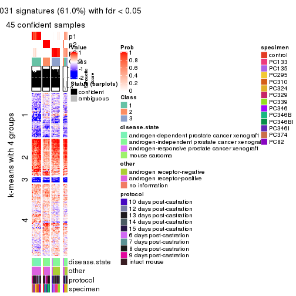
get_signatures(res, k = 4, scale_rows = FALSE)
get_signatures(res, k = 5, scale_rows = FALSE)
get_signatures(res, k = 6, scale_rows = FALSE)

Compare the overlap of signatures from different k:
compare_signatures(res)
get_signature() returns a data frame invisibly. TO get the list of signatures, the function
call should be assigned to a variable explicitly. In following code, if plot argument is set
to FALSE, no heatmap is plotted while only the differential analysis is performed.
# code only for demonstration
tb = get_signature(res, k = ..., plot = FALSE)
An example of the output of tb is:
#> which_row fdr mean_1 mean_2 scaled_mean_1 scaled_mean_2 km
#> 1 38 0.042760348 8.373488 9.131774 -0.5533452 0.5164555 1
#> 2 40 0.018707592 7.106213 8.469186 -0.6173731 0.5762149 1
#> 3 55 0.019134737 10.221463 11.207825 -0.6159697 0.5749050 1
#> 4 59 0.006059896 5.921854 7.869574 -0.6899429 0.6439467 1
#> 5 60 0.018055526 8.928898 10.211722 -0.6204761 0.5791110 1
#> 6 98 0.009384629 15.714769 14.887706 0.6635654 -0.6193277 2
...
The columns in tb are:
which_row: row indices corresponding to the input matrix.fdr: FDR for the differential test. mean_x: The mean value in group x.scaled_mean_x: The mean value in group x after rows are scaled.km: Row groups if k-means clustering is applied to rows.UMAP plot which shows how samples are separated.
dimension_reduction(res, k = 2, method = "UMAP")
dimension_reduction(res, k = 3, method = "UMAP")
dimension_reduction(res, k = 4, method = "UMAP")
dimension_reduction(res, k = 5, method = "UMAP")

dimension_reduction(res, k = 6, method = "UMAP")
Following heatmap shows how subgroups are split when increasing k:
collect_classes(res)
Test correlation between subgroups and known annotations. If the known annotation is numeric, one-way ANOVA test is applied, and if the known annotation is discrete, chi-squared contingency table test is applied.
test_to_known_factors(res)
#> n disease.state(p) other(p) protocol(p) specimen(p) k
#> ATC:pam 52 1.95e-03 1.60e-03 0.184 9.39e-05 2
#> ATC:pam 45 1.29e-06 1.82e-07 0.206 5.87e-07 3
#> ATC:pam 45 1.51e-05 1.74e-06 0.127 7.77e-11 4
#> ATC:pam 38 1.00e-12 1.29e-11 0.646 1.74e-09 5
#> ATC:pam 36 5.15e-11 1.99e-10 0.166 1.73e-10 6
If matrix rows can be associated to genes, consider to use functional_enrichment(res,
...) to perform function enrichment for the signature genes. See this vignette for more detailed explanations.
The object with results only for a single top-value method and a single partition method can be extracted as:
res = res_list["ATC", "mclust"]
# you can also extract it by
# res = res_list["ATC:mclust"]
A summary of res and all the functions that can be applied to it:
res
#> A 'ConsensusPartition' object with k = 2, 3, 4, 5, 6.
#> On a matrix with 8252 rows and 52 columns.
#> Top rows (825, 1650, 2476, 3301, 4126) are extracted by 'ATC' method.
#> Subgroups are detected by 'mclust' method.
#> Performed in total 1250 partitions by row resampling.
#> Best k for subgroups seems to be 5.
#>
#> Following methods can be applied to this 'ConsensusPartition' object:
#> [1] "cola_report" "collect_classes" "collect_plots"
#> [4] "collect_stats" "colnames" "compare_signatures"
#> [7] "consensus_heatmap" "dimension_reduction" "functional_enrichment"
#> [10] "get_anno_col" "get_anno" "get_classes"
#> [13] "get_consensus" "get_matrix" "get_membership"
#> [16] "get_param" "get_signatures" "get_stats"
#> [19] "is_best_k" "is_stable_k" "membership_heatmap"
#> [22] "ncol" "nrow" "plot_ecdf"
#> [25] "rownames" "select_partition_number" "show"
#> [28] "suggest_best_k" "test_to_known_factors"
collect_plots() function collects all the plots made from res for all k (number of partitions)
into one single page to provide an easy and fast comparison between different k.
collect_plots(res)
The plots are:
k and the heatmap of
predicted classes for each k.k.k.k.All the plots in panels can be made by individual functions and they are plotted later in this section.
select_partition_number() produces several plots showing different
statistics for choosing “optimized” k. There are following statistics:
k;k, the area increased is defined as \(A_k - A_{k-1}\).The detailed explanations of these statistics can be found in the cola vignette.
Generally speaking, lower PAC score, higher mean silhouette score or higher
concordance corresponds to better partition. Rand index and Jaccard index
measure how similar the current partition is compared to partition with k-1.
If they are too similar, we won't accept k is better than k-1.
select_partition_number(res)
The numeric values for all these statistics can be obtained by get_stats().
get_stats(res)
#> k 1-PAC mean_silhouette concordance area_increased Rand Jaccard
#> 2 2 0.172 0.366 0.683 0.3864 0.527 0.527
#> 3 3 0.668 0.709 0.871 0.6814 0.662 0.433
#> 4 4 0.765 0.825 0.892 0.0709 0.931 0.803
#> 5 5 0.805 0.819 0.877 0.0804 0.925 0.762
#> 6 6 0.822 0.665 0.852 0.0508 0.902 0.641
suggest_best_k() suggests the best \(k\) based on these statistics. The rules are as follows:
suggest_best_k(res)
#> [1] 5
Following shows the table of the partitions (You need to click the show/hide
code output link to see it). The membership matrix (columns with name p*)
is inferred by
clue::cl_consensus()
function with the SE method. Basically the value in the membership matrix
represents the probability to belong to a certain group. The finall class
label for an item is determined with the group with highest probability it
belongs to.
In get_classes() function, the entropy is calculated from the membership
matrix and the silhouette score is calculated from the consensus matrix.
cbind(get_classes(res, k = 2), get_membership(res, k = 2))
#> class entropy silhouette p1 p2
#> GSM92537 1 0.6438 0.4053 0.836 0.164
#> GSM92539 1 0.0672 0.5130 0.992 0.008
#> GSM92541 1 0.0938 0.5156 0.988 0.012
#> GSM92543 1 0.0938 0.5156 0.988 0.012
#> GSM92545 1 0.0938 0.5156 0.988 0.012
#> GSM92546 1 0.5737 0.4779 0.864 0.136
#> GSM92533 1 0.6712 0.4544 0.824 0.176
#> GSM92535 1 0.0938 0.5156 0.988 0.012
#> GSM92540 1 0.6148 0.4096 0.848 0.152
#> GSM92538 1 0.6148 0.4096 0.848 0.152
#> GSM92542 1 0.1633 0.5099 0.976 0.024
#> GSM92544 1 0.0000 0.5157 1.000 0.000
#> GSM92536 1 0.0938 0.5156 0.988 0.012
#> GSM92534 1 0.6247 0.4614 0.844 0.156
#> GSM92547 2 1.0000 0.3967 0.496 0.504
#> GSM92549 2 0.9775 0.5834 0.412 0.588
#> GSM92550 2 0.9815 0.5822 0.420 0.580
#> GSM92548 2 0.9944 0.5245 0.456 0.544
#> GSM92551 2 0.8813 0.5524 0.300 0.700
#> GSM92553 2 0.3879 0.4926 0.076 0.924
#> GSM92559 2 0.9896 0.2589 0.440 0.560
#> GSM92561 2 0.4161 0.4989 0.084 0.916
#> GSM92555 1 0.9993 0.0222 0.516 0.484
#> GSM92557 2 0.7299 0.5538 0.204 0.796
#> GSM92563 1 0.5408 0.4853 0.876 0.124
#> GSM92565 1 0.6148 0.4699 0.848 0.152
#> GSM92554 2 0.7745 0.5577 0.228 0.772
#> GSM92564 1 0.9754 -0.0717 0.592 0.408
#> GSM92562 2 0.4161 0.4989 0.084 0.916
#> GSM92558 2 0.3879 0.4926 0.076 0.924
#> GSM92566 1 0.6148 0.4699 0.848 0.152
#> GSM92552 2 0.9795 0.5854 0.416 0.584
#> GSM92560 1 0.9993 0.0222 0.516 0.484
#> GSM92556 1 0.9993 0.0222 0.516 0.484
#> GSM92567 1 0.9993 0.0222 0.516 0.484
#> GSM92569 1 0.9993 0.0222 0.516 0.484
#> GSM92571 1 0.9993 0.0222 0.516 0.484
#> GSM92573 1 0.9993 0.0222 0.516 0.484
#> GSM92575 2 0.9732 0.5645 0.404 0.596
#> GSM92577 1 0.9993 0.0222 0.516 0.484
#> GSM92579 2 0.9732 0.5645 0.404 0.596
#> GSM92581 2 0.9866 0.4631 0.432 0.568
#> GSM92568 1 0.9993 0.0222 0.516 0.484
#> GSM92576 2 0.9732 0.5645 0.404 0.596
#> GSM92580 2 0.9732 0.5645 0.404 0.596
#> GSM92578 1 0.9993 0.0222 0.516 0.484
#> GSM92572 1 0.9993 0.0222 0.516 0.484
#> GSM92574 1 0.9993 0.0222 0.516 0.484
#> GSM92582 2 0.9686 0.5439 0.396 0.604
#> GSM92570 1 0.9993 0.0222 0.516 0.484
#> GSM92583 1 0.6623 0.3982 0.828 0.172
#> GSM92584 1 0.6623 0.3982 0.828 0.172
cbind(get_classes(res, k = 3), get_membership(res, k = 3))
#> class entropy silhouette p1 p2 p3
#> GSM92537 1 0.0237 0.7825 0.996 0.000 0.004
#> GSM92539 1 0.5956 0.5292 0.672 0.324 0.004
#> GSM92541 1 0.0000 0.7838 1.000 0.000 0.000
#> GSM92543 1 0.0747 0.7766 0.984 0.000 0.016
#> GSM92545 1 0.0000 0.7838 1.000 0.000 0.000
#> GSM92546 1 0.6180 0.4079 0.584 0.416 0.000
#> GSM92533 1 0.6565 0.4027 0.576 0.416 0.008
#> GSM92535 1 0.0000 0.7838 1.000 0.000 0.000
#> GSM92540 1 0.0000 0.7838 1.000 0.000 0.000
#> GSM92538 1 0.0000 0.7838 1.000 0.000 0.000
#> GSM92542 1 0.0000 0.7838 1.000 0.000 0.000
#> GSM92544 1 0.0000 0.7838 1.000 0.000 0.000
#> GSM92536 1 0.0000 0.7838 1.000 0.000 0.000
#> GSM92534 1 0.6398 0.4062 0.580 0.416 0.004
#> GSM92547 2 0.8362 0.2452 0.096 0.556 0.348
#> GSM92549 2 0.1411 0.7919 0.036 0.964 0.000
#> GSM92550 2 0.2261 0.7675 0.068 0.932 0.000
#> GSM92548 2 0.9535 0.2012 0.264 0.488 0.248
#> GSM92551 2 0.0000 0.8062 0.000 1.000 0.000
#> GSM92553 2 0.0000 0.8062 0.000 1.000 0.000
#> GSM92559 2 0.7831 0.3833 0.280 0.632 0.088
#> GSM92561 2 0.0000 0.8062 0.000 1.000 0.000
#> GSM92555 3 0.0747 0.8799 0.000 0.016 0.984
#> GSM92557 2 0.0000 0.8062 0.000 1.000 0.000
#> GSM92563 1 0.7757 0.3627 0.540 0.408 0.052
#> GSM92565 1 0.7860 0.3401 0.528 0.416 0.056
#> GSM92554 2 0.0000 0.8062 0.000 1.000 0.000
#> GSM92564 2 0.9594 -0.0301 0.360 0.436 0.204
#> GSM92562 2 0.0000 0.8062 0.000 1.000 0.000
#> GSM92558 2 0.0000 0.8062 0.000 1.000 0.000
#> GSM92566 1 0.8025 0.3172 0.516 0.420 0.064
#> GSM92552 2 0.1860 0.7820 0.052 0.948 0.000
#> GSM92560 3 0.0000 0.8919 0.000 0.000 1.000
#> GSM92556 3 0.0000 0.8919 0.000 0.000 1.000
#> GSM92567 3 0.0000 0.8919 0.000 0.000 1.000
#> GSM92569 3 0.0000 0.8919 0.000 0.000 1.000
#> GSM92571 3 0.0000 0.8919 0.000 0.000 1.000
#> GSM92573 3 0.0000 0.8919 0.000 0.000 1.000
#> GSM92575 3 0.6523 0.7142 0.228 0.048 0.724
#> GSM92577 3 0.0000 0.8919 0.000 0.000 1.000
#> GSM92579 3 0.6481 0.7196 0.224 0.048 0.728
#> GSM92581 3 0.5921 0.7401 0.212 0.032 0.756
#> GSM92568 3 0.0000 0.8919 0.000 0.000 1.000
#> GSM92576 3 0.6481 0.7196 0.224 0.048 0.728
#> GSM92580 3 0.6481 0.7196 0.224 0.048 0.728
#> GSM92578 3 0.0000 0.8919 0.000 0.000 1.000
#> GSM92572 3 0.0000 0.8919 0.000 0.000 1.000
#> GSM92574 3 0.0000 0.8919 0.000 0.000 1.000
#> GSM92582 3 0.5940 0.7452 0.204 0.036 0.760
#> GSM92570 3 0.0000 0.8919 0.000 0.000 1.000
#> GSM92583 1 0.1525 0.7648 0.964 0.032 0.004
#> GSM92584 1 0.1525 0.7648 0.964 0.032 0.004
cbind(get_classes(res, k = 4), get_membership(res, k = 4))
#> class entropy silhouette p1 p2 p3 p4
#> GSM92537 1 0.0000 0.915 1.000 0.000 0.000 0.000
#> GSM92539 1 0.2589 0.861 0.884 0.000 0.000 0.116
#> GSM92541 1 0.0000 0.915 1.000 0.000 0.000 0.000
#> GSM92543 1 0.0000 0.915 1.000 0.000 0.000 0.000
#> GSM92545 1 0.0000 0.915 1.000 0.000 0.000 0.000
#> GSM92546 1 0.2408 0.866 0.896 0.000 0.000 0.104
#> GSM92533 1 0.2408 0.866 0.896 0.000 0.000 0.104
#> GSM92535 1 0.0000 0.915 1.000 0.000 0.000 0.000
#> GSM92540 1 0.0921 0.907 0.972 0.000 0.000 0.028
#> GSM92538 1 0.0469 0.913 0.988 0.000 0.000 0.012
#> GSM92542 1 0.0188 0.914 0.996 0.000 0.000 0.004
#> GSM92544 1 0.1474 0.892 0.948 0.000 0.000 0.052
#> GSM92536 1 0.0000 0.915 1.000 0.000 0.000 0.000
#> GSM92534 1 0.2408 0.866 0.896 0.000 0.000 0.104
#> GSM92547 2 0.2670 0.881 0.024 0.904 0.000 0.072
#> GSM92549 2 0.3485 0.850 0.048 0.872 0.004 0.076
#> GSM92550 2 0.4118 0.818 0.060 0.836 0.004 0.100
#> GSM92548 1 0.7359 0.330 0.568 0.284 0.020 0.128
#> GSM92551 2 0.0188 0.913 0.000 0.996 0.000 0.004
#> GSM92553 2 0.0000 0.914 0.000 1.000 0.000 0.000
#> GSM92559 2 0.5564 0.600 0.216 0.708 0.000 0.076
#> GSM92561 2 0.0000 0.914 0.000 1.000 0.000 0.000
#> GSM92555 3 0.1022 0.801 0.000 0.032 0.968 0.000
#> GSM92557 2 0.0000 0.914 0.000 1.000 0.000 0.000
#> GSM92563 1 0.1356 0.896 0.960 0.000 0.008 0.032
#> GSM92565 1 0.1970 0.876 0.932 0.000 0.008 0.060
#> GSM92554 2 0.0000 0.914 0.000 1.000 0.000 0.000
#> GSM92564 1 0.3128 0.831 0.876 0.008 0.008 0.108
#> GSM92562 2 0.0000 0.914 0.000 1.000 0.000 0.000
#> GSM92558 2 0.0000 0.914 0.000 1.000 0.000 0.000
#> GSM92566 1 0.2412 0.862 0.908 0.000 0.008 0.084
#> GSM92552 2 0.2125 0.886 0.004 0.920 0.000 0.076
#> GSM92560 3 0.0000 0.825 0.000 0.000 1.000 0.000
#> GSM92556 3 0.0376 0.822 0.000 0.004 0.992 0.004
#> GSM92567 3 0.0000 0.825 0.000 0.000 1.000 0.000
#> GSM92569 3 0.0000 0.825 0.000 0.000 1.000 0.000
#> GSM92571 3 0.0000 0.825 0.000 0.000 1.000 0.000
#> GSM92573 3 0.0000 0.825 0.000 0.000 1.000 0.000
#> GSM92575 3 0.7281 0.554 0.272 0.016 0.576 0.136
#> GSM92577 3 0.1557 0.804 0.056 0.000 0.944 0.000
#> GSM92579 3 0.7259 0.560 0.268 0.016 0.580 0.136
#> GSM92581 3 0.6804 0.601 0.232 0.008 0.624 0.136
#> GSM92568 3 0.0000 0.825 0.000 0.000 1.000 0.000
#> GSM92576 3 0.7323 0.542 0.280 0.016 0.568 0.136
#> GSM92580 3 0.7259 0.560 0.268 0.016 0.580 0.136
#> GSM92578 3 0.1557 0.804 0.056 0.000 0.944 0.000
#> GSM92572 3 0.0000 0.825 0.000 0.000 1.000 0.000
#> GSM92574 3 0.0000 0.825 0.000 0.000 1.000 0.000
#> GSM92582 3 0.6455 0.645 0.176 0.012 0.676 0.136
#> GSM92570 3 0.0000 0.825 0.000 0.000 1.000 0.000
#> GSM92583 4 0.2469 1.000 0.108 0.000 0.000 0.892
#> GSM92584 4 0.2469 1.000 0.108 0.000 0.000 0.892
cbind(get_classes(res, k = 5), get_membership(res, k = 5))
#> class entropy silhouette p1 p2 p3 p4 p5
#> GSM92537 1 0.1478 0.856 0.936 0.000 0.000 0.000 0.064
#> GSM92539 1 0.1205 0.842 0.956 0.000 0.000 0.040 0.004
#> GSM92541 1 0.1792 0.858 0.916 0.000 0.000 0.000 0.084
#> GSM92543 1 0.1732 0.854 0.920 0.000 0.000 0.000 0.080
#> GSM92545 1 0.1732 0.858 0.920 0.000 0.000 0.000 0.080
#> GSM92546 1 0.1828 0.840 0.936 0.004 0.000 0.032 0.028
#> GSM92533 1 0.1041 0.845 0.964 0.000 0.000 0.032 0.004
#> GSM92535 1 0.1792 0.858 0.916 0.000 0.000 0.000 0.084
#> GSM92540 1 0.3284 0.743 0.828 0.000 0.000 0.024 0.148
#> GSM92538 1 0.3203 0.753 0.820 0.000 0.000 0.012 0.168
#> GSM92542 1 0.1671 0.858 0.924 0.000 0.000 0.000 0.076
#> GSM92544 1 0.0609 0.847 0.980 0.000 0.000 0.020 0.000
#> GSM92536 1 0.1671 0.858 0.924 0.000 0.000 0.000 0.076
#> GSM92534 1 0.0955 0.846 0.968 0.000 0.000 0.028 0.004
#> GSM92547 2 0.2227 0.863 0.048 0.916 0.004 0.000 0.032
#> GSM92549 2 0.2873 0.817 0.020 0.860 0.000 0.000 0.120
#> GSM92550 2 0.3151 0.799 0.020 0.836 0.000 0.000 0.144
#> GSM92548 2 0.6009 0.399 0.136 0.544 0.000 0.000 0.320
#> GSM92551 2 0.0162 0.897 0.000 0.996 0.000 0.000 0.004
#> GSM92553 2 0.0000 0.898 0.000 1.000 0.000 0.000 0.000
#> GSM92559 2 0.3464 0.798 0.068 0.836 0.000 0.000 0.096
#> GSM92561 2 0.0000 0.898 0.000 1.000 0.000 0.000 0.000
#> GSM92555 3 0.1074 0.890 0.012 0.016 0.968 0.000 0.004
#> GSM92557 2 0.0000 0.898 0.000 1.000 0.000 0.000 0.000
#> GSM92563 1 0.3336 0.769 0.772 0.000 0.000 0.000 0.228
#> GSM92565 1 0.4201 0.565 0.592 0.000 0.000 0.000 0.408
#> GSM92554 2 0.0000 0.898 0.000 1.000 0.000 0.000 0.000
#> GSM92564 1 0.4510 0.507 0.560 0.008 0.000 0.000 0.432
#> GSM92562 2 0.0000 0.898 0.000 1.000 0.000 0.000 0.000
#> GSM92558 2 0.0000 0.898 0.000 1.000 0.000 0.000 0.000
#> GSM92566 1 0.4331 0.565 0.596 0.004 0.000 0.000 0.400
#> GSM92552 2 0.1124 0.883 0.036 0.960 0.000 0.000 0.004
#> GSM92560 3 0.0000 0.910 0.000 0.000 1.000 0.000 0.000
#> GSM92556 3 0.1281 0.885 0.012 0.000 0.956 0.000 0.032
#> GSM92567 3 0.0000 0.910 0.000 0.000 1.000 0.000 0.000
#> GSM92569 3 0.0404 0.907 0.000 0.000 0.988 0.000 0.012
#> GSM92571 3 0.0000 0.910 0.000 0.000 1.000 0.000 0.000
#> GSM92573 3 0.1809 0.854 0.012 0.000 0.928 0.000 0.060
#> GSM92575 5 0.4617 0.942 0.024 0.000 0.304 0.004 0.668
#> GSM92577 3 0.0510 0.907 0.000 0.000 0.984 0.000 0.016
#> GSM92579 5 0.4553 0.937 0.004 0.016 0.328 0.000 0.652
#> GSM92581 5 0.4904 0.887 0.020 0.008 0.368 0.000 0.604
#> GSM92568 3 0.0000 0.910 0.000 0.000 1.000 0.000 0.000
#> GSM92576 5 0.4789 0.927 0.036 0.000 0.292 0.004 0.668
#> GSM92580 5 0.4574 0.945 0.012 0.004 0.320 0.004 0.660
#> GSM92578 3 0.1012 0.899 0.012 0.000 0.968 0.000 0.020
#> GSM92572 3 0.1341 0.866 0.000 0.000 0.944 0.000 0.056
#> GSM92574 3 0.0404 0.907 0.000 0.000 0.988 0.000 0.012
#> GSM92582 3 0.5084 -0.669 0.020 0.008 0.488 0.000 0.484
#> GSM92570 3 0.0404 0.907 0.000 0.000 0.988 0.000 0.012
#> GSM92583 4 0.0162 1.000 0.004 0.000 0.000 0.996 0.000
#> GSM92584 4 0.0162 1.000 0.004 0.000 0.000 0.996 0.000
cbind(get_classes(res, k = 6), get_membership(res, k = 6))
#> class entropy silhouette p1 p2 p3 p4 p5 p6
#> GSM92537 1 0.3867 0.4078 0.660 0.000 0.000 0 0.012 0.328
#> GSM92539 6 0.5945 -0.2370 0.388 0.000 0.000 0 0.216 0.396
#> GSM92541 1 0.0146 0.7192 0.996 0.000 0.000 0 0.004 0.000
#> GSM92543 1 0.1814 0.6539 0.900 0.000 0.000 0 0.100 0.000
#> GSM92545 1 0.0260 0.7217 0.992 0.000 0.000 0 0.000 0.008
#> GSM92546 1 0.1957 0.6535 0.888 0.000 0.000 0 0.000 0.112
#> GSM92533 1 0.6104 -0.1002 0.376 0.000 0.000 0 0.296 0.328
#> GSM92535 1 0.0146 0.7192 0.996 0.000 0.000 0 0.004 0.000
#> GSM92540 6 0.1141 0.5754 0.052 0.000 0.000 0 0.000 0.948
#> GSM92538 6 0.1398 0.5752 0.052 0.000 0.000 0 0.008 0.940
#> GSM92542 1 0.0260 0.7217 0.992 0.000 0.000 0 0.000 0.008
#> GSM92544 1 0.3714 0.3997 0.656 0.000 0.000 0 0.004 0.340
#> GSM92536 1 0.0260 0.7217 0.992 0.000 0.000 0 0.000 0.008
#> GSM92534 1 0.6023 -0.0636 0.412 0.000 0.000 0 0.252 0.336
#> GSM92547 2 0.1293 0.9392 0.016 0.956 0.004 0 0.004 0.020
#> GSM92549 2 0.1471 0.9142 0.000 0.932 0.000 0 0.064 0.004
#> GSM92550 2 0.1700 0.8999 0.000 0.916 0.000 0 0.080 0.004
#> GSM92548 5 0.4892 0.2048 0.084 0.280 0.000 0 0.632 0.004
#> GSM92551 2 0.0291 0.9585 0.000 0.992 0.000 0 0.004 0.004
#> GSM92553 2 0.0000 0.9604 0.000 1.000 0.000 0 0.000 0.000
#> GSM92559 2 0.3473 0.7918 0.088 0.824 0.000 0 0.076 0.012
#> GSM92561 2 0.0000 0.9604 0.000 1.000 0.000 0 0.000 0.000
#> GSM92555 3 0.0260 0.9264 0.000 0.000 0.992 0 0.000 0.008
#> GSM92557 2 0.0000 0.9604 0.000 1.000 0.000 0 0.000 0.000
#> GSM92563 5 0.4136 0.0941 0.428 0.000 0.000 0 0.560 0.012
#> GSM92565 5 0.4116 0.1228 0.416 0.000 0.000 0 0.572 0.012
#> GSM92554 2 0.0000 0.9604 0.000 1.000 0.000 0 0.000 0.000
#> GSM92564 5 0.3998 0.2193 0.340 0.000 0.000 0 0.644 0.016
#> GSM92562 2 0.0000 0.9604 0.000 1.000 0.000 0 0.000 0.000
#> GSM92558 2 0.0000 0.9604 0.000 1.000 0.000 0 0.000 0.000
#> GSM92566 5 0.4084 0.1535 0.400 0.000 0.000 0 0.588 0.012
#> GSM92552 2 0.0291 0.9585 0.000 0.992 0.000 0 0.004 0.004
#> GSM92560 3 0.0000 0.9277 0.000 0.000 1.000 0 0.000 0.000
#> GSM92556 3 0.0260 0.9264 0.000 0.000 0.992 0 0.000 0.008
#> GSM92567 3 0.0000 0.9277 0.000 0.000 1.000 0 0.000 0.000
#> GSM92569 3 0.1168 0.9143 0.000 0.000 0.956 0 0.028 0.016
#> GSM92571 3 0.0000 0.9277 0.000 0.000 1.000 0 0.000 0.000
#> GSM92573 3 0.1124 0.9056 0.000 0.000 0.956 0 0.036 0.008
#> GSM92575 5 0.3565 0.4586 0.000 0.000 0.304 0 0.692 0.004
#> GSM92577 3 0.1075 0.9082 0.000 0.000 0.952 0 0.048 0.000
#> GSM92579 5 0.3565 0.4584 0.000 0.004 0.304 0 0.692 0.000
#> GSM92581 5 0.4648 0.4141 0.056 0.000 0.340 0 0.604 0.000
#> GSM92568 3 0.0000 0.9277 0.000 0.000 1.000 0 0.000 0.000
#> GSM92576 5 0.3547 0.4627 0.000 0.000 0.300 0 0.696 0.004
#> GSM92580 5 0.3565 0.4586 0.000 0.000 0.304 0 0.692 0.004
#> GSM92578 3 0.1528 0.9070 0.000 0.000 0.936 0 0.048 0.016
#> GSM92572 3 0.0790 0.9122 0.000 0.000 0.968 0 0.032 0.000
#> GSM92574 3 0.1168 0.9143 0.000 0.000 0.956 0 0.028 0.016
#> GSM92582 3 0.4739 -0.0910 0.048 0.000 0.516 0 0.436 0.000
#> GSM92570 3 0.1168 0.9143 0.000 0.000 0.956 0 0.028 0.016
#> GSM92583 4 0.0000 1.0000 0.000 0.000 0.000 1 0.000 0.000
#> GSM92584 4 0.0000 1.0000 0.000 0.000 0.000 1 0.000 0.000
Heatmaps for the consensus matrix. It visualizes the probability of two samples to be in a same group.
consensus_heatmap(res, k = 2)
consensus_heatmap(res, k = 3)
consensus_heatmap(res, k = 4)
consensus_heatmap(res, k = 5)

consensus_heatmap(res, k = 6)

Heatmaps for the membership of samples in all partitions to see how consistent they are:
membership_heatmap(res, k = 2)
membership_heatmap(res, k = 3)
membership_heatmap(res, k = 4)
membership_heatmap(res, k = 5)
membership_heatmap(res, k = 6)

As soon as we have had the classes for columns, we can look for signatures which are significantly different between classes which can be candidate marks for certain classes. Following are the heatmaps for signatures.
Signature heatmaps where rows are scaled:
get_signatures(res, k = 2)
get_signatures(res, k = 3)
get_signatures(res, k = 4)
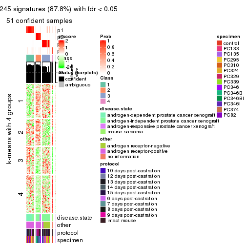
get_signatures(res, k = 5)
get_signatures(res, k = 6)

Signature heatmaps where rows are not scaled:
get_signatures(res, k = 2, scale_rows = FALSE)
get_signatures(res, k = 3, scale_rows = FALSE)
get_signatures(res, k = 4, scale_rows = FALSE)
get_signatures(res, k = 5, scale_rows = FALSE)
get_signatures(res, k = 6, scale_rows = FALSE)
Compare the overlap of signatures from different k:
compare_signatures(res)
get_signature() returns a data frame invisibly. TO get the list of signatures, the function
call should be assigned to a variable explicitly. In following code, if plot argument is set
to FALSE, no heatmap is plotted while only the differential analysis is performed.
# code only for demonstration
tb = get_signature(res, k = ..., plot = FALSE)
An example of the output of tb is:
#> which_row fdr mean_1 mean_2 scaled_mean_1 scaled_mean_2 km
#> 1 38 0.042760348 8.373488 9.131774 -0.5533452 0.5164555 1
#> 2 40 0.018707592 7.106213 8.469186 -0.6173731 0.5762149 1
#> 3 55 0.019134737 10.221463 11.207825 -0.6159697 0.5749050 1
#> 4 59 0.006059896 5.921854 7.869574 -0.6899429 0.6439467 1
#> 5 60 0.018055526 8.928898 10.211722 -0.6204761 0.5791110 1
#> 6 98 0.009384629 15.714769 14.887706 0.6635654 -0.6193277 2
...
The columns in tb are:
which_row: row indices corresponding to the input matrix.fdr: FDR for the differential test. mean_x: The mean value in group x.scaled_mean_x: The mean value in group x after rows are scaled.km: Row groups if k-means clustering is applied to rows.UMAP plot which shows how samples are separated.
dimension_reduction(res, k = 2, method = "UMAP")
dimension_reduction(res, k = 3, method = "UMAP")
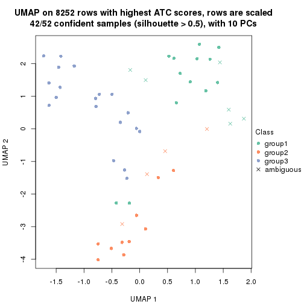
dimension_reduction(res, k = 4, method = "UMAP")
dimension_reduction(res, k = 5, method = "UMAP")
dimension_reduction(res, k = 6, method = "UMAP")
Following heatmap shows how subgroups are split when increasing k:
collect_classes(res)
Test correlation between subgroups and known annotations. If the known annotation is numeric, one-way ANOVA test is applied, and if the known annotation is discrete, chi-squared contingency table test is applied.
test_to_known_factors(res)
#> n disease.state(p) other(p) protocol(p) specimen(p) k
#> ATC:mclust 20 4.54e-05 1.14e-01 0.339 1.03e-02 2
#> ATC:mclust 42 1.23e-08 6.03e-07 0.110 6.80e-07 3
#> ATC:mclust 51 1.71e-16 2.97e-17 0.510 1.91e-13 4
#> ATC:mclust 50 1.45e-14 8.10e-16 0.444 8.88e-15 5
#> ATC:mclust 36 1.34e-11 4.20e-10 0.382 5.19e-11 6
If matrix rows can be associated to genes, consider to use functional_enrichment(res,
...) to perform function enrichment for the signature genes. See this vignette for more detailed explanations.
The object with results only for a single top-value method and a single partition method can be extracted as:
res = res_list["ATC", "NMF"]
# you can also extract it by
# res = res_list["ATC:NMF"]
A summary of res and all the functions that can be applied to it:
res
#> A 'ConsensusPartition' object with k = 2, 3, 4, 5, 6.
#> On a matrix with 8252 rows and 52 columns.
#> Top rows (825, 1650, 2476, 3301, 4126) are extracted by 'ATC' method.
#> Subgroups are detected by 'NMF' method.
#> Performed in total 1250 partitions by row resampling.
#> Best k for subgroups seems to be 2.
#>
#> Following methods can be applied to this 'ConsensusPartition' object:
#> [1] "cola_report" "collect_classes" "collect_plots"
#> [4] "collect_stats" "colnames" "compare_signatures"
#> [7] "consensus_heatmap" "dimension_reduction" "functional_enrichment"
#> [10] "get_anno_col" "get_anno" "get_classes"
#> [13] "get_consensus" "get_matrix" "get_membership"
#> [16] "get_param" "get_signatures" "get_stats"
#> [19] "is_best_k" "is_stable_k" "membership_heatmap"
#> [22] "ncol" "nrow" "plot_ecdf"
#> [25] "rownames" "select_partition_number" "show"
#> [28] "suggest_best_k" "test_to_known_factors"
collect_plots() function collects all the plots made from res for all k (number of partitions)
into one single page to provide an easy and fast comparison between different k.
collect_plots(res)
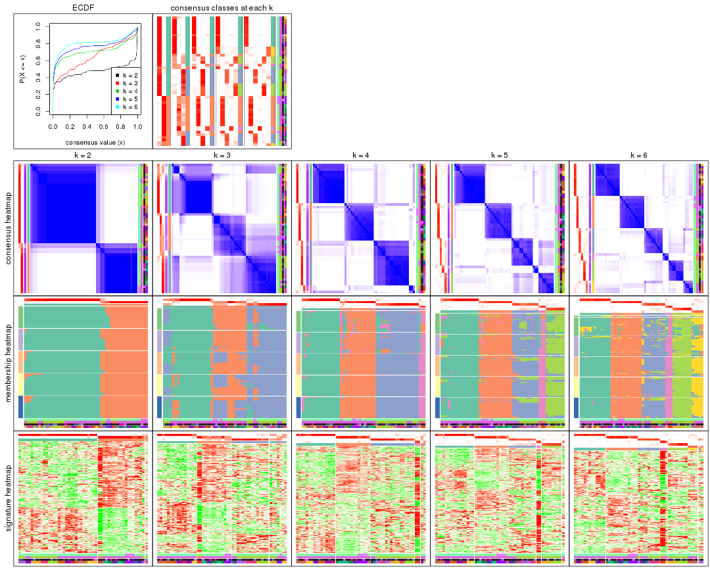
The plots are:
k and the heatmap of
predicted classes for each k.k.k.k.All the plots in panels can be made by individual functions and they are plotted later in this section.
select_partition_number() produces several plots showing different
statistics for choosing “optimized” k. There are following statistics:
k;k, the area increased is defined as \(A_k - A_{k-1}\).The detailed explanations of these statistics can be found in the cola vignette.
Generally speaking, lower PAC score, higher mean silhouette score or higher
concordance corresponds to better partition. Rand index and Jaccard index
measure how similar the current partition is compared to partition with k-1.
If they are too similar, we won't accept k is better than k-1.
select_partition_number(res)
The numeric values for all these statistics can be obtained by get_stats().
get_stats(res)
#> k 1-PAC mean_silhouette concordance area_increased Rand Jaccard
#> 2 2 0.918 0.935 0.971 0.4750 0.517 0.517
#> 3 3 0.576 0.648 0.834 0.3666 0.687 0.458
#> 4 4 0.811 0.846 0.924 0.0998 0.811 0.529
#> 5 5 0.787 0.837 0.884 0.0794 0.922 0.734
#> 6 6 0.811 0.843 0.892 0.0522 0.948 0.773
suggest_best_k() suggests the best \(k\) based on these statistics. The rules are as follows:
suggest_best_k(res)
#> [1] 2
Following shows the table of the partitions (You need to click the show/hide
code output link to see it). The membership matrix (columns with name p*)
is inferred by
clue::cl_consensus()
function with the SE method. Basically the value in the membership matrix
represents the probability to belong to a certain group. The finall class
label for an item is determined with the group with highest probability it
belongs to.
In get_classes() function, the entropy is calculated from the membership
matrix and the silhouette score is calculated from the consensus matrix.
cbind(get_classes(res, k = 2), get_membership(res, k = 2))
#> class entropy silhouette p1 p2
#> GSM92537 1 0.0000 0.982 1.000 0.000
#> GSM92539 1 0.7950 0.674 0.760 0.240
#> GSM92541 1 0.0000 0.982 1.000 0.000
#> GSM92543 1 0.0000 0.982 1.000 0.000
#> GSM92545 1 0.0000 0.982 1.000 0.000
#> GSM92546 1 0.0000 0.982 1.000 0.000
#> GSM92533 1 0.0000 0.982 1.000 0.000
#> GSM92535 1 0.0000 0.982 1.000 0.000
#> GSM92540 1 0.0000 0.982 1.000 0.000
#> GSM92538 1 0.0938 0.975 0.988 0.012
#> GSM92542 1 0.0000 0.982 1.000 0.000
#> GSM92544 1 0.0000 0.982 1.000 0.000
#> GSM92536 1 0.0000 0.982 1.000 0.000
#> GSM92534 1 0.0000 0.982 1.000 0.000
#> GSM92547 2 0.0000 0.945 0.000 1.000
#> GSM92549 2 0.0000 0.945 0.000 1.000
#> GSM92550 2 0.0000 0.945 0.000 1.000
#> GSM92548 2 0.5059 0.856 0.112 0.888
#> GSM92551 2 0.0000 0.945 0.000 1.000
#> GSM92553 2 0.0000 0.945 0.000 1.000
#> GSM92559 2 0.0000 0.945 0.000 1.000
#> GSM92561 2 0.0000 0.945 0.000 1.000
#> GSM92555 2 0.0000 0.945 0.000 1.000
#> GSM92557 2 0.0000 0.945 0.000 1.000
#> GSM92563 1 0.0000 0.982 1.000 0.000
#> GSM92565 1 0.0000 0.982 1.000 0.000
#> GSM92554 2 0.0000 0.945 0.000 1.000
#> GSM92564 1 0.0938 0.975 0.988 0.012
#> GSM92562 2 0.0000 0.945 0.000 1.000
#> GSM92558 2 0.0000 0.945 0.000 1.000
#> GSM92566 1 0.0000 0.982 1.000 0.000
#> GSM92552 2 0.0000 0.945 0.000 1.000
#> GSM92560 2 0.6148 0.813 0.152 0.848
#> GSM92556 2 0.0938 0.937 0.012 0.988
#> GSM92567 1 0.4431 0.896 0.908 0.092
#> GSM92569 1 0.4431 0.896 0.908 0.092
#> GSM92571 1 0.0938 0.975 0.988 0.012
#> GSM92573 2 0.9248 0.516 0.340 0.660
#> GSM92575 1 0.0000 0.982 1.000 0.000
#> GSM92577 1 0.0000 0.982 1.000 0.000
#> GSM92579 1 0.0938 0.975 0.988 0.012
#> GSM92581 1 0.0000 0.982 1.000 0.000
#> GSM92568 2 0.9635 0.403 0.388 0.612
#> GSM92576 1 0.0000 0.982 1.000 0.000
#> GSM92580 1 0.0000 0.982 1.000 0.000
#> GSM92578 1 0.0000 0.982 1.000 0.000
#> GSM92572 1 0.0000 0.982 1.000 0.000
#> GSM92574 1 0.0000 0.982 1.000 0.000
#> GSM92582 1 0.0000 0.982 1.000 0.000
#> GSM92570 1 0.2236 0.954 0.964 0.036
#> GSM92583 2 0.0000 0.945 0.000 1.000
#> GSM92584 2 0.0000 0.945 0.000 1.000
cbind(get_classes(res, k = 3), get_membership(res, k = 3))
#> class entropy silhouette p1 p2 p3
#> GSM92537 1 0.5178 0.654 0.744 0.256 0.000
#> GSM92539 2 0.6302 -0.299 0.480 0.520 0.000
#> GSM92541 1 0.0237 0.851 0.996 0.000 0.004
#> GSM92543 1 0.0000 0.849 1.000 0.000 0.000
#> GSM92545 1 0.0237 0.851 0.996 0.000 0.004
#> GSM92546 1 0.0237 0.851 0.996 0.000 0.004
#> GSM92533 1 0.0237 0.851 0.996 0.000 0.004
#> GSM92535 1 0.0237 0.851 0.996 0.000 0.004
#> GSM92540 1 0.3752 0.755 0.856 0.144 0.000
#> GSM92538 1 0.6215 0.414 0.572 0.428 0.000
#> GSM92542 1 0.0237 0.851 0.996 0.000 0.004
#> GSM92544 1 0.0237 0.851 0.996 0.000 0.004
#> GSM92536 1 0.0237 0.851 0.996 0.000 0.004
#> GSM92534 1 0.0237 0.851 0.996 0.000 0.004
#> GSM92547 2 0.6095 0.649 0.000 0.608 0.392
#> GSM92549 3 0.6309 -0.527 0.000 0.496 0.504
#> GSM92550 2 0.6286 0.539 0.000 0.536 0.464
#> GSM92548 2 0.7722 0.521 0.048 0.520 0.432
#> GSM92551 2 0.5363 0.718 0.000 0.724 0.276
#> GSM92553 2 0.5327 0.719 0.000 0.728 0.272
#> GSM92559 2 0.0000 0.627 0.000 1.000 0.000
#> GSM92561 2 0.4504 0.712 0.000 0.804 0.196
#> GSM92555 3 0.6095 -0.220 0.000 0.392 0.608
#> GSM92557 2 0.6079 0.656 0.000 0.612 0.388
#> GSM92563 1 0.0237 0.851 0.996 0.000 0.004
#> GSM92565 1 0.0237 0.851 0.996 0.000 0.004
#> GSM92554 2 0.4465 0.706 0.004 0.820 0.176
#> GSM92564 1 0.5529 0.541 0.704 0.000 0.296
#> GSM92562 2 0.5254 0.720 0.000 0.736 0.264
#> GSM92558 2 0.6111 0.648 0.000 0.604 0.396
#> GSM92566 1 0.0237 0.851 0.996 0.000 0.004
#> GSM92552 2 0.6062 0.662 0.000 0.616 0.384
#> GSM92560 3 0.0237 0.816 0.000 0.004 0.996
#> GSM92556 3 0.0747 0.807 0.000 0.016 0.984
#> GSM92567 3 0.0747 0.827 0.016 0.000 0.984
#> GSM92569 3 0.0000 0.820 0.000 0.000 1.000
#> GSM92571 3 0.1411 0.825 0.036 0.000 0.964
#> GSM92573 3 0.0892 0.827 0.020 0.000 0.980
#> GSM92575 1 0.6305 0.129 0.516 0.000 0.484
#> GSM92577 3 0.4235 0.716 0.176 0.000 0.824
#> GSM92579 3 0.2356 0.808 0.072 0.000 0.928
#> GSM92581 3 0.4178 0.720 0.172 0.000 0.828
#> GSM92568 3 0.0424 0.824 0.008 0.000 0.992
#> GSM92576 1 0.6295 0.164 0.528 0.000 0.472
#> GSM92580 3 0.5529 0.508 0.296 0.000 0.704
#> GSM92578 1 0.6308 0.105 0.508 0.000 0.492
#> GSM92572 3 0.2537 0.803 0.080 0.000 0.920
#> GSM92574 3 0.0747 0.827 0.016 0.000 0.984
#> GSM92582 3 0.1964 0.818 0.056 0.000 0.944
#> GSM92570 3 0.0000 0.820 0.000 0.000 1.000
#> GSM92583 2 0.0000 0.627 0.000 1.000 0.000
#> GSM92584 2 0.0000 0.627 0.000 1.000 0.000
cbind(get_classes(res, k = 4), get_membership(res, k = 4))
#> class entropy silhouette p1 p2 p3 p4
#> GSM92537 1 0.0707 0.949 0.980 0.000 0.000 0.020
#> GSM92539 1 0.3280 0.819 0.860 0.016 0.000 0.124
#> GSM92541 1 0.0000 0.958 1.000 0.000 0.000 0.000
#> GSM92543 1 0.0188 0.956 0.996 0.004 0.000 0.000
#> GSM92545 1 0.0188 0.957 0.996 0.000 0.000 0.004
#> GSM92546 1 0.0188 0.956 0.996 0.000 0.004 0.000
#> GSM92533 1 0.0000 0.958 1.000 0.000 0.000 0.000
#> GSM92535 1 0.0000 0.958 1.000 0.000 0.000 0.000
#> GSM92540 1 0.3219 0.778 0.836 0.000 0.000 0.164
#> GSM92538 4 0.4830 0.264 0.392 0.000 0.000 0.608
#> GSM92542 1 0.0000 0.958 1.000 0.000 0.000 0.000
#> GSM92544 1 0.0000 0.958 1.000 0.000 0.000 0.000
#> GSM92536 1 0.0000 0.958 1.000 0.000 0.000 0.000
#> GSM92534 1 0.0000 0.958 1.000 0.000 0.000 0.000
#> GSM92547 2 0.3982 0.704 0.000 0.776 0.004 0.220
#> GSM92549 2 0.1940 0.846 0.000 0.924 0.000 0.076
#> GSM92550 2 0.0921 0.878 0.000 0.972 0.000 0.028
#> GSM92548 2 0.3169 0.795 0.084 0.884 0.004 0.028
#> GSM92551 2 0.0336 0.882 0.000 0.992 0.000 0.008
#> GSM92553 2 0.0188 0.882 0.000 0.996 0.000 0.004
#> GSM92559 2 0.1867 0.852 0.000 0.928 0.000 0.072
#> GSM92561 2 0.1302 0.869 0.000 0.956 0.000 0.044
#> GSM92555 2 0.6163 0.283 0.000 0.532 0.416 0.052
#> GSM92557 2 0.0000 0.882 0.000 1.000 0.000 0.000
#> GSM92563 1 0.3278 0.797 0.864 0.116 0.000 0.020
#> GSM92565 1 0.0592 0.950 0.984 0.000 0.000 0.016
#> GSM92554 2 0.0592 0.880 0.000 0.984 0.000 0.016
#> GSM92564 2 0.4993 0.549 0.244 0.728 0.008 0.020
#> GSM92562 2 0.0336 0.882 0.000 0.992 0.000 0.008
#> GSM92558 2 0.0469 0.880 0.000 0.988 0.000 0.012
#> GSM92566 1 0.0779 0.947 0.980 0.000 0.004 0.016
#> GSM92552 2 0.0707 0.879 0.000 0.980 0.000 0.020
#> GSM92560 3 0.0707 0.903 0.000 0.020 0.980 0.000
#> GSM92556 3 0.0707 0.903 0.000 0.020 0.980 0.000
#> GSM92567 3 0.0188 0.908 0.004 0.000 0.996 0.000
#> GSM92569 3 0.0188 0.908 0.000 0.004 0.996 0.000
#> GSM92571 3 0.0524 0.908 0.000 0.008 0.988 0.004
#> GSM92573 3 0.0657 0.906 0.000 0.012 0.984 0.004
#> GSM92575 3 0.4501 0.718 0.212 0.000 0.764 0.024
#> GSM92577 3 0.1059 0.905 0.012 0.000 0.972 0.016
#> GSM92579 3 0.5264 0.809 0.064 0.072 0.796 0.068
#> GSM92581 3 0.4953 0.822 0.076 0.048 0.812 0.064
#> GSM92568 3 0.0188 0.908 0.004 0.000 0.996 0.000
#> GSM92576 3 0.4936 0.613 0.280 0.000 0.700 0.020
#> GSM92580 3 0.4884 0.825 0.072 0.048 0.816 0.064
#> GSM92578 3 0.1388 0.901 0.028 0.000 0.960 0.012
#> GSM92572 3 0.0844 0.907 0.012 0.004 0.980 0.004
#> GSM92574 3 0.0524 0.908 0.000 0.008 0.988 0.004
#> GSM92582 3 0.4241 0.839 0.016 0.056 0.840 0.088
#> GSM92570 3 0.0000 0.907 0.000 0.000 1.000 0.000
#> GSM92583 4 0.2530 0.726 0.000 0.112 0.000 0.888
#> GSM92584 4 0.2530 0.726 0.000 0.112 0.000 0.888
cbind(get_classes(res, k = 5), get_membership(res, k = 5))
#> class entropy silhouette p1 p2 p3 p4 p5
#> GSM92537 1 0.0324 0.926 0.992 0.000 0.000 0.004 0.004
#> GSM92539 1 0.1877 0.875 0.924 0.012 0.000 0.064 0.000
#> GSM92541 1 0.0000 0.926 1.000 0.000 0.000 0.000 0.000
#> GSM92543 1 0.0162 0.926 0.996 0.000 0.000 0.000 0.004
#> GSM92545 1 0.0000 0.926 1.000 0.000 0.000 0.000 0.000
#> GSM92546 1 0.0162 0.926 0.996 0.000 0.000 0.000 0.004
#> GSM92533 1 0.0162 0.926 0.996 0.000 0.000 0.004 0.000
#> GSM92535 1 0.0162 0.926 0.996 0.000 0.000 0.000 0.004
#> GSM92540 1 0.2536 0.808 0.868 0.000 0.000 0.128 0.004
#> GSM92538 4 0.4029 0.496 0.316 0.000 0.000 0.680 0.004
#> GSM92542 1 0.0000 0.926 1.000 0.000 0.000 0.000 0.000
#> GSM92544 1 0.0162 0.926 0.996 0.000 0.000 0.004 0.000
#> GSM92536 1 0.0162 0.926 0.996 0.000 0.000 0.000 0.004
#> GSM92534 1 0.0671 0.917 0.980 0.000 0.016 0.004 0.000
#> GSM92547 2 0.4935 0.706 0.000 0.728 0.068 0.188 0.016
#> GSM92549 2 0.2417 0.891 0.000 0.912 0.032 0.016 0.040
#> GSM92550 2 0.1483 0.912 0.000 0.952 0.028 0.008 0.012
#> GSM92548 2 0.3540 0.859 0.056 0.864 0.040 0.012 0.028
#> GSM92551 2 0.1041 0.911 0.000 0.964 0.004 0.032 0.000
#> GSM92553 2 0.1200 0.913 0.000 0.964 0.016 0.008 0.012
#> GSM92559 2 0.2006 0.894 0.000 0.916 0.012 0.072 0.000
#> GSM92561 2 0.0992 0.911 0.000 0.968 0.008 0.024 0.000
#> GSM92555 3 0.3439 0.608 0.000 0.188 0.800 0.004 0.008
#> GSM92557 2 0.1310 0.911 0.000 0.956 0.024 0.000 0.020
#> GSM92563 1 0.6694 0.525 0.652 0.164 0.052 0.040 0.092
#> GSM92565 1 0.3954 0.792 0.828 0.000 0.044 0.040 0.088
#> GSM92554 2 0.1251 0.907 0.000 0.956 0.036 0.008 0.000
#> GSM92564 2 0.6695 0.551 0.144 0.660 0.064 0.040 0.092
#> GSM92562 2 0.1314 0.913 0.000 0.960 0.016 0.012 0.012
#> GSM92558 2 0.1018 0.910 0.000 0.968 0.016 0.000 0.016
#> GSM92566 1 0.3949 0.792 0.828 0.000 0.048 0.036 0.088
#> GSM92552 2 0.1934 0.901 0.000 0.928 0.052 0.016 0.004
#> GSM92560 3 0.3105 0.802 0.000 0.044 0.864 0.004 0.088
#> GSM92556 3 0.2751 0.772 0.000 0.056 0.888 0.004 0.052
#> GSM92567 3 0.3661 0.782 0.000 0.000 0.724 0.000 0.276
#> GSM92569 3 0.3266 0.838 0.000 0.000 0.796 0.004 0.200
#> GSM92571 3 0.3196 0.843 0.000 0.000 0.804 0.004 0.192
#> GSM92573 3 0.4130 0.805 0.008 0.004 0.788 0.036 0.164
#> GSM92575 5 0.2540 0.849 0.088 0.000 0.024 0.000 0.888
#> GSM92577 5 0.3123 0.813 0.012 0.000 0.160 0.000 0.828
#> GSM92579 5 0.2388 0.885 0.020 0.016 0.044 0.004 0.916
#> GSM92581 5 0.2829 0.889 0.028 0.008 0.064 0.008 0.892
#> GSM92568 3 0.3796 0.749 0.000 0.000 0.700 0.000 0.300
#> GSM92576 5 0.2470 0.831 0.104 0.000 0.012 0.000 0.884
#> GSM92580 5 0.2291 0.889 0.024 0.012 0.048 0.000 0.916
#> GSM92578 5 0.4528 0.729 0.060 0.000 0.212 0.000 0.728
#> GSM92572 3 0.3844 0.821 0.008 0.000 0.792 0.024 0.176
#> GSM92574 3 0.3160 0.843 0.000 0.000 0.808 0.004 0.188
#> GSM92582 5 0.2335 0.880 0.008 0.008 0.064 0.008 0.912
#> GSM92570 3 0.3741 0.800 0.000 0.000 0.732 0.004 0.264
#> GSM92583 4 0.1544 0.782 0.000 0.068 0.000 0.932 0.000
#> GSM92584 4 0.1544 0.782 0.000 0.068 0.000 0.932 0.000
cbind(get_classes(res, k = 6), get_membership(res, k = 6))
#> class entropy silhouette p1 p2 p3 p4 p5 p6
#> GSM92537 1 0.0603 0.948 0.980 0.000 0.000 0.004 0.000 0.016
#> GSM92539 1 0.1895 0.909 0.912 0.000 0.000 0.072 0.000 0.016
#> GSM92541 1 0.0632 0.949 0.976 0.000 0.000 0.000 0.000 0.024
#> GSM92543 1 0.0458 0.948 0.984 0.000 0.000 0.000 0.000 0.016
#> GSM92545 1 0.1082 0.938 0.956 0.000 0.000 0.000 0.004 0.040
#> GSM92546 1 0.1196 0.936 0.952 0.000 0.000 0.000 0.008 0.040
#> GSM92533 1 0.1429 0.933 0.940 0.000 0.004 0.004 0.000 0.052
#> GSM92535 1 0.1082 0.938 0.956 0.000 0.000 0.000 0.004 0.040
#> GSM92540 1 0.2066 0.905 0.904 0.000 0.000 0.072 0.000 0.024
#> GSM92538 4 0.3641 0.624 0.224 0.000 0.000 0.748 0.000 0.028
#> GSM92542 1 0.1152 0.936 0.952 0.000 0.000 0.004 0.000 0.044
#> GSM92544 1 0.1010 0.940 0.960 0.000 0.000 0.004 0.000 0.036
#> GSM92536 1 0.0935 0.945 0.964 0.000 0.000 0.000 0.004 0.032
#> GSM92534 1 0.1531 0.923 0.928 0.000 0.000 0.004 0.000 0.068
#> GSM92547 2 0.4532 0.768 0.000 0.764 0.012 0.128 0.056 0.040
#> GSM92549 2 0.1551 0.936 0.004 0.948 0.008 0.004 0.016 0.020
#> GSM92550 2 0.1885 0.928 0.008 0.932 0.008 0.012 0.004 0.036
#> GSM92548 2 0.3000 0.874 0.052 0.876 0.008 0.008 0.012 0.044
#> GSM92551 2 0.0405 0.944 0.000 0.988 0.000 0.004 0.000 0.008
#> GSM92553 2 0.0146 0.944 0.000 0.996 0.000 0.004 0.000 0.000
#> GSM92559 2 0.2070 0.884 0.000 0.892 0.000 0.100 0.000 0.008
#> GSM92561 2 0.0972 0.940 0.000 0.964 0.008 0.028 0.000 0.000
#> GSM92555 3 0.3427 0.696 0.000 0.156 0.804 0.000 0.008 0.032
#> GSM92557 2 0.0291 0.944 0.000 0.992 0.004 0.000 0.000 0.004
#> GSM92563 6 0.4261 0.686 0.092 0.128 0.012 0.000 0.004 0.764
#> GSM92565 6 0.4138 0.682 0.212 0.004 0.024 0.000 0.020 0.740
#> GSM92554 2 0.1151 0.934 0.000 0.956 0.012 0.000 0.000 0.032
#> GSM92564 6 0.4451 0.663 0.040 0.156 0.040 0.000 0.008 0.756
#> GSM92562 2 0.0405 0.944 0.000 0.988 0.000 0.004 0.000 0.008
#> GSM92558 2 0.0405 0.943 0.000 0.988 0.004 0.000 0.000 0.008
#> GSM92566 6 0.4132 0.684 0.212 0.000 0.036 0.000 0.016 0.736
#> GSM92552 2 0.1053 0.940 0.000 0.964 0.012 0.004 0.000 0.020
#> GSM92560 3 0.2415 0.824 0.000 0.040 0.900 0.000 0.024 0.036
#> GSM92556 3 0.2648 0.796 0.000 0.064 0.884 0.004 0.008 0.040
#> GSM92567 3 0.2784 0.830 0.000 0.000 0.848 0.000 0.124 0.028
#> GSM92569 3 0.1918 0.841 0.000 0.000 0.904 0.000 0.088 0.008
#> GSM92571 3 0.2647 0.826 0.000 0.000 0.868 0.000 0.044 0.088
#> GSM92573 6 0.3830 0.245 0.000 0.004 0.376 0.000 0.000 0.620
#> GSM92575 5 0.2854 0.869 0.048 0.000 0.004 0.000 0.860 0.088
#> GSM92577 5 0.3228 0.868 0.020 0.000 0.044 0.000 0.844 0.092
#> GSM92579 5 0.0405 0.882 0.000 0.000 0.004 0.008 0.988 0.000
#> GSM92581 5 0.1425 0.878 0.012 0.000 0.008 0.008 0.952 0.020
#> GSM92568 3 0.3691 0.804 0.004 0.000 0.788 0.000 0.148 0.060
#> GSM92576 5 0.2918 0.866 0.052 0.000 0.004 0.000 0.856 0.088
#> GSM92580 5 0.0405 0.885 0.000 0.000 0.004 0.000 0.988 0.008
#> GSM92578 5 0.5134 0.743 0.060 0.000 0.124 0.000 0.704 0.112
#> GSM92572 3 0.4004 0.404 0.012 0.000 0.620 0.000 0.000 0.368
#> GSM92574 3 0.2563 0.832 0.000 0.000 0.876 0.000 0.052 0.072
#> GSM92582 5 0.0924 0.880 0.004 0.000 0.008 0.008 0.972 0.008
#> GSM92570 3 0.2473 0.824 0.000 0.000 0.856 0.000 0.136 0.008
#> GSM92583 4 0.0632 0.819 0.000 0.024 0.000 0.976 0.000 0.000
#> GSM92584 4 0.1251 0.818 0.000 0.024 0.008 0.956 0.000 0.012
Heatmaps for the consensus matrix. It visualizes the probability of two samples to be in a same group.
consensus_heatmap(res, k = 2)

consensus_heatmap(res, k = 3)
consensus_heatmap(res, k = 4)
consensus_heatmap(res, k = 5)
consensus_heatmap(res, k = 6)
Heatmaps for the membership of samples in all partitions to see how consistent they are:
membership_heatmap(res, k = 2)
membership_heatmap(res, k = 3)
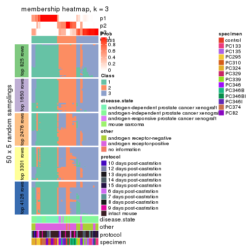
membership_heatmap(res, k = 4)
membership_heatmap(res, k = 5)
membership_heatmap(res, k = 6)
As soon as we have had the classes for columns, we can look for signatures which are significantly different between classes which can be candidate marks for certain classes. Following are the heatmaps for signatures.
Signature heatmaps where rows are scaled:
get_signatures(res, k = 2)
get_signatures(res, k = 3)
get_signatures(res, k = 4)
get_signatures(res, k = 5)
get_signatures(res, k = 6)
Signature heatmaps where rows are not scaled:
get_signatures(res, k = 2, scale_rows = FALSE)
get_signatures(res, k = 3, scale_rows = FALSE)
get_signatures(res, k = 4, scale_rows = FALSE)
get_signatures(res, k = 5, scale_rows = FALSE)
get_signatures(res, k = 6, scale_rows = FALSE)
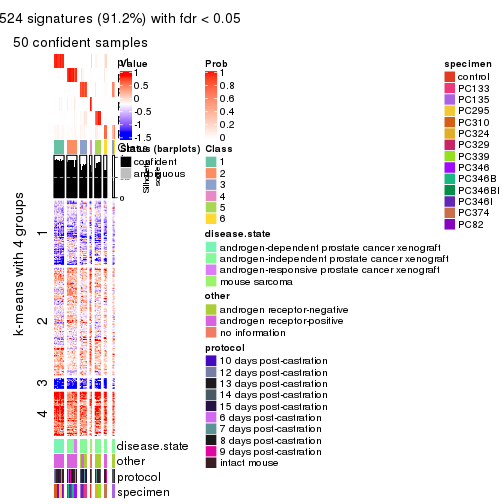
Compare the overlap of signatures from different k:
compare_signatures(res)
get_signature() returns a data frame invisibly. TO get the list of signatures, the function
call should be assigned to a variable explicitly. In following code, if plot argument is set
to FALSE, no heatmap is plotted while only the differential analysis is performed.
# code only for demonstration
tb = get_signature(res, k = ..., plot = FALSE)
An example of the output of tb is:
#> which_row fdr mean_1 mean_2 scaled_mean_1 scaled_mean_2 km
#> 1 38 0.042760348 8.373488 9.131774 -0.5533452 0.5164555 1
#> 2 40 0.018707592 7.106213 8.469186 -0.6173731 0.5762149 1
#> 3 55 0.019134737 10.221463 11.207825 -0.6159697 0.5749050 1
#> 4 59 0.006059896 5.921854 7.869574 -0.6899429 0.6439467 1
#> 5 60 0.018055526 8.928898 10.211722 -0.6204761 0.5791110 1
#> 6 98 0.009384629 15.714769 14.887706 0.6635654 -0.6193277 2
...
The columns in tb are:
which_row: row indices corresponding to the input matrix.fdr: FDR for the differential test. mean_x: The mean value in group x.scaled_mean_x: The mean value in group x after rows are scaled.km: Row groups if k-means clustering is applied to rows.UMAP plot which shows how samples are separated.
dimension_reduction(res, k = 2, method = "UMAP")
dimension_reduction(res, k = 3, method = "UMAP")
dimension_reduction(res, k = 4, method = "UMAP")
dimension_reduction(res, k = 5, method = "UMAP")
dimension_reduction(res, k = 6, method = "UMAP")
Following heatmap shows how subgroups are split when increasing k:
collect_classes(res)
Test correlation between subgroups and known annotations. If the known annotation is numeric, one-way ANOVA test is applied, and if the known annotation is discrete, chi-squared contingency table test is applied.
test_to_known_factors(res)
#> n disease.state(p) other(p) protocol(p) specimen(p) k
#> ATC:NMF 51 3.14e-04 4.58e-03 0.448 7.10e-06 2
#> ATC:NMF 45 4.91e-07 3.83e-08 0.199 1.37e-07 3
#> ATC:NMF 50 8.51e-17 1.36e-17 0.504 1.16e-12 4
#> ATC:NMF 51 1.06e-15 2.13e-16 0.549 1.05e-16 5
#> ATC:NMF 50 4.73e-13 1.61e-11 0.261 1.98e-18 6
If matrix rows can be associated to genes, consider to use functional_enrichment(res,
...) to perform function enrichment for the signature genes. See this vignette for more detailed explanations.
sessionInfo()
#> R version 3.6.0 (2019-04-26)
#> Platform: x86_64-pc-linux-gnu (64-bit)
#> Running under: CentOS Linux 7 (Core)
#>
#> Matrix products: default
#> BLAS: /usr/lib64/libblas.so.3.4.2
#> LAPACK: /usr/lib64/liblapack.so.3.4.2
#>
#> locale:
#> [1] LC_CTYPE=en_GB.UTF-8 LC_NUMERIC=C LC_TIME=en_GB.UTF-8
#> [4] LC_COLLATE=en_GB.UTF-8 LC_MONETARY=en_GB.UTF-8 LC_MESSAGES=en_GB.UTF-8
#> [7] LC_PAPER=en_GB.UTF-8 LC_NAME=C LC_ADDRESS=C
#> [10] LC_TELEPHONE=C LC_MEASUREMENT=en_GB.UTF-8 LC_IDENTIFICATION=C
#>
#> attached base packages:
#> [1] grid stats graphics grDevices utils datasets methods base
#>
#> other attached packages:
#> [1] genefilter_1.66.0 ComplexHeatmap_2.3.1 markdown_1.1 knitr_1.26
#> [5] GetoptLong_0.1.7 cola_1.3.2
#>
#> loaded via a namespace (and not attached):
#> [1] circlize_0.4.8 shape_1.4.4 xfun_0.11 slam_0.1-46
#> [5] lattice_0.20-38 splines_3.6.0 colorspace_1.4-1 vctrs_0.2.0
#> [9] stats4_3.6.0 blob_1.2.0 XML_3.98-1.20 survival_2.44-1.1
#> [13] rlang_0.4.2 pillar_1.4.2 DBI_1.0.0 BiocGenerics_0.30.0
#> [17] bit64_0.9-7 RColorBrewer_1.1-2 matrixStats_0.55.0 stringr_1.4.0
#> [21] GlobalOptions_0.1.1 evaluate_0.14 memoise_1.1.0 Biobase_2.44.0
#> [25] IRanges_2.18.3 parallel_3.6.0 AnnotationDbi_1.46.1 highr_0.8
#> [29] Rcpp_1.0.3 xtable_1.8-4 backports_1.1.5 S4Vectors_0.22.1
#> [33] annotate_1.62.0 skmeans_0.2-11 bit_1.1-14 microbenchmark_1.4-7
#> [37] brew_1.0-6 impute_1.58.0 rjson_0.2.20 png_0.1-7
#> [41] digest_0.6.23 stringi_1.4.3 polyclip_1.10-0 clue_0.3-57
#> [45] tools_3.6.0 bitops_1.0-6 magrittr_1.5 eulerr_6.0.0
#> [49] RCurl_1.95-4.12 RSQLite_2.1.4 tibble_2.1.3 cluster_2.1.0
#> [53] crayon_1.3.4 pkgconfig_2.0.3 zeallot_0.1.0 Matrix_1.2-17
#> [57] xml2_1.2.2 httr_1.4.1 R6_2.4.1 mclust_5.4.5
#> [61] compiler_3.6.0